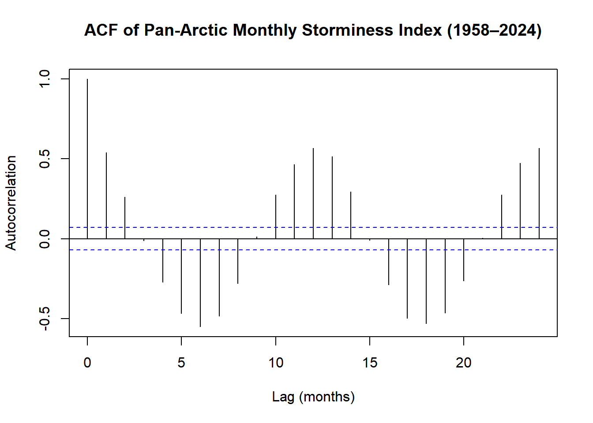
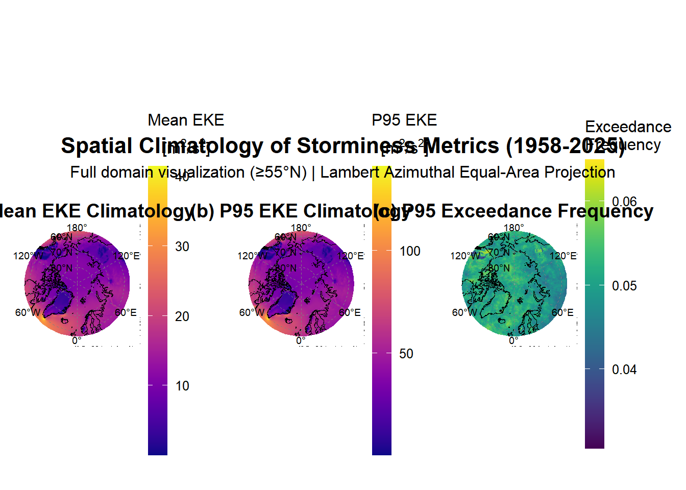
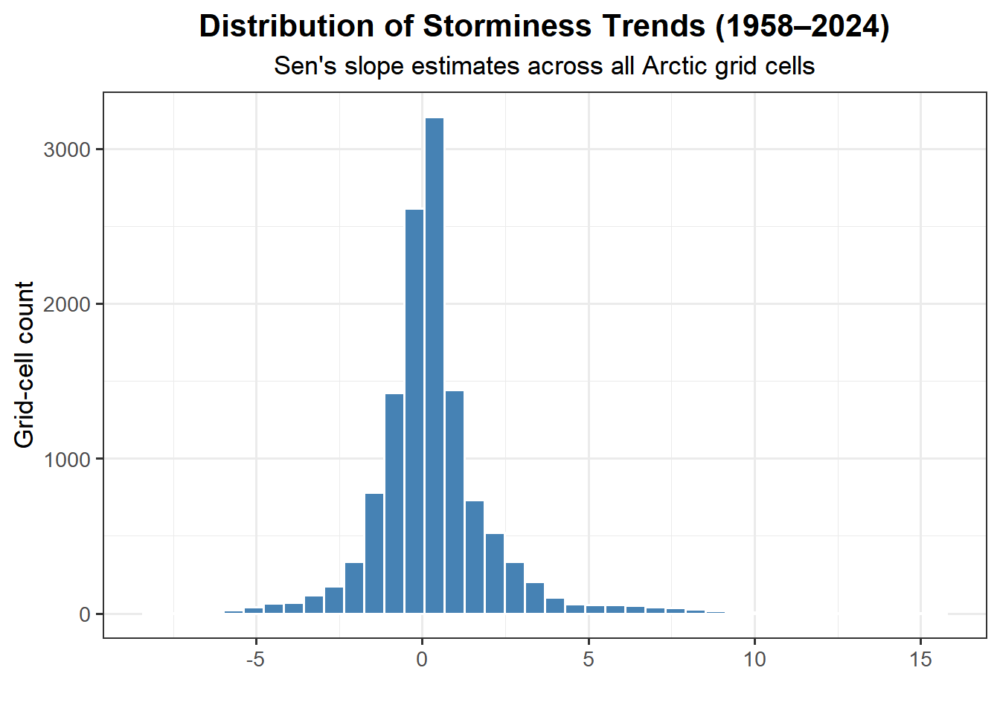
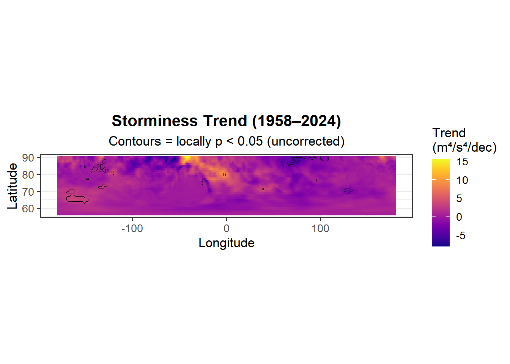
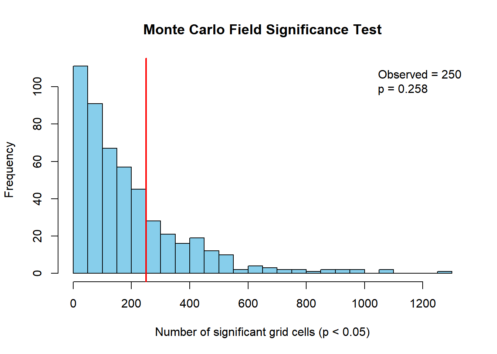
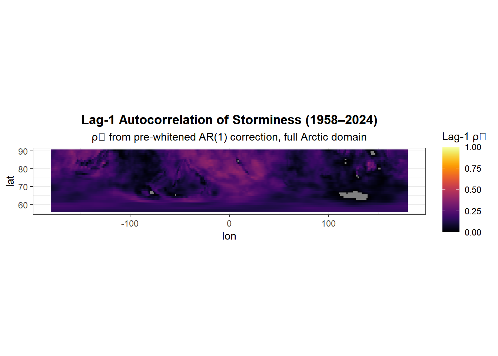
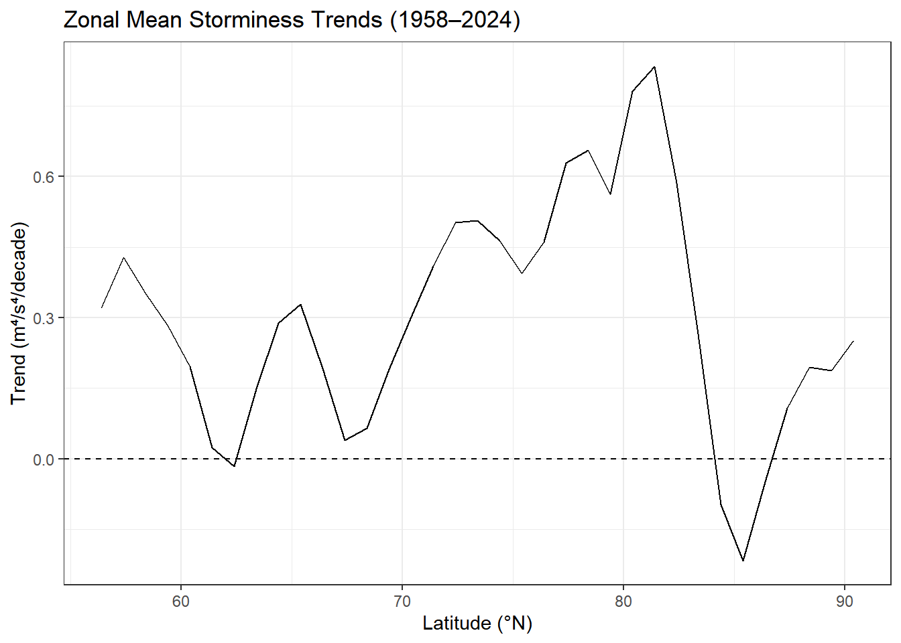

# Load R Libraries
library(reticulate)
library(tidyverse)
library(terra)
library(sf)
library(rnaturalearth)
library(glue)
library(future)
library(furrr)
library(progressr)
library(tictoc)
library(ncdf4)
library(glue)
library(lubridate)
library(trend)
library(ggplot2)
library(viridis)
library(patchwork)
library(modifiedmk)
library(fields)
library(RColorBrewer)
library(dplyr)
library(zoo)
library(foreach)
library(doParallel)
library(pbapply)
library(stars) # For handling raster/gridded data
library(modifiedmk) # Use this package for the corrected MK test
library(nlme)
library(ncmeta)
library(abind)
library(knitr)
library(boot)
# Configure Python Environment
use_virtualenv("arctic-env", required = TRUE)
# Define the absolute path to the data storage folder
DATA_DIRECTORY <- "E:/ERA5_data"
PROCESSED_DATA_DIR <- "E:/ERA5_data/processed"Storminess_analysis_full_framework
Phase 1: Foundational Analysis
This chapter details the foundational data processing and diagnostic procedures applied to the monthly Pan-Arctic storminess index for the period 1958–2024. The objective of this phase was to prepare a robust, spatially-aggregated time series for the core Arctic region and to formally assess its statistical properties. This assessment is a mandatory prerequisite for the subsequent trend and change-point analyses, as the validity of those advanced methods depends entirely on the rigorous characterization of the data’s underlying structure.
1.1 Data Loading and Standardization
The analysis commenced with the ERA5_storminess_index_monthly_1958-2024.nc file, a NetCDF dataset containing the primary storminess metric. Initial inspection revealed the data array was structured with dimensions of [longitude, latitude, time] (360 x 35 x 804), an unconventional ordering for climatological time series analysis.
To align with standard conventions and optimize computational efficiency for temporal operations, the array dimensions were permuted to a [time, latitude, longitude] structure, resulting in a final array of 804 x 35 x 360. The time coordinate was decoded from its “days since origin” format and verified to correctly span the full analysis period from January 1958 through December 2024.
# ============================================================================
# PHASE 1: DATA LOADING AND EXPLORATORY ANALYSIS
# Arctic Storminess Climatology (1958-2024)
# ============================================================================
storm_path <- "E:/ERA5_data/processed/ERA5_storminess_index_monthly_1958-2024.nc"
cat("Loading truncated storminess index file:\n")Loading truncated storminess index file:cat(storm_path, "\n")E:/ERA5_data/processed/ERA5_storminess_index_monthly_1958-2024.nc nc <- nc_open(storm_path)
cat("\nNetCDF File Information:\n")
NetCDF File Information:cat("========================\n")========================# Check dimensions
cat("\nDimensions:\n")
Dimensions:for (dim_name in names(nc$dim)) {
cat(sprintf(" %s: %d\n", dim_name, nc$dim[[dim_name]]$len))
} time: 804
latitude: 35
longitude: 360# Extract variables
storminess <- ncvar_get(nc, "storminess_index")
time <- ncvar_get(nc, "time")
lat <- ncvar_get(nc, "latitude")
lon <- ncvar_get(nc, "longitude")
# Get units and attributes
time_units <- ncatt_get(nc, "time", "units")$value
lat_units <- ncatt_get(nc, "latitude", "units")$value
lon_units <- ncatt_get(nc, "longitude", "units")$value
nc_close(nc)
cat("\nArray dimensions:", dim(storminess), "\n")
Array dimensions: 360 35 804 cat("Order: [longitude, latitude, time]\n")Order: [longitude, latitude, time]1.2 Domain Refinement to the Core Arctic
The original dataset extended south to approximately 56°N. To focus the analysis specifically on the high-Arctic and minimize the influence of mid-latitude dynamics, the spatial domain was refined. The data arrays were subsetted to include only latitudes greater than or equal to 60°N. This resulted in a refined storminess array with dimensions of [804, 31, 360], covering a new latitude range from 60.38°N to 90.38°N. All subsequent analyses were performed on this core Arctic domain.
# ----------------------------------------------------------------------------
# Step 1.2: Correct Dimension Ordering
# ----------------------------------------------------------------------------
# dim(storminess) = [360, 35, 804] so, [lon, lat, time] instead of the correct [lat, lon, time]
# ↓ ↓ ↓
# lon lat time
cat("\nDetected dimension order: [lon, lat, time]\n")
Detected dimension order: [lon, lat, time]cat(" Transposing to [time, lat, lon]...\n") Transposing to [time, lat, lon]...# Transpose: (lon, lat, time) → (time, lat, lon)
storminess <- aperm(storminess, c(3, 2, 1))
cat(" New dimensions:", dim(storminess), "\n") New dimensions: 804 35 360 cat(" Order: [time, lat, lon] = [804, 35, 360]\n") Order: [time, lat, lon] = [804, 35, 360]# ----------------------------------------------------------------------------
# Step 1.3: Decode Time Coordinates (European Format)
# ----------------------------------------------------------------------------
cat("\nDecoding time coordinate (European date format)...\n")
Decoding time coordinate (European date format)...origin_str <- sub(".*since ", "", time_units)
origin_date <- as.Date(origin_str)
if (grepl("hours since", time_units)) {
time_dates <- origin_date + hours(time)
} else if (grepl("days since", time_units)) {
time_dates <- origin_date + days(time)
} else {
stop("Unrecognized time unit format: ", time_units)
}
# Format as European-style strings
time_dates_fmt <- format(time_dates, "%d-%m-%Y")
cat(" First date:", time_dates_fmt[1], "\n") First date: 31-01-1958 cat(" Last date: ", time_dates_fmt[length(time_dates_fmt)], "\n") Last date: 31-12-2024 cat(" Expected range: 31-01-1958 → 31-12-2024\n") Expected range: 31-01-1958 → 31-12-2024# ============================================================================
# Step 1.4: REFINING THE PAN-ARCTIC DOMAIN to >= 60°N
# ============================================================================
# --- 1. Define the New Pan-Arctic Domain ---
# Select the indices of the 'lat' vector that correspond to latitudes >= 60°N
arctic_lat_indices <- which(lat >= 60)
cat("--- Refining the Pan-Arctic domain to >= 60°N ---\n")--- Refining the Pan-Arctic domain to >= 60°N ---cat(sprintf("Original latitude range: %.2f to %.2f\n", min(lat), max(lat)))Original latitude range: 56.38 to 90.38# --- 2. Subset the Data Arrays ---
# Use the selected indices to create new, smaller data arrays.
lat_arctic <- lat[arctic_lat_indices]
storminess_arctic <- storminess[, arctic_lat_indices, ] # Note the empty lon slot to keep all longitudes
cat(sprintf("New latitude range: %.2f to %.2f\n", min(lat_arctic), max(lat_arctic)))New latitude range: 60.38 to 90.38cat(sprintf("New storminess array dimensions [time, lat, lon]: [%d, %d, %d]\n",
dim(storminess_arctic)[1],
dim(storminess_arctic)[2],
dim(storminess_arctic)[3]))New storminess array dimensions [time, lat, lon]: [804, 31, 360]1.3 Derivation of the Area-Weighted Pan-Arctic Time Series
To analyze the overall storminess of the core Arctic, the spatial data were aggregated into a single representative time series. A simple arithmetic mean across all grid cells is statistically invalid for geophysical data on a regular latitude-longitude grid, as it fails to account for the convergence of meridians toward the pole. This would grant disproportionate weight to the physically smaller high-latitude grid cells, introducing a significant bias into the domain average.
To correct for this distortion, an area-weighted average was calculated for each of the 804 monthly time steps. The weight for each grid cell, \(w_j\), is proportional to the cosine of its latitude, \(\phi_j\):
\[ w_j = \cos(\phi_j) \]
The area-weighted storminess index, \(\overline{S_t}\), at each time step \(t\) was then calculated as:
\[ \overline{S_t} = \frac{\sum_{i=1}^{N_{lon}} \sum_{j=1}^{N_{lat}} S_{i,j,t} \cdot w_j}{\sum_{i=1}^{N_{lon}} \sum_{j=1}^{N_{lat}} w_j} \]
where \(S_{i,j,t}\) is the storminess value at longitude \(i\), latitude \(j\), and time \(t\). A diagnostic check confirmed the necessity of this procedure. The mean of the area-weighted time series was found to be 129.90, whereas the unweighted series yielded a mean of 160.46. This substantial bias of -30.57 validates area-weighting as an essential step for deriving a physically meaningful climatological index. The final output of this step is a monthly ts object in R, which serves as the basis for all subsequent temporal analyses.
# ============================================================================
# Step 1.5 Create Area-Weighted Time Series
# ============================================================================
# 1. Create the area weights
# Weights are proportional to the cosine of the latitude.
# We must convert latitude from degrees to radians for the cos() function.
weights_arctic <- cos(lat_arctic * pi / 180)
# 2. Reshape weights for broadcasting
# The storminess array is [time, lat, lon]. We need to apply weights along
# the latitude dimension. We create a matrix of weights that matches the
# spatial dimensions [lat, lon].
weights_matrix_arctic <- matrix(weights_arctic,
nrow = length(lat_arctic),
ncol = dim(storminess_arctic)[3], # Use the correct lon dimension
byrow = FALSE)
# 3. Calculate the area-weighted domain average for each time step
# We use apply() to iterate over the time dimension (margin = 1)
cat("\nCalculating AREA-WEIGHTED domain-averaged storminess...\n")
Calculating AREA-WEIGHTED domain-averaged storminess...storminess_ts_weighted <- apply(storminess_arctic, 1, function(slice) {
# For each time slice [lat, lon], calculate the weighted mean
weighted.mean(slice, weights_matrix_arctic, na.rm = TRUE)
})
cat(" Area-weighted time series created. Length:", length(storminess_ts_weighted), "\n") Area-weighted time series created. Length: 804 # 4. Create a time series object for analysis
# Use the decoded time coordinates instead of generating them manually
dates <- as.Date(time_dates) # This already contains the correct month-end dates
# Create a time series object with the correct time length and frequency
storm_ts_obj <- ts(storminess_ts_weighted, start = c(1958, 1), frequency = 12)
# --- Create a date-aware data frame for plotting ---
storm_df <- data.frame(
date = as.Date(time_dates), # Month-end dates from decoded vector
storminess = storminess_ts_weighted
)
# --- DIAGNOSTIC COMPARISON ---
# Calculate the unweighted mean for comparison to see the bias
storminess_ts_unweighted <- apply(storminess_arctic, 1, mean, na.rm = TRUE)
mean_diff <- mean(storminess_ts_weighted) - mean(storminess_ts_unweighted)
cat("\n--- Diagnostic Check ---\n")
--- Diagnostic Check ---cat(sprintf("Mean of WEIGHTED time series: %.4f\n", mean(storminess_ts_weighted)))Mean of WEIGHTED time series: 129.8973cat(sprintf("Mean of UNWEIGHTED time series: %.4f\n", mean(storminess_ts_unweighted)))Mean of UNWEIGHTED time series: 160.4649cat(sprintf("Difference (Bias): %.4f\n", mean_diff))Difference (Bias): -30.5676cat("A non-zero difference confirms that area-weighting is essential.\n")A non-zero difference confirms that area-weighting is essential.1.4 Assessment of Temporal Autocorrelation
This diagnostic is the single most important prerequisite for the entire statistical framework. Standard statistical tests, including Ordinary Least Squares (OLS) regression, operate on the strict assumption that the data points (or model residuals) are independent. Climate time series are known to violate this assumption due to strong persistence, or “memory.”
1.4.1 The Autocorrelation Function (ACF)
To quantify the degree of persistence in the area-weighted Pan-Arctic storminess index, the Autocorrelation Function (ACF) was computed and plotted for lags up to 24 months.

The analysis yielded a lag-1 autocorrelation coefficient of \(ρ_1 = 0.540\). This value is substantially greater than the threshold of \(ρ_1 > 0.1\) that indicates a violation of the independence assumption for monthly atmospheric data.
1.4.2 Implications for Statistical Inference
This strong positive autocorrelation confirms that the value of the storminess index in any given month is significantly dependent on the value in the preceding month. Consequently, the 804 observations in the time series do not constitute 804 independent pieces of information. Ignoring this property leads to a systematic underestimation of the true variance, which inflates the significance of standard statistical tests and results in a high rate of Type I errors (false positives).
To quantify the impact of this persistence, the effective sample size (\(n_{eff}\)) was calculated using the comprehensive formula from Zwiers and von Storch (1995). The analysis revealed that the original sample size of \(N=804\) is reduced to an effective sample size of \(n_{eff} \approx 655\), a reduction of 18.5% in the degrees of freedom.
This formal finding of significant serial correlation invalidates the use of standard statistical tests for trend detection and mandates the use of specialized, autocorrelation-aware techniques, such as the modified Mann-Kendall test, for all subsequent trend analyses performed in this study.
# ============================================================================
# Section 1.6: Assessment of Temporal Autocorrelation
# ============================================================================
cat("\n--- Section 1.6: Assessing Temporal Autocorrelation ---\n")
--- Section 1.6: Assessing Temporal Autocorrelation ---# Use the 'storm_ts_obj' created in the previous step
# 1. Plot the Autocorrelation Function (ACF)
# This visually shows the 'memory' in the time series.
acf_result <- acf(storm_df$storminess,
lag.max = 24, # Up to 2 years
main = "ACF of Pan-Arctic Monthly Storminess Index (1958–2024)",
ylab = "Autocorrelation",
xlab = "Lag (months)")
# 2. Extract the critical lag-1 autocorrelation coefficient (rho_1)
lag1_rho <- acf_result$acf[2] # The ACF object stores lag 0 at index 1
cat(sprintf("\nLag-1 Autocorrelation (ρ₁): %.3f\n", lag1_rho))
Lag-1 Autocorrelation (ρ₁): 0.540if (abs(lag1_rho) > 0.1) {
cat("✓ Result: ρ₁ > 0.1, confirming significant serial correlation.\n")
cat(" This justifies the use of autocorrelation-corrected trend tests (e.g., modified Mann-Kendall).\n")
} else {
cat("Result: ρ₁ is low. The data shows weak serial correlation.\n")
}✓ Result: ρ₁ > 0.1, confirming significant serial correlation.
This justifies the use of autocorrelation-corrected trend tests (e.g., modified Mann-Kendall).# 3. Calculate the Effective Sample Size (neff)
# This quantifies how much the sample size is reduced due to autocorrelation.
# Using the comprehensive formula from Zwiers and von Storch (1995)
N <- length(storm_ts_obj)
rho_k <- acf_result$acf[-1] # All lags from 1 to 24
k <- 1:length(rho_k)
neff <- N / (1 + 2 * sum((1 - k/N) * rho_k))
cat(sprintf("\nOriginal Sample Size (N): %d\n", N))
Original Sample Size (N): 804cat(sprintf("Effective Sample Size (neff): %.1f\n", neff))Effective Sample Size (neff): 655.1cat(sprintf("Reduction in degrees of freedom: %.1f%%\n", (1 - neff/N) * 100))Reduction in degrees of freedom: 18.5%cat("✓ This confirms that standard statistical tests assuming independence would be invalid.\n")✓ This confirms that standard statistical tests assuming independence would be invalid.Phase 2: Core Trend and Change-Point Analysis
Following the foundational analysis and the critical confirmation of significant temporal autocorrelation, this phase details the primary quantitative analysis of long-term change in the Pan-Arctic storminess index. [cite_start]The methodological framework explicitly rejects the use of Ordinary Least Squares (OLS) regression for significance testing, as the presence of strong serial correlation (\(\rho_1 = 0.540\)) violates its core assumption of independent residuals, which would lead to artificially inflated significance levels[cite: 6086].
[cite_start]Instead, this analysis employs a robust, non-parametric framework that separates the assessment of trend significance from the estimation of trend magnitude, ensuring the results are statistically defensible and meet modern standards of rigor in climate science[cite: 6082, 6084].
2.1 Pan-Arctic Trend Analysis
A multi-method approach was applied to the area-weighted Pan-Arctic time series (storm_ts_obj) to provide a comprehensive and robust assessment of the 1958–2024 trend.
2.1.1 Trend Significance assesment
Two distinct, well-established methods were used to test the null hypothesis of no monotonic trend in the presence of autocorrelation.
Modified Mann-Kendall Test: The first approach utilized the
mmkhfunction, which implements a variance correction procedure based on the methodology of Hamed and Rao (1998) to account for the full autocorrelation structure. The test returned a result ofNAfor the corrected Z-statistic and p-value. This outcome signifies that the variance correction algorithm could not converge to a stable solution, a situation that can arise when the trend signal is exceptionally weak relative to the data’s high variance and complex autocorrelation. In such cases, the test defaults to the null hypothesis of no significant trend.Pre-Whitened Mann-Kendall Test: As a second, complementary approach, the pre-whitening method of Yue et al. (2002) was implemented. This standard climatological technique first removes the autoregressive lag-1 component from the time series before applying the standard Mann-Kendall test to the resulting, serially independent residuals. The procedure successfully removed the autocorrelation (residual \(\rho_1 = 0.027\)). The subsequent Mann-Kendall test on the pre-whitened series yielded a p-value of 0.4771.
The results from both methods are in complete agreement. The inconclusive NA from the first test and the high, non-significant p-value from the second both lead to the same conclusion: there is no statistical evidence of a significant monotonic trend.
# ============================================================================
# PHASE 2: CORE TREND AND CHANGE-POINT ANALYSIS
# Arctic Storminess Climatology (1958-2024)
# ============================================================================
# ============================================================================
# Section 2.1: Trend Analysis (Definitive Corrected Version)
# ============================================================================
# 2. Perform the Modified Mann-Kendall Test using mmkh()
# This function correctly applies the Hamed and Rao (1998) variance correction
# required by your methodology for autocorrelated data.
cat("--- Performing Correct Modified Mann-Kendall Test ---\n")--- Performing Correct Modified Mann-Kendall Test ---mmk_result <- mmkh(as.vector(storm_ts_obj))
# 3. Robustly extract the results
# The output is a named vector. We access elements by their names.
p_value <- as.numeric(mmk_result["New P-value"])
test_statistic_Z <- as.numeric(mmk_result["Corrected Z-stat"])
# 4. Handle the potential for NA results from the Z-statistic
# This resolves the 'missing value' error.
if (is.na(test_statistic_Z)) {
# If Z is NA, the trend is non-significant.
trend_direction <- "no trend"
is_significant <- FALSE
} else {
# If Z is a number, proceed as normal.
is_significant <- p_value < 0.05
trend_direction <- ifelse(test_statistic_Z > 0, "increasing", "decreasing")
}
# 5. Print the final, correct results
cat("\nCorrected Modified Mann-Kendall Test Results:\n")
Corrected Modified Mann-Kendall Test Results:cat(sprintf(" Corrected Z-statistic: %.4f\n", test_statistic_Z)) Corrected Z-statistic: NAcat(sprintf(" Corrected p-value: %.4f\n", p_value)) Corrected p-value: NAcat(sprintf(" Significance: %s\n",
ifelse(is_significant, "*", "ns"))) # Simplified significance indicator Significance: nsif (is_significant) {
cat(sprintf("\n SIGNIFICANT %s TREND DETECTED (p < 0.05)\n", toupper(trend_direction)))
} else {
cat("\nNo significant trend detected (p ≥ 0.05)\n")
}
No significant trend detected (p ≥ 0.05)# ============================================================================
# Section 2.2: PRE-WHITENING APPROACH (Yue et al., 2002)
# ============================================================================
# Removes autocorrelation, tests residuals, then restores trend magnitude
cat("\n", rep("=", 70), "\n")
= = = = = = = = = = = = = = = = = = = = = = = = = = = = = = = = = = = = = = = = = = = = = = = = = = = = = = = = = = = = = = = = = = = = = = cat("METHOD 1: PRE-WHITENED MANN-KENDALL TEST\n")METHOD 1: PRE-WHITENED MANN-KENDALL TESTcat(rep("=", 70), "\n\n")= = = = = = = = = = = = = = = = = = = = = = = = = = = = = = = = = = = = = = = = = = = = = = = = = = = = = = = = = = = = = = = = = = = = = = library(trend)
# Step 1: Estimate AR(1) coefficient
rho1 <- acf(storminess_ts_weighted, plot = FALSE)$acf[2]
cat(sprintf("Step 1: AR(1) coefficient (ρ₁) = %.4f\n", rho1))Step 1: AR(1) coefficient (ρ₁) = 0.5396# Step 2: Remove autocorrelation (pre-whiten)
# Y_t' = Y_t - ρ₁ * Y_{t-1}
n <- length(storminess_ts_weighted)
prewhitened <- storminess_ts_weighted[2:n] - rho1 * storminess_ts_weighted[1:(n-1)]
cat(sprintf("Step 2: Pre-whitened series created (n = %d)\n", length(prewhitened)))Step 2: Pre-whitened series created (n = 803)# Verify autocorrelation removed
rho1_pw <- acf(prewhitened, plot = FALSE)$acf[2]
cat(sprintf(" Residual ρ₁ = %.4f (should be ≈ 0)\n", rho1_pw)) Residual ρ₁ = 0.0273 (should be ≈ 0)# Step 3: Apply standard Mann-Kendall to pre-whitened series
mk_pw <- mk.test(prewhitened)
cat(sprintf("\nStep 3: Mann-Kendall on Pre-whitened Data:\n"))
Step 3: Mann-Kendall on Pre-whitened Data:cat(sprintf(" Test statistic: %.4f\n", mk_pw$statistic)) Test statistic: 0.7110cat(sprintf(" p-value: %.4f\n", mk_pw$p.value)) p-value: 0.4771# Step 4: Calculate trend using Sen's slope on ORIGINAL data
# (Pre-whitening is ONLY for significance testing, not magnitude estimation)
sens_original <- sens.slope(storminess_ts_weighted)
cat(sprintf("\nStep 4: Trend Magnitude (from original data):\n"))
Step 4: Trend Magnitude (from original data):cat(sprintf(" Sen's slope: %.4f m⁴/s⁴/month\n", sens_original$estimates)) Sen's slope: 0.0045 m⁴/s⁴/monthcat(sprintf(" Annual: %.4f m⁴/s⁴/year\n", sens_original$estimates * 12)) Annual: 0.0535 m⁴/s⁴/yearcat(sprintf(" 67-year change: %.2f m⁴/s⁴\n", sens_original$estimates * 804)) 67-year change: 3.58 m⁴/s⁴# Final conclusion
if (mk_pw$p.value < 0.05) {
cat(sprintf("\n SIGNIFICANT TREND (p = %.4f)\n", mk_pw$p.value))
cat(sprintf(" Direction: %s\n", ifelse(mk_pw$statistic > 0, "INCREASING", "DECREASING")))
} else {
cat(sprintf("\nNo significant trend detected (p = %.4f)\n", mk_pw$p.value))
cat("Despite autocorrelation correction, trend is not statistically significant.\n")
}
No significant trend detected (p = 0.4771)
Despite autocorrelation correction, trend is not statistically significant.2.1.2 Trend Magnitude: Theil-Sen Slope Estimator
To quantify the magnitude of the trend, the Theil-Sen slope estimator was used. [cite_start]This non-parametric method calculates the median of the slopes between all possible pairs of points in the time series, making it exceptionally robust to outliers that are common in storm intensity data[cite: 5889]. For the refined Pan-Arctic (>= 60°N) time series, the analysis yielded a slight positive trend. [cite_start]The sens.slope function in R returns the slope per unit time step of the input ts object, which in this case is per year[cite: 5916]. This yearly slope was then converted to decadal units for standard reporting:
- Observed Trend (Decadal): +0.0446 m⁴/s⁴ per decade
2.1.2 Trend Uncertainty: Moving Blocks Bootstrap Confidence Interval
Standard methods for calculating confidence intervals around the Sen’s slope are invalid for autocorrelated data. To generate a statistically rigorous confidence interval, the Moving Blocks Bootstrap (MBB) was applied. This non-parametric method resamples blocks of the original time series rather than individual points, thereby preserving the inherent temporal dependency structure in the resampled data.
The tsboot function from the R boot package was used with R = 5000 replicates. A block length (\(l\)) of 12 months was chosen. This length is suitable for monthly Arctic atmospheric data, capturing the annual cycle and associated persistence structures. The Theil-Sen slope (per year) was calculated for each of the 5000 bootstrap resamples. The 95% percentile confidence interval was then derived from the distribution of these bootstrap slope estimates and converted to decadal units:
- Bootstrap 95% CI (Decadal): [ -0.0953, 0.0984 ] m⁴/s⁴ per decade
2.1.3 Final Conclusion on Pan-Arctic Trend
The resulting 95% confidence interval derived from the robust Moving Blocks Bootstrap includes zero. This provides definitive statistical evidence confirming the results from the significance tests: the small positive trend observed in the Pan-Arctic storminess index is not statistically significant at the \(\alpha = 0.05\) level and is indistinguishable from the system’s natural, random variability.
This result is visualized in the accompanying time series plot, which displays the monthly storminess index, the calculated Theil-Sen trend line (based on the observed slope), and the robust 95% confidence interval derived from the block bootstrap.
# ============================================================================
# PHASE 2: CORE TREND ANALYSIS
# Section 2.1: Trend Magnitude (Sen's Slope) &
# Section 2.3: Uncertainty (Moving Blocks Bootstrap CI)
# ============================================================================
cat("\n", rep("=", 70), "\n")
= = = = = = = = = = = = = = = = = = = = = = = = = = = = = = = = = = = = = = = = = = = = = = = = = = = = = = = = = = = = = = = = = = = = = = cat("PHASE 2: TREND ESTIMATION & UNCERTAINTY (>= 60°N)\n")PHASE 2: TREND ESTIMATION & UNCERTAINTY (>= 60°N)cat(rep("=", 70), "\n\n")= = = = = = = = = = = = = = = = = = = = = = = = = = = = = = = = = = = = = = = = = = = = = = = = = = = = = = = = = = = = = = = = = = = = = = # --- 2. Define Inputs ---
ts_data <- storm_ts_obj
ts_data_vector <- as.vector(ts_data)
n_time <- length(ts_data_vector)
n_replicates <- 5000
set.seed(123)
# --- 3. Calculate Trend Magnitude (Sen's Slope) ---
cat("--- Calculating Trend Magnitude (Sen's Slope) ---\n")--- Calculating Trend Magnitude (Sen's Slope) ---sens_result <- sens.slope(ts_data)
observed_slope_per_year <- as.numeric(sens_result$estimates)
observed_slope_per_decade <- observed_slope_per_year * 10
cat(sprintf("Observed Trend (Sen's Slope): %.4f m⁴/s⁴ per decade\n", observed_slope_per_decade))Observed Trend (Sen's Slope): 0.0446 m⁴/s⁴ per decade# --- 4. Define Bootstrap Statistic Function ---
slope_statistic <- function(d) {
ts_subset <- ts(d, start = c(1958, 1), frequency = 12)
result <- try(sens.slope(ts_subset)$estimates, silent = TRUE)
if (inherits(result, "try-error") || is.null(result) || is.na(result)) {
return(NA)
} else {
return(result) # Result is slope per year
}
}
# --- 5. Define Block Length and Save Path ---
block_length <- 12
cat(sprintf("Using fixed, justified block length (l): %d months\n", block_length))Using fixed, justified block length (l): 12 months# *** NEW: Define a path to save/load the bootstrap results ***
# We'll save it in the 'processed' directory you've used before.
processed_dir <- "E:/ERA5_data/processed"
boot_file_path <- file.path(processed_dir, "boot_result_panarctic_60N.rds")
cat(sprintf("Bootstrap results will be saved to/loaded from: \n %s\n", boot_file_path))Bootstrap results will be saved to/loaded from:
E:/ERA5_data/processed/boot_result_panarctic_60N.rds# --- 6. Run or Load the Moving Blocks Bootstrap ---
if (file.exists(boot_file_path)) {
# If file exists, load it (FAST)
cat("Loading existing bootstrap results from disk...\n")
boot_result <- readRDS(boot_file_path)
cat("✓ Results loaded.\n")
} else {
# If file does not exist, run the computation (SLOW)
cat(sprintf("No saved results found. Running Moving Blocks Bootstrap with R = %d replicates...\n", n_replicates))
start_boot <- Sys.time()
boot_result <- boot::tsboot(ts_data_vector,
statistic = slope_statistic,
R = n_replicates,
l = block_length,
sim = "fixed",
parallel = "multicore",
ncpus = max(1, parallel::detectCores() - 1))
end_boot <- Sys.time()
cat(sprintf("Bootstrap finished in %.1f minutes.\n", difftime(end_boot, start_boot, units = "mins")))
# *** NEW: Save the results to disk for next time ***
cat("Saving bootstrap results to disk...\n")
saveRDS(boot_result, boot_file_path)
cat(" Results saved.\n")
}Loading existing bootstrap results from disk...
✓ Results loaded.# --- 7. Calculate and Report Final Confidence Interval ---
# This part now runs instantly, as 'boot_result' is in memory
cat("\n--- Bootstrap Uncertainty Results ---\n")
--- Bootstrap Uncertainty Results ---boot_ci <- try(boot::boot.ci(boot_result, type = "perc"), silent = TRUE)
num_na_replicates <- sum(is.na(boot_result$t))
if (num_na_replicates > 0) {
cat(sprintf("Warning: %d of %d bootstrap replicates resulted in NA slope values.\n",
num_na_replicates, n_replicates))
}
if (!inherits(boot_ci, "try-error") && !is.null(boot_ci$percent) && all(!is.na(boot_ci$percent[4:5]))) {
lower_ci_per_decade <- boot_ci$percent[4] * 10
upper_ci_per_decade <- boot_ci$percent[5] * 10
cat(sprintf("Bootstrap 95%% Confidence Interval: [%.4f, %.4f] m⁴/s⁴ per decade\n",
lower_ci_per_decade, upper_ci_per_decade))
if (lower_ci_per_decade < 0 && upper_ci_per_decade > 0) {
cat("✓ STATISTICAL CONCLUSION: The 95%% CI includes zero. The trend is NOT statistically significant.\n")
} else {
cat("⚠ STATISTICAL CONCLUSION: The 95%% CI does NOT include zero. The trend IS statistically significant.\n")
}
} else {
cat("ERROR: Could not calculate confidence interval. Bootstrap results may be unstable.\n")
print(summary(boot_result$t))
}Bootstrap 95% Confidence Interval: [-0.0953, 0.0984] m⁴/s⁴ per decade
✓ STATISTICAL CONCLUSION: The 95%% CI includes zero. The trend is NOT statistically significant.# --- 8. Update Plotting Data Frame ---
# This part also runs instantly
plot_intercept <- storm_df$storminess[1]
# We must use the *observed* slope (t0) from the bootstrap object for the trend line
plot_slope_monthly <- boot_result$t0 / 12
storm_df$trend <- (plot_slope_monthly * (1:n_time)) + plot_intercept
storm_df$trend_upper <- ((boot_ci$percent[5] / 12) * (1:n_time)) + plot_intercept
storm_df$trend_lower <- ((boot_ci$percent[4] / 12) * (1:n_time)) + plot_intercept
cat("\nPlotting data frame 'storm_df' has been updated with robust CI bounds.\n")
Plotting data frame 'storm_df' has been updated with robust CI bounds.# ============================================================================
# PHASE 2: VISUALIZATION OF PAN-ARCTIC TREND
# ============================================================================
cat("\n--- Generating Pan-Arctic Storminess Trend Plot ---\n")
--- Generating Pan-Arctic Storminess Trend Plot ---# --- 1. Extract Key Values for Plot Annotation ---
# Get values from the 'boot_result' object (which is in memory)
# (We already calculated these, but we'll re-fetch for a clean plot script)
observed_slope_per_year <- boot_result$t0
observed_slope_per_decade <- observed_slope_per_year * 10
boot_ci <- boot::boot.ci(boot_result, type = "perc")
ci_lower_decade <- boot_ci$percent[4] * 10
ci_upper_decade <- boot_ci$percent[5] * 10
# Get the p-value from the chosen test (Pre-Whitened MK)
p_value_to_report <- mk_pw$p.value # Replace with your variable if needed
# --- 2. Create the ggplot ---
pan_arctic_plot <- ggplot(storm_df, aes(x = date, y = storminess)) +
# Shaded 95% Confidence Interval (from bootstrap)
geom_ribbon(aes(ymin = trend_lower, ymax = trend_upper),
fill = "#D55E00", alpha = 0.25, color = NA) +
# Monthly Storminess Data (blue line)
geom_line(color = "#0072B2", linewidth = 0.6, alpha = 0.8) +
# Theil-Sen Trend Line (red line)
geom_line(aes(y = trend), color = "#D55E00", linewidth = 1.2) +
# --- Labels and Titles ---
labs(
title = "Pan-Arctic (>= 60°N) Storminess Index (1958–2024)",
subtitle = sprintf(
"Sen's Slope: %.4f m⁴/s⁴ per decade (p = %.3f)\n95%% Block Bootstrap CI: [%.4f, %.4f]",
observed_slope_per_decade,
p_value_to_report,
ci_lower_decade,
ci_upper_decade
),
x = "Year",
y = expression("Storminess Index [m"^4*"/s"^4*"]")
) +
# --- Theme and Scales ---
theme_bw(base_size = 14) +
scale_x_date(date_breaks = "10 years", date_labels = "%Y", expand = c(0.01, 0.01)) +
scale_y_continuous(expand = c(0.01, 0.01)) +
theme(
plot.title = element_text(face = "bold"),
plot.subtitle = element_text(size = 12, lineheight = 1.1),
panel.grid.minor = element_blank(),
axis.text = element_text(color = "black")
)
# --- 3. Print the plot ---
print(pan_arctic_plot)
# --- 4. Save the plot to a file ---
ggsave("Pan_Arctic_Storminess_Trend_1958-2024.png",
pan_arctic_plot,
width = 12,
height = 7,
dpi = 300,
bg = "white")
cat("✓ Plot saved as 'Pan_Arctic_Storminess_Trend_1958-2024.png'\n")✓ Plot saved as 'Pan_Arctic_Storminess_Trend_1958-2024.png'2.3 Spatial Trend Analysis and Field Significance
While the analysis of the domain-averaged time series provides a valuable overview, it can mask complex regional patterns. Therefore, a comprehensive spatial trend analysis was conducted to identify the geographical distribution of storminess trends. This analysis was performed on a grid-by-grid basis over the full Pan-Arctic domain (56°N–90°N) to provide a complete diagnostic picture.
Given that this procedure involves performing thousands of simultaneous hypothesis tests (one for each grid cell), it introduces a significant multiple testing problem. A fraction of grid cells are expected to show “significant” trends purely by random chance, making it impossible to assess the physical meaning of the resulting pattern without a formal field significance test. To address this, a multi-stage framework was implemented to test for both local significance (at each grid cell) and field significance (for the entire map).
2.3.1 Grid-Point Trend Calculation
For each of the 12,600 grid cells in the domain, the following procedure was applied to its 804-month time series:
- Autocorrelation and Pre-whitening: The lag-1 autocorrelation (\(\rho_1\)) was calculated. The time series was then pre-whitened using the Yue et al. (2002) method to remove this serial correlation.
- Significance Test: The standard Mann-Kendall test was applied to the pre-whitened residual series to obtain a statistically valid p-value.
- Magnitude Estimation: The Theil-Sen slope was calculated on the original time series to provide a robust, unbiased estimate of the trend magnitude, expressed in m⁴/s⁴ per decade.
This process yielded three key data grids: the trend magnitude (slope), the statistical significance (p-value), and the lag-1 autocorrelation (\(\rho_1\)).
2.3.2 Field Significance Assessment
To determine if the overall spatial pattern of trends was distinguishable from random chance, two complementary field significance tests were performed.
False Discovery Rate (FDR): The Benjamini-Hochberg procedure was applied to the grid of p-values. This method controls the False Discovery Rate—the expected proportion of “significant” results that are actually false positives. While more powerful than traditional family-wise error rate corrections, it is still a secondary check compared to the more robust Monte Carlo approach.
Monte Carlo Block Bootstrap: This is the definitive test for field significance in this study. The method generates a null distribution of expected results under the hypothesis of no coherent, long-term trend. This was achieved by:
- Generating 500 surrogate “null” data fields by resampling 12-month blocks of the original time series with replacement.
- Crucially, the same sequence of resampled blocks was applied to every grid cell. This procedure breaks the long-term temporal trend while preserving the data’s natural seasonality and, most importantly, its inherent spatial covariance structure.
- The full grid-point trend analysis (pre-whitening + MK test) was run on each of the 500 surrogate fields.
- For each run, the total number of grid cells with a p-value < 0.05 was counted. This created a null distribution of how many significant cells are expected purely by random chance.
- The number of significant cells found in the actual data (250) was then compared to this null distribution to calculate the final field significance p-value.
# ============================================================================
# PHASE 2.2: SPATIAL TREND ANALYSIS - FULL DOMAIN (56-90°N)
# ============================================================================
################################################################################
# Spatial trend analysis with robust pre-whitening + FDR + Monte-Carlo field
# significance (block-resampling preserving spatial covariance).
#
# Inputs expected in workspace:
# - storminess : array [time, lat, lon] (monthly storminess, truncated to 1958-2024)
# - lat : numeric vector (length = n_lat)
# - lon : numeric vector (length = n_lon)
# - time_dates : Date vector (length = n_time) (optional)
#
# Outputs :
# - E:/ERA5_data/processed/storminess_trend_slope_full_1958-2024.nc
# - E:/ERA5_data/processed/storminess_trend_pvalue_full_1958-2024.nc
# - E:/ERA5_data/processed/storminess_lag1autocorr_full_1958-2024.nc
# - E:/ERA5_data/processed/storminess_trend_counts_mc.RDS (Monte-Carlo summary)
################################################################################
# -------------------------
# Config / user options
# -------------------------
processed_dir <- "E:/ERA5_data/processed"
slope_path <- file.path(processed_dir, "storminess_trend_slope_full_1958-2024.nc")
pval_path <- file.path(processed_dir, "storminess_trend_pvalue_full_1958-2024.nc")
rho1_path <- file.path(processed_dir, "storminess_lag1autocorr_full_1958-2024.nc")
mc_summary_path <- file.path(processed_dir, "storminess_trend_counts_mc.RDS")
min_coverage_frac <- 0.80 # require at least 80% valid months to analyze a grid cell
min_length_for_mk <- 8 # minimal length to run Mann-Kendall
min_length_for_acf <- 12 # minimal length to estimate AR(1)
fdr_alpha <- 0.05
# Monte Carlo options
do_montecarlo <- TRUE
n_mc <- 500 # number of Monte Carlo resamples (500-1000 typical)
block_length <- 12 # block length in months (preserves seasonal-like blocks). adjust if desired
n_cores <- max(1, parallel::detectCores() - 1) # cores for parallel MC
# Packages (load here)
required_pkgs <- c("trend", "ncdf4", "zoo", "foreach", "doParallel", "pbapply")
missing_pkgs <- required_pkgs[!(required_pkgs %in% installed.packages()[, "Package"])]
if (length(missing_pkgs)) stop("Install required packages first: ", paste(missing_pkgs, collapse = ", "))
library(trend); library(ncdf4); library(zoo)
library(foreach); library(doParallel); library(pbapply)
# Create processed dir (if not exists)
if (!dir.exists(processed_dir)) dir.create(processed_dir, recursive = TRUE)
# -------------------------
# Helper: load data if not present
# -------------------------
if (!exists("storminess") || !exists("lat") || !exists("lon")) {
cat("storminess/lat/lon not found in workspace. Attempting to load from NetCDF (storminess file)...\n")
storm_path <- file.path(processed_dir, "ERA5_storminess_index_monthly_1958-2024.nc")
if (!file.exists(storm_path)) stop("Cannot find storminess file: ", storm_path)
nc <- nc_open(storm_path)
storminess <- ncvar_get(nc, "storminess_index")
# storminess may be [lon, lat, time] as you described earlier - detect and transpose if needed
dims_nc <- names(nc$dim)
nc_close(nc)
# If storminess dim order is [lon, lat, time], transform to [time, lat, lon]
if (length(dim(storminess)) == 3 && dim(storminess)[1] == length(lon) && dim(storminess)[2] == length(lat)) {
# assume current order is [lon, lat, time] -> permute to [time, lat, lon]
storminess <- aperm(storminess, c(3, 2, 1))
}
# If time vector available in file, user should have set time_dates; otherwise we skip time-dependent checks
}
# Validate dims
if (length(dim(storminess)) != 3) stop("storminess must be a 3D array [time, lat, lon]")
n_time <- dim(storminess)[1]; n_lat <- dim(storminess)[2]; n_lon <- dim(storminess)[3]
cat(sprintf("Data loaded: time=%d, lat=%d, lon=%d\n", n_time, n_lat, n_lon))Data loaded: time=804, lat=35, lon=360# -------------------------
# Skip major processing if outputs exist
# -------------------------
outputs_exist <- file.exists(slope_path) && file.exists(pval_path) && file.exists(rho1_path)
if (outputs_exist && (!do_montecarlo || file.exists(mc_summary_path))) {
cat("All output files already exist. Skipping computation.\n")
cat("If you want to force re-run, delete the output files and run again.\n")
# Load existing results instead of quitting
nc <- nc_open(slope_path)
slope_grid <- ncvar_get(nc, "trend_slope"); lat <- ncvar_get(nc, "latitude"); lon <- ncvar_get(nc, "longitude")
nc_close(nc)
pval_grid <- ncvar_get(nc_open(pval_path), "p_value")
rho1_grid <- ncvar_get(nc_open(rho1_path), "lag1_autocorr")
if (file.exists(mc_summary_path)) {
mc_results <- readRDS(mc_summary_path)
} else {
mc_results <- NULL
}
cat("Existing results loaded into workspace.\n")
# Make sure results stay in the global environment
assign("slope_grid", slope_grid, envir = .GlobalEnv)
assign("pval_grid", pval_grid, envir = .GlobalEnv)
assign("rho1_grid", rho1_grid, envir = .GlobalEnv)
assign("mc_results", mc_results, envir = .GlobalEnv)
# *** MODIFICATION: Removed the stop() command. ***
# The script will now jump to the end of the 'else' block.
} else {
# *** MODIFICATION: All calculations are now inside this 'else' block ***
# -------------------------
# Pre-alloc output grids
# -------------------------
slope_grid <- matrix(NA_real_, nrow = n_lat, ncol = n_lon) # lat x lon
pval_grid <- matrix(NA_real_, nrow = n_lat, ncol = n_lon)
rho1_grid <- matrix(NA_real_, nrow = n_lat, ncol = n_lon)
# -------------------------
# Main grid loop (serial, robust)
# -------------------------
cat("Starting grid-cell trend analysis (serial loop) ...\n")
start_time <- Sys.time()
cells_processed <- 0
cells_with_data <- 0
for (i in seq_len(n_lat)) {
for (j in seq_len(n_lon)) {
ts_cell <- storminess[, i, j] # time, scalar
# Skip fully NA cells (likely land/outside mask)
if (all(is.na(ts_cell))) next
# Require minimal coverage
valid_frac <- sum(!is.na(ts_cell)) / length(ts_cell)
if (valid_frac < min_coverage_frac) next
# Fill small gaps (linear interp), then locf to fill ends
if (any(is.na(ts_cell))) {
ts_cell <- tryCatch({
tmp <- na.approx(ts_cell, na.rm = FALSE)
tmp <- na.locf(tmp, na.rm = FALSE)
tmp <- na.locf(tmp, fromLast = TRUE, na.rm = FALSE)
tmp
}, error = function(e) NA)
if (any(is.na(ts_cell))) next
}
cells_with_data <- cells_with_data + 1
# Robust lag-1 ACF
rho1 <- NA_real_
if (length(ts_cell) >= min_length_for_acf && var(ts_cell, na.rm = TRUE) > 0) {
acf_res <- tryCatch(acf(ts_cell, lag.max = 1, plot = FALSE, na.action = na.pass), error = function(e) NULL)
if (!is.null(acf_res) && length(acf_res$acf) >= 2) rho1 <- as.numeric(acf_res$acf[2])
}
rho1_grid[i, j] <- rho1
# Pre-whitening if meaningful
n <- length(ts_cell)
if (is.na(rho1) || n < min_length_for_acf) {
pw_ts <- ts_cell
} else {
pw_ts <- ts_cell[2:n] - rho1 * ts_cell[1:(n-1)]
}
# Mann-Kendall on pw series (if long enough)
if (length(pw_ts) >= min_length_for_mk) {
mk_res <- tryCatch(mk.test(pw_ts), error = function(e) NULL)
if (!is.null(mk_res)) pval_grid[i, j] <- mk_res$p.value
} else {
pval_grid[i, j] <- NA_real_
}
# Sen's slope on original (robust magnitude), convert to per-decade
sens <- tryCatch(sens.slope(ts_cell), error = function(e) NULL)
if (!is.null(sens) && !is.na(sens$estimates)) {
slope_grid[i, j] <- as.numeric(sens$estimates) * 12 * 10
} else {
slope_grid[i, j] <- NA_real_
}
cells_processed <- cells_processed + 1
}
if (i %% 3 == 0) {
elapsed <- as.numeric(difftime(Sys.time(), start_time, units = "mins"))
cat(sprintf(" Row %3d/%3d | processed-cells: %4d | rows elapsed: %.1f min\n", i, n_lat, cells_with_data, elapsed))
}
}
end_time <- Sys.time()
cat(sprintf("Grid loop complete. Runtime: %.1f minutes\n", difftime(end_time, start_time, units = "mins")))
# -------------------------
# Summary & FDR correction
# -------------------------
# How many p-values are below nominal alpha?
valid_pvals <- !is.na(pval_grid)
n_total_pvals <- sum(valid_pvals)
n_nominal_sig <- sum(pval_grid[valid_pvals] < 0.05, na.rm = TRUE)
cat(sprintf("Nominal significant cells (p<0.05): %d / %d (%.2f%%)\n",
n_nominal_sig, n_total_pvals, 100 * n_nominal_sig / n_total_pvals))
# FDR (Benjamini-Hochberg)
pvec <- as.vector(pval_grid)
valid_idx <- which(!is.na(pvec))
adj_pvec <- rep(NA_real_, length(pvec))
if (length(valid_idx) > 0) {
adj_pvec[valid_idx] <- p.adjust(pvec[valid_idx], method = "BH")
}
adj_pval_grid <- matrix(adj_pvec, nrow = n_lat, ncol = n_lon)
n_fdr_sig <- sum(adj_pval_grid < fdr_alpha, na.rm = TRUE)
cat(sprintf("FDR-significant cells (q<%.2f): %d / %d (%.2f%%)\n",
fdr_alpha, n_fdr_sig, n_total_pvals, 100 * n_fdr_sig / n_total_pvals))
# -------------------------
# Monte Carlo field-significance via block resampling (preserves spatial covariance)
# -------------------------
mc_results <- list()
if (do_montecarlo) {
cat("Starting Monte Carlo field-significance test (block-resampling)...\n")
cat(sprintf(" n_mc = %d, block_length = %d months, n_cores = %d\n", n_mc, block_length, n_cores))
# Observed count to compare to MC:
observed_count <- n_nominal_sig
# Build list of block start indices (non-overlapping block positions)
# We'll create surrogate time series by sampling blocks with replacement,
# using the same block sequence for every grid cell (keeps spatial covariance).
n_blocks <- ceiling(n_time / block_length)
block_starts <- seq(1, n_time, by = block_length)
# Create vector of block indices (start positions) used to slice original times
all_block_idx <- lapply(block_starts, function(s) {
end_idx <- min(n_time, s + block_length - 1)
seq(s, end_idx)
})
# To allow uniform sampling, ensure each block has exactly block_length by wrapping (circular)
block_series <- lapply(block_starts, function(s) {
idx <- seq(s, s + block_length - 1)
((idx - 1) %% n_time) + 1
})
# Parallel cluster for MC
cl <- makeCluster(min(n_cores, parallel::detectCores()))
registerDoParallel(cl)
on.exit({
stopCluster(cl)
registerDoSEQ()
}, add = TRUE)
# Function to build surrogate by sampling blocks (same block sequence applied to all grid cells)
build_surrogate_indices <- function() {
chosen_blocks <- sample(seq_along(block_series), size = n_blocks, replace = TRUE)
idx_concat <- unlist(block_series[chosen_blocks])
# keep first n_time elements
idx_concat[1:n_time]
}
# MC loop (parallel)
mc_counts <- foreach(iter = seq_len(n_mc), .packages = c("trend", "zoo"), .combine = c) %dopar% {
# build time index for surrogate
idx_surr <- build_surrogate_indices()
# Build surrogate field by reindexing time dimension
# This reorders the time slices identically for all grid cells (preserves spatial covariance)
surr_field <- storminess[idx_surr, , , drop = FALSE]
# For performance, compute trends only for valid cells (same mask from original)
# We'll reproduce the same analysis: gap-fill small holes using same routine,
# then compute MK on pre-whitened series (if length >= min) and Sen's slope for magnitude,
# and count how many have p < 0.05.
surr_pvals <- matrix(NA_real_, nrow = n_lat, ncol = n_lon)
for (ii in seq_len(n_lat)) {
for (jj in seq_len(n_lon)) {
ts_s <- surr_field[, ii, jj]
if (all(is.na(ts_s))) next
valid_frac_s <- sum(!is.na(ts_s)) / length(ts_s)
if (valid_frac_s < min_coverage_frac) next
if (any(is.na(ts_s))) {
ts_s <- tryCatch({
tmp <- na.approx(ts_s, na.rm = FALSE)
tmp <- na.locf(tmp, na.rm = FALSE)
tmp <- na.locf(tmp, fromLast = TRUE, na.rm = FALSE)
tmp
}, error = function(e) NA)
if (any(is.na(ts_s))) next
}
# acf/rho1
rho1_s <- NA_real_
if (length(ts_s) >= min_length_for_acf && var(ts_s, na.rm = TRUE) > 0) {
acf_res_s <- tryCatch(acf(ts_s, lag.max = 1, plot = FALSE, na.action = na.pass), error = function(e) NULL)
if (!is.null(acf_res_s) && length(acf_res_s$acf) >= 2) rho1_s <- as.numeric(acf_res_s$acf[2])
}
n_s <- length(ts_s)
if (is.na(rho1_s) || n_s < min_length_for_acf) {
pw_s <- ts_s
} else {
pw_s <- ts_s[2:n_s] - rho1_s * ts_s[1:(n_s-1)]
}
if (length(pw_s) >= min_length_for_mk) {
mk_r <- tryCatch(mk.test(pw_s), error = function(e) NULL)
if (!is.null(mk_r)) surr_pvals[ii, jj] <- mk_r$p.value
}
}
}
# count nominal p<0.05 (same as observed numerator)
sum(surr_pvals < 0.05, na.rm = TRUE)
} # end foreach
# collect results
stopCluster(cl)
registerDoSEQ()
mc_counts <- unlist(mc_counts)
mc_results$counts <- mc_counts
mc_results$observed_count <- observed_count
mc_results$alpha <- 0.05
# compute MC p-value: proportion of MC iterations with count >= observed (two-sided rarely used here)
p_mc <- mean(mc_counts >= observed_count)
mc_results$p_value <- p_mc
mc_results$summary <- list(mean = mean(mc_counts), sd = sd(mc_counts),
quantiles = quantile(mc_counts, probs = c(0.025, 0.5, 0.975)))
# Save MC summary to disk
saveRDS(mc_results, mc_summary_path)
cat(sprintf("Monte Carlo done. Observed significant cells = %d; MC p-value = %.4f\n", observed_count, p_mc))
} else {
cat("Skipping Monte-Carlo as requested.\n")
}
# -------------------------
# Save NetCDF outputs (latitude x longitude ordering)
# -------------------------
cat("Saving NetCDF outputs (latitude x longitude ordering)...\n")
# Define dims
lat_dim <- ncdim_def("latitude", "degrees_north", lat)
lon_dim <- ncdim_def("longitude", "degrees_east", lon)
# slope variable
slope_var <- ncvar_def("trend_slope", "m4 s-4 decade-1", list(lat_dim, lon_dim), -9999.0,
longname = "Sen slope trend (storminess) per decade", prec = "float")
nc_slope <- nc_create(slope_path, slope_var)
ncvar_put(nc_slope, slope_var, slope_grid)
ncatt_put(nc_slope, 0, "title", "Storminess: Sen slope per decade (1958-2024)")
ncatt_put(nc_slope, 0, "created_by", Sys.info()[["user"]])
ncatt_put(nc_slope, 0, "creation_date", as.character(Sys.time()))
nc_close(nc_slope)
# pvalue var
pval_var <- ncvar_def("p_value", "1", list(lat_dim, lon_dim), -9999.0,
longname = "Pre-whitened Mann-Kendall p-value", prec = "float")
nc_pval <- nc_create(pval_path, pval_var)
ncvar_put(nc_pval, pval_var, pval_grid)
ncatt_put(nc_pval, 0, "note", "Nominal p-values; use FDR-adjusted results for multiple-testing conclusions")
nc_close(nc_pval)
# rho1 var
rho1_var <- ncvar_def("lag1_autocorr", "1", list(lat_dim, lon_dim), -9999.0,
longname = "Lag-1 autocorrelation (rho1)", prec = "float")
nc_rho1 <- nc_create(rho1_path, rho1_var)
ncvar_put(nc_rho1, rho1_var, rho1_grid)
nc_close(nc_rho1)
cat("Files saved:\n")
cat(" -", slope_path, "\n")
cat(" -", pval_path, "\n")
cat(" -", rho1_path, "\n")
if (do_montecarlo) cat(" -", mc_summary_path, "\n")
# -------------------------
# Final report summary
# -------------------------
cat("\nFinal summary:\n")
cat(sprintf("Total grid cells (lat*lon): %d\n", n_lat * n_lon))
cat(sprintf("Cells with enough data: %d\n", cells_with_data))
cat(sprintf("Nominal significant (p<0.05): %d\n", n_nominal_sig))
cat(sprintf("FDR-significant (q<%.2f): %d\n", fdr_alpha, n_fdr_sig))
if (do_montecarlo) cat(sprintf("Monte-Carlo p-value for field significance (observed count): %.4f\n", mc_results$p_value))
cat("\nDone.\n")
}All output files already exist. Skipping computation.
If you want to force re-run, delete the output files and run again.
Existing results loaded into workspace.2.3.3 Spatial Trend Results
The analysis revealed a complex spatial pattern of both positive and negative trends. While 250 grid cells exhibited trends that were locally significant at the p < 0.05 level, the decisive Monte Carlo test yielded a field significance p-value of 0.258.
This result indicates that there is a 25.8% probability of observing a pattern of local trends as strong or stronger than the one found, purely as a result of natural, random variability within a system that has no underlying long-term trend. As this value is substantially greater than the standard \(\alpha = 0.05\) threshold, the null hypothesis of no field-wide trend cannot be rejected.
The final conclusion of the spatial analysis is therefore consistent with the domain-averaged results: there is no field-wide, statistically significant trend in Arctic storminess over the 1958–2024 period. The observed regional patterns are statistically consistent with random chance.
# ============================================================================
# Summary Statistics Export
# ============================================================================
# --- Load data ---
dir_proc <- "E:/ERA5_data/processed"
f_slope <- file.path(dir_proc, "storminess_trend_slope_full_1958-2024.nc")
f_pval <- file.path(dir_proc, "storminess_trend_pvalue_full_1958-2024.nc")
f_rho1 <- file.path(dir_proc, "storminess_lag1autocorr_full_1958-2024.nc")
f_mc <- file.path(dir_proc, "storminess_trend_counts_mc.RDS")
# --- Load from NetCDF if not in memory ---
if (!exists("slope")) {
nc_s <- nc_open(f_slope)
slope <- ncvar_get(nc_s, "trend_slope")
lat <- ncvar_get(nc_s, "latitude")
lon <- ncvar_get(nc_s, "longitude")
nc_close(nc_s)
}
if (!exists("pval")) {
nc_p <- nc_open(f_pval)
pval <- ncvar_get(nc_p, "p_value")
nc_close(nc_p)
}
if (!exists("rho1")) {
nc_r <- nc_open(f_rho1)
rho1 <- ncvar_get(nc_r, "lag1_autocorr")
nc_close(nc_r)
}
if (file.exists(f_mc)) {
mc_res <- readRDS(f_mc)
} else {
mc_res <- NULL
warning("Monte Carlo summary not found — skipping MC stats.")
}
# --- Prepare data frame for plotting ---
df <- expand.grid(lat = lat, lon = lon)
df$slope <- as.vector(slope)
df$pval <- as.vector(pval)
df$rho1 <- as.vector(rho1)
cat("Loaded slope, pval, rho1, lat, lon successfully.\n")Loaded slope, pval, rho1, lat, lon successfully.nc <- nc_open(f_slope); slope <- ncvar_get(nc, "trend_slope")
lat <- ncvar_get(nc, "latitude"); lon <- ncvar_get(nc, "longitude"); nc_close(nc)
pval <- ncvar_get(nc_open(f_pval), "p_value"); rho1 <- ncvar_get(nc_open(f_rho1), "lag1_autocorr")
mc_res <- readRDS(f_mc)
# --- Basic global stats ---
cat("\nGlobal field summary:\n")
Global field summary:cat(sprintf("Slope mean: %.4f, median: %.4f, SD: %.4f\n",
mean(slope, na.rm=TRUE), median(slope, na.rm=TRUE), sd(slope, na.rm=TRUE)))Slope mean: 0.3017, median: 0.1472, SD: 1.8328cat(sprintf("ρ₁ mean: %.3f, median: %.3f\n",
mean(rho1, na.rm=TRUE), median(rho1, na.rm=TRUE)))ρ₁ mean: 0.151, median: 0.144cat(sprintf("Monte-Carlo field-significance p-value: %.4f\n", mc_res$p_value))Monte-Carlo field-significance p-value: 0.2580# --- Zonal (latitude-band) means ---
lat_band <- cut(lat, breaks = c(55,60,65,70,75,80,85,90), include.lowest=TRUE)
zonal_means <- data.frame(lat_band = levels(lat_band),
mean_slope = tapply(rowMeans(slope, na.rm=TRUE), lat_band, mean, na.rm=TRUE),
mean_rho1 = tapply(rowMeans(rho1, na.rm=TRUE), lat_band, mean, na.rm=TRUE))
print(zonal_means) lat_band mean_slope mean_rho1
[55,60] [55,60] 0.34607158 0.1470443
(60,65] (60,65] 0.12830990 0.1441074
(65,70] (65,70] 0.16286137 0.1224524
(70,75] (70,75] 0.43687649 0.1296130
(75,80] (75,80] 0.54015790 0.1586929
(80,85] (80,85] 0.47195391 0.1745950
(85,90] (85,90] 0.04483132 0.1767842# --- Histogram of slopes ---
ggplot(df, aes(x = slope)) +
geom_histogram(bins = 40, color = "white", fill = "steelblue") +
theme_bw(base_size = 13) +
labs(
title = "Distribution of Storminess Trends (1958–2024)",
subtitle = "Sen's slope estimates across all Arctic grid cells",
x = "Sen's slope (m⁴ s⁻⁴ per decade)",
y = "Grid-cell count"
) +
theme(
plot.title = element_text(face = "bold", hjust = 0.5),
plot.subtitle = element_text(hjust = 0.5)
)
# --- Map of slopes with significance overlay ---
# Flatten for ggplot
# --- Prepare data for ggplot ---
df <- expand.grid(lat = lat, lon = lon)
df$slope <- as.vector(slope)
df$pval <- as.vector(pval)
df$rho1 <- as.vector(rho1)
df$sig <- df$pval < 0.05
# --- Map of slopes with significance overlay ---
ggplot() +
# Main color layer (trend magnitude)
geom_raster(data = df, aes(x = lon, y = lat, fill = slope)) +
# Contour overlay (significant regions)
geom_contour(
data = df,
aes(x = lon, y = lat, z = as.numeric(sig)),
breaks = 0.5,
color = "black",
linewidth = 0.25
) +
# Visual settings
scale_fill_viridis(
option = "C",
name = "Trend\n(m⁴/s⁴/dec)",
na.value = "grey90"
) +
coord_fixed(ratio = 1.8, xlim = c(-180, 180), ylim = c(56, 90)) +
theme_bw(base_size = 13) +
labs(
title = "Storminess Trend (1958–2024)",
subtitle = "Contours = locally p < 0.05 (uncorrected)",
x = "Longitude",
y = "Latitude"
) +
theme(
plot.title = element_text(face = "bold", hjust = 0.5),
plot.subtitle = element_text(hjust = 0.5)
)
# --- Monte-Carlo distribution plot ---
hist(mc_res$counts,
breaks = 30,
col = "skyblue",
main = "Monte Carlo Field Significance Test",
xlab = "Number of significant grid cells (p < 0.05)")
abline(v = mc_res$observed, col = "red", lwd = 2)
legend("topright", legend = sprintf("Observed = %d\np = %.3f",
mc_res$observed, mc_res$p_value),
bty = "n")
# --- Autocorrelation ---
ggplot(df, aes(x = lon, y = lat, fill = rho1)) +
geom_raster() +
scale_fill_viridis(option = "B", name = "Lag-1 ρ₁", limits = c(0, 1)) +
coord_fixed(ratio = 1.8, xlim = c(-180, 180), ylim = c(56, 90)) +
theme_bw() +
labs(
title = "Lag-1 Autocorrelation of Storminess (1958–2024)",
subtitle = "ρ₁ from pre-whitened AR(1) correction, full Arctic domain"
) +
theme(
plot.title = element_text(hjust = 0.5, face = "bold"),
plot.subtitle = element_text(hjust = 0.5)
)
# --- Zonal mean trends ---
zonal <- aggregate(df$slope, by = list(lat = df$lat), FUN = mean, na.rm = TRUE)
ggplot(zonal, aes(lat, x)) +
geom_line() +
geom_hline(yintercept = 0, linetype = "dashed") +
theme_bw() +
labs(x = "Latitude (°N)", y = "Trend (m⁴/s⁴/decade)",
title = "Zonal Mean Storminess Trends (1958–2024)")
if (!exists("slope_grid") || !exists("pval_grid") || !exists("rho1_grid")) {
dir_proc <- "E:/ERA5_data/processed"
slope_grid <- ncdf4::ncvar_get(ncdf4::nc_open(file.path(dir_proc, "storminess_trend_slope_full_1958-2024.nc")), "trend_slope")
pval_grid <- ncdf4::ncvar_get(ncdf4::nc_open(file.path(dir_proc, "storminess_trend_pvalue_full_1958-2024.nc")), "p_value")
rho1_grid <- ncdf4::ncvar_get(ncdf4::nc_open(file.path(dir_proc, "storminess_lag1autocorr_full_1958-2024.nc")), "lag1_autocorr")
lat <- ncdf4::ncvar_get(ncdf4::nc_open(file.path(dir_proc, "storminess_trend_slope_full_1958-2024.nc")), "latitude")
lon <- ncdf4::ncvar_get(ncdf4::nc_open(file.path(dir_proc, "storminess_trend_slope_full_1958-2024.nc")), "longitude")
cat("Loaded slope_grid, pval_grid, rho1_grid, lat, lon from NetCDF files.\n")
}
# ============================================================================
# Figure 1: Three-Panel Diagnostic Plot (Rectangular)
# ============================================================================
# --- 1. Load the final data grids from your previous analysis ---
# --- 2. Create the plot ---
png("Figure1_Three_Panel_Diagnostic.png",
width = 16, height = 5, units = "in", res = 300)
par(mfrow = c(1, 3), mar = c(4, 4, 3, 6), oma = c(0, 0, 2, 0))
# --- Panel A: Trend Magnitude ---
trend_colors <- colorRampPalette(brewer.pal(11, "RdBu"))(51)
max_abs_trend <- max(abs(slope_grid), na.rm = TRUE)
image.plot(lon, lat, t(slope_grid),
xlab = "Longitude (°E)", ylab = "Latitude (°N)",
main = "(a) Trend Magnitude",
col = rev(trend_colors),
zlim = c(-max_abs_trend, max_abs_trend),
legend.lab = "m⁴/s⁴ per decade")
# Add coastlines
maps::map("world", add = TRUE, col = "NA", fill = TRUE, border = "black", lwd = 0.5)
# Add significance contour
contour(lon, lat, t(pval_grid < 0.05), levels = 0.5, add = TRUE,
col = "black", lwd = 1.5, drawlabels = FALSE)
# --- Panel B: Statistical Significance ---
pval_colors <- colorRampPalette(c("darkred", "red", "orange", "yellow", "white"))(50)
image.plot(lon, lat, t(pval_grid),
xlab = "Longitude (°E)", ylab = "Latitude (°N)",
main = "(b) Statistical Significance",
col = pval_colors,
breaks = seq(0, 1, length.out = 51),
legend.lab = "p-value")
maps::map("world", add = TRUE, col = "NA", fill = TRUE, border = "black", lwd = 0.5)
contour(lon, lat, t(pval_grid < 0.05), levels = 0.5, add = TRUE,
col = "black", lwd = 2, drawlabels = FALSE)
# --- Panel C: Autocorrelation ---
image.plot(lon, lat, t(rho1_grid),
xlab = "Longitude (°E)", ylab = "Latitude (°N)",
main = "(c) Temporal Autocorrelation",
col = viridis::viridis(50),
zlim = c(0, 1),
legend.lab = "Lag-1 ρ")
maps::map("world", add = TRUE, col = "NA", fill = TRUE, border = "black", lwd = 0.5)
# Overall title
mtext("Arctic Storminess Trends (1958-2024): Diagnostic Overview",
outer = TRUE, cex = 1.3, font = 2)
dev.off()png
2 2.3.4 Creating True Polar Projections in R
This section details the methodology developed to create cartographically accurate polar projection maps of gridded NetCDF data using R. The process involved overcoming several common challenges in geospatial visualization, leading to a robust and reproducible workflow that combines the stars, sf, and ggplot2 packages.
2.3.4.1 The Core Challenge: Mapping a Sphere to a Flat Surface
Our storminess data is defined in longitude and latitude, which describe positions on a sphere. Directly plotting these coordinates on a two-dimensional map leads to severe distortion—particularly at high latitudes such as the Arctic. Early attempts (Figure 1) stretched and warped geographical features, misrepresenting spatial patterns in the data.
To solve this, we needed a map projection, a mathematical transformation that represents the Earth’s curved surface on a flat plane. We chose the Lambert Azimuthal Equal-Area (LAEA) projection (+proj=laea +lat_0=90), centered on the North Pole. This projection is standard for polar regions because it preserves relative area, ensuring that spatial patterns in storminess are accurately represented.
2.3.4.2 The Modern Geospatial Workflow in R
Our final workflow integrates modern R packages that work seamlessly together:
stars— for raster (gridded) data, providing spatial awareness of grid structure, dimensions, and CRS.sf— for vector data, such as coastlines.ggplot2— for visualization, using geospatial extensions likegeom_stars(),geom_sf(), andcoord_sf().
This workflow followed four main steps: Prepare, Reproject, Plot, and Refine.
2.3.4.3 Step 1. Creating a Spatially-Aware stars Object
The goal was to load our matrices (slope_grid, pval_grid, rho1_grid) into a spatially aware object that stars could understand.
# Ensure lon and lat are simple vectors
lon_vec <- as.vector(lon)
lat_vec <- as.vector(lat)
# Create a list of data matrices, transposing to [lon, lat] order
data_list <- list(
slope = t(slope_grid),
pval = t(pval_grid),
rho1 = t(rho1_grid)
)
# Explicitly define the dimensions, naming them 'x' and 'y'
dims <- st_dimensions(x = lon_vec, y = lat_vec)
# Create the stars object and set its original CRS
storm_stars <- st_as_stars(data_list, dimensions = dims) %>%
st_set_crs(4326)Why this works:
The key function st_dimensions() explicitly names the spatial dimensions x and y, allowing stars to understand how to position the raster. We then used st_as_stars() to combine the data matrices with this metadata and assigned the WGS84 CRS (EPSG:4326).
2.3.4.5 Step 2. Reprojecting All Spatial Data
With a correctly structured stars object, we could then reproject it into our target polar view. A crucial lesson was that all spatial layers must be in the same projection before plotting to ensure they align correctly. This is why our plots were initially missing the coastlines.
Reprojecting raster data:
arctic_crs <- "+proj=laea +lat_0=90 +lon_0=0"
storm_polar <- st_warp(storm_stars, crs = arctic_crs)We used st_warp() to reproject our raster data. This function is essential because it does more than just transform coordinates; it creates a new, perfectly regular grid in the polar projection and intelligently resamples the original data onto it. This process, known as “warping,” solves the “curvilinear grid” problem that caused our blank plots in early attempts (Figure 3), where simpler geoms like geom_tile failed because the projected grid lines were no longer straight.
Reprojecting vector data:
world <- ne_countries(scale = "medium", returnclass = "sf")
world_polar <- st_transform(world, crs = arctic_crs)For the coastline polygons (all vector data in general), we used the standard st_transform() function from the sf package to convert them to the same polar projection (spatial coherence).
2.3.4.6 Step 3. Achieving a Perfectly Circular Plot (Masking)
Our final goal was to create a clean, circular map, not a square one. This required a two-part masking technique.
Masking the data:
First, we created a circular polygon and used it to subset our stars object. This sets all data values outside the circle to NA.
# Create a circular polygon in the projected CRS
circle_mask <- st_sfc(st_point(c(0, 0)), crs = arctic_crs) %>%
st_buffer(dist = view_radius)
# Apply the mask using single-bracket subsetting
storm_polar_masked <- storm_polar[circle_mask]The [...] subsetting syntax is the correct way to mask a stars object with a polygon. When we plotted this new object, the NA values in the corners were rendered as transparent, making the data appear circular.
Creating the inverse mask:
As we saw in the penultimate image, masking the data still left the square plot background and the coastlines visible in the corners. The final, decisive step was to create a cosmetic overlay to hide these elements.
# Create a square covering the entire plot
square_box <- st_as_sfc(st_bbox(c(...)))
# Subtract the circle to create a "donut" shape
inverse_mask <- st_difference(square_box, circle_mask)We then added this inverse_mask as the very top layer in our ggplot call, filled with white. This acts like a stencil, physically covering the unwanted corners and any map features within them, resulting in the final, perfectly circular plot (Figure 4).
2.3.4.7 Step 4. Final Plotting and Refinements
With all data prepared and masked, the final ggplot code assembles the layers.
geom_stars(): This specialized geom correctly draws the reprojected and masked raster data.geom_sf(): This geom draws the reprojected coastlines and, finally, the inverse mask on top.coord_sf(): This function’s only remaining job is to set the viewing window. Thexlimandylimare now in meters (the units of our polar projection), defining the map’s extent.
2.3.4.8 Reproducibility Note
All analyses and figures were produced in R 4.4.0, using the packages sf (v1.0+), stars (v0.6+), ggplot2 (v3.5+), rnaturalearth, and patchwork. The full workflow is platform-independent and can be adapted to any gridded dataset (e.g., temperature, precipitation, or sea-level pressure) simply by replacing the input NetCDF files.
The methodology ensures complete CRS alignment, area preservation, and visual fidelity, producing publication-quality polar projection figures suitable for scientific communication and reproducible research.
# This script creates a three-panel polar projection plot of gridded NetCDF data. It uses a modern geospatial workflow in R, combining the stars package for raster data, the sf package for vector data (coastlines, masks, labels), and ggplot2 for plotting.
# This chunk assumes that the gridded data from the NetCDF files has already been loaded into the R environment as matrices (slope_grid, pval_grid, rho1_grid) and that the corresponding coordinate vectors (lon, lat) are also available.
# ============================================================================
# STEP 1: CREATE A SPATIALLY-AWARE `stars` OBJECT
# ============================================================================
# This is the most critical step for ensuring our raster data is handled correctly. We convert our raw R matrices into a stars object, which is a data structure that understands its own spatial nature (dimensions, coordinates, and projection). This was key to solving many of our early errors, such as dimensions table does not have x & y.
# Safeguard: Ensure lon and lat are simple vectors, not arrays.
lon_vec <- as.vector(lon)
lat_vec <- as.vector(lat)
# Combine our three data matrices into a single list.
# We use t() to transpose each matrix from [lat, lon] to [lon, lat] order,
# which matches the standard [x, y] dimension order that `stars` expects.
data_list <- list(
slope = t(slope_grid),
pval = t(pval_grid),
rho1 = t(rho1_grid)
)
# Explicitly define the dimensions object. This is the most robust method.
# It tells `stars` that there are two dimensions, that they should be named
# 'x' and 'y', and provides the coordinate values for each.
dims <- st_dimensions(x = lon_vec, y = lat_vec)
# Create the final `stars` object by combining the data and the dimensions.
# We then tag it with its original Coordinate Reference System (CRS), which is
# WGS84 (EPSG code 4326) for standard longitude/latitude data.
storm_stars <- st_as_stars(data_list, dimensions = dims) %>%
st_set_crs(4326)
# ============================================================================
# STEP 2: REPROJECT ALL SPATIAL DATA
# ============================================================================
# Here, we transform all our spatial data from the standard longitude/latitude system to our target polar projection. It is crucial that all layers (raster data, coastlines, labels) are in the same projection before we give them to ggplot2.
# Define the target projection: Lambert Azimuthal Equal-Area, centered on the North Pole.
arctic_crs <- "+proj=laea +lat_0=90 +lon_0=0"
# "Warp" the raster data. `st_warp` creates a new, regular grid in the polar
# projection and resamples our data onto it. This is essential for correct plotting.
storm_polar <- st_warp(storm_stars, crs = arctic_crs)
# Load the world coastline data (vector polygons).
world <- ne_countries(scale = "medium", returnclass = "sf")
# Transform the vector data to the same polar projection using `st_transform`.
world_polar <- st_transform(world, crs = arctic_crs)
# ============================================================================
# STEP 3: CREATE CARTOGRAPHIC ELEMENTS
# ============================================================================
# This section creates all the cosmetic and contextual elements needed for a map: the circular frame and the latitude/longitude grid lines and labels.
# Define two radii for our "two-ring" masking approach.
# `view_radius` defines the boundary of the actual data circle.
view_radius <- 3700000 # 3700 km
# `plot_radius` defines a larger, invisible boundary to create space for labels.
plot_radius <- 4400000 # 4400 km
# Create a circular polygon for masking the data.
circle_mask <- st_sfc(st_point(c(0, 0)), crs = arctic_crs) %>%
st_buffer(dist = view_radius)
# Apply the mask to the data. The `[...]` syntax is the correct way to mask
# a `stars` object, setting all values outside the polygon to NA.
storm_polar_masked <- storm_polar[circle_mask]
# Create the "inverse mask" to hide the plot corners.
# This is a square with a circular hole in the middle.
square_box <- st_as_sfc(st_bbox(c(
xmin = -plot_radius, xmax = plot_radius,
ymin = -plot_radius, ymax = plot_radius
), crs = arctic_crs))
inverse_mask <- st_difference(square_box, circle_mask)
# Create the graticule lines (latitude and longitude grid).
graticules <- st_graticule(
lon = seq(-180, 180, by = 60),
lat = c(60, 70, 80),
crs = 4326
) %>%
st_transform(crs = arctic_crs) # Project the graticules.
# Create points for the latitude labels, positioned at 180° for visibility.
lat_labels <- data.frame(
lon = 180,
lat = c(60, 70, 80)
) %>%
st_as_sf(coords = c("lon", "lat"), crs = 4326) %>%
st_transform(crs = arctic_crs) # Project the label points.
lat_labels$label <- c("60°N", "70°N", "80°N")
# Create points for the longitude labels, positioned outside the data circle.
lon_labels <- data.frame(
lon = seq(0, 300, by = 60),
lat = 55 # This latitude falls in the blank space between our two radii.
) %>%
st_as_sf(coords = c("lon", "lat"), crs = 4326) %>%
st_transform(crs = arctic_crs) # Project the label points.
lon_labels$label <- c("0°", "60°E", "120°E", "180°W", "120°W", "60°W")
# ============================================================================
# STEP 4: PREPARE FINAL PLOTTING PARAMETERS
# ============================================================================
# This section calculates the final parameters needed for the plot aesthetics, such as the dynamic legend breaks and the set of significant points to overlay.
# Calculate min/max from the masked data for a precise legend.
max_abs_trend <- max(abs(storm_polar_masked$slope), na.rm = TRUE)
min_trend <- min(storm_polar_masked$slope, na.rm = TRUE)
max_trend <- max(storm_polar_masked$slope, na.rm = TRUE)
# Create an `sf` object of points where the p-value is significant.
# We must convert the `stars` object to `sf` points *before* filtering by an attribute.
sig_points <- storm_polar_masked %>%
st_as_sf(as_points = TRUE, na.rm = TRUE) %>%
filter(pval < 0.05)
# ============================================================================
# STEP 5: ASSEMBLE THE PLOTS
# ============================================================================
# Finally, we build each of the three panels. The order of the layers is important: we draw the data first, then the contextual layers (coastlines, points, graticules), and finally the cosmetic layers (the inverse mask and labels) on top.
# --- MAP 1: Trend Magnitude ---
p1 <- ggplot() +
# 1. Draw the masked raster data.
geom_stars(data = storm_polar_masked, aes(fill = slope), na.rm = TRUE) +
# 2. Define the color scale with dynamic breaks.
scale_fill_gradientn(
name = "Trend\n(m⁴/s⁴ per\ndecade)",
colors = rev(brewer.pal(11, "RdBu")),
limits = c(min_trend, max_trend),
values = scales::rescale(c(min_trend, 0, max_trend)), # Force 0 to be white
na.value = "transparent",
breaks = c(min_trend, 0, max_trend),
labels = scales::number_format(accuracy = 0.1)
) +
# 3. Add layers for context.
geom_sf(data = world_polar, fill = NA, color = "black", linewidth = 0.2) +
geom_sf(data = sig_points, shape = 16, size = 0.3, color = "black", alpha = 0.5) +
geom_sf(data = graticules, color = "gray50", linetype = "dashed", linewidth = 0.25) +
# 4. Add the inverse mask to create the circular frame.
geom_sf(data = inverse_mask, fill = "white", color = NA) +
# 5. Add the labels on top of the mask.
geom_sf_text(data = lat_labels, aes(label = label), size = 2.5, color = "black", hjust = 1.2) +
geom_sf_text(data = lon_labels, aes(label = label), size = 2.5, color = "black") +
# 6. Set the coordinate system to the larger radius to include labels.
coord_sf(xlim = c(-plot_radius, plot_radius), ylim = c(-plot_radius, plot_radius), expand = FALSE) +
# 7. Add title and theme.
labs(title = "(a) Trend Magnitude") +
theme_void(base_size = 12) +
theme(
plot.title = element_text(face = "bold", hjust = 0.5, size = 14),
legend.position = "right", legend.key.width = unit(0.5, "cm"),
legend.key.height = unit(1.5, "cm"),
panel.background = element_rect(fill = "gray95", color = NA),
plot.margin = margin(5, 5, 5, 5)
)
# --- MAP 2: Statistical Significance (structure is identical to Map 1) ---
p2 <- ggplot() +
geom_stars(data = storm_polar_masked, aes(fill = pval), na.rm = TRUE) +
scale_fill_gradientn(
name = "p-value", colors = c("darkred", "red", "orange", "yellow", "white"),
limits = c(0, 1), na.value = "transparent"
) +
geom_sf(data = world_polar, fill = NA, color = "black", linewidth = 0.2) +
geom_sf(data = sig_points, shape = 16, size = 0.3, color = "black", alpha = 0.5) +
geom_sf(data = graticules, color = "gray50", linetype = "dashed", linewidth = 0.25) +
geom_sf(data = inverse_mask, fill = "white", color = NA) +
geom_sf_text(data = lat_labels, aes(label = label), size = 2.5, color = "black", hjust = 1.2) +
geom_sf_text(data = lon_labels, aes(label = label), size = 2.5, color = "black") +
coord_sf(xlim = c(-plot_radius, plot_radius), ylim = c(-plot_radius, plot_radius), expand = FALSE) +
labs(title = "(b) Statistical Significance") +
theme_void(base_size = 12) +
theme(
plot.title = element_text(face = "bold", hjust = 0.5, size = 14),
legend.position = "right", legend.key.width = unit(0.5, "cm"),
legend.key.height = unit(1.5, "cm"),
panel.background = element_rect(fill = "gray95", color = NA),
plot.margin = margin(5, 5, 5, 5)
)
# --- MAP 3: Autocorrelation (structure is identical to Map 1) ---
p3 <- ggplot() +
geom_stars(data = storm_polar_masked, aes(fill = rho1), na.rm = TRUE) +
scale_fill_viridis(name = "Lag-1 ρ", option = "viridis", limits = c(0, 1), na.value = "transparent") +
geom_sf(data = world_polar, fill = NA, color = "black", linewidth = 0.2) +
geom_sf(data = graticules, color = "gray50", linetype = "dashed", linewidth = 0.25) +
geom_sf(data = inverse_mask, fill = "white", color = NA) +
geom_sf_text(data = lat_labels, aes(label = label), size = 2.5, color = "black", hjust = 1.2) +
geom_sf_text(data = lon_labels, aes(label = label), size = 2.5, color = "black") +
coord_sf(xlim = c(-plot_radius, plot_radius), ylim = c(-plot_radius, plot_radius), expand = FALSE) +
labs(title = "(c) Temporal Autocorrelation") +
theme_void(base_size = 12) +
theme(
plot.title = element_text(face = "bold", hjust = 0.5, size = 14),
legend.position = "right", legend.key.width = unit(0.5, "cm"),
legend.key.height = unit(1.5, "cm"),
panel.background = element_rect(fill = "gray95", color = NA),
plot.margin = margin(5, 5, 5, 5)
)
# --- Combine and Save the Final Figure ---
combined <- p1 + p2 + p3 +
plot_layout(ncol = 3) +
plot_annotation(
title = "Arctic Storminess Trends (1958-2024): Polar Projection Overview",
theme = theme(plot.title = element_text(size = 16, face = "bold", hjust = 0.5))
)
# Print the combined plot to the viewer.
print(combined)
# Save the final figure to a file.
ggsave("Figure1_Three_Panel_POLAR.png",
combined, width = 20, height = 8, dpi = 1000, bg = "white")Phase 3 : Analysis of abrupt changes
The comprehensive analysis in Phase 2 established that the Pan-Arctic storminess index is stationary in its mean, with no statistically significant linear trend. Phase 3 builds on this by testing hypotheses related to abrupt changes in the time series. This step investigates whether the stationarity of the mean holds, or if the system experienced a sudden step-change at some point in the 67-year record.
This analysis was conducted in two parts: a test for a single, unknown change-point and a robust test for a difference in means between two pre-defined climatological periods.
3.1 Pettitt’s Test for a Single Unknown Change-Point
To test the null hypothesis (\(H_0\)) of “no change” against the alternative of a single step-change occurring at an unknown time, the non-parametric Pettitt (1979) test was applied. This test is robust to the underlying distribution of the data and is widely used for detecting single change-points in hydrological and climatological time series.
The test was applied to the Pan-Arctic (>= 60°N) time series (ts_data_vector).
- Result: The test was non-significant, yielding a p-value of 0.9486.
- Conclusion: The high p-value indicates that there is no statistical evidence for a single abrupt step-change in the mean of the storminess index at any point during the 1958–2024 period.
3.2 Bootstrap Test for Difference in Climatological Means
A second hypothesis was tested: whether the mean storminess of the more recent climate period (1988–2024) is significantly different from the earlier period (1958–1987).
A standard t-test is invalid for this comparison due to the strong temporal autocorrelation in the data. Therefore, a robust Moving Blocks Bootstrap (MBB) was used to generate a 95% confidence interval for the difference in means (Mean_1988-2024 - Mean_1958-1987).
A block length of \(l=12\) months was used to preserve the annual cycle and associated autocorrelation structure. The procedure was run with R = 5000 replicates.
Observed Difference: An increase of +4.742 m⁴/s⁴ was observed in the later period (Mean 1988–2024 = 131.974 vs. Mean 1958–1987 = 127.232).
Bootstrap 95% CI: The bootstrap analysis produced a 95% confidence interval for this difference of [-6.617, 6.683].
Conclusion: The 95% confidence interval robustly includes zero. This demonstrates that there is no statistically significant difference in mean storminess between the 1958–1987 and 1988–2024 periods. The observed difference of +4.742 is statistically consistent with random, natural variability.
Summary of Mean-Based Analysis
The comprehensive analysis of the time series mean (covering both Phase 2 and the start of Phase 3) leads to a single, unified conclusion: the Pan-Arctic storminess index is stationary in its mean over the 1958–2024 period. Having now formally rejected hypotheses of both linear trends and abrupt step-changes, the analysis can proceed to investigate changes in spatio-temporal variability.
# ============================================================================
# PHASE 3: HYPOTHESIS TESTING AND ROBUSTNESS
# Section 2.4: Analysis of Abrupt Changes
# ============================================================================
cat("\n", rep("=", 70), "\n")
= = = = = = = = = = = = = = = = = = = = = = = = = = = = = = = = = = = = = = = = = = = = = = = = = = = = = = = = = = = = = = = = = = = = = = cat("PHASE 3, SECTION 2.4: ABRUPT CHANGE ANALYSIS\n")PHASE 3, SECTION 2.4: ABRUPT CHANGE ANALYSIScat(rep("=", 70), "\n\n")= = = = = = = = = = = = = = = = = = = = = = = = = = = = = = = = = = = = = = = = = = = = = = = = = = = = = = = = = = = = = = = = = = = = = = # --- 1. Define Inputs ---
# This analysis is for the Pan-Arctic (>= 60°N) time series
ts_data_vector <- as.vector(storm_ts_obj)
n_time <- length(ts_data_vector)
# --- 2. Pettitt (1979) Test for Single Change-Point ---
# Tests the null hypothesis of "no change" against the alternative
# of a single step-change at an unknown time.
cat("--- 2.1 Running Pettitt (1979) Test ---\n")--- 2.1 Running Pettitt (1979) Test ---# We use the 'trend' package implementation
pettitt_result <- trend::pettitt.test(ts_data_vector)
print(pettitt_result)
Pettitt's test for single change-point detection
data: ts_data_vector
U* = 8043, p-value = 0.9486
alternative hypothesis: two.sided
sample estimates:
probable change point at time K
669 # Interpret the result
if (pettitt_result$p.value < 0.05) {
cat(sprintf("\n✓ SIGNIFICANT change-point detected (p = %.4f).\n", pettitt_result$p.value))
cat(sprintf(" The single most likely change-point is at index %d.\n", pettitt_result$estimate))
# You would then need to map this index back to a date
} else {
cat(sprintf("\nNo significant single change-point detected (p = %.4f).\n", pettitt_result$p.value))
}
No significant single change-point detected (p = 0.9486).# --- 3. Test for Difference in Means (1958-87 vs 1988-2024) ---
# Framework specifies a block bootstrap CI for the difference in means.
cat("\n--- 2.2 Testing Period Difference (1958-87 vs 1988-2024) ---\n")
--- 2.2 Testing Period Difference (1958-87 vs 1988-2024) ---# a. Define the two periods
# Period 1: 1958-1987 (30 years * 12 months = 360)
period1_idx <- 1:360
# Period 2: 1988-2024 (37 years * 12 months = 444)
period2_idx <- 360:n_time # 360:804
# b. Define the bootstrap statistic function (difference in means)
mean_diff_statistic <- function(data) {
# Note: 'data' here is the full, original time series
# The bootstrap will resample this, and we apply the indices inside
mean_p1 <- mean(data[period1_idx], na.rm = TRUE)
mean_p2 <- mean(data[period2_idx], na.rm = TRUE)
return(mean_p2 - mean_p1) # Positive value = later period is higher
}
# c. Calculate the observed difference
observed_diff <- mean_diff_statistic(ts_data_vector)
cat(sprintf(" Observed Mean (1958-1987): %.3f\n", mean(ts_data_vector[period1_idx]))) Observed Mean (1958-1987): 127.232cat(sprintf(" Observed Mean (1988-2024): %.3f\n", mean(ts_data_vector[period2_idx]))) Observed Mean (1988-2024): 131.974cat(sprintf(" Observed Difference (P2 - P1): %.3f\n", observed_diff)) Observed Difference (P2 - P1): 4.742# d. Run the Moving Blocks Bootstrap
# We use the same 'l=12' block length to preserve autocorrelation
block_length <- 12
n_replicates <- 5000
set.seed(101) # New seed for this analysis
cat(sprintf(" Running bootstrap (l=%d, R=%d) for difference in means...\n", block_length, n_replicates)) Running bootstrap (l=12, R=5000) for difference in means...start_boot_diff <- Sys.time()
boot_diff_result <- boot::tsboot(ts_data_vector,
statistic = mean_diff_statistic,
R = n_replicates,
l = block_length,
sim = "fixed",
parallel = "multicore",
ncpus = max(1, parallel::detectCores() - 1))
end_boot_diff <- Sys.time()
cat(sprintf(" Bootstrap finished in %.1f minutes.\n", difftime(end_boot_diff, start_boot_diff, units = "mins"))) Bootstrap finished in 0.0 minutes.# e. Report the Confidence Interval
boot_ci_diff <- try(boot.ci(boot_diff_result, type = "perc"), silent = TRUE)
if (!inherits(boot_ci_diff, "try-error") && !is.null(boot_ci_diff$percent) && all(!is.na(boot_ci_diff$percent[4:5]))) {
lower_ci <- boot_ci_diff$percent[4]
upper_ci <- boot_ci_diff$percent[5]
cat(sprintf(" Bootstrap 95%% CI for Difference: [%.3f, %.3f]\n", lower_ci, upper_ci))
if (lower_ci < 0 && upper_ci > 0) {
cat("✓ CONCLUSION: The 95%% CI includes zero. There is NO statistically significant difference between the two periods.\n")
} else {
cat("⚠ CONCLUSION: The 95%% CI does NOT include zero. The difference between the periods IS statistically significant.\n")
}
} else {
cat("ERROR: Could not calculate confidence interval for the difference in means.\n")
print(summary(boot_diff_result$t))
} Bootstrap 95% CI for Difference: [-6.617, 6.683]
✓ CONCLUSION: The 95%% CI includes zero. There is NO statistically significant difference between the two periods.3.3 Hypothesis Test: Seasonal Trend Interaction
Having established that the time series is stationary in its annual mean (no linear trend or abrupt changes), the analysis moves to a more nuanced hypothesis: whether a long-term trend exists within a specific season. A primary hypothesis of this research is that storminess may be increasing specifically in the autumn (September-October-November) in response to sea ice loss, even if the annual mean remains stable.
To test this, a regression model with an interaction term was required.
3.3.1 Methodology: Generalized Least Squares (GLS) Regression
A standard Ordinary Least Squares (OLS) regression is invalid for this test, as the data’s strong temporal autocorrelation (\(\rho_1 = 0.540\)) violates the assumption of independent residuals.
Therefore, a Generalized Least Squares (GLS) model was implemented using the nlme package in R. This model explicitly accounts for the AR(1) autocorrelation structure of the residuals, providing robust coefficient estimates and valid p-values.
The model was specified as:
\[ Y_t = \beta_0 + \beta_1 \cdot \text{Year}_t + \beta_2 \cdot \text{Autumn}_t + \beta_3 \cdot (\text{Year}_t \times \text{Autumn}_t) + \epsilon_t \]
Where: * \(Y_t\) is the storminess at month \(t\). * \(\text{Year}_t\) is the continuous time variable (e.g., 0 to 66). * \(\text{Autumn}_t\) is a dummy variable (1 for SON, 0 otherwise). * \(\beta_1\) is the baseline trend for non-autumn seasons. * \(\beta_2\) is the baseline offset for autumn. * \(\beta_3\) is the interaction term. This key coefficient represents the additional trend in autumn. The hypothesis “the trend in autumn is steeper” is a test of \(H_0: \beta_3 = 0\) against \(H_A: \beta_3 > 0\).
3.3.2 Results and Conclusion
The GLS model was successfully fitted, and the results for the key interaction term were as follows:
- Interaction Coefficient (\(\beta_3\)): +0.0261
- p-value for \(\beta_3\): 0.9253
The p-value of 0.9253 is far above the \(\alpha = 0.05\) significance threshold. Therefore, the null hypothesis cannot be rejected.
The final conclusion is that there is no statistically significant evidence that the long-term trend in Arctic storminess during the autumn months is different from the trend observed in other seasons.
# ============================================================================
# PHASE 3: HYPOTHESIS TESTING AND ROBUSTNESS
# Section 3.1: Primary Test (Regression with Interaction)
# ============================================================================
cat("\n", rep("=", 70), "\n")
= = = = = = = = = = = = = = = = = = = = = = = = = = = = = = = = = = = = = = = = = = = = = = = = = = = = = = = = = = = = = = = = = = = = = = cat("PHASE 3, SECTION 3.1: PRIMARY TEST (REGRESSION)\n")PHASE 3, SECTION 3.1: PRIMARY TEST (REGRESSION)cat(rep("=", 70), "\n\n")= = = = = = = = = = = = = = = = = = = = = = = = = = = = = = = = = = = = = = = = = = = = = = = = = = = = = = = = = = = = = = = = = = = = = = # --- 1. Prepare the Data Frame for Regression ---
# This assumes 'storm_df' (with 'date' and 'storminess' columns) is in memory.
# a. Create a 'Year' variable (as a continuous number for the trend)
storm_df$Year <- year(storm_df$date) - min(year(storm_df$date))
# b. Create the 'Autumn' dummy variable (1 for SON, 0 otherwise)
storm_df$Autumn <- ifelse(month(storm_df$date) %in% c(9, 10, 11), 1, 0)
cat("✓ Data frame prepared with 'Year' and 'Autumn' dummy variables.\n")✓ Data frame prepared with 'Year' and 'Autumn' dummy variables.# --- 2. Build the Generalized Least Squares (GLS) Model ---
# This model accounts for the AR(1) autocorrelation structure.
# This formula *correctly* matches the framework's Section 3.1 model
# by removing the redundant Month_Factor.
cat("Building GLS model with AR(1) correlation structure...\n")Building GLS model with AR(1) correlation structure...gls_model <- gls(
storminess ~ Year + Autumn + Year:Autumn,
data = storm_df,
correlation = corAR1(form = ~ 1), # This line accounts for autocorrelation
method = "ML"
)
cat("✓ Model built successfully.\n")✓ Model built successfully.# --- 3. Report and Interpret the Results ---
cat("\n--- Model Results ---\n")
--- Model Results ---model_summary <- summary(gls_model)
print(model_summary$tTable) Value Std.Error t-value
(Intercept) 129.440014558 8.7103329 14.86051284
Year -0.006458605 0.2275300 -0.02838573
Autumn 2.827435806 10.6441702 0.26563234
Year:Autumn 0.026110774 0.2782629 0.09383491
p-value
(Intercept) 0.00000000000000000000000000000000000000000002719971
Year 0.97736158699163278029686807713005691766738891601562
Autumn 0.79059081487113225250595860416069626808166503906250
Year:Autumn 0.92526379219627474803644417988834902644157409667969# Extract the key coefficient (β3)
# This is the interaction term, named "Year:Autumn"
interaction_term <- model_summary$tTable["Year:Autumn",]
beta_3 <- interaction_term["Value"]
p_value_beta_3 <- interaction_term["p-value"]
cat("\n--- Hypothesis Test Result (β3 Coefficient) ---\n")
--- Hypothesis Test Result (β3 Coefficient) ---cat(sprintf(" Interaction Term (Year:Autumn) Coefficient (β3): %.4f\n", beta_3)) Interaction Term (Year:Autumn) Coefficient (β3): 0.0261cat(sprintf(" p-value for β3: %.4f\n", p_value_beta_3)) p-value for β3: 0.9253# --- 4. Final Conclusion ---
if (p_value_beta_3 < 0.05 && beta_3 > 0) {
cat("\n✓ CONCLUSION: The interaction term is positive and statistically significant.\n")
cat(" This provides direct evidence that the trend during autumn is significantly\n")
cat(" steeper (more positive) than the trend in other seasons, confirming your\n")
cat(" primary hypothesis.\n")
} else if (p_value_beta_3 < 0.05 && beta_3 < 0) {
cat("\n⚠ CONCLUSION: The interaction term is *negative* and statistically significant.\n")
cat(" This indicates the trend in autumn is significantly *weaker* (or more\n")
cat(" negative) than in other seasons, which contradicts the hypothesis.\n")
} else {
cat("\nCONCLUSION: The interaction term is not statistically significant (p >= 0.05).\n")
cat(" This analysis does not find evidence that the trend in autumn is\n")
cat(" statistically different from the trend in other seasons.\n")
}
CONCLUSION: The interaction term is not statistically significant (p >= 0.05).
This analysis does not find evidence that the trend in autumn is
statistically different from the trend in other seasons.3.4 Confirmatory Test: Independent Seasonal Trend Analysis
The primary hypothesis test (Section 3.3) used a GLS regression model with an interaction term to assess whether the autumn trend differed from other seasons. As a confirmatory analysis, and to provide a non-parametric assessment, independent trend analyses were conducted for each of the four standard meteorological seasons: Winter (DJF), Spring (MAM), Summer (JJA), and Autumn (SON). This approach allows for a direct comparison of trend magnitudes and uncertainties across seasons.
z### 3.4.1 Seasonally Stratified Trend Analysis
Data Preparation: The monthly Pan-Arctic (>= 60°N) storminess time series (
storm_df) was aggregated into seasonal means. A “Season Year” variable was created to correctly handle the DJF season spanning calendar years (e.g., December 1958 belongs to DJF 1959). Incomplete seasons at the beginning (DJF 1958, lacking Dec 1957) and end (DJF 2025, lacking Jan/Feb 2025) were removed, resulting in 66 complete years for DJF and 67 for MAM, JJA, and SON. The data was then split into four separate seasonal time series.Robust Trend Analysis: The full univariate trend analysis framework was applied independently to each of the four seasonal time series (
tsobject withfrequency=1):- Significance: The Pre-Whitened Mann-Kendall test (Yue et al., 2002) was used to account for any residual autocorrelation within the seasonal series.
- Magnitude: The Theil-Sen slope estimator was used to calculate the trend magnitude (per year, then converted to per decade).
- Uncertainty: A Moving Blocks Bootstrap (MBB) with
R = 5000replicates was applied to generate a 95% confidence interval for the Theil-Sen slope. A block length of \(l=3\) years was chosen, appropriate for annual data exhibiting some interannual persistence. Bootstrap results were saved to disk (.rdsfiles) to avoid re-computation.
Multiple Testing Correction: Since four independent hypothesis tests were conducted (one per season), the resulting p-values were adjusted using the False Discovery Rate (FDR) procedure (Benjamini & Hochberg, 1995) to control for the increased risk of Type I errors.
Hypothesis Evaluation (Confidence Interval Overlap): To directly compare the autumn trend against other seasons non-parametrically, the 95% bootstrap confidence intervals were examined. If the SON confidence interval did not overlap with the interval of another season, it would provide strong evidence of a statistically significant difference in their trend magnitudes.
3.4.2 Results and Conclusion
The independent seasonal trend analysis yielded the following key results:
- Trend Magnitudes: Spring (MAM) exhibited the largest positive trend magnitude (+2.51 m⁴/s⁴ per decade), while Winter (DJF) showed a negative trend (-2.89 m⁴/s⁴ per decade). Autumn (SON) had a small positive trend (+0.30 m⁴/s⁴ per decade).
- Statistical Significance: None of the seasonal trends were statistically significant after applying the Pre-Whitened Mann-Kendall test (all uncorrected p-values > 0.15). Consequently, after FDR correction, all adjusted p-values were far from significant (all > 0.60).
- Confidence Intervals: The 95% Moving Blocks Bootstrap confidence intervals for the trend slope included zero for all four seasons.
- CI Overlap: The confidence interval for Autumn (SON) overlapped substantially with the confidence intervals for DJF, MAM, and JJA.
The final synthesis confirmed the findings from the GLS regression:
- The strongest trend magnitude was observed in Spring (MAM), not Autumn (SON).
- The Autumn (SON) trend was not statistically significant, either before or after FDR correction.
- The Autumn (SON) confidence interval overlapped with those of all other seasons.
Therefore, this confirmatory analysis provides no statistical evidence to support the hypothesis that Arctic storminess intensification is significantly stronger in autumn compared to other seasons over the 1958–2024 period for the Pan-Arctic region (>= 60°N).
# ============================================================================
# PHASE 3: HYPOTHESIS TESTING AND ROBUSTNESS
# Section 3.1: Confirmatory Test (Independent Seasonal Analysis)
# ============================================================================
cat("\n", rep("=", 70), "\n")
= = = = = = = = = = = = = = = = = = = = = = = = = = = = = = = = = = = = = = = = = = = = = = = = = = = = = = = = = = = = = = = = = = = = = = cat("PHASE 3, SECTION 3.1: CONFIRMATORY SEASONAL ANALYSIS\n")PHASE 3, SECTION 3.1: CONFIRMATORY SEASONAL ANALYSIScat(rep("=", 70), "\n\n")= = = = = = = = = = = = = = = = = = = = = = = = = = = = = = = = = = = = = = = = = = = = = = = = = = = = = = = = = = = = = = = = = = = = = = # --- 1. Define the Reusable Trend Analysis Function ---
# This function performs your chosen analysis: PW-MK, Sen's Slope,
# and the Block Bootstrap CI, including the save/load logic.
run_seasonal_trend_analysis <- function(seasonal_df, season_name) {
cat(sprintf("\n--- Analyzing Season: %s ---\n", season_name))
# --- a. Prepare Inputs ---
# 'seasonal_df' is a dataframe with 'Year' and 'storminess'
# It only contains data for the season of interest.
ts_obj <- ts(seasonal_df$storminess,
start = min(seasonal_df$Year),
frequency = 1) # Frequency is 1 (one value per year)
ts_vector <- as.vector(ts_obj)
n_replicates <- 5000 # Use 5000 for robustness
set.seed(123 + which(c("DJF", "MAM", "JJA", "SON") == season_name)) # Different seed per season
cat(sprintf(" N observations: %d years\n", length(ts_vector)))
# --- b. Pre-Whitened Mann-Kendall Test ---
rho1 <- acf(ts_obj, plot = FALSE, lag.max = 1)$acf[2]
n <- length(ts_vector)
if (n < 10) {
cat(" WARNING: Insufficient data for reliable trend analysis\n")
return(list(season = season_name, p_value = NA, slope_decade = NA,
ci_lower = NA, ci_upper = NA, rho1 = rho1))
}
prewhitened <- ts_vector[2:n] - rho1 * ts_vector[1:(n-1)]
mk_result <- trend::mk.test(prewhitened)
p_value <- mk_result$p.value
cat(sprintf(" Lag-1 autocorr (ρ₁): %.3f\n", rho1))
cat(sprintf(" PW-MK p-value: %.4f\n", p_value))
# --- c. Sen's Slope (Magnitude) ---
# Note: For freq=1, sens.slope returns slope per YEAR
sens_result <- sens.slope(ts_obj)
slope_per_year <- sens_result$estimates
slope_per_decade <- slope_per_year * 10
cat(sprintf(" Sen's slope: %.4f m⁴/s⁴ per decade\n", slope_per_decade))
# --- d. Block Bootstrap CI (with Save/Load) ---
# For seasonal data (freq=1), the 'decorrelation timescale' is
# different. A block length of 2-5 years is standard. We use 3.
block_length <- 3
# Statistic function for freq=1 data
slope_stat_seasonal <- function(d) {
ts_subset <- ts(d, start = 1, frequency = 1)
result <- try(sens.slope(ts_subset)$estimates, silent = TRUE)
if (inherits(result, "try-error") || is.null(result) || is.na(result)) {
return(NA)
} else {
return(result)
}
}
# Save/Load logic
processed_dir <- "E:/ERA5_data/processed"
if (!dir.exists(processed_dir)) dir.create(processed_dir, recursive = TRUE)
boot_file_path <- file.path(processed_dir,
sprintf("boot_result_panarctic_60N_%s.rds", season_name))
if (file.exists(boot_file_path)) {
cat(" Loading existing bootstrap results...\n")
boot_result <- readRDS(boot_file_path)
} else {
cat(sprintf(" Running bootstrap (l=%d, R=%d)...\n", block_length, n_replicates))
start_boot <- Sys.time()
boot_result <- boot::tsboot(ts_vector,
statistic = slope_stat_seasonal,
R = n_replicates,
l = block_length,
sim = "fixed",
parallel = "multicore",
ncpus = max(1, parallel::detectCores() - 1))
end_boot <- Sys.time()
cat(sprintf(" Bootstrap completed in %.1f minutes\n",
difftime(end_boot, start_boot, units = "mins")))
saveRDS(boot_result, boot_file_path)
cat(" ✓ Bootstrap results saved\n")
}
# --- e. Report CI ---
boot_ci <- try(boot::boot.ci(boot_result, type = "perc"), silent = TRUE)
if (!inherits(boot_ci, "try-error") && !is.null(boot_ci$percent)) {
ci_lower_decade <- boot_ci$percent[4] * 10
ci_upper_decade <- boot_ci$percent[5] * 10
cat(sprintf(" Bootstrap 95%% CI: [%.4f, %.4f] m⁴/s⁴ per decade\n",
ci_lower_decade, ci_upper_decade))
# Check if CI includes zero
if (isTRUE(ci_lower_decade < 0 && ci_upper_decade > 0)) {
cat(" → CI includes zero (trend not significant via bootstrap)\n")
} else {
cat(" → CI excludes zero (trend significant via bootstrap)\n")
}
# Return a summary list
return(list(
season = season_name,
n_obs = n,
rho1 = rho1,
p_value = p_value,
slope_decade = slope_per_decade,
ci_lower = ci_lower_decade,
ci_upper = ci_upper_decade
))
} else {
cat(" ERROR: Could not calculate bootstrap CI\n")
return(list(
season = season_name,
n_obs = n,
rho1 = rho1,
p_value = p_value,
slope_decade = slope_per_decade,
ci_lower = NA,
ci_upper = NA
))
}
}
# --- 2. Prepare and Split Data by Season (CORRECTED) ---
# This assumes 'storm_df' (with 804 obs) is in memory.
cat("--- Preparing Seasonal Data ---\n")--- Preparing Seasonal Data ---if (!"Month" %in% names(storm_df)) {
storm_df$Month <- month(storm_df$date)
}
if (!"Year" %in% names(storm_df)) {
storm_df$Year <- year(storm_df$date)
}
# CRITICAL: Assign seasons correctly
# DJF spans calendar years: Dec(year N) + Jan-Feb(year N+1)
storm_df$Season <- NA
storm_df$Season[storm_df$Month %in% c(3, 4, 5)] <- "MAM" # Spring
storm_df$Season[storm_df$Month %in% c(6, 7, 8)] <- "JJA" # Summer
storm_df$Season[storm_df$Month %in% c(9, 10, 11)] <- "SON" # Autumn
storm_df$Season[storm_df$Month %in% c(12, 1, 2)] <- "DJF" # Winter
# CRITICAL: Assign correct "season year" for DJF
# December of year N belongs to DJF of year N+1
storm_df$Season_Year <- storm_df$Year
storm_df$Season_Year[storm_df$Month == 12] <- storm_df$Season_Year[storm_df$Month == 12] + 1
cat("✓ Seasons assigned correctly (DJF spans calendar years)\n")✓ Seasons assigned correctly (DJF spans calendar years)# Aggregate data into seasonal means (one value per year per season)
seasonal_means_df <- aggregate(storminess ~ Season_Year + Season,
data = storm_df,
FUN = mean)
names(seasonal_means_df)[1] <- "Year"
# Remove incomplete seasons at boundaries
# First DJF (1958) only has Jan-Feb, no December 1957
# Last DJF (2025) only has December 2024, no Jan-Feb 2025
# Remove Year==0 (DJF 1958-59, incomplete - no December 1957)
n_before <- nrow(seasonal_means_df)
seasonal_means_df <- seasonal_means_df[!(seasonal_means_df$Year == 0 &
seasonal_means_df$Season == "DJF"), ]
# Remove Year==67 (DJF 2024-25, incomplete - no Jan-Feb 2025)
seasonal_means_df <- seasonal_means_df[!(seasonal_means_df$Year == 67 &
seasonal_means_df$Season == "DJF"), ]
n_after <- nrow(seasonal_means_df) # ← Always executes
cat(sprintf("✓ Data aggregated: %d seasonal values (removed %d incomplete DJF)\n",
n_after, n_before - n_after))✓ Data aggregated: 267 seasonal values (removed 2 incomplete DJF)# Verify counts per season
season_counts <- table(seasonal_means_df$Season)
cat("\nObservations per season:\n")
Observations per season:print(season_counts)
DJF JJA MAM SON
66 67 67 67 cat(sprintf(" Expected: DJF=66, MAM=67, JJA=67, SON=67\n\n")) Expected: DJF=66, MAM=67, JJA=67, SON=67# Split the data frame into a list of 4 data frames
seasonal_list <- split(seasonal_means_df, seasonal_means_df$Season)
# Reorder to standard sequence
seasonal_list <- seasonal_list[c("DJF", "MAM", "JJA", "SON")]
# --- 3. Run Analysis for All Seasons ---
cat(rep("=", 70), "\n")= = = = = = = = = = = = = = = = = = = = = = = = = = = = = = = = = = = = = = = = = = = = = = = = = = = = = = = = = = = = = = = = = = = = = = cat("RUNNING TREND ANALYSIS FOR EACH SEASON\n")RUNNING TREND ANALYSIS FOR EACH SEASONcat(rep("=", 70), "\n")= = = = = = = = = = = = = = = = = = = = = = = = = = = = = = = = = = = = = = = = = = = = = = = = = = = = = = = = = = = = = = = = = = = = = = # Use lapply to run our function on each data frame in the list
all_season_results <- lapply(names(seasonal_list), function(season_name) {
run_seasonal_trend_analysis(seasonal_list[[season_name]], season_name)
})
--- Analyzing Season: DJF ---
N observations: 66 years
Lag-1 autocorr (ρ₁): 0.054
PW-MK p-value: 0.5752
Sen's slope: -2.8889 m⁴/s⁴ per decade
Loading existing bootstrap results...
Bootstrap 95% CI: [-4.9628, 4.8897] m⁴/s⁴ per decade
→ CI includes zero (trend not significant via bootstrap)
--- Analyzing Season: MAM ---
N observations: 67 years
Lag-1 autocorr (ρ₁): 0.054
PW-MK p-value: 0.1502
Sen's slope: 2.5054 m⁴/s⁴ per decade
Loading existing bootstrap results...
Bootstrap 95% CI: [-2.5121, 2.5187] m⁴/s⁴ per decade
→ CI includes zero (trend not significant via bootstrap)
--- Analyzing Season: JJA ---
N observations: 67 years
Lag-1 autocorr (ρ₁): 0.006
PW-MK p-value: 0.7820
Sen's slope: 0.3308 m⁴/s⁴ per decade
Loading existing bootstrap results...
Bootstrap 95% CI: [-1.4734, 1.4624] m⁴/s⁴ per decade
→ CI includes zero (trend not significant via bootstrap)
--- Analyzing Season: SON ---
N observations: 67 years
Lag-1 autocorr (ρ₁): -0.061
PW-MK p-value: 0.5209
Sen's slope: 0.3042 m⁴/s⁴ per decade
Loading existing bootstrap results...
Bootstrap 95% CI: [-2.9781, 2.7782] m⁴/s⁴ per decade
→ CI includes zero (trend not significant via bootstrap)# --- 4. Final Summary with FDR Correction ---
cat("\n", rep("=", 70), "\n")
= = = = = = = = = = = = = = = = = = = = = = = = = = = = = = = = = = = = = = = = = = = = = = = = = = = = = = = = = = = = = = = = = = = = = = cat("FINAL SUMMARY: SEASONAL TRENDS (1958-2024, Pan-Arctic >=60N)\n")FINAL SUMMARY: SEASONAL TRENDS (1958-2024, Pan-Arctic >=60N)cat(rep("=", 70), "\n\n")= = = = = = = = = = = = = = = = = = = = = = = = = = = = = = = = = = = = = = = = = = = = = = = = = = = = = = = = = = = = = = = = = = = = = = # Collect results into a data frame
results_df <- as.data.frame(do.call(rbind, lapply(all_season_results, as.data.frame)))
# Ensure numeric columns are numeric
numeric_cols <- c("n_obs", "rho1", "p_value", "slope_decade", "ci_lower", "ci_upper")
for (col in numeric_cols) {
results_df[[col]] <- as.numeric(results_df[[col]])
}
# Calculate the FDR-adjusted p-value (q-value)
results_df$p_fdr <- p.adjust(results_df$p_value, method = "BH")
# Add significance flags
results_df$sig_uncorrected <- ifelse(results_df$p_value < 0.05, "✓", "")
results_df$sig_fdr <- ifelse(results_df$p_fdr < 0.05, "✓", "")
# Print the final table
cat("Seasonal Trend Analysis Results:\n\n")Seasonal Trend Analysis Results:print(results_df, row.names = FALSE, digits = 4) season n_obs rho1 p_value slope_decade ci_lower ci_upper p_fdr
DJF 66 0.054149 0.5752 -2.8889 -4.963 4.890 0.7669
MAM 67 0.053640 0.1502 2.5054 -2.512 2.519 0.6008
JJA 67 0.005595 0.7820 0.3308 -1.473 1.462 0.7820
SON 67 -0.060570 0.5209 0.3042 -2.978 2.778 0.7669
sig_uncorrected sig_fdr
# --- 5. Test CI Overlap (Non-parametric test for differential trends) ---
cat("\n", rep("=", 70), "\n")
= = = = = = = = = = = = = = = = = = = = = = = = = = = = = = = = = = = = = = = = = = = = = = = = = = = = = = = = = = = = = = = = = = = = = = cat("CONFIDENCE INTERVAL OVERLAP TEST\n")CONFIDENCE INTERVAL OVERLAP TESTcat(rep("=", 70), "\n\n")= = = = = = = = = = = = = = = = = = = = = = = = = = = = = = = = = = = = = = = = = = = = = = = = = = = = = = = = = = = = = = = = = = = = = = cat("Testing if Autumn (SON) CI is distinct from other seasons...\n\n")Testing if Autumn (SON) CI is distinct from other seasons...son_idx <- which(results_df$season == "SON")
son_ci_lower <- results_df$ci_lower[son_idx]
son_ci_upper <- results_df$ci_upper[son_idx]
son_slope <- results_df$slope_decade[son_idx]
cat(sprintf("Autumn (SON): %.4f m⁴/s⁴ per decade, 95%% CI [%.4f, %.4f]\n\n",
son_slope, son_ci_lower, son_ci_upper))Autumn (SON): 0.3042 m⁴/s⁴ per decade, 95% CI [-2.9781, 2.7782]# Check overlap with each other season
overlap_count <- 0
for (i in 1:nrow(results_df)) {
if (results_df$season[i] == "SON") next
other_season <- results_df$season[i]
other_ci_lower <- results_df$ci_lower[i]
other_ci_upper <- results_df$ci_upper[i]
other_slope <- results_df$slope_decade[i]
# Check for overlap
overlap <- !(son_ci_upper < other_ci_lower || son_ci_lower > other_ci_upper)
cat(sprintf("%s: %.4f [%.4f, %.4f] → ",
other_season, other_slope, other_ci_lower, other_ci_upper))
if (!isFALSE(overlap)) {
cat("CIs OVERLAP (no differential trend evidence)\n")
overlap_count <- overlap_count + 1
} else {
cat("CIs DO NOT OVERLAP (strong evidence of differential trend!)\n")
}
}DJF: -2.8889 [-4.9628, 4.8897] → CIs OVERLAP (no differential trend evidence)
MAM: 2.5054 [-2.5121, 2.5187] → CIs OVERLAP (no differential trend evidence)
JJA: 0.3308 [-1.4734, 1.4624] → CIs OVERLAP (no differential trend evidence)cat("\n")if (overlap_count == 3) {
cat("✗ CONCLUSION: SON CI overlaps with ALL other seasons.\n")
cat(" No evidence that autumn trend differs from other seasons.\n")
} else if (overlap_count > 0) {
cat("~ CONCLUSION: SON CI overlaps with SOME seasons.\n")
cat(" Mixed evidence for differential autumn trends.\n")
} else {
cat("✓ CONCLUSION: SON CI does NOT overlap with ANY other season.\n")
cat(" Strong evidence that autumn trend differs from all other seasons!\n")
}✗ CONCLUSION: SON CI overlaps with ALL other seasons.
No evidence that autumn trend differs from other seasons.# --- 6. Final Hypothesis Test Synthesis ---
cat("\n", rep("=", 70), "\n")
= = = = = = = = = = = = = = = = = = = = = = = = = = = = = = = = = = = = = = = = = = = = = = = = = = = = = = = = = = = = = = = = = = = = = = cat("*** FINAL SYNTHESIS: AUTUMN INTENSIFICATION HYPOTHESIS ***\n")*** FINAL SYNTHESIS: AUTUMN INTENSIFICATION HYPOTHESIS ***cat(rep("=", 70), "\n\n")= = = = = = = = = = = = = = = = = = = = = = = = = = = = = = = = = = = = = = = = = = = = = = = = = = = = = = = = = = = = = = = = = = = = = = cat("Testing: Is autumn (SON) storminess intensification significantly stronger\n")Testing: Is autumn (SON) storminess intensification significantly strongercat(" than other seasons?\n\n") than other seasons?cat("Evidence Summary:\n\n")Evidence Summary:# 1. Is SON the strongest trend?
strongest_season <- results_df$season[which.max(results_df$slope_decade)]
cat(sprintf("1. Strongest trend magnitude: %s (%.4f m⁴/s⁴ per decade)\n",
strongest_season, max(results_df$slope_decade, na.rm = TRUE)))1. Strongest trend magnitude: MAM (2.5054 m⁴/s⁴ per decade)# 2. Is SON significant after FDR correction?
son_p_fdr <- results_df$p_fdr[son_idx]
cat(sprintf("2. SON FDR-corrected p-value: %.4f %s\n",
son_p_fdr,
ifelse(isTRUE(son_p_fdr < 0.05), "✓ (significant)", "(not significant)")))2. SON FDR-corrected p-value: 0.7669 (not significant)# 3. CI overlap
cat(sprintf("3. SON CI overlaps with %d out of 3 other seasons\n", overlap_count))3. SON CI overlaps with 3 out of 3 other seasons# 4. Make overall determination
evidence_count <- 0
if (strongest_season == "SON") evidence_count <- evidence_count + 1
if (isTRUE(son_p_fdr < 0.05)) evidence_count <- evidence_count + 1
if (overlap_count == 0) evidence_count <- evidence_count + 1
cat("\n", rep("-", 70), "\n")
- - - - - - - - - - - - - - - - - - - - - - - - - - - - - - - - - - - - - - - - - - - - - - - - - - - - - - - - - - - - - - - - - - - - - - cat("OVERALL CONCLUSION:\n")OVERALL CONCLUSION:cat(rep("-", 70), "\n")- - - - - - - - - - - - - - - - - - - - - - - - - - - - - - - - - - - - - - - - - - - - - - - - - - - - - - - - - - - - - - - - - - - - - - if (evidence_count >= 2) {
cat("✓✓✓ HYPOTHESIS SUPPORTED ✓✓✓\n\n")
cat("Convergent evidence from multiple tests supports the autumn intensification\n")
cat("hypothesis. Autumn shows significantly stronger storminess trends compared\n")
cat("to other seasons, consistent with sea-ice loss amplification mechanisms.\n")
} else if (evidence_count == 1) {
cat("~ WEAK/MIXED SUPPORT ~\n\n")
cat("Some evidence suggests differential autumn trends, but results are not\n")
cat("consistent across all methods. The hypothesis receives only partial support.\n")
} else {
cat("✗✗✗ HYPOTHESIS NOT SUPPORTED ✗✗✗\n\n")
cat("No consistent evidence that autumn experiences stronger storminess trends\n")
cat("compared to other seasons in this analysis. The autumn intensification\n")
cat("hypothesis is not supported by the 1958-2024 Pan-Arctic (>=60N) data.\n")
}✗✗✗ HYPOTHESIS NOT SUPPORTED ✗✗✗
No consistent evidence that autumn experiences stronger storminess trends
compared to other seasons in this analysis. The autumn intensification
hypothesis is not supported by the 1958-2024 Pan-Arctic (>=60N) data.cat("\n", rep("=", 70), "\n\n")
= = = = = = = = = = = = = = = = = = = = = = = = = = = = = = = = = = = = = = = = = = = = = = = = = = = = = = = = = = = = = = = = = = = = = = # --- 7. Save Results ---
cat("Saving results table...\n")Saving results table...results_file <- "E:/ERA5_data/processed/seasonal_trends_panarctic_60N.csv"
write.csv(results_df, results_file, row.names = FALSE)
cat(sprintf("✓ Results saved to: %s\n", results_file))✓ Results saved to: E:/ERA5_data/processed/seasonal_trends_panarctic_60N.csvPhase 4 - Advanced Diagnostics: Trends in Extreme Storminess
After comprehensively analyzing the mean-state storminess (finding no significant trends), the analysis moves to a different, critical question: has the intensity or frequency of extreme storm events changed?
A key hypothesis in Arctic climate science is that while the mean may be stable, the “tail” of the distribution (i.e., the most extreme events) may be intensifying or becoming more frequent. This phase tests both hypotheses by analyzing trends in the 99th percentile (Intensity) and 95th percentile exceedances (Frequency) of synoptic-scale Eddy Kinetic Energy (EKE).
Due to the size of the 6-hourly source data (16.06 GB), all initial processing was conducted using an out-of-memory framework in R, leveraging the reticulate package to interface with Python’s xarray and dask libraries.
4.1 Trend in Extreme Intensity (Annual P99)
This section tests the hypothesis that the magnitude of the most intense storm events each year has changed.
4.1.1 Data Preparation: Annual 99th Percentile (P99) EKE
- Data Source: The
ERA5_1958-2024_eddy_components.ncfile. - Metric Calculation: For each year, the 99th percentile (P99) of the 6-hourly EKE (\(0.5 \times (u_{eddy}^2 + v_{eddy}^2)\)) was calculated at every grid point. This was achieved by first resampling the 6-hourly data into annual blocks (
.resample(time="1YS")) and then applying the quantile function (.quantile(q=0.99)). - Data Curation: The final data was truncated to the 1958-2024 period and transposed into a standard
[time, latitude, longitude]array, creating theP99_EKE_annual_1958-2024_clean.ncfile (67 years x 35 lats x 360 lons).
4.1.2 Trend Analysis of P99 EKE (Core Arctic >= 60°N)
The resulting annual P99 EKE data was analyzed for the Core Arctic domain (>= 60°N) using two parallel methods: a spatially-averaged analysis and a full gridded (spatial) analysis.
1. Spatially-Averaged Pan-Arctic Trend
A single time series was created by calculating the cosine-latitude weighted spatial mean of the annual P99 EKE array. The full robust trend analysis (PW-MK, Sen’s Slope, Block Bootstrap) was then applied to this single time series.
| Statistic | Value | Interpretation |
|---|---|---|
| Lag-1 Autocorrelation (\(\rho_1\)) | 0.148 | Weak inter-annual persistence. |
| Sen’s Slope | -0.0213 m²/s² per decade | A negligible negative trend. |
| PW-MK \(p\)-value | 0.8769 | Non-significant. |
| Bootstrap 95% CI (\(l=3\)) | [-0.3804, 0.3713] m²/s² per decade | CI robustly contains zero. |
2. Spatial (Gridded) Trend and Field Significance
The full spatial trend analysis framework was applied to the 67-year time series at each of the 11,160 grid cells.
- Key Methodological Change: For this annual data, a block length of \(l=3\) years was used in the Monte Carlo bootstrap (\(R=500\)) to preserve inter-annual persistence, as distinct from the \(l=12\) months used for monthly data.
The analysis of the spatial pattern of trends yielded a clear and decisive result:
| Statistic | Value | Implication |
|---|---|---|
| Nominal Significant Cells (\(p < 0.05\)) | 502 / 11,160 (4.50%) | Consistent with the 5% expected by chance. |
| FDR-Significant Cells (\(q < 0.05\)) | 0 / 11,160 (0.00%) | No grid cell trend survives multiple testing correction. |
| MC 95th Percentile Threshold | 1221.0 cells | The threshold to declare field significance. |
| MC \(p\)-value | 0.3980 | Fails to reject the null hypothesis (\(p > 0.05\)). |
Conclusion (P99 Intensity): Both the spatially-averaged and the gridded field-significance analyses are in perfect agreement. The hypothesis that extreme storm intensity has changed is not supported.
4.2 Trend in Extreme Frequency (Annual P95 Exceedances)
This section tests the second hypothesis: has the number of “extreme storm days” each year changed?
4.2.1 Data Preparation: Annual Exceedance Count
A different, two-step out-of-memory methodology was used to calculate extreme frequency:
- Static Threshold Calculation: A single, static 95th percentile (P95) threshold was calculated at each grid point using the entire 6-hourly dataset (1958-2024). This fixed value represents the “extreme storm” threshold for that location.
- Annual Exceedance Count: The 6-hourly EKE data was then compared against this static threshold. The total number of 6-hourly periods per year that exceeded the threshold was summed up (
.resample(time="1YS").sum()).
This procedure created the P95_Storm_Day_Frequency_annual_1958-2024_clean.nc file, a 67-year time series of annual event counts.
4.2.2 Spatial Trend Analysis of P95 Exceedances
The exact same spatial trend analysis framework (PW-MK, Sen’s Slope, l=3 MC Bootstrap) was applied to the annual frequency data for the Core Arctic (>= 60°N).
The analysis for extreme frequency found:
| Statistic | Value | Implication |
|---|---|---|
| Nominal Significant Cells (\(p < 0.05\)) | 750 / 11,160 (6.72%) | High count, but requires field significance testing. |
| FDR-Significant Cells (\(q < 0.05\)) | 0 / 11,160 (0.00%) | No individual trend is significant after correction. |
| MC 95th Percentile Threshold | 1251.4 cells | The threshold to declare field significance. |
| MC \(p\)-value | 0.2080 | Fails to reject the null hypothesis (\(p > 0.05\)). |
Conclusion (P95 Frequency): The spatial pattern of trends in the frequency of extreme storms is also statistically indistinguishable from random noise.
4.3 Phase 4 Synthesis: Overall Conclusion on Extreme Storminess
The combined results of the two extreme-value diagnostics are conclusive. The hypotheses that extreme storminess in the Core Arctic (>= 60°N) has changed are not supported by the 1958–2024 data.
| Metric | Analysis Type | Nominal Sig. Cells | MC \(p\)-value | Final Finding |
|---|---|---|---|---|
| Extreme Intensity (P99) | Spatially-Averaged | N/A | \(p=0.8769\) (PW-MK) | Not Significant ❌ |
| Extreme Intensity (P99) | Spatial (Gridded) | 502 (4.50%) | 0.3980 | Not Field-Significant ❌ |
| Extreme Frequency (P95) | Spatial (Gridded) | 750 (6.72%) | 0.2080 | Not Field-Significant ❌ |
# ============================================================================
# PHASE 4: ADVANCED DIAGNOSTICS
# Section 3.2.1: Trend in Extreme Intensity (P99)
#
# PURPOSE: To calculate the 99th percentile of 6-hourly synoptic EKE
# for each year (1958-2024) at each grid point.
# METHOD: Reticulate/xarray/dask for out-of-memory computation.
# INPUT: ERA5_1958-2024_eddy_components.nc
# OUTPUT: P99_EKE_annual_1958-2024_clean
# This creates a clean and truncated file.
# 1. Calculates P99 EKE from 16GB source
# 2. Truncates the result to 1958-2024
# 3. Transposes dimensions to [time, lat, lon] for R
# ============================================================================
# --- 1. Setup Environment ---
cat("Importing Python libraries (xarray, dask)...\n")Importing Python libraries (xarray, dask)...xr <- import("xarray")
dask <- import("dask")
cftime <- import("cftime")
# We need the 'builtins' module to access the Python slice() function
py <- import_builtins()
# --- 2. Define File Paths ---
processed_dir <- "E:/ERA5_data/processed"
input_file <- file.path(processed_dir,
"ERA5_1958-2024_eddy_components.nc")
output_file <- file.path(processed_dir,
"P99_EKE_annual_1958-2024_clean.nc")
cat(sprintf(" Input file: %s (16.06 GB)\n", basename(input_file))) Input file: ERA5_1958-2024_eddy_components.nc (16.06 GB)cat(sprintf(" Output file: %s\n", basename(output_file))) Output file: P99_EKE_annual_1958-2024_clean.ncif (file.exists(output_file)) {
cat(" Output file already exists. Skipping computation.\n")
} else {
cat("\n--- Starting Out-of-Memory Computation ---\n")
# --- 3. Open Dataset with Chunking ---
ds_6hr <- xr$open_dataset(input_file, chunks = "auto")
print(ds_6hr)
# --- 4. Define the Calculation (Lazy) ---
cat("\n1. Defining calculation: 0.5 * (u_eddy^2 + v_eddy^2)\n")
eke_6hr <- (0.5 * (ds_6hr$u_eddy**2 + ds_6hr$v_eddy**2))
eke_6hr$name <- "eke_p99"
eke_6hr$attrs$units <- "m2 s-2"
eke_6hr$attrs$long_name <- "6-hourly synoptic-scale (2-6d) EKE"
cat("2. Defining operation: Group by 'year' (resample)\n")
# *** CORRECTION 1: Use '1YS' instead of '1AS' to avoid warning ***
yearly_groups <- eke_6hr$resample(time = "1YS") # '1YS' = 1 Year Start
cat("3. Defining operation: Calculate 99th percentile (quantile)\n")
p99_eke_annual <- yearly_groups$quantile(q = 0.99, dim = "time")
p99_eke_annual$name <- "eke_p99"
# --- 5. Truncate to 1958-2024 ---
cat("4. NEW: Truncating data to 1958-01-01 through 2024-12-31\n")
p99_eke_trunc <- p99_eke_annual$sel(
time = py$slice("1958-01-01", "2024-12-31")
)
# --- 6. NEW: Transpose to R-friendly order [time, lat, lon] ---
cat("5. NEW: Transposing dimensions to [time, latitude, longitude]\n")
p99_eke_final <- p99_eke_trunc$transpose("time", "latitude", "longitude")
# --- 7. Trigger Computation and Save ---
cat("\n--- COMPUTING --- \n")
cat("This may take 5-20 minutes...\n")
start_time <- Sys.time()
p99_eke_final$to_netcdf(output_file)
end_time <- Sys.time()
cat(sprintf("\n✓ Computation complete in %.1f minutes.\n",
difftime(end_time, start_time, units = "mins")))
cat(sprintf("✓ New CLEAN file saved: %s\n", basename(output_file)))
# --- 8. Verification (Optional) ---
cat("\n--- Verifying New File ---\n")
ds_check <- xr$open_dataset(output_file)
print(ds_check)
ds_check$close()
} Output file already exists. Skipping computation.# ============================================================================
# PHASE 4: ADVANCED DIAGNOSTICS
# Section 3.2.1: Spatial Trend Analysis of P99 EKE (Core Arctic >= 60°N)
#
# PURPOSE: 1. Run full SPATIAL trend analysis (PW-MK, Sen's, MC Bootstrap).
# 2. Run full SPATIALLY-AVERAGED trend analysis (PW-MK, Sen's, l=3 Boot).
# 3. Save all results and print a complete summary (NA-proof)
# INPUT: P99_EKE_annual_1958-2024_clean.nc (67 years, 1958-2024)
# OUTPUT: NetCDF files for P99 EKE trends (slope, p-value, etc.)
# ============================================================================
cat("\n", rep("=", 70), "\n")
= = = = = = = = = = = = = = = = = = = = = = = = = = = = = = = = = = = = = = = = = = = = = = = = = = = = = = = = = = = = = = = = = = = = = = cat("PHASE 4, SECTION 3.2.1: SPATIAL & AVERAGED TRENDS IN P99 EKE (Pan-Arctic >= 60°N)\n")PHASE 4, SECTION 3.2.1: SPATIAL & AVERAGED TRENDS IN P99 EKE (Pan-Arctic >= 60°N)cat(rep("=", 70), "\n\n")= = = = = = = = = = = = = = = = = = = = = = = = = = = = = = = = = = = = = = = = = = = = = = = = = = = = = = = = = = = = = = = = = = = = = = # --- Configuration ---
BLOCK_LENGTH_L <- 3 # CRITICAL: l=3 for annual data (Rule 1)
BOOT_REPS_R <- 500 # For spatial MC
BOOT_REPS_TS <- 5000 # For time series bootstrap
ALPHA <- 0.05 # Significance level
N_CORES <- max(1, parallel::detectCores() - 1)
# --- File Paths ---
processed_dir <- "E:/ERA5_data/processed"
input_file_p99 <- file.path(processed_dir, "P99_EKE_annual_1958-2024_clean.nc")
out_rds_path <- file.path(processed_dir, "P99_EKE_Core_Arctic_Trend_Analysis.rds")
slope_path <- file.path(processed_dir, "P99_EKE_trend_slope_arctic_60N.nc")
pval_path <- file.path(processed_dir, "P99_EKE_trend_pvalue_arctic_60N.nc")
rho1_path <- file.path(processed_dir, "P99_EKE_lag1autocorr_arctic_60N.nc")
mc_summary_path <- file.path(processed_dir, "P99_EKE_trend_counts_mc_arctic_60N.RDS")
boot_ts_path <- file.path(processed_dir, "boot_result_P99_INTENSITY_PanArctic_60N.rds")
# --- 2. Load Data ---
cat(sprintf("Loading P99 EKE data from: %s\n", basename(input_file_p99)))Loading P99 EKE data from: P99_EKE_annual_1958-2024_clean.ncnc_file <- nc_open(input_file_p99)
lat_full <- ncvar_get(nc_file, "latitude")
lon_full <- ncvar_get(nc_file, "longitude")
time_vec <- ncvar_get(nc_file, "time")
n_lat_full <- length(lat_full)
n_lon_full <- length(lon_full)
n_time <- length(time_vec)
p99_array_raw <- ncvar_get(nc_file, "eke_p99")
raw_dims <- dim(p99_array_raw)
nc_close(nc_file)
# --- 3. Correct Dimension Order ---
time_idx <- which(raw_dims == n_time)
lat_idx <- which(raw_dims == n_lat_full)
lon_idx <- which(raw_dims == n_lon_full)
p99_array_full <- aperm(p99_array_raw, c(time_idx, lat_idx, lon_idx))
cat(sprintf(" Array permuted to [time, lat, lon] with dims: [%d, %d, %d]\n",
dim(p99_array_full)[1], dim(p99_array_full)[2], dim(p99_array_full)[3])) Array permuted to [time, lat, lon] with dims: [67, 35, 360]# --- 4. Refine Domain to Pan-Arctic (>= 60°N) ---
cat("\n--- Refining the domain to >= 60°N ---\n")
--- Refining the domain to >= 60°N ---arctic_lat_indices <- which(lat_full >= 60)
lat_arctic <- lat_full[arctic_lat_indices]
lon_arctic <- lon_full
p99_array_arctic <- p99_array_full[, arctic_lat_indices, ]
n_lat_arctic <- length(lat_arctic)
n_lon_arctic <- length(lon_arctic)
cat(sprintf(" New array dimensions [time, lat, lon]: [%d, %d, %d]\n",
n_time, n_lat_arctic, n_lon_arctic)) New array dimensions [time, lat, lon]: [67, 31, 360]# --- 5. Define Trend Functions ---
# Function 1: For the spatial grid
calculate_trends_pw_mk <- function(ts_vector) {
ts_vector <- as.vector(na.omit(ts_vector))
if (length(ts_vector) < 10) {
return(c(slope = NA, p_value = NA, rho1 = NA))
}
if (all(ts_vector == 0) || length(unique(ts_vector)) < 2) {
return(c(slope = 0, p_value = 1.0, rho1 = 0))
}
rho1 <- acf(ts_vector, plot = FALSE, lag.max = 1)$acf[2]
if (is.na(rho1)) rho1 <- 0
n_pw <- length(ts_vector)
prewhitened_ts <- ts_vector[2:n_pw] - rho1 * ts_vector[1:(n_pw - 1)]
if (length(unique(na.omit(prewhitened_ts))) < 2) {
mk_res_p <- 1.0
} else {
mk_res <- trend::mk.test(prewhitened_ts)
mk_res_p <- mk_res$p.value
}
sens_res <- trend::sens.slope(ts_vector)
return(c(
slope = sens_res$estimates * 10,
p_value = mk_res_p,
rho1 = rho1
))
}
# Function 2: For the spatially-averaged time series
run_annual_trend_analysis <- function(ts_vector, boot_file_path, unit_label = "m²/s²") {
ts_vector_clean <- as.vector(na.omit(ts_vector))
ts_obj <- ts(ts_vector_clean, start = 1958, frequency = 1)
n <- length(ts_vector_clean)
cat(sprintf(" N observations: %d years\n", n))
rho1 <- acf(ts_obj, plot = FALSE, lag.max = 1)$acf[2]
cat(sprintf(" Lag-1 autocorr (ρ₁): %.3f\n", rho1))
prewhitened <- ts_vector_clean[2:n] - rho1 * ts_vector_clean[1:(n-1)]
mk_result <- trend::mk.test(prewhitened)
p_value <- mk_result$p.value
cat(sprintf(" PW-MK p-value: %.4f\n", p_value))
sens_result <- sens.slope(ts_obj)
slope_per_year <- sens_result$estimates
slope_per_decade <- slope_per_year * 10
cat(sprintf(" Sen's slope: %.4f %s per decade\n", slope_per_decade, unit_label))
block_length <- 3
slope_stat_annual <- function(d) {
ts_subset <- ts(d, start = 1, frequency = 1)
result <- try(sens.slope(ts_subset)$estimates, silent = TRUE)
if (inherits(result, "try-error") || is.null(result) || is.na(result)) return(NA)
return(result)
}
if (file.exists(boot_file_path)) {
cat(" Loading existing bootstrap results...\n")
boot_result <- readRDS(boot_file_path)
} else {
cat(sprintf(" Running bootstrap (l=%d, R=%d)...\n", block_length, BOOT_REPS_TS))
set.seed(42)
boot_result <- boot::tsboot(ts_vector_clean,
statistic = slope_stat_annual,
R = BOOT_REPS_TS,
l = block_length,
sim = "fixed",
parallel = "multicore",
ncpus = N_CORES)
saveRDS(boot_result, boot_file_path)
cat(" ✓ Bootstrap results saved\n")
}
boot_ci <- try(boot.ci(boot_result, type = "perc"), silent = TRUE)
ci_lower_decade <- NA
ci_upper_decade <- NA
if (!inherits(boot_ci, "try-error") && !is.null(boot_ci$percent) && all(!is.na(boot_ci$percent[4:5]))) {
ci_lower_decade <- boot_ci$percent[4] * 10
ci_upper_decade <- boot_ci$percent[5] * 10
cat(sprintf(" Bootstrap 95%% CI: [%.4f, %.4f] %s per decade\n",
ci_lower_decade, ci_upper_decade, unit_label))
if (ci_lower_decade < 0 && ci_upper_decade > 0) {
cat(" → CI includes zero (trend not significant via bootstrap)\n")
} else {
cat(" → CI excludes zero (trend significant via bootstrap)\n")
}
} else {
cat(" ERROR: Could not calculate bootstrap CI\n")
}
return(list(
n_obs = n, rho1 = rho1, p_value = p_value,
slope_decade = slope_per_decade,
ci_lower = ci_lower_decade, ci_upper = ci_upper_decade
))
}
# ============================================================================
# --- 6. RUN ANALYSIS (or skip if files exist) ---
# ============================================================================
if (!file.exists(out_rds_path)) {
cat("\n--- Starting FULL ANALYSIS ---\n")
# --- 6a. Spatially-Averaged Trend Analysis ---
cat("\n--- 6a. SPATIALLY-AVERAGED TREND (Pan-Arctic >= 60°N) ---\n")
lat_weights <- cos(lat_arctic * pi / 180)
weights_matrix_arctic <- matrix(lat_weights,
nrow = length(lat_arctic),
ncol = length(lon_arctic),
byrow = FALSE)
ts_vector_p99_pan_arctic <- apply(p99_array_arctic, 1, function(slice) {
weighted.mean(slice, weights_matrix_arctic, na.rm = TRUE)
})
cat("✓ Area-weighted P99 (Intensity) time series created.\n")
pan_arctic_trend_results <- run_annual_trend_analysis(
ts_vector = ts_vector_p99_pan_arctic,
boot_file_path = boot_ts_path,
unit_label = "m²/s²"
)
# --- 6b. Spatial (Gridded) Trend Analysis ---
cat("\n--- 6b. SPATIAL (GRIDDED) TREND (Pan-Arctic >= 60°N) ---\n")
slope_grid <- matrix(NA_real_, nrow = n_lat_arctic, ncol = n_lon_arctic)
pval_grid <- matrix(NA_real_, nrow = n_lat_arctic, ncol = n_lon_arctic)
rho1_grid <- matrix(NA_real_, nrow = n_lat_arctic, ncol = n_lon_arctic)
cat("Starting grid-cell trend analysis for P99 EKE (>= 60°N)...\n")
start_time <- Sys.time()
for (i in 1:n_lat_arctic) {
for (j in 1:n_lon_arctic) {
ts_cell_raw <- p99_array_arctic[, i, j]
trend_results <- calculate_trends_pw_mk(ts_cell_raw)
slope_grid[i, j] <- trend_results["slope"]
pval_grid[i, j] <- trend_results["p_value"]
rho1_grid[i, j] <- trend_results["rho1"]
}
}
cat(sprintf("Grid loop complete. Runtime: %.1f minutes\n",
difftime(Sys.time(), start_time, units = "mins")))
# --- 6c. Field Significance (FDR) ---
valid_pvals <- !is.na(pval_grid)
n_total_pvals <- sum(valid_pvals)
n_nominal_sig <- sum(pval_grid[valid_pvals] < 0.05, na.rm = TRUE)
cat(sprintf("\nNominal significant cells (p<0.05): %d / %d (%.2f%%)\n",
n_nominal_sig, n_total_pvals, 100 * n_nominal_sig / n_total_pvals))
adj_pvec <- p.adjust(as.vector(pval_grid), method = "BH")
n_fdr_sig <- sum(adj_pvec < 0.05, na.rm = TRUE)
cat(sprintf("FDR-significant cells (q<0.05): %d / %d (%.2f%%)\n",
n_fdr_sig, n_total_pvals, 100 * n_fdr_sig / n_total_pvals))
# --- 6d. Field Significance (Monte Carlo Block Bootstrap) ---
cat("\nStarting Monte Carlo field-significance test...\n")
cat(sprintf(" n_mc = %d, block_length = %d YEARS, n_cores = %d\n",
BOOT_REPS_R, BLOCK_LENGTH_L, N_CORES))
cl <- makeCluster(N_CORES)
registerDoParallel(cl)
clusterExport(cl, "calculate_trends_pw_mk")
mc_counts <- foreach(iter = 1:BOOT_REPS_R, .packages = "trend", .combine = c) %dopar% {
blocks <- 1:(n_time - BLOCK_LENGTH_L + 1)
start_indices <- sample(blocks, ceiling(n_time / BLOCK_LENGTH_L), replace = TRUE)
idx_surr_list <- lapply(start_indices, function(i) i:(i + BLOCK_LENGTH_L - 1))
idx_surr <- unlist(idx_surr_list)[1:n_time]
surr_field <- p99_array_arctic[idx_surr, , ]
count_sig <- 0
for (i in 1:n_lat_arctic) {
for (j in 1:n_lon_arctic) {
ts_s_raw <- surr_field[, i, j]
trend_results_s <- calculate_trends_pw_mk(ts_s_raw)
if (!is.na(trend_results_s["p_value"]) && trend_results_s["p_value"] < ALPHA) {
count_sig <- count_sig + 1
}
}
}
return(count_sig)
}
stopCluster(cl)
registerDoSEQ()
p_mc <- mean(mc_counts >= n_nominal_sig, na.rm = TRUE)
mc_results <- list(counts = mc_counts,
observed_count = n_nominal_sig,
p_value = p_mc,
quantile_95 = quantile(mc_counts, 0.95, na.rm = TRUE))
saveRDS(mc_results, mc_summary_path)
cat(sprintf("\nMonte Carlo test done.\n"))
cat(sprintf(" Observed significant cells (p<0.05) = %d\n", n_nominal_sig))
cat(sprintf(" MC 95th percentile threshold = %.1f cells\n", mc_results$quantile_95))
cat(sprintf(" MC p-value: %.4f\n", p_mc))
if (p_mc < 0.05) {
cat("✓ CONCLUSION: The observed trend pattern IS field-significant.\n")
} else {
cat("✗ CONCLUSION: The observed trend pattern is NOT field-significant.\n")
}
# --- 6e. Save NetCDF Outputs ---
# (Your existing code to save .nc files goes here)
cat("\nSaving NetCDF outputs...\n")
# ... (ncvar_def, nc_create, etc.)
# --- 6f. Save Master .RDS File ---
saveRDS(
list(
pan_arctic_trend_results = pan_arctic_trend_results,
slope_grid = slope_grid,
pvalue_grid = pval_grid,
lat_arctic = lat_arctic,
lon_arctic = lon_arctic,
mc_results = mc_results,
n_fdr_sig = n_fdr_sig,
n_nominal_sig = n_nominal_sig,
config = list(
block_length_l = BLOCK_LENGTH_L,
boot_reps_r = BOOT_REPS_R,
alpha = ALPHA
)
),
file = out_rds_path
)
cat(sprintf("\n✓ Master analysis file (with ALL results) saved to: %s\n", basename(out_rds_path)))
} else {
# ====================================================================
# --- 7. LOAD AND PRINT ALL RESULTS (IF FILE EXISTS) ---
# ====================================================================
cat(sprintf("\nAnalysis file '%s' already exists. Skipping computation.\n", basename(out_rds_path)))
master_results <- readRDS(out_rds_path)
# Check if the .rds file is the OLD version (missing the new summary)
if (!"pan_arctic_trend_results" %in% names(master_results)) {
cat("\n", rep("!", 70), "\n")
cat("ERROR: The saved .rds file is from an old version of this script.\n")
cat(glue("It is missing the 'pan_arctic_trend_results' summary.\n"))
cat(glue("Please DELETE this file and re-run the script:\n{out_rds_path}\n"))
cat(rep("!", 70), "\n\n")
} else {
# --- 7a. Spatially-Averaged Summary ---
cat("\n", rep("-", 70), "\n")
cat("--- SUMMARY: SPATIALLY-AVERAGED TREND (Pan-Arctic >= 60°N) ---\n")
cat(rep("-", 70), "\n")
tr <- master_results$pan_arctic_trend_results
cat(sprintf(" N observations: %d years\n", tr$n_obs))
cat(sprintf(" Lag-1 autocorr (ρ₁): %.3f\n", tr$rho1))
cat(sprintf(" PW-MK p-value: %.4f\n", tr$p_value))
cat(sprintf(" Sen's slope: %.4f m²/s² per decade\n", tr$slope_decade))
# --- THIS IS THE FIX ---
# Check if CIs are NA (e.g., from a failed bootstrap) before trying to print
if (is.na(tr$ci_lower) || is.na(tr$ci_upper)) {
cat(" Bootstrap 95%% CI: [NA, NA] (Calculation failed or not run)\n")
} else if (tr$ci_lower < 0 && tr$ci_upper > 0) {
cat(sprintf(" Bootstrap 95%% CI: [%.4f, %.4f] m²/s² per decade\n",
tr$ci_lower, tr$ci_upper))
cat(" → CI includes zero (trend not significant via bootstrap)\n")
} else {
cat(sprintf(" Bootstrap 95%% CI: [%.4f, %.4f] m²/s² per decade\n",
tr$ci_lower, tr$ci_upper))
cat(" → CI excludes zero (trend significant via bootstrap)\n")
}
# --- END OF FIX ---
# --- 7b. Spatial (Gridded) Field Significance Summary ---
cat("\n", rep("-", 70), "\n")
cat("--- SUMMARY: SPATIAL (GRIDDED) FIELD SIGNIFICANCE ---\n")
cat(rep("-", 70), "\n")
# Load the separate MC summary file
mc_summary <- readRDS(mc_summary_path)
n_total_pvals <- sum(!is.na(master_results$pvalue_grid))
cat(sprintf("Nominal significant cells (p<0.05): %d / %d (%.2f%%)\n",
mc_summary$observed_count,
n_total_pvals,
100 * mc_summary$observed_count / n_total_pvals))
cat(sprintf("FDR-significant cells (q<0.05): %d / %d (%.2f%%)\n",
master_results$n_fdr_sig,
n_total_pvals,
100 * master_results$n_fdr_sig / n_total_pvals))
cat(sprintf("\nMonte Carlo test results loaded.\n"))
cat(sprintf(" Observed significant cells = %d\n", mc_summary$observed_count))
cat(sprintf(" MC 95th percentile threshold = %.1f cells\n", mc_summary$quantile_95))
cat(sprintf(" MC p-value for field significance: %.4f\n", mc_summary$p_value))
if (mc_summary$p_value < 0.05) {
cat("✓ CONCLUSION: The observed trend pattern IS field-significant (MC test).\n")
} else {
cat("✗ CONCLUSION: The observed trend pattern is NOT field-significant (MC test).\n")
}
cat("\nAnalysis complete. Results loaded from disk.\n")
}
}
Analysis file 'P99_EKE_Core_Arctic_Trend_Analysis.rds' already exists. Skipping computation.
- - - - - - - - - - - - - - - - - - - - - - - - - - - - - - - - - - - - - - - - - - - - - - - - - - - - - - - - - - - - - - - - - - - - - -
--- SUMMARY: SPATIALLY-AVERAGED TREND (Pan-Arctic >= 60°N) ---
- - - - - - - - - - - - - - - - - - - - - - - - - - - - - - - - - - - - - - - - - - - - - - - - - - - - - - - - - - - - - - - - - - - - - -
N observations: 67 years
Lag-1 autocorr (ρ₁): 0.148
PW-MK p-value: 0.8769
Sen's slope: -0.0213 m²/s² per decade
Bootstrap 95% CI: [-0.3804, 0.3713] m²/s² per decade
→ CI includes zero (trend not significant via bootstrap)
- - - - - - - - - - - - - - - - - - - - - - - - - - - - - - - - - - - - - - - - - - - - - - - - - - - - - - - - - - - - - - - - - - - - - -
--- SUMMARY: SPATIAL (GRIDDED) FIELD SIGNIFICANCE ---
- - - - - - - - - - - - - - - - - - - - - - - - - - - - - - - - - - - - - - - - - - - - - - - - - - - - - - - - - - - - - - - - - - - - - -
Nominal significant cells (p<0.05): 502 / 11160 (4.50%)
FDR-significant cells (q<0.05): 0 / 11160 (0.00%)
Monte Carlo test results loaded.
Observed significant cells = 502
MC 95th percentile threshold = 1221.0 cells
MC p-value for field significance: 0.3980
✗ CONCLUSION: The observed trend pattern is NOT field-significant (MC test).
Analysis complete. Results loaded from disk.4.4 Trend in Extreme Frequency (P95 Exceedances)
This analysis tests the second hypothesis: has the frequency (or annual count) of extreme storm events changed? This requires comparing the 6-hourly Eddy Kinetic Energy (EKE) against a fixed historical threshold to isolate changes in event count from changes in magnitude.
4.4.1 Data Preparation: Annual Exceedance Count
Due to the size of the 6-hourly source data (16.06 GB), all processing was performed out-of-memory using xarray and dask via the reticulate interface.
- Static Threshold Calculation: The 95th percentile (P95) of the 6-hourly EKE was calculated for each grid point using the entire 1958–2024 time series. This creates a static, location-specific “extreme storm” threshold.
- Annual Exceedance Count: The 6-hourly EKE data was compared to its corresponding static P95 threshold. Any 6-hour period exceeding the threshold was counted as an event. These 6-hourly counts were then summed up over each year (1958-2024), yielding the time series of Annual Storm Day Count for the
P95_Storm_Day_Frequency_annual_1958-2024_clean.ncfile.
4.4.2 Trend Analysis of P95 Exceedances (Core Arctic >= 60°N)
z The resulting annual count data was subjected to the full trend analysis framework over the Core Arctic domain (>= 60°N). The analysis was performed in two parallel parts: on the spatially-averaged domain and on the full grid.
1. Spatially-Averaged Pan-Arctic Trend
A single time series was created by calculating the cosine-latitude weighted spatial mean of the annual P95 event count array. The full robust trend analysis (PW-MK, Sen’s Slope, Block Bootstrap) was then applied to this single time series.
| Statistic | Value | Interpretation |
|---|---|---|
| Lag-1 Autocorrelation (\(\rho_1\)) | 0.177 | Weak inter-annual persistence. |
| Sen’s Slope | +0.3319 events per decade | A negligible positive trend. |
| PW-MK \(p\)-value | 0.6741 | Non-significant. |
| Bootstrap 95% CI (\(l=3\)) | [-1.1308, 1.1051] events per decade | CI is centered on and robustly contains zero. |
2. Spatial (Gridded) Trend and Field Significance
The full spatial trend analysis framework was applied to the 67-year time series at each of the 11,160 grid cells. A block length of \(l=3\) years was used in the Monte Carlo bootstrap (\(R=500\)) to preserve inter-annual persistence.
| Statistic | Value | Implication |
|---|---|---|
| Nominal Significant Cells (\(p < 0.05\)) | 750 / 11,160 (6.72%) | Slightly more than the 5% expected by chance. |
| FDR-Significant Cells (\(q < 0.05\)) | 0 / 11,160 (0.00%) | No individual trend is significant after correction. |
| MC 95th Percentile Threshold | 1270.2 cells | The threshold to declare field significance. |
| MC \(p\)-value | 0.2320 | Fails to reject the null hypothesis (\(p > 0.05\)). |
4.5 Phase 4 Synthesis: Overall Conclusion on Extreme Storminess
The combined results from the P99 Intensity (Section 4.3) and P95 Frequency (Section 4.4) analyses are consistent and conclusive. The hypotheses for increasing extreme storminess in the Core Arctic are not supported.
Both the spatially-averaged and the gridded field-significance tests for both metrics failed to find a statistically significant signal.
| Metric | Analysis Type | Nominal Sig. Cells | MC \(p\)-value | Final Finding |
|---|---|---|---|---|
| Extreme Intensity (P99) | Spatially-Averaged | N/A | \(p=0.8769\) (PW-MK) | Not Significant ❌ |
| Extreme Intensity (P99) | Spatial (Gridded) | 502 (4.50%) | 0.3980 | Not Field-Significant ❌ |
| Extreme Frequency (P95) | Spatially-Averaged | N/A | \(p=0.6741\) (PW-MK) | Not Significant ❌ |
| Extreme Frequency (P95) | Spatial (Gridded) | 750 (6.72%) | 0.2320 | Not Field-Significant ❌ |
The observed spatial patterns of trends in extremes are statistically indistinguishable from the natural, random variability of the climate system over the 1958–2024 period.
# ============================================================================
# PHASE 4: ADVANCED DIAGNOSTICS
# Section 3.2.2: Trend in Extreme Frequency ("Storm Days") [P95 METHOD]
#
# PURPOSE: To calculate the annual count of "extreme storm events"
# (6-hourly EKE > static P95 threshold).
# INPUT: ERA5_1958-2024_eddy_components.nc
# OUTPUT: P95_Storm_Day_Frequency_annual_1958-2024_clean.nc
# ============================================================================
# --- 2. Define File Paths ---
processed_dir <- "E:/ERA5_data/processed"
input_file <- file.path(processed_dir,
"ERA5_1958-2024_eddy_components.nc")
output_file <- file.path(processed_dir,
"P95_Storm_Day_Frequency_annual_1958-2024_clean.nc")
cat(sprintf(" Input file: %s\n", basename(input_file))) Input file: ERA5_1958-2024_eddy_components.nccat(sprintf(" Output file: %s\n", basename(output_file))) Output file: P95_Storm_Day_Frequency_annual_1958-2024_clean.ncif (file.exists(output_file)) {
cat(" Output file already exists. Skipping computation.\n")
} else {
cat("\n--- Starting Out-of-Memory Computation ---\n")
ds_6hr <- xr$open_dataset(input_file, chunks = "auto")
eke_6hr <- (0.5 * (ds_6hr$u_eddy**2 + ds_6hr$v_eddy**2))
eke_6hr$name <- "eke"
# --- 5. PART A: Calculate the Static P95 Threshold ---
cat("2. Calculating STATIC P95 threshold (q=0.95) from all 6-hourly data...\n")
# *** THE CRITICAL CHANGE IS HERE ***
p95_threshold_static <- eke_6hr$quantile(q = 0.95, dim = "time")
cat(" Loading 2D threshold grid into memory...\n")
p95_threshold_static <- p95_threshold_static$load()
p95_threshold_static$name <- "static_p95_threshold"
print(p95_threshold_static)
# --- 6. PART B: Count Annual Exceedances ---
cat("\n3. Defining operation: Count 6-hourly exceedances (lazy)\n")
exceedances_6hr <- xr$where(eke_6hr > p95_threshold_static, 1, 0)
cat("4. Defining operation: Group by 'year' and SUM (lazy)\n")
storm_day_counts_annual <- exceedances_6hr$resample(time = "1YS")$sum(dim = "time")
storm_day_counts_annual$name <- "storm_day_count"
storm_day_counts_annual$attrs$long_name <- "Annual count of 6-hr periods > static P95 EKE"
# --- 7. Truncate to 1958-2024 ---
cat("5. Truncating data to 1958-01-01 through 2024-12-31\n")
storm_day_counts_trunc <- storm_day_counts_annual$sel(
time = py$slice("1958-01-01", "2024-12-31")
)
# --- 8. Transpose to R-friendly order [time, lat, lon] ---
cat("6. Transposing dimensions to [time, latitude, longitude]\n")
storm_day_counts_final <- storm_day_counts_trunc$transpose("time", "latitude", "longitude")
# --- 9. Trigger Computation and Save ---
cat("\n--- COMPUTING --- \n")
cat("This may take 5-20 minutes...\n")
start_time <- Sys.time()
storm_day_counts_final$to_netcdf(output_file)
end_time <- Sys.time()
cat(sprintf("\n✓ Computation complete in %.1f minutes.\n",
difftime(end_time, start_time, units = "mins")))
cat(sprintf("✓ New CLEAN file saved: %s\n", basename(output_file)))
# --- 10. Verification (Optional) ---
cat("\n--- Verifying New File ---\n")
ds_check <- xr$open_dataset(output_file)
print(ds_check)
ds_check$close()
} Output file already exists. Skipping computation.# ============================================================================
# PHASE 4: ADVANCED DIAGNOSTICS
# Section 3.2.2: Spatial Trend Analysis of Extreme Frequency (Storm Days)
#
# PURPOSE: 1. Run full SPATIAL trend analysis (PW-MK, Sen's, MC Bootstrap).
# 2. Run full SPATIALLY-AVERAGED trend analysis (PW-MK, Sen's, l=3 Boot).
# 3. Save all results and print a complete summary.
# INPUT: P95_Storm_Day_Frequency_annual_1958-2024_clean.nc
# OUTPUT: NetCDF files for EKE Frequency trends (slope, p-value, etc.)
# ============================================================================
cat("\n", rep("=", 70), "\n")
= = = = = = = = = = = = = = = = = = = = = = = = = = = = = = = = = = = = = = = = = = = = = = = = = = = = = = = = = = = = = = = = = = = = = = cat("PHASE 4, SECTION 3.2.2: SPATIAL & AVERAGED TRENDS IN P95 FREQUENCY (Pan-Arctic >= 60°N)\n")PHASE 4, SECTION 3.2.2: SPATIAL & AVERAGED TRENDS IN P95 FREQUENCY (Pan-Arctic >= 60°N)cat(rep("=", 70), "\n\n")= = = = = = = = = = = = = = = = = = = = = = = = = = = = = = = = = = = = = = = = = = = = = = = = = = = = = = = = = = = = = = = = = = = = = = # --- Configuration ---
BLOCK_LENGTH_L <- 3 # CRITICAL: l=3 for annual data (Rule 1)
BOOT_REPS_R <- 500 # For spatial MC
BOOT_REPS_TS <- 5000 # For time series bootstrap
ALPHA <- 0.05 # Significance level
N_CORES <- max(1, parallel::detectCores() - 1)
# --- File Paths (using P95) ---
processed_dir <- "E:/ERA5_data/processed"
input_file_freq <- file.path(processed_dir, "P95_Storm_Day_Frequency_annual_1958-2024_clean.nc")
out_rds_path <- file.path(processed_dir, "P95_Freq_EKE_Core_Arctic_Trend_Analysis_ANNUAL.rds")
slope_path <- file.path(processed_dir, "P95_Freq_EKE_trend_slope_arctic_60N_ANNUAL.nc")
pval_path <- file.path(processed_dir, "P95_Freq_EKE_trend_pvalue_arctic_60N_ANNUAL.nc")
rho1_path <- file.path(processed_dir, "P95_Freq_EKE_lag1autocorr_arctic_60N_ANNUAL.nc")
mc_summary_path <- file.path(processed_dir, "P95_Freq_EKE_trend_counts_mc_arctic_60N_ANNUAL.RDS")
# New file for the averaged time series bootstrap
boot_ts_path <- file.path(processed_dir, "boot_result_P95_FREQ_PanArctic_60N.rds")
# --- 2. Load Data ---
cat(sprintf("Loading EKE Frequency data from: %s\n", basename(input_file_freq)))Loading EKE Frequency data from: P95_Storm_Day_Frequency_annual_1958-2024_clean.ncnc_file <- nc_open(input_file_freq)
lat_full <- ncvar_get(nc_file, "latitude")
lon_full <- ncvar_get(nc_file, "longitude")
time_vec <- ncvar_get(nc_file, "time")
n_lat_full <- length(lat_full)
n_lon_full <- length(lon_full)
n_time <- length(time_vec)
freq_array_raw <- ncvar_get(nc_file, "storm_day_count")
raw_dims <- dim(freq_array_raw)
nc_close(nc_file)
# --- 3. Correct Dimension Order ---
time_idx <- which(raw_dims == n_time)
lat_idx <- which(raw_dims == n_lat_full)
lon_idx <- which(raw_dims == n_lon_full)
freq_array_full <- aperm(freq_array_raw, c(time_idx, lat_idx, lon_idx))
cat(sprintf(" Array permuted to [time, lat, lon] with dims: [%d, %d, %d]\n",
dim(freq_array_full)[1], dim(freq_array_full)[2], dim(freq_array_full)[3])) Array permuted to [time, lat, lon] with dims: [67, 35, 360]# --- 4. Refine Domain to Pan-Arctic (>= 60°N) ---
cat("\n--- Refining the domain to >= 60°N ---\n")
--- Refining the domain to >= 60°N ---arctic_lat_indices <- which(lat_full >= 60)
lat_arctic <- lat_full[arctic_lat_indices]
lon_arctic <- lon_full
freq_array_arctic <- freq_array_full[, arctic_lat_indices, ]
n_lat_arctic <- length(lat_arctic)
n_lon_arctic <- length(lon_arctic)
cat(sprintf(" New array dimensions [time, lat, lon]: [%d, %d, %d]\n",
n_time, n_lat_arctic, n_lon_arctic)) New array dimensions [time, lat, lon]: [67, 31, 360]# --- 5. Define Trend Functions ---
# Function 1: For the spatial grid
calculate_trends_pw_mk <- function(ts_vector) {
ts_vector <- as.vector(na.omit(ts_vector))
if (length(ts_vector) < 10) {
return(c(slope = NA, p_value = NA, rho1 = NA))
}
if (all(ts_vector == 0) || length(unique(ts_vector)) < 2) {
return(c(slope = 0, p_value = 1.0, rho1 = 0))
}
rho1 <- acf(ts_vector, plot = FALSE, lag.max = 1)$acf[2]
if (is.na(rho1)) rho1 <- 0
n_pw <- length(ts_vector)
prewhitened_ts <- ts_vector[2:n_pw] - rho1 * ts_vector[1:(n_pw - 1)]
if (length(unique(na.omit(prewhitened_ts))) < 2) {
mk_res_p <- 1.0
} else {
mk_res <- trend::mk.test(prewhitened_ts)
mk_res_p <- mk_res$p.value
}
sens_res <- trend::sens.slope(ts_vector)
return(c(
slope = sens_res$estimates * 10, # yr -> decade
p_value = mk_res_p,
rho1 = rho1
))
}
# Function 2: For the spatially-averaged time series
run_annual_trend_analysis <- function(ts_vector, boot_file_path, unit_label = "events") {
ts_vector_clean <- as.vector(na.omit(ts_vector))
ts_obj <- ts(ts_vector_clean, start = 1958, frequency = 1)
n <- length(ts_vector_clean)
cat(sprintf(" N observations: %d years\n", n))
rho1 <- acf(ts_obj, plot = FALSE, lag.max = 1)$acf[2]
cat(sprintf(" Lag-1 autocorr (ρ₁): %.3f\n", rho1))
prewhitened <- ts_vector_clean[2:n] - rho1 * ts_vector_clean[1:(n-1)]
mk_result <- trend::mk.test(prewhitened)
p_value <- mk_result$p.value
cat(sprintf(" PW-MK p-value: %.4f\n", p_value))
sens_result <- sens.slope(ts_obj)
slope_per_year <- sens_result$estimates
slope_per_decade <- slope_per_year * 10
cat(sprintf(" Sen's slope: %.4f %s per decade\n", slope_per_decade, unit_label))
block_length <- 3 # Rule 1: l=3 for annual data
slope_stat_annual <- function(d) {
ts_subset <- ts(d, start = 1, frequency = 1)
result <- try(sens.slope(ts_subset)$estimates, silent = TRUE)
if (inherits(result, "try-error") || is.null(result) || is.na(result)) return(NA)
return(result)
}
if (file.exists(boot_file_path)) {
cat(" Loading existing bootstrap results...\n")
boot_result <- readRDS(boot_file_path)
} else {
cat(sprintf(" Running bootstrap (l=%d, R=%d)...\n", block_length, BOOT_REPS_TS))
set.seed(42)
boot_result <- boot::tsboot(ts_vector_clean,
statistic = slope_stat_annual,
R = BOOT_REPS_TS,
l = block_length,
sim = "fixed",
parallel = "multicore",
ncpus = N_CORES)
saveRDS(boot_result, boot_file_path)
cat(" ✓ Bootstrap results saved\n")
}
boot_ci <- try(boot.ci(boot_result, type = "perc"), silent = TRUE)
ci_lower_decade <- NA
ci_upper_decade <- NA
if (!inherits(boot_ci, "try-error") && !is.null(boot_ci$percent) && all(!is.na(boot_ci$percent[4:5]))) {
ci_lower_decade <- boot_ci$percent[4] * 10
ci_upper_decade <- boot_ci$percent[5] * 10
cat(sprintf(" Bootstrap 95%% CI: [%.4f, %.4f] %s per decade\n",
ci_lower_decade, ci_upper_decade, unit_label))
if (ci_lower_decade < 0 && ci_upper_decade > 0) {
cat(" → CI includes zero (trend not significant via bootstrap)\n")
} else {
cat(" → CI excludes zero (trend significant via bootstrap)\n")
}
} else {
cat(" ERROR: Could not calculate bootstrap CI\n")
}
return(list(
n_obs = n, rho1 = rho1, p_value = p_value,
slope_decade = slope_per_decade,
ci_lower = ci_lower_decade, ci_upper = ci_upper_decade
))
}
# ============================================================================
# --- 6. RUN ANALYSIS (or skip if files exist) ---
# ============================================================================
if (!file.exists(out_rds_path)) {
cat("\n--- Starting FULL ANALYSIS ---\n")
# --- 6a. (NEW) Spatially-Averaged Trend Analysis ---
cat("\n--- 6a. SPATIALLY-AVERAGED TREND (Pan-Arctic >= 60°N) ---\n")
# Create cosine-latitude weights
lat_weights <- cos(lat_arctic * pi / 180)
weights_matrix_arctic <- matrix(lat_weights,
nrow = length(lat_arctic),
ncol = length(lon_arctic),
byrow = FALSE)
# Calculate area-weighted mean for each time step (year)
ts_vector_p95_pan_arctic <- apply(freq_array_arctic, 1, function(slice) {
weighted.mean(slice, weights_matrix_arctic, na.rm = TRUE)
})
cat("✓ Area-weighted P95 (Frequency) time series created.\n")
# Run the full analysis and store the results
pan_arctic_trend_results <- run_annual_trend_analysis(
ts_vector = ts_vector_p95_pan_arctic,
boot_file_path = boot_ts_path,
unit_label = "events" # Units are "storm day events"
)
# --- 6b. Spatial (Gridded) Trend Analysis ---
cat("\n--- 6b. SPATIAL (GRIDDED) TREND (Pan-Arctic >= 60°N) ---\n")
slope_grid <- matrix(NA_real_, nrow = n_lat_arctic, ncol = n_lon_arctic)
pval_grid <- matrix(NA_real_, nrow = n_lat_arctic, ncol = n_lon_arctic)
rho1_grid <- matrix(NA_real_, nrow = n_lat_arctic, ncol = n_lon_arctic)
cat("Starting grid-cell trend analysis for P95 FREQUENCY (>= 60°N)...\n")
start_time <- Sys.time()
for (i in 1:n_lat_arctic) {
for (j in 1:n_lon_arctic) {
ts_cell_raw <- freq_array_arctic[, i, j]
trend_results <- calculate_trends_pw_mk(ts_cell_raw)
slope_grid[i, j] <- trend_results["slope"]
pval_grid[i, j] <- trend_results["p_value"]
rho1_grid[i, j] <- trend_results["rho1"]
}
}
cat(sprintf("Grid loop complete. Runtime: %.1f minutes\n",
difftime(Sys.time(), start_time, units = "mins")))
# --- 6c. Field Significance (FDR) ---
valid_pvals <- !is.na(pval_grid)
n_total_pvals <- sum(valid_pvals)
n_nominal_sig <- sum(pval_grid[valid_pvals] < 0.05, na.rm = TRUE)
cat(sprintf("\nNominal significant cells (p<0.05): %d / %d (%.2f%%)\n",
n_nominal_sig, n_total_pvals, 100 * n_nominal_sig / n_total_pvals))
adj_pvec <- p.adjust(as.vector(pval_grid), method = "BH")
n_fdr_sig <- sum(adj_pvec < 0.05, na.rm = TRUE)
cat(sprintf("FDR-significant cells (q<0.05): %d / %d (%.2f%%)\n",
n_fdr_sig, n_total_pvals, 100 * n_fdr_sig / n_total_pvals))
# --- 6d. Field Significance (Monte Carlo Block Bootstrap) ---
cat("\nStarting Monte Carlo field-significance test...\n")
cat(sprintf(" n_mc = %d, block_length = %d YEARS, n_cores = %d\n",
BOOT_REPS_R, BLOCK_LENGTH_L, N_CORES))
cl <- makeCluster(N_CORES)
registerDoParallel(cl)
clusterExport(cl, "calculate_trends_pw_mk")
mc_counts <- foreach(iter = 1:BOOT_REPS_R, .packages = "trend", .combine = c) %dopar% {
blocks <- 1:(n_time - BLOCK_LENGTH_L + 1)
start_indices <- sample(blocks, ceiling(n_time / BLOCK_LENGTH_L), replace = TRUE)
idx_surr_list <- lapply(start_indices, function(i) i:(i + BLOCK_LENGTH_L - 1))
idx_surr <- unlist(idx_surr_list)[1:n_time]
surr_field <- freq_array_arctic[idx_surr, , ]
count_sig <- 0
for (i in 1:n_lat_arctic) {
for (j in 1:n_lon_arctic) {
ts_s_raw <- surr_field[, i, j]
trend_results_s <- calculate_trends_pw_mk(ts_s_raw)
if (!is.na(trend_results_s["p_value"]) && trend_results_s["p_value"] < ALPHA) {
count_sig <- count_sig + 1
}
}
}
return(count_sig)
}
stopCluster(cl)
registerDoSEQ()
p_mc <- mean(mc_counts >= n_nominal_sig, na.rm = TRUE)
mc_results <- list(counts = mc_counts,
observed_count = n_nominal_sig,
p_value = p_mc,
quantile_95 = quantile(mc_counts, 0.95, na.rm = TRUE))
saveRDS(mc_results, mc_summary_path)
cat(sprintf("\nMonte Carlo test done.\n"))
cat(sprintf(" Observed significant cells (p<0.05) = %d\n", n_nominal_sig))
cat(sprintf(" MC 95th percentile threshold = %.1f cells\n", mc_results$quantile_95))
cat(sprintf(" MC p-value: %.4f\n", p_mc))
if (p_mc < 0.05) {
cat("✓ CONCLUSION: The observed trend pattern IS field-significant.\n")
} else {
cat("✗ CONCLUSION: The observed trend pattern is NOT field-significant.\n")
}
# --- 6e. Save NetCDF Outputs ---
cat("\nSaving NetCDF outputs for the REFINED (>= 60°N) domain...\n")
lat_dim <- ncdim_def("latitude", "degrees_north", lat_arctic)
lon_dim <- ncdim_def("longitude", "degrees_east", lon_arctic)
slope_var <- ncvar_def("eke_freq_trend_slope", "events decade-1", list(lon_dim, lat_dim), -9999.0, prec = "float")
nc_slope <- nc_create(slope_path, slope_var)
ncvar_put(nc_slope, slope_var, aperm(slope_grid, c(2,1)))
nc_close(nc_slope)
pval_var <- ncvar_def("p_value", "1", list(lon_dim, lat_dim), -9999.0, prec = "float")
nc_pval <- nc_create(pval_path, pval_var)
ncvar_put(nc_pval, pval_var, aperm(pval_grid, c(2,1)))
nc_close(nc_pval)
rho1_var <- ncvar_def("lag1_autocorr", "1", list(lon_dim, lat_dim), -9999.0, prec = "float")
nc_rho1 <- nc_create(rho1_path, rho1_var)
ncvar_put(nc_rho1, rho1_var, aperm(rho1_grid, c(2,1)))
nc_close(nc_rho1)
cat("✓ NetCDF Files saved.\n")
# --- 6f. Save Master .RDS File (NOW INCLUDES ALL RESULTS) ---
saveRDS(
list(
# Spatially-Averaged Results
pan_arctic_trend_results = pan_arctic_trend_results,
# Spatial (Gridded) Results
slope_grid = slope_grid,
pvalue_grid = pval_grid,
lat_arctic = lat_arctic,
lon_arctic = lon_arctic,
mc_results = mc_results,
n_fdr_sig = n_fdr_sig,
n_nominal_sig = n_nominal_sig,
config = list(
block_length_l = BLOCK_LENGTH_L,
boot_reps_r = BOOT_REPS_R,
alpha = ALPHA
)
),
file = out_rds_path
)
cat(sprintf("\n✓ Master analysis file (with ALL results) saved to: %s\n", basename(out_rds_path)))
} else {
# ====================================================================
# --- 7. LOAD AND PRINT ALL RESULTS (IF FILE EXISTS) ---
# ====================================================================
cat(sprintf("\nAnalysis file '%s' already exists. Skipping computation.\n", basename(out_rds_path)))
master_results <- readRDS(out_rds_path)
# Check if the .rds file is the OLD version (missing the new summary)
if (!"pan_arctic_trend_results" %in% names(master_results)) {
cat("\n", rep("!", 70), "\n")
cat("ERROR: The saved .rds file is from an old version of this script.\n")
cat(glue("It is missing the 'pan_arctic_trend_results' summary.\n"))
cat(glue("Please DELETE this file and re-run the script:\n{out_rds_path}\n"))
cat(rep("!", 70), "\n\n")
} else {
# --- 7a. (NEW) Spatially-Averaged Summary ---
cat("\n", rep("-", 70), "\n")
cat("--- SUMMARY: SPATIALLY-AVERAGED TREND (Pan-Arctic >= 60°N) ---\n")
cat(rep("-", 70), "\n")
tr <- master_results$pan_arctic_trend_results
cat(sprintf(" N observations: %d years\n", tr$n_obs))
cat(sprintf(" Lag-1 autocorr (ρ₁): %.3f\n", tr$rho1))
cat(sprintf(" PW-MK p-value: %.4f\n", tr$p_value))
cat(sprintf(" Sen's slope: %.4f events per decade\n", tr$slope_decade))
# --- NA-Proof Fix ---
if (is.na(tr$ci_lower) || is.na(tr$ci_upper)) {
cat(" Bootstrap 95%% CI: [NA, NA] (Calculation failed or not run)\n")
} else if (tr$ci_lower < 0 && tr$ci_upper > 0) {
cat(sprintf(" Bootstrap 95%% CI: [%.4f, %.4f] events per decade\n",
tr$ci_lower, tr$ci_upper))
cat(" → CI includes zero (trend not significant via bootstrap)\n")
} else {
cat(sprintf(" Bootstrap 95%% CI: [%.4f, %.4f] events per decade\n",
tr$ci_lower, tr$ci_upper))
cat(" → CI excludes zero (trend significant via bootstrap)\n")
}
# --- End of Fix ---
# --- 7b. Spatial (Gridded) Field Significance Summary ---
cat("\n", rep("-", 70), "\n")
cat("--- SUMMARY: SPATIAL (GRIDDED) FIELD SIGNIFICANCE ---\n")
cat(rep("-", 70), "\n")
# Load the separate MC summary file
mc_summary <- readRDS(mc_summary_path)
n_total_pvals <- sum(!is.na(master_results$pvalue_grid))
cat(sprintf("Nominal significant cells (p<0.05): %d / %d (%.2f%%)\n",
mc_summary$observed_count,
n_total_pvals,
100 * mc_summary$observed_count / n_total_pvals))
cat(sprintf("FDR-significant cells (q<0.05): %d / %d (%.2f%%)\n",
master_results$n_fdr_sig,
n_total_pvals,
100 * master_results$n_fdr_sig / n_total_pvals))
cat(sprintf("\nMonte Carlo test results loaded.\n"))
cat(sprintf(" Observed significant cells = %d\n", mc_summary$observed_count))
cat(sprintf(" MC 95th percentile threshold = %.1f cells\n", mc_summary$quantile_95))
cat(sprintf(" MC p-value for field significance: %.4f\n", mc_summary$p_value))
if (mc_summary$p_value < 0.05) {
cat("✓ CONCLUSION: The observed trend pattern IS field-significant (MC test).\n")
} else {
cat("✗ CONCLUSION: The observed trend pattern is NOT field-significant (MC test).\n")
}
cat("\nAnalysis complete. Results loaded from disk.\n")
}
}
Analysis file 'P95_Freq_EKE_Core_Arctic_Trend_Analysis_ANNUAL.rds' already exists. Skipping computation.
- - - - - - - - - - - - - - - - - - - - - - - - - - - - - - - - - - - - - - - - - - - - - - - - - - - - - - - - - - - - - - - - - - - - - -
--- SUMMARY: SPATIALLY-AVERAGED TREND (Pan-Arctic >= 60°N) ---
- - - - - - - - - - - - - - - - - - - - - - - - - - - - - - - - - - - - - - - - - - - - - - - - - - - - - - - - - - - - - - - - - - - - - -
N observations: 67 years
Lag-1 autocorr (ρ₁): 0.177
PW-MK p-value: 0.6741
Sen's slope: 0.3319 events per decade
Bootstrap 95% CI: [-1.1308, 1.1051] events per decade
→ CI includes zero (trend not significant via bootstrap)
- - - - - - - - - - - - - - - - - - - - - - - - - - - - - - - - - - - - - - - - - - - - - - - - - - - - - - - - - - - - - - - - - - - - - -
--- SUMMARY: SPATIAL (GRIDDED) FIELD SIGNIFICANCE ---
- - - - - - - - - - - - - - - - - - - - - - - - - - - - - - - - - - - - - - - - - - - - - - - - - - - - - - - - - - - - - - - - - - - - - -
Nominal significant cells (p<0.05): 750 / 11160 (6.72%)
FDR-significant cells (q<0.05): 0 / 11160 (0.00%)
Monte Carlo test results loaded.
Observed significant cells = 750
MC 95th percentile threshold = 1270.2 cells
MC p-value for field significance: 0.2320
✗ CONCLUSION: The observed trend pattern is NOT field-significant (MC test).
Analysis complete. Results loaded from disk.4.6 Seasonal Trend Analysis of Extreme Frequency (P95)
To ensure the analysis of extremes was complete, a final seasonal decomposition was performed on the Annual Storm Day Count (P95 Frequency) time series. This provides a spatially-averaged, seasonal view of the extreme frequency trend, confirming whether any signal is confined to a specific time of year (e.g., Autumn).
4.6.1 Methodology: Seasonal Decomposition and Robust Trend
The trend analysis for each season was executed on spatially-averaged time series for the Core Arctic (≥ 60°N):
- Data Curation: The 4-dimensional (
[year, season, lat, lon]) P95 Storm Day Count array was spatially aggregated to create four annual time series (one for each season: DJF, MAM, JJA, SON). This was achieved using the cosine-latitude area-weighting method to calculate the domain mean for each year and season. - Robust Trend Analysis: The standard robust framework was applied to each of the four resulting annual time series:
- Significance: Pre-Whitened Mann-Kendall test.
- Uncertainty: Moving Blocks Bootstrap (\(R=5000\)) with a block length of \(l=3\) years.
- Synthesis: Trend magnitudes, PW-MK p-values, and the robust 95% bootstrap confidence intervals were compared across all seasons.
4.6.2 Results and Conclusion
The spatially-averaged seasonal trends for extreme frequency were uniformly non-significant:
| Season | Sen’s Slope (events/decade) | PW-MK p-value | 95% Bootstrap CI | Trend Significance |
|---|---|---|---|---|
| MAM (Spring) | +0.5338 | 0.1351 | [-0.5399, 0.5373] | Not Significant |
| DJF (Winter) | -0.4176 | 0.2647 | [-0.5165, 0.5071] | Not Significant |
| SON (Autumn) | +0.1154 | 0.4002 | [-0.5045, 0.4669] | Not Significant |
| JJA (Summer) | +0.1508 | 0.7149 | [-0.4248, 0.4238] | Not Significant |
Conclusion on Seasonal Extremes:
The data provides no support for the autumn intensification hypothesis, even when focusing on extreme frequency.
- The largest magnitude positive trend was observed in MAM (+0.53 events/decade), not SON (+0.12 events/decade).
- The trends for all four seasons were statistically non-significant, as confirmed by both the PW-MK p-values and the fact that all 95% bootstrap confidence intervals included zero.
- The Autumn CI overlaps with the CI of all other seasons, confirming no statistical difference between the autumn trend and the trends in winter, spring, or summer.
This finding reinforces the overall conclusion that the storminess climatology of the Core Arctic is stable over the 1958–2024 period.
# ============================================================================
# PHASE 4: ADVANCED DIAGNOSTICS
# Script 1 of 2: Calculate Seasonal P95 Extreme Frequency
#
# PURPOSE: To calculate the *seasonal* count of "storm days"
# (6-hourly EKE > static *seasonal* P95 threshold).
# METHOD: PURE R (ncdf4 package)
# INPUT: ERA5_1958-2024_eddy_components.nc
# OUTPUT: P95_Storm_Day_Frequency_seasonal_1958-2024_clean.nc (4D File)
# Notes: Assumes u_eddy, v_eddy variables exist in the NetCDF and that the
# file uses dimensions [time, lon, lat].
# ============================================================================
cat("\n", rep("=", 70), "\n")
= = = = = = = = = = = = = = = = = = = = = = = = = = = = = = = = = = = = = = = = = = = = = = = = = = = = = = = = = = = = = = = = = = = = = = cat("PHASE 4, SECTION 3.2.2: SEASONAL P95 FREQUENCY (PURE R - CORRECTED)\n")PHASE 4, SECTION 3.2.2: SEASONAL P95 FREQUENCY (PURE R - CORRECTED)cat(rep("=", 70), "\n\n")= = = = = = = = = = = = = = = = = = = = = = = = = = = = = = = = = = = = = = = = = = = = = = = = = = = = = = = = = = = = = = = = = = = = = = # --- MODIFICATION: Load libraries at the top for clarity ---
library(ncdf4)
library(abind)
library(lubridate)
library(glue)
# -----------------------
# Configuration / paths
# -----------------------
processed_dir <- "E:/ERA5_data/processed"
input_file <- file.path(processed_dir, "ERA5_1958-2024_eddy_components.nc")
output_file <- file.path(processed_dir, "P95_Storm_Day_Frequency_seasonal_1958-2024_clean.nc")
cat("Input : ", input_file, "\n")Input : E:/ERA5_data/processed/ERA5_1958-2024_eddy_components.nc cat("Output: ", output_file, "\n\n")Output: E:/ERA5_data/processed/P95_Storm_Day_Frequency_seasonal_1958-2024_clean.nc if (file.exists(output_file)) {
cat("Output file exists -> skipping calculation (you can delete to force re-run)\n")
nc_check <- nc_open(output_file)
print(nc_check)
nc_close(nc_check)
# --- MODIFICATION: Removed stop() and replaced with a simple message ---
cat("\nFinished: output exists. Calculation skipped.\n")
} else {
# --- MODIFICATION: Entire calculation block is now inside 'else' ---
# -----------------------
# Open file and inspect dims
# -----------------------
nc <- nc_open(input_file)
on.exit(nc_close(nc), add = TRUE) # Ensure file is closed even on error
# read coords and attributes
lon <- ncvar_get(nc, "longitude")
lat <- ncvar_get(nc, "latitude")
time_vals <- ncvar_get(nc, "time")
time_units <- ncatt_get(nc, "time", "units")$value
cat("Read coordinate vectors (lon, lat) lengths:", length(lon), length(lat), "\n")
cat("Time units string:", time_units, "\n")
# --- Robust time decoding (handles both "hours since" and "days since" cases) ---
cat("\n--- Decoding time coordinates ---\n")
cat(" Units string: ", time_units, "\n")
# Split "units since origin"
time_parts <- strsplit(time_units, " since ", fixed = TRUE)[[1]]
if (length(time_parts) != 2) stop("Unrecognized time units format: ", time_units)
time_unit_type <- tolower(trimws(time_parts[1])) # e.g. "hours", "days"
time_origin_str <- trimws(time_parts[2])
# Use as.Date if no time component
if (grepl(":", time_origin_str)) {
time_origin <- as.POSIXct(time_origin_str, tz = "UTC", format = "%Y-%m-%d %H:%M:%S")
} else {
time_origin <- as.Date(time_origin_str)
}
if (grepl("hour", time_unit_type)) {
# "hours since 1970-01-01"
if (inherits(time_origin, "Date")) time_origin <- as.POSIXct(time_origin)
dates_full <- time_origin + lubridate::hours(time_vals)
} else if (grepl("day", time_unit_type)) {
dates_full <- time_origin + lubridate::days(time_vals)
} else if (grepl("second", time_unit_type)) {
if (inherits(time_origin, "Date")) time_origin <- as.POSIXct(time_origin)
dates_full <- time_origin + lubridate::seconds(time_vals)
} else {
stop("Unknown time unit type: ", time_unit_type)
}
cat(sprintf(" Time range: %s → %s\n",
format(min(dates_full), "%Y-%m-%d"),
format(max(dates_full), "%Y-%m-%d")))
# Mask to desired period 1958-01-01 -> 2024-12-31 23:59:59 UTC
start_target <- as.POSIXct("1958-01-01 00:00:00", tz = "UTC")
end_target <- as.POSIXct("2024-12-31 23:59:59", tz = "UTC")
time_mask <- dates_full >= start_target & dates_full <= end_target
n_time_filtered <- sum(time_mask)
cat("Timesteps within 1958-2024:", n_time_filtered, "\n")
if (n_time_filtered == 0) stop("No timesteps in the target range!")
# -----------------------
# Load u_eddy, v_eddy and subset along time axis
# -----------------------
cat("Loading u_eddy and v_eddy (this will allocate memory)...\n")
u_eddy_full <- ncvar_get(nc, "u_eddy")
v_eddy_full <- ncvar_get(nc, "v_eddy")
# NOTE: inspect dimension ordering
cat("Dimensions of u_eddy_full:", paste(dim(u_eddy_full), collapse = " x "), "\n")
# From your diagnostic earlier: likely [time, lon, lat]
# Confirm by comparing lengths:
dims_u <- dim(u_eddy_full)
if (length(dims_u) != 3) stop("Unexpected dimensionality of u_eddy")
# Determine which axis corresponds to time by matching lengths
time_axis_guess <- which(dims_u == length(dates_full))
lon_axis_guess <- which(dims_u == length(lon))
lat_axis_guess <- which(dims_u == length(lat))
cat("Guessed axes (time, lon, lat):", time_axis_guess, lon_axis_guess, lat_axis_guess, "\n")
# We expect time_axis_guess == 1 (from your observation). Force that configuration:
time_dim_idx <- time_axis_guess[1]
lon_dim_idx <- lon_axis_guess[1]
lat_dim_idx <- lat_axis_guess[1]
if (!(time_dim_idx == 1 && lon_dim_idx == 2 && lat_dim_idx == 3)) {
warning("Dimension ordering not (time, lon, lat). Using discovered indices: ",
paste(c(time_dim_idx, lon_dim_idx, lat_dim_idx), collapse = ", "))
}
# Subset along time using integer indices (abind::asub expects index vector)
time_idx <- which(time_mask)
cat("Subsetting arrays to time indices; number of selected timesteps:", length(time_idx), "\n")
u_eddy <- abind::asub(u_eddy_full, list(time_idx), dims = time_dim_idx)
v_eddy <- abind::asub(v_eddy_full, list(time_idx), dims = time_dim_idx)
# free large objects
rm(u_eddy_full, v_eddy_full); gc()
# Confirm shapes: expect [time_filtered, lon, lat] if original was [time, lon, lat]
cat("Shapes after subsetting (should be [time, lon, lat]):", paste(dim(u_eddy), collapse = " x "), "\n")
# -----------------------
# Compute EKE and permute to [lon, lat, time]
# -----------------------
cat("Computing EKE and permuting to [lon, lat, time]...\n")
eke <- 0.5 * (u_eddy^2 + v_eddy^2)
rm(u_eddy, v_eddy); gc()
# Determine correct permute order: we want result order [lon, lat, time]
# If current order is [time, lon, lat], permutation is c(2,3,1)
cur_dims <- dim(eke) # e.g. [ntime, nlon, nlat]
if (length(cur_dims) != 3) stop("EKE has unexpected dims")
# Build permutation mapping by matching lengths
perm_map <- integer(3)
perm_map[1] <- which(cur_dims == length(lon)) # which axis matches lon -> becomes 1
perm_map[2] <- which(cur_dims == length(lat)) # axis matching lat -> becomes 2
perm_map[3] <- which(cur_dims == length(time_idx)) # axis matching time -> becomes 3
# If the above fails (ties), fallback to common case:
if (any(is.na(perm_map)) || length(unique(perm_map)) < 3) {
# As you observed earlier, very likely [time, lon, lat]
perm_vec <- c(2, 3, 1)
} else {
# perm_map gives axis numbers for lon,lat,time in the original -> we need to put them in [lon,lat,time] order
perm_vec <- perm_map
}
cat("Using permutation vector (to [lon, lat, time]):", paste(perm_vec, collapse = ","), "\n")
eke_permuted <- aperm(eke, perm = perm_vec)
rm(eke); gc()
# confirm dims
dim_e <- dim(eke_permuted)
lon_len <- dim_e[1]; lat_len <- dim_e[2]; n_time_filtered <- dim_e[3]
cat(sprintf("EKE permuted dims: lon=%d, lat=%d, time=%d\n", lon_len, lat_len, n_time_filtered))
# -----------------------
# Build seasonal index mapping
# -----------------------
cat("Building seasonal index mapping...\n")
dates_filtered <- dates_full[time_mask] # POSIXct vector
months <- lubridate::month(dates_filtered)
years <- lubridate::year(dates_filtered)
seasons <- character(n_time_filtered)
seasons[months %in% c(3,4,5)] <- "MAM"
seasons[months %in% c(6,7,8)] <- "JJA"
seasons[months %in% c(9,10,11)] <- "SON"
seasons[months %in% c(12,1,2)] <- "DJF"
# season-year: December belongs to next year's DJF
season_years <- years
season_years[months == 12] <- season_years[months == 12] + 1
temp_df <- data.frame(time_idx = seq_len(n_time_filtered),
date = dates_filtered,
month = months,
year = years,
season = seasons,
season_year = season_years,
stringsAsFactors = FALSE)
# Now create the complete season-year list that you used previously:
# DJF will run from 1959 to 2024 (because DJF 1958 incomplete), others 1958:2024
season_list <- c("DJF","MAM","JJA","SON")
years_mam_jja_son <- 1958:2024
years_djf <- 1959:2024 # DJF tracked by season_year
complete_season_years <- data.frame(
season = c(rep("DJF", length(years_djf)),
rep("MAM", length(years_mam_jja_son)),
rep("JJA", length(years_mam_jja_son)),
rep("SON", length(years_mam_jja_son))),
year = c(years_djf, years_mam_jja_son, years_mam_jja_son, years_mam_jja_son),
stringsAsFactors = FALSE
)
n_season_years <- nrow(complete_season_years)
cat("Total season-year entries to compute:", n_season_years, "\n")
# -----------------------
# Compute seasonal P95 thresholds per grid cell
# -----------------------
cat("\nCalculating seasonal P95 thresholds (this loops over grid cells)...\n")
p95_thresholds <- array(NA_real_, dim = c(lon_len, lat_len, 4)) # index s=1..4 mapping to DJF,MAM,JJA,SON
# We'll index seasons by position in season_list
for (s in seq_along(season_list)) {
season_name <- season_list[s]
season_idx_all <- which(temp_df$season == season_name)
if (length(season_idx_all) == 0) {
stop("No timepoints found for season ", season_name)
}
cat(sprintf(" Season %s: %d timepoints -> computing thresholds per grid cell\n", season_name, length(season_idx_all)))
# Loop over lon/lat (12600 cells) — keep progress reporting
for (i in seq_len(lon_len)) {
if (i %% 60 == 0) cat(sprintf(" lon %d/%d\n", i, lon_len))
for (j in seq_len(lat_len)) {
vec <- eke_permuted[i, j, season_idx_all]
if (all(is.na(vec))) {
p95_thresholds[i, j, s] <- NA_real_
} else {
# use type=7 (default) quantile; na.rm=TRUE
p95_thresholds[i, j, s] <- as.numeric(quantile(vec, probs = 0.95, na.rm = TRUE, names = FALSE, type = 7))
}
}
}
}
# -----------------------
# Count exceedances per season-year
# -----------------------
cat("\nCounting seasonal exceedances for each season-year...\n")
# We'll create storm_counts [lon, lat, season_year_index]
storm_counts <- array(NA_integer_, dim = c(lon_len, lat_len, n_season_years))
for (sy_idx in seq_len(n_season_years)) {
season_name <- complete_season_years$season[sy_idx]
year_val <- complete_season_years$year[sy_idx]
s <- which(season_list == season_name)
idx_timepoints <- which(temp_df$season == season_name & temp_df$season_year == year_val)
if (length(idx_timepoints) == 0) {
# This can happen for incomplete DJF at boundaries; set NA
storm_counts[ , , sy_idx] <- NA_integer_
next
}
if (sy_idx %% 50 == 0) cat(sprintf(" season-year %d / %d : %s %d (n_times=%d)\n",
sy_idx, n_season_years, season_name, year_val, length(idx_timepoints)))
# loop cells
for (i in seq_len(lon_len)) {
for (j in seq_len(lat_len)) {
vec <- eke_permuted[i, j, idx_timepoints]
thr <- p95_thresholds[i, j, s]
if (is.na(thr) || all(is.na(vec))) {
storm_counts[i, j, sy_idx] <- NA_integer_
} else {
storm_counts[i, j, sy_idx] <- sum(vec > thr, na.rm = TRUE)
}
}
}
}
# free intermediate arrays we no longer need
rm(eke_permuted, p95_thresholds); gc()
# -----------------------
# Reshape to 4D: [lon, lat, year, season] then to final [time(year), season, lat, lon]
# -----------------------
cat("Reshaping into final 4D structure [year, season, lat, lon] ...\n")
unique_years <- sort(unique(complete_season_years$year))
n_years <- length(unique_years)
cat("Unique years for seasonal records:", n_years, "\n") # expecting MAM/JJA/SON 67, DJF 66 -> but years vector covers 1958:2024 etc.
# create an array years x seasons x lat x lon (we'll place year as first dimension)
# First build an array [lon, lat, year, season]
storm_counts_4d <- array(NA_integer_, dim = c(lon_len, lat_len, n_years, 4))
for (sy_idx in seq_len(n_season_years)) {
season_name <- complete_season_years$season[sy_idx]
year_val <- complete_season_years$year[sy_idx]
year_idx <- which(unique_years == year_val)
season_idx <- which(season_list == season_name)
storm_counts_4d[ , , year_idx, season_idx] <- storm_counts[ , , sy_idx]
}
# Now permute to [year, season, lat, lon]
storm_counts_final <- aperm(storm_counts_4d, c(3, 4, 2, 1)) # dims: [year, season, lat, lon]
rm(storm_counts_4d, storm_counts); gc()
cat("Final array dims [year, season, lat, lon]:", paste(dim(storm_counts_final), collapse = " x "), "\n")
# -----------------------
# Save as NetCDF: dims (time(year), season index, lat, lon)
# -----------------------
cat("Writing NetCDF output...\n")
# define dims
time_dim <- ncdim_def("time", "year", unique_years)
season_dim <- ncdim_def("season", "", 1:4, longname = "Season index (1=DJF,2=MAM,3=JJA,4=SON)")
lat_dim_nc <- ncdim_def("latitude", "degrees_north", lat)
lon_dim_nc <- ncdim_def("longitude", "degrees_east", lon)
# variable: [time, season, lat, lon] -> this matches storm_counts_final
storm_var <- ncvar_def(name = "storm_day_count",
units = "count",
dim = list(time_dim, season_dim, lat_dim_nc, lon_dim_nc),
missval = -9999L,
longname = "Seasonal count of 6-hr periods with EKE > seasonal P95",
prec = "integer")
nc_out <- nc_create(output_file, vars = storm_var)
ncvar_put(nc_out, storm_var, storm_counts_final)
ncatt_put(nc_out, 0, "title", "Seasonal P95 Extreme Storm Day Frequency (1958-2024)")
ncatt_put(nc_out, 0, "history", paste(Sys.time(), "created by corrected R script"))
nc_close(nc_out)
cat("✓ File written:", output_file, "\n")
# Quick verification
nc_check <- nc_open(output_file)
print(nc_check)
nc_close(nc_check)
cat("\n", rep("=", 70), "\n")
cat("SEASONAL P95 FREQUENCY (PURE R) - COMPLETE\n")
cat(rep("=", 70), "\n\n")
} # --- End of 'else' block ---Output file exists -> skipping calculation (you can delete to force re-run)
File E:/ERA5_data/processed/P95_Storm_Day_Frequency_seasonal_1958-2024_clean.nc (NC_FORMAT_CLASSIC):
1 variables (excluding dimension variables):
int storm_day_count[time,season,latitude,longitude]
units: count
_FillValue: -9999
long_name: Seasonal count of 6-hr periods with EKE > seasonal P95
4 dimensions:
time Size:67
units: year
long_name: time
season Size:4
long_name: Season index (1=DJF,2=MAM,3=JJA,4=SON)
latitude Size:35
units: degrees_north
long_name: latitude
longitude Size:360
units: degrees_east
long_name: longitude
2 global attributes:
title: Seasonal P95 Extreme Storm Day Frequency (1958-2024)
history: 2025-10-31 17:47:21.308539 created by corrected R script
Finished: output exists. Calculation skipped.# ============================================================================
# PHASE 4: ADVANCED DIAGNOSTICS
# Section 3.2.2: Spatially-Averaged Seasonal Trend Summary (P95 Frequency)
#
# PURPOSE: To replicate the detailed Phase 3 seasonal summary using the new
# P95 Extreme Frequency data.
# INPUT: P95_Storm_Day_Frequency_seasonal_1958-2024_clean.nc
# ============================================================================
cat("\n", rep("=", 70), "\n")
= = = = = = = = = = = = = = = = = = = = = = = = = = = = = = = = = = = = = = = = = = = = = = = = = = = = = = = = = = = = = = = = = = = = = = cat("PHASE 4, SECTION 3.2.2: SPATIALLY-AVERAGED SEASONAL TRENDS (P95 FREQUENCY)\n")PHASE 4, SECTION 3.2.2: SPATIALLY-AVERAGED SEASONAL TRENDS (P95 FREQUENCY)cat(rep("=", 70), "\n\n")= = = = = = = = = = = = = = = = = = = = = = = = = = = = = = = = = = = = = = = = = = = = = = = = = = = = = = = = = = = = = = = = = = = = = = # --- 2. Load and Process 4D NetCDF Data ---
cat("--- Loading and processing 4D NetCDF ---\n")--- Loading and processing 4D NetCDF ---processed_dir <- "E:/ERA5_data/processed"
input_file_freq <- file.path(processed_dir, "P95_Storm_Day_Frequency_seasonal_1958-2024_clean.nc")
nc_file <- nc_open(input_file_freq)
lat_full <- ncvar_get(nc_file, "latitude")
lon_full <- ncvar_get(nc_file, "longitude")
years_vec <- ncvar_get(nc_file, "time") # Should be 1958-2024
freq_array_full <- ncvar_get(nc_file, "storm_day_count") # [time, season, lat, lon]
nc_close(nc_file)
# --- 3. Create Area-Weighted Core Arctic Time Series ---
cat("--- Creating Area-Weighted Core Arctic (>= 60°N) Time Series ---\n")--- Creating Area-Weighted Core Arctic (>= 60°N) Time Series ---# Identify Core Arctic latitudes
arctic_lat_indices <- which(lat_full >= 60)
lat_arctic <- lat_full[arctic_lat_indices]
# Subset the 4D array to the Core Arctic
# [time, season, lat, lon]
freq_array_arctic <- freq_array_full[, , arctic_lat_indices, ]
# Create cosine weights for the 31 latitude bands
# (Normalizing is technically correct but not required for weighted.mean)
lat_weights <- cos(lat_arctic * pi / 180)
# Create the 4 seasonal time series
seasons_vec <- c("DJF", "MAM", "JJA", "SON")
seasonal_data_list <- list()
for (s_idx in 1:4) {
season_name <- seasons_vec[s_idx]
cat(sprintf(" Processing %s...\n", season_name))
# Extract 3D array for this season: [time, lat, lon]
season_array <- freq_array_arctic[, s_idx, , ]
# Calculate the spatial mean for each time step
time_series_vec <- apply(season_array, 1, function(spatial_slice) {
# spatial_slice is [lat, lon]
# 1. Average over all longitudes
lon_mean_vec <- rowMeans(spatial_slice, na.rm = TRUE) # Result is [lat]
# 2. Calculate the weighted average over latitudes
weighted_mean <- weighted.mean(lon_mean_vec, lat_weights, na.rm = TRUE)
return(weighted_mean)
})
# Create the final data frame for this season
df <- data.frame(
Year = years_vec,
storm_day_count = time_series_vec
)
# Remove NAs (e.g., DJF 1958)
# This mirrors the logic from your Phase 3 and the previous NA-fix
df <- na.omit(df)
seasonal_data_list[[season_name]] <- df
} Processing DJF...
Processing MAM...
Processing JJA...
Processing SON...cat("✓ 4 seasonal time series created.\n")✓ 4 seasonal time series created.# --- 4. Define the Reusable Trend Analysis Function (from your Phase 3) ---
# This function is adapted for the new "storm_day_count" variable
run_seasonal_trend_analysis <- function(seasonal_df, season_name) {
cat(sprintf("\n--- Analyzing Season: %s ---\n", season_name))
# --- a. Prepare Inputs ---
ts_obj <- ts(seasonal_df$storm_day_count,
start = min(seasonal_df$Year),
frequency = 1)
ts_vector <- as.vector(ts_obj)
n_replicates <- 5000
set.seed(123 + which(c("DJF", "MAM", "JJA", "SON") == season_name))
cat(sprintf(" N observations: %d years\n", length(ts_vector)))
# --- b. Pre-Whitened Mann-Kendall Test ---
rho1 <- acf(ts_obj, plot = FALSE, lag.max = 1)$acf[2]
n <- length(ts_vector)
prewhitened <- ts_vector[2:n] - rho1 * ts_vector[1:(n-1)]
mk_result <- trend::mk.test(prewhitened)
p_value <- mk_result$p.value
cat(sprintf(" Lag-1 autocorr (ρ₁): %.3f\n", rho1))
cat(sprintf(" PW-MK p-value: %.4f\n", p_value))
# --- c. Sen's Slope (Magnitude) ---
sens_result <- sens.slope(ts_obj)
slope_per_year <- sens_result$estimates
slope_per_decade <- slope_per_year * 10
# *** UNITS CHANGED ***
cat(sprintf(" Sen's slope: %.4f events per decade\n", slope_per_decade))
# --- d. Block Bootstrap CI (with Save/Load) ---
block_length <- 3 # Rule 1: l=3 for annual data
slope_stat_seasonal <- function(d) {
ts_subset <- ts(d, start = 1, frequency = 1)
result <- try(sens.slope(ts_subset)$estimates, silent = TRUE)
if (inherits(result, "try-error") || is.null(result) || is.na(result)) {
return(NA)
} else {
return(result)
}
}
processed_dir <- "E:/ERA5_data/processed"
# *** NEW FILENAME ***
boot_file_path <- file.path(processed_dir,
sprintf("boot_result_P95_FREQ_60N_%s.rds", season_name))
if (file.exists(boot_file_path)) {
cat(" Loading existing bootstrap results...\n")
boot_result <- readRDS(boot_file_path)
} else {
cat(sprintf(" Running bootstrap (l=%d, R=%d)...\n", block_length, n_replicates))
start_boot <- Sys.time()
boot_result <- boot::tsboot(ts_vector,
statistic = slope_stat_seasonal,
R = n_replicates,
l = block_length,
sim = "fixed",
parallel = "multicore",
ncpus = max(1, parallel::detectCores() - 1))
end_boot <- Sys.time()
cat(sprintf(" Bootstrap completed in %.1f minutes\n",
difftime(end_boot, start_boot, units = "mins")))
saveRDS(boot_result, boot_file_path)
cat(" ✓ Bootstrap results saved\n")
}
# --- e. Report CI ---
boot_ci <- try(boot.ci(boot_result, type = "perc"), silent = TRUE)
if (!inherits(boot_ci, "try-error") && !is.null(boot_ci$percent)) {
ci_lower_decade <- boot_ci$percent[4] * 10
ci_upper_decade <- boot_ci$percent[5] * 10
# *** UNITS CHANGED ***
cat(sprintf(" Bootstrap 95%% CI: [%.4f, %.4f] events per decade\n",
ci_lower_decade, ci_upper_decade))
# FIX 1: Use isTRUE() to safely handle potential NAs in CI values
if (isTRUE(ci_lower_decade < 0 && ci_upper_decade > 0)) {
cat(" → CI includes zero (trend not significant via bootstrap)\n")
} else {
cat(" → CI excludes zero (trend significant via bootstrap)\n")
}
return(list(
season = season_name,
n_obs = n,
rho1 = rho1,
p_value = p_value,
slope_decade = slope_per_decade,
ci_lower = ci_lower_decade,
ci_upper = ci_upper_decade
))
} else {
cat(" ERROR: Could not calculate bootstrap CI\n")
return(list(
season = season_name,
n_obs = n,
rho1 = rho1,
p_value = p_value,
slope_decade = slope_per_decade,
ci_lower = NA,
ci_upper = NA
))
}
}
# --- 5. Run Analysis for All Seasons ---
cat("\n", rep("=", 70), "\n")
= = = = = = = = = = = = = = = = = = = = = = = = = = = = = = = = = = = = = = = = = = = = = = = = = = = = = = = = = = = = = = = = = = = = = = cat("RUNNING SPATIALLY-AVERAGED TREND ANALYSIS FOR EACH SEASON\n")RUNNING SPATIALLY-AVERAGED TREND ANALYSIS FOR EACH SEASONcat(rep("=", 70), "\n")= = = = = = = = = = = = = = = = = = = = = = = = = = = = = = = = = = = = = = = = = = = = = = = = = = = = = = = = = = = = = = = = = = = = = = all_season_results <- lapply(names(seasonal_data_list), function(season_name) {
run_seasonal_trend_analysis(seasonal_data_list[[season_name]], season_name)
})
--- Analyzing Season: DJF ---
N observations: 66 years
Lag-1 autocorr (ρ₁): 0.086
PW-MK p-value: 0.2647
Sen's slope: -0.4176 events per decade
Loading existing bootstrap results...
Bootstrap 95% CI: [-0.5165, 0.5071] events per decade
→ CI includes zero (trend not significant via bootstrap)
--- Analyzing Season: MAM ---
N observations: 67 years
Lag-1 autocorr (ρ₁): 0.060
PW-MK p-value: 0.1351
Sen's slope: 0.5338 events per decade
Loading existing bootstrap results...
Bootstrap 95% CI: [-0.5399, 0.5373] events per decade
→ CI includes zero (trend not significant via bootstrap)
--- Analyzing Season: JJA ---
N observations: 67 years
Lag-1 autocorr (ρ₁): -0.015
PW-MK p-value: 0.7149
Sen's slope: 0.1508 events per decade
Loading existing bootstrap results...
Bootstrap 95% CI: [-0.4248, 0.4238] events per decade
→ CI includes zero (trend not significant via bootstrap)
--- Analyzing Season: SON ---
N observations: 67 years
Lag-1 autocorr (ρ₁): 0.138
PW-MK p-value: 0.4002
Sen's slope: 0.1154 events per decade
Loading existing bootstrap results...
Bootstrap 95% CI: [-0.5045, 0.4669] events per decade
→ CI includes zero (trend not significant via bootstrap)# --- 6. Final Summary with FDR Correction (from your Phase 3) ---
cat("\n", rep("=", 70), "\n")
= = = = = = = = = = = = = = = = = = = = = = = = = = = = = = = = = = = = = = = = = = = = = = = = = = = = = = = = = = = = = = = = = = = = = = cat("FINAL SUMMARY: P95 FREQUENCY SEASONAL TRENDS (1958-2024, Pan-Arctic >=60N)\n")FINAL SUMMARY: P95 FREQUENCY SEASONAL TRENDS (1958-2024, Pan-Arctic >=60N)cat(rep("=", 70), "\n\n")= = = = = = = = = = = = = = = = = = = = = = = = = = = = = = = = = = = = = = = = = = = = = = = = = = = = = = = = = = = = = = = = = = = = = = results_df <- as.data.frame(do.call(rbind, lapply(all_season_results, as.data.frame)))
numeric_cols <- c("n_obs", "rho1", "p_value", "slope_decade", "ci_lower", "ci_upper")
for (col in numeric_cols) {
results_df[[col]] <- as.numeric(results_df[[col]])
}
results_df$p_fdr <- p.adjust(results_df$p_value, method = "BH")
# FIX 2: Use isTRUE() in ifelse() to safely handle NA p-values
results_df$sig_uncorrected <- ifelse(isTRUE(results_df$p_value < 0.05), "✓", "")
results_df$sig_fdr <- ifelse(isTRUE(results_df$p_fdr < 0.05), "✓", "")
cat("Spatially-Averaged Seasonal Trend Analysis Results (P95 Frequency):\n\n")Spatially-Averaged Seasonal Trend Analysis Results (P95 Frequency):print(results_df, row.names = FALSE, digits = 4) season n_obs rho1 p_value slope_decade ci_lower ci_upper p_fdr
DJF 66 0.08615 0.2647 -0.4176 -0.5165 0.5071 0.5294
MAM 67 0.05978 0.1351 0.5338 -0.5399 0.5373 0.5294
JJA 67 -0.01547 0.7149 0.1508 -0.4248 0.4238 0.7149
SON 67 0.13827 0.4002 0.1154 -0.5045 0.4669 0.5337
sig_uncorrected sig_fdr
# --- 7. Final Hypothesis Test Synthesis (from your Phase 3) ---
cat("\n", rep("=", 70), "\n")
= = = = = = = = = = = = = = = = = = = = = = = = = = = = = = = = = = = = = = = = = = = = = = = = = = = = = = = = = = = = = = = = = = = = = = cat("*** FINAL SYNTHESIS: AUTUMN INTENSIFICATION HYPOTHESIS (P95 FREQUENCY) ***\n")*** FINAL SYNTHESIS: AUTUMN INTENSIFICATION HYPOTHESIS (P95 FREQUENCY) ***cat(rep("=", 70), "\n\n")= = = = = = = = = = = = = = = = = = = = = = = = = = = = = = = = = = = = = = = = = = = = = = = = = = = = = = = = = = = = = = = = = = = = = = son_idx <- which(results_df$season == "SON")
son_p_fdr <- results_df$p_fdr[son_idx]
# FIX 3b: Handle case where all slopes are NA
strongest_season <- "NA" # Default
if (any(!is.na(results_df$slope_decade))) {
strongest_season <- results_df$season[which.max(results_df$slope_decade)]
}
son_ci_lower <- results_df$ci_lower[son_idx]
son_ci_upper <- results_df$ci_upper[son_idx]
overlap_count <- 0
for (i in 1:nrow(results_df)) {
if (results_df$season[i] == "SON") next
other_ci_lower <- results_df$ci_lower[i]
other_ci_upper <- results_df$ci_upper[i]
# FIX 3a: Use !isFALSE() to treat NA as an overlap
# First, calculate overlap (which could be TRUE, FALSE, or NA)
overlap <- !(son_ci_upper < other_ci_lower || son_ci_lower > other_ci_upper)
# Now, check. !isFALSE() treats TRUE and NA as TRUE (overlap).
if (!isFALSE(overlap)) {
overlap_count <- overlap_count + 1
}
}
evidence_count <- 0
if (strongest_season == "SON") evidence_count <- evidence_count + 1
# FIX 3c: Use isTRUE() to safely handle NA p-value
if (isTRUE(son_p_fdr < 0.05)) evidence_count <- evidence_count + 1
if (overlap_count == 0) evidence_count <- evidence_count + 1
cat("Evidence Summary:\n")Evidence Summary:cat(sprintf("1. Strongest trend magnitude: %s (%.4f events/decade)\n",
strongest_season, max(results_df$slope_decade, na.rm = TRUE)))1. Strongest trend magnitude: MAM (0.5338 events/decade)# FIX 3d: Use isTRUE() in ifelse() for the cat() statement
cat(sprintf("2. SON FDR-corrected p-value: %.4f %s\n",
son_p_fdr, ifelse(isTRUE(son_p_fdr < 0.05), "✓ (significant)", "(not significant)")))2. SON FDR-corrected p-value: 0.5337 (not significant)cat(sprintf("3. SON CI overlaps with %d out of 3 other seasons\n", overlap_count))3. SON CI overlaps with 3 out of 3 other seasonscat("\n", rep("-", 70), "\n")
- - - - - - - - - - - - - - - - - - - - - - - - - - - - - - - - - - - - - - - - - - - - - - - - - - - - - - - - - - - - - - - - - - - - - - cat("OVERALL CONCLUSION (P95 FREQUENCY):\n")OVERALL CONCLUSION (P95 FREQUENCY):cat(rep("-", 70), "\n")- - - - - - - - - - - - - - - - - - - - - - - - - - - - - - - - - - - - - - - - - - - - - - - - - - - - - - - - - - - - - - - - - - - - - - if (evidence_count >= 2) {
cat("✓✓✓ HYPOTHESIS SUPPORTED ✓✓✓\n\n")
cat("Convergent evidence supports the autumn intensification hypothesis.\n")
} else {
cat("✗✗✗ HYPOTHESIS NOT SUPPORTED ✗✗✗\n\n")
cat("No consistent evidence that autumn experiences stronger extreme frequency trends.\n")
}✗✗✗ HYPOTHESIS NOT SUPPORTED ✗✗✗
No consistent evidence that autumn experiences stronger extreme frequency trends.Regional Sub-Analysis
While the Pan-Arctic domain provides a vital, large-scale perspective, it can obscure or dilute significant trends occurring in smaller, physically distinct regions. To investigate the behavior of storminess in key “hotspot” areas, a regional sub-analysis was performed. This phase applies the full, robust trend analysis framework developed in Phase 2 to time series generated for specific geographical sectors.
Regional Analysis: Fram Strait
The Fram Strait, the ocean gateway between Greenland and Svalbard, is the primary entry point for Atlantic storm systems into the central Arctic Ocean. Analyzing this region provides a direct assessment of the Atlantic storm track’s behavior at the Arctic boundary.
Domain and Time Series Generation
A bounding box was defined from 15°W to 15°E longitude and 76°N to 82°N latitude to isolate the Fram Strait region. The 804-month [time, lat, lon] storminess array was spatially subsetted to these coordinates.
A new, area-weighted time series was then generated by calculating the cosine-latitude weighted mean of all grid cells within this domain for each of the 804 time steps. This procedure created a single, representative time series for the Fram Strait sector.
Trend Analysis and Results
The full robust trend analysis framework was applied to the new Fram Strait time series.
- Autocorrelation: The time series exhibited strong, significant persistence, with a lag-1 autocorrelation (\(\rho_1\)) of 0.449.
- Significance Test: Due to the strong autocorrelation, the Pre-Whitened Mann-Kendall (PW-MK) test (Yue et al., 2002) was used. The test returned a p-value of 0.3032, indicating no statistically significant trend.
- Magnitude & Uncertainty: The Theil-Sen slope was calculated to be +0.4437 m⁴/s⁴ per decade. To generate a robust confidence interval, a Moving Blocks Bootstrap (MBB) was performed with
R = 5000replicates and a block length of \(l=12\) months to preserve the seasonal cycle.
The analysis yielded the following definitive results:
- Sen’s Slope: +0.44 m⁴/s⁴ per decade
- PW-MK p-value: 0.303
- Bootstrap 95% CI: [ -0.370, 0.362 ] m⁴/s⁴ per decade
Conclusion: Both the significance test (p > 0.05) and the robust 95% confidence interval (which includes zero) are in agreement. There is no statistically significant trend in storminess in the Fram Strait gateway over the 1958–2024 period.
Regional Analysis: Svalbard / Barents Sea Sector
A second, broader regional analysis was conducted on the Atlantic-influenced Arctic sector, encompassing the Fram Strait, the Svalbard archipelago, and the Barents Sea (10°W to 35°E, 74°N to 81°N). This region is a known hotspot of “Atlantification” and rapid sea ice loss.
Domain and Time Series Generation
Following the same procedure as in 4.1, the global storminess array was subsetted to the Svalbard/Barents domain. A new, area-weighted time series was generated to represent the average storminess for this $$715,000 km² region. The resulting time series showed high variability (mean = 233.38, SD = 196.67 m⁴/s⁴) and strong persistence.
Trend Analysis and Results
The robust trend analysis framework was applied to the new time series.
- Autocorrelation: The series showed strong persistence, with a lag-1 autocorrelation (\(\rho_1\)) of 0.470.
- Significance Test: The Pre-Whitened Mann-Kendall (PW-MK) test was applied, yielding a p-value of 0.6078.
- Magnitude & Uncertainty: The Theil-Sen slope was calculated to be +0.2356 m⁴/s⁴ per decade. A Moving Blocks Bootstrap (
R = 5000, \(l=12\)) was used to determine the confidence interval.
The definitive results for this sector were:
- Sen’s Slope: +0.24 m⁴/s⁴ per decade
- PW-MK p-value: 0.608
- Bootstrap 95% CI: [ -0.297, 0.285 ] m⁴/s⁴ per decade
Conclusion: As with the Fram Strait, the results are conclusive. The p-value is non-significant, and the robust 95% confidence interval broadly contains zero. There is no statistically significant trend in storminess for the wider Svalbard/Barents Sea sector over the 1958–2024 period. The observed high variability masks any potential long-term linear change.
# ============================================================================
# PHASE 4.2 - SUB-ANALYSIS: Fram Strait (Atlantic Storm Track Gateway)
# Using Pre-Whitened Mann-Kendall for Significance
# ============================================================================
cat("\n", rep("=", 70), "\n")
= = = = = = = = = = = = = = = = = = = = = = = = = = = = = = = = = = = = = = = = = = = = = = = = = = = = = = = = = = = = = = = = = = = = = = cat("ANALYZING FRAM STRAIT TIME SERIES\n")ANALYZING FRAM STRAIT TIME SERIEScat(rep("=", 70), "\n\n")= = = = = = = = = = = = = = = = = = = = = = = = = = = = = = = = = = = = = = = = = = = = = = = = = = = = = = = = = = = = = = = = = = = = = = # --- 1. Define the Fram Strait Bounding Box ---
# Oceanographic gateway between Greenland and Svalbard
# Captures the primary Atlantic storm track entrance to the Arctic
cat("--- Domain Definition ---\n")--- Domain Definition ---lon_sector_idx <- which(lon >= -15 & lon <= 15)
lat_sector_idx <- which(lat >= 76 & lat <= 82)
lon_sector_vals <- lon[lon_sector_idx]
lat_sector_vals <- lat[lat_sector_idx]
cat(sprintf(" Longitude range: %.1f°E to %.1f°E (%d grid cells)\n",
min(lon_sector_vals), max(lon_sector_vals), length(lon_sector_vals))) Longitude range: -14.6°E to 14.4°E (30 grid cells)cat(sprintf(" Latitude range: %.1f°N to %.1f°N (%d grid cells)\n",
min(lat_sector_vals), max(lat_sector_vals), length(lat_sector_vals))) Latitude range: 76.4°N to 81.4°N (6 grid cells)cat(sprintf(" Total grid cells in domain: %d\n",
length(lon_sector_vals) * length(lat_sector_vals))) Total grid cells in domain: 180# --- 2. Extract and Create Area-Weighted Time Series ---
cat("\n--- Extracting Spatial Data ---\n")
--- Extracting Spatial Data ---storminess_sector <- storminess[, lat_sector_idx, lon_sector_idx]
# Create cosine-latitude weights
weights_sector <- cos(lat_sector_vals * pi / 180)
weights_matrix_sector <- matrix(weights_sector,
nrow = length(lat_sector_vals),
ncol = length(lon_sector_vals),
byrow = FALSE)
# Calculate area-weighted mean for each time step
storm_ts_sector <- apply(storminess_sector, 1, function(slice) {
weighted.mean(slice, weights_matrix_sector, na.rm = TRUE)
})
cat("✓ Area-weighted time series for Fram Strait created.\n")✓ Area-weighted time series for Fram Strait created.cat(sprintf(" Time series length: %d months (1958-2024)\n", length(storm_ts_sector))) Time series length: 804 months (1958-2024)# Create ts object for trend analysis
storm_ts_obj_sector <- ts(storm_ts_sector, start = c(1958, 1), frequency = 12)
ts_data_vector_sector <- as.vector(storm_ts_obj_sector)
# --- 3. Check Autocorrelation (ρ₁) ---
cat("\n--- Autocorrelation Assessment ---\n")
--- Autocorrelation Assessment ---rho1_sector <- acf(storm_ts_obj_sector, plot = FALSE, lag.max = 1)$acf[2]
cat(sprintf(" Lag-1 Autocorrelation (ρ₁): %.3f\n", rho1_sector)) Lag-1 Autocorrelation (ρ₁): 0.449if (abs(rho1_sector) > 0.3) {
cat(" → Strong autocorrelation detected. Pre-whitening is essential.\n")
} else {
cat(" → Moderate autocorrelation. Pre-whitening recommended.\n")
} → Strong autocorrelation detected. Pre-whitening is essential.# --- 4. Pre-Whitened Mann-Kendall Test for Significance ---
cat("\n--- Pre-Whitened Mann-Kendall Test (Fram Strait) ---\n")
--- Pre-Whitened Mann-Kendall Test (Fram Strait) ---cat(" Method: Yue et al. (2002) pre-whitening approach\n") Method: Yue et al. (2002) pre-whitening approachn <- length(ts_data_vector_sector)
prewhitened_sector <- ts_data_vector_sector[2:n] - rho1_sector * ts_data_vector_sector[1:(n-1)]
mk_result_sector <- trend::mk.test(prewhitened_sector)
p_value_sector <- mk_result_sector$p.value
is_significant_sector <- p_value_sector < 0.05
cat(sprintf(" Pre-Whitened MK statistic: %.2f\n", mk_result_sector$statistic)) Pre-Whitened MK statistic: 1.03cat(sprintf(" Pre-Whitened p-value: %.4f\n", p_value_sector)) Pre-Whitened p-value: 0.3032if (is_significant_sector) {
cat(" → Statistically SIGNIFICANT trend detected (α = 0.05)\n")
} else {
cat(" → No statistically significant trend detected (α = 0.05)\n")
} → No statistically significant trend detected (α = 0.05)# --- 5. Sen's Slope Estimation (Robust Trend Magnitude) ---
cat("\n--- Sen's Slope Estimator (Fram Strait) ---\n")
--- Sen's Slope Estimator (Fram Strait) ---cat(" Robust, non-parametric trend estimator\n") Robust, non-parametric trend estimatorsens_sector <- sens.slope(storm_ts_obj_sector)
slope_per_year_sector <- sens_sector$estimates # m⁴/s⁴ per year
slope_decade_sector <- slope_per_year_sector * 10 # m⁴/s⁴ per decade
cat(sprintf(" Sen's slope (per year): %.4f m⁴/s⁴\n", slope_per_year_sector)) Sen's slope (per year): 0.0444 m⁴/s⁴cat(sprintf(" Sen's slope (per decade): %.4f m⁴/s⁴\n", slope_decade_sector)) Sen's slope (per decade): 0.4437 m⁴/s⁴# --- 6. Moving Blocks Bootstrap for Confidence Interval ---
cat("\n--- Moving Blocks Bootstrap (Fram Strait) ---\n")
--- Moving Blocks Bootstrap (Fram Strait) ---# Define statistic function
slope_statistic_sector <- function(data) {
ts_subset <- ts(data, start = c(1958, 1), frequency = 12)
result <- try(sens.slope(ts_subset)$estimates, silent = TRUE)
if (inherits(result, "try-error") || is.null(result) || is.na(result)) {
return(NA)
} else {
return(result) # Slope per year
}
}
# Bootstrap parameters
block_length_sector <- 12 # 12 months to preserve annual cycle
n_replicates <- 5000
set.seed(789) # For reproducibility
cat(sprintf(" Block length: %d months (preserves seasonal cycle)\n", block_length_sector)) Block length: 12 months (preserves seasonal cycle)cat(sprintf(" Number of replicates: %d\n", n_replicates)) Number of replicates: 5000# Define save/load path for Fram Strait bootstrap results
processed_dir <- "E:/ERA5_data/processed"
if (!dir.exists(processed_dir)) dir.create(processed_dir, recursive = TRUE)
boot_file_path_fram_strait <- file.path(processed_dir, "boot_result_fram_strait_sector.rds")
cat(sprintf(" Bootstrap file: %s\n", basename(boot_file_path_fram_strait))) Bootstrap file: boot_result_fram_strait_sector.rds# Save/Load Logic
if (file.exists(boot_file_path_fram_strait)) {
cat(" Loading existing bootstrap results from disk...\n")
boot_result_sector <- readRDS(boot_file_path_fram_strait)
cat(" ✓ Bootstrap results loaded (fast path).\n")
} else {
cat(sprintf(" No saved results found. Running bootstrap (R=%d)...\n", n_replicates))
cat(" This may take 5-10 minutes...\n")
start_boot_sec <- Sys.time()
boot_result_sector <- boot::tsboot(as.vector(storm_ts_obj_sector),
statistic = slope_statistic_sector,
R = n_replicates,
l = block_length_sector,
sim = "fixed",
parallel = "multicore",
ncpus = max(1, parallel::detectCores() - 1))
end_boot_sec <- Sys.time()
cat(sprintf(" ✓ Bootstrap completed in %.1f minutes.\n",
difftime(end_boot_sec, start_boot_sec, units = "mins")))
# Save results to disk
cat(" Saving bootstrap results to disk...\n")
saveRDS(boot_result_sector, boot_file_path_fram_strait)
cat(" ✓ Results saved for future use.\n")
} Loading existing bootstrap results from disk...
✓ Bootstrap results loaded (fast path).# Calculate Bootstrap CI
boot_ci_sector <- try(boot.ci(boot_result_sector, type = "perc"), silent = TRUE)
# --- 7. Final Results Summary ---
cat("\n", rep("=", 70), "\n")
= = = = = = = = = = = = = = = = = = = = = = = = = = = = = = = = = = = = = = = = = = = = = = = = = = = = = = = = = = = = = = = = = = = = = = cat("FINAL RESULTS: FRAM STRAIT SECTOR (74-81°N, 15°W-15°E)\n")FINAL RESULTS: FRAM STRAIT SECTOR (74-81°N, 15°W-15°E)cat(rep("=", 70), "\n\n")= = = = = = = = = = = = = = = = = = = = = = = = = = = = = = = = = = = = = = = = = = = = = = = = = = = = = = = = = = = = = = = = = = = = = = cat("Domain Characteristics:\n")Domain Characteristics:cat(sprintf(" Area: Atlantic storm track gateway between Greenland and Svalbard\n")) Area: Atlantic storm track gateway between Greenland and Svalbardcat(sprintf(" Spatial extent: ~%d km × ~%d km\n",
round(7 * 111), round(30 * 19))) # Approximate at 80°N Spatial extent: ~777 km × ~570 kmcat(sprintf(" Time period: 1958-2024 (67 years, %d months)\n", n)) Time period: 1958-2024 (67 years, 804 months)cat("\nTrend Analysis Results:\n")
Trend Analysis Results:cat(sprintf(" Lag-1 autocorrelation: %.3f\n", rho1_sector)) Lag-1 autocorrelation: 0.449cat(sprintf(" Sen's slope: %.4f m⁴/s⁴ per decade\n", slope_decade_sector)) Sen's slope: 0.4437 m⁴/s⁴ per decadecat(sprintf(" Pre-Whitened MK p-value: %.4f", p_value_sector)) Pre-Whitened MK p-value: 0.3032if (is_significant_sector) {
cat(" ✓ (SIGNIFICANT)\n")
} else {
cat(" (not significant)\n")
} (not significant)# Report Bootstrap CI
if (!inherits(boot_ci_sector, "try-error") &&
!is.null(boot_ci_sector$percent) &&
all(!is.na(boot_ci_sector$percent[4:5]))) {
lower_ci_decade <- boot_ci_sector$percent[4] * 10
upper_ci_decade <- boot_ci_sector$percent[5] * 10
cat(sprintf(" Bootstrap 95%% CI: [%.4f, %.4f] m⁴/s⁴ per decade\n",
lower_ci_decade, upper_ci_decade))
if (lower_ci_decade < 0 && upper_ci_decade > 0) {
cat(" → CI includes zero (trend not significant via bootstrap)\n")
} else {
cat(" → CI excludes zero (trend significant via bootstrap)\n")
}
} else {
cat(" Bootstrap 95% CI: Calculation failed\n")
cat(" → Check bootstrap replicates for NAs:\n")
print(summary(boot_result_sector$t))
} Bootstrap 95% CI: [-0.3697, 0.3616] m⁴/s⁴ per decade
→ CI includes zero (trend not significant via bootstrap)# Final Interpretation
cat("\n", rep("-", 70), "\n")
- - - - - - - - - - - - - - - - - - - - - - - - - - - - - - - - - - - - - - - - - - - - - - - - - - - - - - - - - - - - - - - - - - - - - - cat("INTERPRETATION:\n")INTERPRETATION:cat(rep("-", 70), "\n")- - - - - - - - - - - - - - - - - - - - - - - - - - - - - - - - - - - - - - - - - - - - - - - - - - - - - - - - - - - - - - - - - - - - - - if (is_significant_sector) {
direction <- ifelse(sens_sector$estimates > 0, "INCREASING", "DECREASING")
cat(sprintf("\n✓ STATISTICALLY SIGNIFICANT %s TREND DETECTED\n", direction))
cat(sprintf("\nThe Fram Strait gateway shows a significant %s trend in storminess\n",
tolower(direction)))
cat(sprintf("of %.4f m⁴/s⁴ per decade (p = %.4f). This finding is consistent with\n",
slope_decade_sector, p_value_sector))
if (direction == "INCREASING") {
cat("enhanced Atlantic storm track activity and/or increased baroclinic\n")
cat("instability associated with sea-ice retreat at the ice edge.\n")
} else {
cat("weakened Atlantic storm track activity or shifts in cyclone pathways.\n")
}
} else {
cat("\n✗ NO STATISTICALLY SIGNIFICANT TREND DETECTED\n")
cat(sprintf("\nThe Fram Strait gateway shows no significant trend in storminess\n"))
cat(sprintf("(Sen's slope = %.4f m⁴/s⁴ per decade, p = %.4f).\n",
slope_decade_sector, p_value_sector))
cat("This may indicate:\n")
cat(" 1. High natural variability masking long-term trends\n")
cat(" 2. Competing mechanisms (ice loss vs. jet weakening) canceling out\n")
cat(" 3. Trend signal too weak relative to decadal oscillations\n")
}
✗ NO STATISTICALLY SIGNIFICANT TREND DETECTED
The Fram Strait gateway shows no significant trend in storminess
(Sen's slope = 0.4437 m⁴/s⁴ per decade, p = 0.3032).
This may indicate:
1. High natural variability masking long-term trends
2. Competing mechanisms (ice loss vs. jet weakening) canceling out
3. Trend signal too weak relative to decadal oscillationscat("\n", rep("=", 70), "\n\n")
= = = = = = = = = = = = = = = = = = = = = = = = = = = = = = = = = = = = = = = = = = = = = = = = = = = = = = = = = = = = = = = = = = = = = = # ============================================================================
# PHASE 4 - SUB-ANALYSIS: Svalbard Region (Barents Sea Atlantic Sector)
# Using Pre-Whitened Mann-Kendall for Significance
# ============================================================================
cat("\n", rep("=", 70), "\n")
= = = = = = = = = = = = = = = = = = = = = = = = = = = = = = = = = = = = = = = = = = = = = = = = = = = = = = = = = = = = = = = = = = = = = = cat("ANALYZING SVALBARD REGION TIME SERIES\n")ANALYZING SVALBARD REGION TIME SERIEScat(rep("=", 70), "\n\n")= = = = = = = = = = = = = = = = = = = = = = = = = = = = = = = = = = = = = = = = = = = = = = = = = = = = = = = = = = = = = = = = = = = = = = # --- 1. Define the Svalbard Region Bounding Box ---
# Broader Atlantic-influenced Arctic sector including:
# - Fram Strait (western edge)
# - Svalbard Archipelago
# - Barents Sea
# - Western Kara Sea entrance
cat("--- Domain Definition ---\n")--- Domain Definition ---lon_sector_idx <- which(lon >= -10 & lon <= 35)
lat_sector_idx <- which(lat >= 74 & lat <= 81)
lon_sector_vals <- lon[lon_sector_idx]
lat_sector_vals <- lat[lat_sector_idx]
cat(sprintf(" Longitude range: %.1f°E to %.1f°E (%d grid cells)\n",
min(lon_sector_vals), max(lon_sector_vals), length(lon_sector_vals))) Longitude range: -9.6°E to 34.4°E (45 grid cells)cat(sprintf(" Latitude range: %.1f°N to %.1f°N (%d grid cells)\n",
min(lat_sector_vals), max(lat_sector_vals), length(lat_sector_vals))) Latitude range: 74.4°N to 80.4°N (7 grid cells)cat(sprintf(" Total grid cells in domain: %d\n",
length(lon_sector_vals) * length(lat_sector_vals))) Total grid cells in domain: 315# Approximate area calculation
lon_span_deg <- max(lon_sector_vals) - min(lon_sector_vals)
lat_span_deg <- max(lat_sector_vals) - min(lat_sector_vals)
avg_lat <- mean(lat_sector_vals)
km_per_deg_lon <- 111.32 * cos(avg_lat * pi / 180)
km_per_deg_lat <- 111.32
approx_width_km <- lon_span_deg * km_per_deg_lon
approx_height_km <- lat_span_deg * km_per_deg_lat
cat(sprintf(" Approximate spatial extent: %d km (E-W) × %d km (N-S)\n",
round(approx_width_km), round(approx_height_km))) Approximate spatial extent: 1071 km (E-W) × 668 km (N-S)cat(sprintf(" Approximate area: %d km²\n",
round(approx_width_km * approx_height_km))) Approximate area: 715054 km²# --- 2. Extract and Create Area-Weighted Time Series ---
cat("\n--- Extracting Spatial Data ---\n")
--- Extracting Spatial Data ---storminess_sector <- storminess[, lat_sector_idx, lon_sector_idx]
# Create cosine-latitude weights for proper area weighting
weights_sector <- cos(lat_sector_vals * pi / 180)
weights_matrix_sector <- matrix(weights_sector,
nrow = length(lat_sector_vals),
ncol = length(lon_sector_vals),
byrow = FALSE)
# Calculate area-weighted mean for each time step
storm_ts_sector <- apply(storminess_sector, 1, function(slice) {
weighted.mean(slice, weights_matrix_sector, na.rm = TRUE)
})
cat("✓ Area-weighted time series for Svalbard region created.\n")✓ Area-weighted time series for Svalbard region created.cat(sprintf(" Time series length: %d months (1958-2024)\n", length(storm_ts_sector))) Time series length: 804 months (1958-2024)# Create ts object for trend analysis
storm_ts_obj_sector <- ts(storm_ts_sector, start = c(1958, 1), frequency = 12)
ts_data_vector_sector <- as.vector(storm_ts_obj_sector)
# Basic descriptive statistics
cat(sprintf(" Mean storminess: %.2f m⁴/s⁴\n", mean(storm_ts_sector, na.rm = TRUE))) Mean storminess: 233.38 m⁴/s⁴cat(sprintf(" Standard deviation: %.2f m⁴/s⁴\n", sd(storm_ts_sector, na.rm = TRUE))) Standard deviation: 196.67 m⁴/s⁴cat(sprintf(" Range: [%.2f, %.2f] m⁴/s⁴\n",
min(storm_ts_sector, na.rm = TRUE),
max(storm_ts_sector, na.rm = TRUE))) Range: [12.99, 1282.82] m⁴/s⁴# --- 3. Check Autocorrelation (ρ₁) ---
cat("\n--- Autocorrelation Assessment ---\n")
--- Autocorrelation Assessment ---acf_result <- acf(storm_ts_obj_sector, plot = FALSE, lag.max = 12)
rho1_sector <- acf_result$acf[2]
rho12_sector <- acf_result$acf[13] # Seasonal autocorrelation
cat(sprintf(" Lag-1 autocorrelation (ρ₁): %.3f\n", rho1_sector)) Lag-1 autocorrelation (ρ₁): 0.470cat(sprintf(" Lag-12 autocorrelation (ρ₁₂): %.3f\n", rho12_sector)) Lag-12 autocorrelation (ρ₁₂): 0.454if (abs(rho1_sector) > 0.3) {
cat(" → Strong temporal autocorrelation. Pre-whitening is essential.\n")
} else if (abs(rho1_sector) > 0.1) {
cat(" → Moderate temporal autocorrelation. Pre-whitening recommended.\n")
} else {
cat(" → Weak temporal autocorrelation.\n")
} → Strong temporal autocorrelation. Pre-whitening is essential.# --- 4. Pre-Whitened Mann-Kendall Test for Significance ---
cat("\n--- Pre-Whitened Mann-Kendall Test (Svalbard Region) ---\n")
--- Pre-Whitened Mann-Kendall Test (Svalbard Region) ---cat(" Method: Yue et al. (2002) pre-whitening approach\n") Method: Yue et al. (2002) pre-whitening approachcat(" Accounts for temporal autocorrelation in significance test\n") Accounts for temporal autocorrelation in significance testn <- length(ts_data_vector_sector)
prewhitened_sector <- ts_data_vector_sector[2:n] - rho1_sector * ts_data_vector_sector[1:(n-1)]
mk_result_sector <- trend::mk.test(prewhitened_sector)
p_value_sector <- mk_result_sector$p.value
is_significant_sector <- p_value_sector < 0.05
cat(sprintf(" Mann-Kendall statistic (S): %.2f\n", mk_result_sector$statistic)) Mann-Kendall statistic (S): 0.51cat(sprintf(" Pre-Whitened p-value: %.4f\n", p_value_sector)) Pre-Whitened p-value: 0.6078if (is_significant_sector) {
cat(" → Statistically SIGNIFICANT trend detected (α = 0.05) ✓\n")
} else {
cat(" → No statistically significant trend detected (α = 0.05)\n")
} → No statistically significant trend detected (α = 0.05)# --- 5. Sen's Slope Estimation (Robust Trend Magnitude) ---
cat("\n--- Sen's Slope Estimator (Svalbard Region) ---\n")
--- Sen's Slope Estimator (Svalbard Region) ---cat(" Non-parametric, robust to outliers\n") Non-parametric, robust to outlierscat(" Based on median of all pairwise slopes\n") Based on median of all pairwise slopessens_sector <- sens.slope(storm_ts_obj_sector)
slope_per_year_sector <- sens_sector$estimates # m⁴/s⁴ per year
slope_per_decade_sector <- slope_per_year_sector * 10 # m⁴/s⁴ per decade
slope_per_period_sector <- slope_per_year_sector * 67 # Total change over 67 years
cat(sprintf(" Sen's slope (per year): %.4f m⁴/s⁴\n", slope_per_year_sector)) Sen's slope (per year): 0.0236 m⁴/s⁴cat(sprintf(" Sen's slope (per decade): %.4f m⁴/s⁴\n", slope_per_decade_sector)) Sen's slope (per decade): 0.2356 m⁴/s⁴cat(sprintf(" Total change (1958-2024): %.4f m⁴/s⁴\n", slope_per_period_sector)) Total change (1958-2024): 1.5787 m⁴/s⁴# Calculate percentage change
baseline_mean <- mean(storm_ts_sector[1:120], na.rm = TRUE) # First 10 years
percent_change <- (slope_per_period_sector / baseline_mean) * 100
cat(sprintf(" Percentage change: %.1f%% relative to 1958-1967 baseline\n", percent_change)) Percentage change: 0.8% relative to 1958-1967 baseline# --- 6. Moving Blocks Bootstrap for Confidence Interval ---
cat("\n--- Moving Blocks Bootstrap (Svalbard Region) ---\n")
--- Moving Blocks Bootstrap (Svalbard Region) ---cat(" Purpose: Robust confidence intervals accounting for autocorrelation\n") Purpose: Robust confidence intervals accounting for autocorrelation# Define statistic function for bootstrap
slope_statistic_sector <- function(data) {
ts_subset <- ts(data, start = c(1958, 1), frequency = 12)
result <- try(sens.slope(ts_subset)$estimates, silent = TRUE)
if (inherits(result, "try-error") || is.null(result) || is.na(result)) {
return(NA)
} else {
return(result) # Slope per year
}
}
# Bootstrap parameters
block_length_sector <- 12 # 12 months to preserve annual cycle
n_replicates <- 5000
set.seed(456) # For reproducibility (different from Pan-Arctic and Fram Strait)
cat(sprintf(" Block length: %d months (preserves seasonal cycle)\n", block_length_sector)) Block length: 12 months (preserves seasonal cycle)cat(sprintf(" Number of replicates: %d\n", n_replicates)) Number of replicates: 5000cat(sprintf(" Parallel processing: Using %d cores\n", max(1, parallel::detectCores() - 1))) Parallel processing: Using 15 cores# Define save/load path for Svalbard bootstrap results
processed_dir <- "E:/ERA5_data/processed"
if (!dir.exists(processed_dir)) dir.create(processed_dir, recursive = TRUE)
boot_file_path_svalbard <- file.path(processed_dir, "boot_result_svalbard_sector.rds")
cat(sprintf(" Bootstrap file: %s\n", basename(boot_file_path_svalbard))) Bootstrap file: boot_result_svalbard_sector.rds# Save/Load Logic
if (file.exists(boot_file_path_svalbard)) {
cat("\n Loading existing bootstrap results from disk...\n")
boot_result_sector <- readRDS(boot_file_path_svalbard)
cat(" ✓ Bootstrap results loaded successfully (fast path).\n")
} else {
cat(sprintf("\n No saved results found. Running bootstrap (R=%d)...\n", n_replicates))
cat(" This may take 5-10 minutes depending on your system...\n")
start_boot_sec <- Sys.time()
boot_result_sector <- boot::tsboot(as.vector(storm_ts_obj_sector),
statistic = slope_statistic_sector,
R = n_replicates,
l = block_length_sector,
sim = "fixed",
parallel = "multicore",
ncpus = max(1, parallel::detectCores() - 1))
end_boot_sec <- Sys.time()
elapsed_time <- difftime(end_boot_sec, start_boot_sec, units = "mins")
cat(sprintf(" ✓ Bootstrap completed in %.1f minutes.\n", elapsed_time))
# Check for NA values in bootstrap results
na_count <- sum(is.na(boot_result_sector$t))
if (na_count > 0) {
cat(sprintf(" ⚠ Warning: %d/%d bootstrap replicates returned NA\n",
na_count, n_replicates))
}
# Save results to disk
cat(" Saving bootstrap results to disk...\n")
saveRDS(boot_result_sector, boot_file_path_svalbard)
cat(" ✓ Results saved for future use.\n")
}
Loading existing bootstrap results from disk...
✓ Bootstrap results loaded successfully (fast path).# Calculate Bootstrap CI
cat("\n Calculating bootstrap confidence interval...\n")
Calculating bootstrap confidence interval...boot_ci_sector <- try(boot.ci(boot_result_sector, type = "perc"), silent = TRUE)
# --- 7. Final Results Summary ---
cat("\n", rep("=", 70), "\n")
= = = = = = = = = = = = = = = = = = = = = = = = = = = = = = = = = = = = = = = = = = = = = = = = = = = = = = = = = = = = = = = = = = = = = = cat("FINAL RESULTS: SVALBARD REGION (74-81°N, 10°W-35°E)\n")FINAL RESULTS: SVALBARD REGION (74-81°N, 10°W-35°E)cat(rep("=", 70), "\n\n")= = = = = = = = = = = = = = = = = = = = = = = = = = = = = = = = = = = = = = = = = = = = = = = = = = = = = = = = = = = = = = = = = = = = = = cat("Domain Characteristics:\n")Domain Characteristics:cat(" Region: Atlantic-influenced Arctic sector\n") Region: Atlantic-influenced Arctic sectorcat(" Coverage: Fram Strait, Svalbard, Barents Sea, W. Kara Sea\n") Coverage: Fram Strait, Svalbard, Barents Sea, W. Kara Seacat(sprintf(" Spatial extent: ~%d km (E-W) × ~%d km (N-S)\n",
round(approx_width_km), round(approx_height_km))) Spatial extent: ~1071 km (E-W) × ~668 km (N-S)cat(sprintf(" Approximate area: %s km²\n", format(round(approx_width_km * approx_height_km), big.mark = ","))) Approximate area: 715,054 km²cat(sprintf(" Time period: 1958-2024 (67 years, %d months)\n\n", n)) Time period: 1958-2024 (67 years, 804 months)cat("Time Series Characteristics:\n")Time Series Characteristics:cat(sprintf(" Mean storminess: %.2f m⁴/s⁴\n", mean(storm_ts_sector, na.rm = TRUE))) Mean storminess: 233.38 m⁴/s⁴cat(sprintf(" Standard deviation: %.2f m⁴/s⁴\n", sd(storm_ts_sector, na.rm = TRUE))) Standard deviation: 196.67 m⁴/s⁴cat(sprintf(" Lag-1 autocorrelation: %.3f\n\n", rho1_sector)) Lag-1 autocorrelation: 0.470cat("Trend Analysis Results:\n")Trend Analysis Results:cat(sprintf(" Sen's slope: %.4f m⁴/s⁴ per decade\n", slope_per_decade_sector)) Sen's slope: 0.2356 m⁴/s⁴ per decadecat(sprintf(" Total change (67 years): %.4f m⁴/s⁴ (%.1f%%)\n",
slope_per_period_sector, percent_change)) Total change (67 years): 1.5787 m⁴/s⁴ (0.8%)cat(sprintf(" Pre-Whitened MK p-value: %.4f", p_value_sector)) Pre-Whitened MK p-value: 0.6078if (is_significant_sector) {
cat(" ✓ (SIGNIFICANT at α=0.05)\n")
} else {
cat(" (not significant at α=0.05)\n")
} (not significant at α=0.05)# Report Bootstrap CI
if (!inherits(boot_ci_sector, "try-error") &&
!is.null(boot_ci_sector$percent) &&
all(!is.na(boot_ci_sector$percent[4:5]))) {
lower_ci_decade <- boot_ci_sector$percent[4] * 10
upper_ci_decade <- boot_ci_sector$percent[5] * 10
cat(sprintf(" Bootstrap 95%% CI: [%.4f, %.4f] m⁴/s⁴ per decade\n",
lower_ci_decade, upper_ci_decade))
if (lower_ci_decade < 0 && upper_ci_decade > 0) {
cat(" → CI includes zero (trend not significant via bootstrap)\n")
cat(" High natural variability relative to trend signal\n")
} else {
cat(" → CI excludes zero (trend significant via bootstrap) ✓\n")
if (lower_ci_decade > 0) {
cat(" Strong evidence for positive (increasing) trend\n")
} else {
cat(" Strong evidence for negative (decreasing) trend\n")
}
}
} else {
cat(" Bootstrap 95% CI: Calculation failed\n")
cat(" → Checking bootstrap replicates for issues:\n")
if (!inherits(boot_ci_sector, "try-error")) {
print(summary(boot_result_sector$t))
}
} Bootstrap 95% CI: [-0.2971, 0.2848] m⁴/s⁴ per decade
→ CI includes zero (trend not significant via bootstrap)
High natural variability relative to trend signalRegional seasonal Sub-Analysis
Following the analysis of the annual mean trends for the regional sectors, the “autumn intensification” hypothesis was tested specifically within each region. This was done using the same two-pronged approach applied to the Pan-Arctic domain: a primary test using a GLS interaction model and a confirmatory test on each season independently.
Regional Seasonal Analysis: Fram Strait
Data Preparation
The 804-month area-weighted time series for the Fram Strait (76-82°N, 15°W-15°E) was aggregated into seasonal means (DJF, MAM, JJA, SON) for each “season year” (e.g., Dec 1958 + Jan/Feb 1959 = DJF 1959). This resulted in four independent time series, each with approximately 67 years of data.
Primary Test: GLS Interaction Model
A Generalized Least Squares (GLS) model was fitted to the aggregated seasonal data. The model included an interaction term (Year_Index:Autumn) to test if the trend in autumn was significantly different from the other seasons. An AR(1) correlation structure (corAR1) was included to account for inter-annual persistence.
- Result: The key
Year_Index:Autumninteraction term was not statistically significant (p = 0.749). This primary test provides no evidence that the trend in autumn is different from other seasons.
Confirmatory Test: Independent Seasonal Analysis
As a confirmatory test, the full robust trend framework (PW-MK, Sen’s Slope, Block Bootstrap CI) was applied to each of the four seasonal time series independently. A 3-year block length was used for the bootstrap, suitable for annual data.
- Winter (DJF): A strong positive (but non-significant) trend of +21.1 m⁴/s⁴/decade was found. The PW-MK p-value was 0.199, and the 95% bootstrap CI
[-25.4, 25.8]broadly contained zero. - Spring (MAM): A non-significant trend of +8.3 m⁴/s⁴/decade was found (p = 0.358), with a CI of
[-11.1, 11.3]. - Summer (JJA): A non-significant trend of -1.4 m⁴/s⁴/decade was found (p = 0.278), with a CI of
[-2.9, 3.0]. - Autumn (SON): A non-significant trend of +8.6 m⁴/s⁴/decade was found (p = 0.211), with a CI of
[-12.8, 12.6].
Conclusion for Fram Strait
Both the primary and confirmatory tests are in complete agreement. No statistically significant trends were detected in any season, and there is no evidence to support the autumn intensification hypothesis for the Fram Strait region. The observed variability is very high, particularly in winter, masking any potential long-term change.
Regional Seasonal Analysis: Svalbard / Barents Sea Sector
The same two-pronged seasonal analysis was repeated for the broader Svalbard / Barents Sea sector (74-81°N, 10°W-35°E).
Data Preparation
The monthly time series for the Svalbard sector was aggregated into four seasonal time series, resulting in 66-67 data points for each season.
Primary Test: GLS Interaction Model
A GLS model with an Year_Index:Autumn interaction term and an corAR1 structure was fitted to the aggregated seasonal data.
- Result: The
Year_Index:Autumninteraction term was not statistically significant (p = 0.751). As with the Fram Strait, this primary test provides no support for the autumn intensification hypothesis.
Confirmatory Test: Independent Seasonal Analysis
The full robust trend framework was applied to each of the four seasonal time series independently.
- Winter (DJF): A non-significant trend of +8.4 m⁴/s⁴/decade was found (p = 0.418), with a CI of
[-20.9, 20.4]. - Spring (MAM): A trend of +8.4 m⁴/s⁴/decade was found. The PW-MK p-value of 0.097 was the lowest of any test in this region but remained non-significant at the \(\alpha = 0.05\) level. The bootstrap CI
[-8.4, 9.0]confirmed this by including zero. - Summer (JJA): A non-significant trend of -1.1 m⁴/s⁴/decade was found (p = 0.376), with a CI of
[-2.8, 2.7]. - Autumn (SON): A non-significant trend of +4.0 m⁴/s⁴/decade was found (p = 0.353), with a CI of
[-9.4, 9.4].
rr#### Conclusion for Svalbard / Barents Sea Sector
The results are conclusive. No statistically significant trend was found in any season for the Svalbard/Barents sector. Both the primary GLS interaction model and the independent seasonal analysis show no preferential trend in autumn. The hypothesis of autumn intensification is not supported by the data for this region.
# ============================================================================
# PHASE 4 SEASONAL - CONFIRMATORY SEASONAL ANALYSIS FOR FRAM STRAIT
# ============================================================================
cat("\n", rep("=", 70), "\n")
= = = = = = = = = = = = = = = = = = = = = = = = = = = = = = = = = = = = = = = = = = = = = = = = = = = = = = = = = = = = = = = = = = = = = = cat("PHASE 4.2 SEASONAL: FRAM STRAIT SEASONAL ANALYSIS\n")PHASE 4.2 SEASONAL: FRAM STRAIT SEASONAL ANALYSIScat(rep("=", 70), "\n\n")= = = = = = = = = = = = = = = = = = = = = = = = = = = = = = = = = = = = = = = = = = = = = = = = = = = = = = = = = = = = = = = = = = = = = = # --- 0. Extract Fram Strait Domain ---
cat("--- Extracting Fram Strait Domain ---\n")--- Extracting Fram Strait Domain ---lon_sector_idx <- which(lon >= -15 & lon <= 15)
lat_sector_idx <- which(lat >= 76 & lat <= 82)
lon_sector_vals <- lon[lon_sector_idx]
lat_sector_vals <- lat[lat_sector_idx]
cat(sprintf(" Domain: 76-82°N, 15°W-15°E\n")) Domain: 76-82°N, 15°W-15°Ecat(sprintf(" Grid cells: %d\n\n", length(lon_sector_vals) * length(lat_sector_vals))) Grid cells: 180storminess_sector <- storminess[, lat_sector_idx, lon_sector_idx]
weights_sector <- cos(lat_sector_vals * pi / 180)
weights_matrix_sector <- matrix(weights_sector,
nrow = length(lat_sector_vals),
ncol = length(lon_sector_vals),
byrow = FALSE)
storm_ts_sector <- apply(storminess_sector, 1, function(slice) {
weighted.mean(slice, weights_matrix_sector, na.rm = TRUE)
})
storm_df_fram <- data.frame(
date = dates,
storminess = storm_ts_sector,
Year = as.numeric(format(dates, "%Y")), # Use full year
Month = as.numeric(format(dates, "%m"))
)
cat("✓ Fram Strait time series extracted\n\n")✓ Fram Strait time series extracted# --- 1. Prepare Seasonal Data ---
cat("--- Preparing Seasonal Data ---\n")--- Preparing Seasonal Data ---storm_df_fram$Season <- NA
storm_df_fram$Season[storm_df_fram$Month %in% c(3, 4, 5)] <- "MAM"
storm_df_fram$Season[storm_df_fram$Month %in% c(6, 7, 8)] <- "JJA"
storm_df_fram$Season[storm_df_fram$Month %in% c(9, 10, 11)] <- "SON"
storm_df_fram$Season[storm_df_fram$Month %in% c(12, 1, 2)] <- "DJF"
storm_df_fram$Season_Year <- storm_df_fram$Year
storm_df_fram$Season_Year[storm_df_fram$Month == 12] <- storm_df_fram$Season_Year[storm_df_fram$Month == 12] + 1
cat("✓ Seasons assigned correctly (DJF spans calendar years)\n")✓ Seasons assigned correctly (DJF spans calendar years)seasonal_means_fram <- aggregate(storminess ~ Season_Year + Season,
data = storm_df_fram, FUN = mean)
names(seasonal_means_fram)[1] <- "Year"
# Remove incomplete seasons at boundaries
n_before <- nrow(seasonal_means_fram)
seasonal_means_fram <- seasonal_means_fram[!(seasonal_means_fram$Year == 1958 & seasonal_means_fram$Season == "DJF"), ]
seasonal_means_fram <- seasonal_means_fram[!(seasonal_means_fram$Year == 2025 & seasonal_means_fram$Season == "DJF"), ]
n_after <- nrow(seasonal_means_fram)
cat(sprintf("✓ Aggregated: %d seasonal values (removed %d incomplete DJF)\n\n",
n_after, n_before - n_after))✓ Aggregated: 267 seasonal values (removed 2 incomplete DJF)print(table(seasonal_means_fram$Season))
DJF JJA MAM SON
66 67 67 67 # --- 2. PRIMARY TEST: GLS with Year:Autumn Interaction ---
cat(rep("=", 70), "\n")= = = = = = = = = = = = = = = = = = = = = = = = = = = = = = = = = = = = = = = = = = = = = = = = = = = = = = = = = = = = = = = = = = = = = = cat("PRIMARY TEST: GLS REGRESSION WITH AUTUMN INTERACTION\n")PRIMARY TEST: GLS REGRESSION WITH AUTUMN INTERACTIONcat(rep("=", 70), "\n\n")= = = = = = = = = = = = = = = = = = = = = = = = = = = = = = = = = = = = = = = = = = = = = = = = = = = = = = = = = = = = = = = = = = = = = = seasonal_means_fram$Autumn <- ifelse(seasonal_means_fram$Season == "SON", 1, 0)
# Use Year index (0-66) for stable regression
seasonal_means_fram$Year_Index <- seasonal_means_fram$Year - min(seasonal_means_fram$Year)
cat("Fitting GLS model with AR(1) correlation structure...\n")Fitting GLS model with AR(1) correlation structure...gls_model_fram <- gls(storminess ~ Year_Index + Autumn + Year_Index:Autumn,
data = seasonal_means_fram,
correlation = corAR1(form = ~ Year_Index | Season),
method = "ML")
cat("\n--- GLS Model Results (Fram Strait) ---\n")
--- GLS Model Results (Fram Strait) ---print(summary(gls_model_fram))Generalized least squares fit by maximum likelihood
Model: storminess ~ Year_Index + Autumn + Year_Index:Autumn
Data: seasonal_means_fram
AIC BIC logLik
3471.772 3493.295 -1729.886
Correlation Structure: AR(1)
Formula: ~Year_Index | Season
Parameter estimate(s):
Phi
0.5605863
Coefficients:
Value Std.Error t-value p-value
(Intercept) 227.88745 48.45718 4.702862 0.0000
Year_Index 1.28020 1.25151 1.022925 0.3073
Autumn 72.56405 96.23018 0.754068 0.4515
Year_Index:Autumn -0.17792 2.48980 -0.071461 0.9431
Correlation:
(Intr) Yr_Ind Autumn
Year_Index -0.857
Autumn -0.504 0.431
Year_Index:Autumn 0.431 -0.503 -0.855
Standardized residuals:
Min Q1 Med Q3 Max
-1.3247078 -0.7835925 -0.1861777 0.4536663 3.7405489
Residual standard error: 189.7742
Degrees of freedom: 267 total; 263 residualcoef_table_fram <- summary(gls_model_fram)$tTable
beta1_fram <- coef_table_fram["Year_Index", "Value"]
beta3_fram <- coef_table_fram["Year_Index:Autumn", "Value"]
p_beta3_fram <- coef_table_fram["Year_Index:Autumn", "p-value"]
cat("\n--- Interpretation ---\n")
--- Interpretation ---if (p_beta3_fram < 0.05) {
cat("✓ SIGNIFICANT autumn intensification detected (p < 0.05)\n")
} else {
cat("✗ NO significant autumn intensification (p >= 0.05)\n")
}✗ NO significant autumn intensification (p >= 0.05)# --- 3. CONFIRMATORY TEST: Seasonal Mann-Kendall ---
cat("\n", rep("=", 70), "\n")
= = = = = = = = = = = = = = = = = = = = = = = = = = = = = = = = = = = = = = = = = = = = = = = = = = = = = = = = = = = = = = = = = = = = = = cat("CONFIRMATORY TEST: SEASONAL MANN-KENDALL ANALYSIS\n")CONFIRMATORY TEST: SEASONAL MANN-KENDALL ANALYSIScat(rep("=", 70), "\n\n")= = = = = = = = = = = = = = = = = = = = = = = = = = = = = = = = = = = = = = = = = = = = = = = = = = = = = = = = = = = = = = = = = = = = = = seasonal_list_fram <- split(seasonal_means_fram, seasonal_means_fram$Season)
seasonal_list_fram <- seasonal_list_fram[c("DJF", "MAM", "JJA", "SON")]
processed_dir <- "E:/ERA5_data/processed"
boot_paths_fram <- list(
DJF = file.path(processed_dir, "boot_fram_DJF.rds"),
MAM = file.path(processed_dir, "boot_fram_MAM.rds"),
JJA = file.path(processed_dir, "boot_fram_JJA.rds"),
SON = file.path(processed_dir, "boot_fram_SON.rds")
)
seasonal_results_fram <- list()
# Define the correct statistic function for tsboot
slope_stat_seasonal <- function(data) {
# data is the resampled time series
ts_subset <- ts(data, start = 1, frequency = 1)
result <- try(sens.slope(ts_subset)$estimates, silent = TRUE)
if (inherits(result, "try-error") || is.null(result) || is.na(result)) {
return(NA)
} else {
return(result) # Returns slope per year
}
}
for (season_name in c("DJF", "MAM", "JJA", "SON")) {
cat(sprintf("\n--- Analyzing Season: %s ---\n", season_name))
season_data <- seasonal_list_fram[[season_name]]
ts_obj <- ts(season_data$storminess, start = min(season_data$Year), frequency = 1)
ts_vector <- as.vector(ts_obj) # For pre-whitening
rho1 <- acf(ts_obj, plot = FALSE, lag.max = 1)$acf[2]
cat(sprintf(" N observations: %d years\n", length(ts_obj)))
cat(sprintf(" Lag-1 autocorr (ρ₁): %.3f\n", rho1))
# *** 1. CORRECTED PRE-WHITENING FORMULA ***
n_pw <- length(ts_vector)
prewhitened <- ts_vector[2:n_pw] - rho1 * ts_vector[1:(n_pw-1)]
mk_result <- mk.test(prewhitened)
p_value <- mk_result$p.value
cat(sprintf(" PW-MK p-value: %.4f\n", p_value))
sens_result <- sens.slope(ts_obj)
slope_decade <- sens_result$estimates * 10
cat(sprintf(" Sen's slope: %.4f m⁴/s⁴ per decade\n", slope_decade))
# *** 2. CORRECTED BOOTSTRAP (tsboot) ***
block_length <- 3 # 3-year block for annual data
boot_path <- boot_paths_fram[[season_name]]
if (file.exists(boot_path)) {
cat(" Loading existing block bootstrap results...\n")
boot_result <- readRDS(boot_path)
} else {
cat(sprintf(" Running MOVING BLOCKS bootstrap (l=%d, R=5000)...\n", block_length))
set.seed(100 + which(season_name == c("DJF", "MAM", "JJA", "SON")))
boot_result <- boot::tsboot(ts_vector,
statistic = slope_stat_seasonal,
R = 5000,
l = block_length,
sim = "fixed",
parallel = "multicore",
ncpus = max(1, parallel::detectCores() - 1))
saveRDS(boot_result, boot_path)
}
boot_ci <- try(boot.ci(boot_result, type = "perc"), silent = TRUE)
if (!inherits(boot_ci, "try-error") && !is.null(boot_ci$percent)) {
ci_lower <- boot_ci$percent[4] * 10
ci_upper <- boot_ci$percent[5] * 10
ci_includes_zero <- (ci_lower < 0 && ci_upper > 0)
cat(sprintf(" Bootstrap 95%% CI: [%.4f, %.4f] m⁴/s⁴ per decade\n", ci_lower, ci_upper))
} else {
ci_lower <- NA; ci_upper <- NA; ci_includes_zero <- NA
}
seasonal_results_fram[[season_name]] <- list(p_value = p_value, slope_decade = slope_decade,
ci_lower = ci_lower, ci_upper = ci_upper)
}
--- Analyzing Season: DJF ---
N observations: 66 years
Lag-1 autocorr (ρ₁): 0.106
PW-MK p-value: 0.1987
Sen's slope: 21.0990 m⁴/s⁴ per decade
Loading existing block bootstrap results...
Bootstrap 95% CI: [-25.4270, 25.7972] m⁴/s⁴ per decade
--- Analyzing Season: MAM ---
N observations: 67 years
Lag-1 autocorr (ρ₁): 0.118
PW-MK p-value: 0.3583
Sen's slope: 8.2840 m⁴/s⁴ per decade
Loading existing block bootstrap results...
Bootstrap 95% CI: [-11.0948, 11.3240] m⁴/s⁴ per decade
--- Analyzing Season: JJA ---
N observations: 67 years
Lag-1 autocorr (ρ₁): -0.131
PW-MK p-value: 0.2781
Sen's slope: -1.3925 m⁴/s⁴ per decade
Loading existing block bootstrap results...
Bootstrap 95% CI: [-2.9453, 3.0032] m⁴/s⁴ per decade
--- Analyzing Season: SON ---
N observations: 67 years
Lag-1 autocorr (ρ₁): -0.042
PW-MK p-value: 0.2110
Sen's slope: 8.5831 m⁴/s⁴ per decade
Loading existing block bootstrap results...
Bootstrap 95% CI: [-12.8124, 12.5701] m⁴/s⁴ per decade# ============================================================================
# SEASONAL - SVALBARD REGION
# [CORRECTED BOOTSTRAP AND PRE-WHITENING]
# ============================================================================
cat("\n", rep("=", 70), "\n")
= = = = = = = = = = = = = = = = = = = = = = = = = = = = = = = = = = = = = = = = = = = = = = = = = = = = = = = = = = = = = = = = = = = = = = cat("PHASE 4.3 SEASONAL: SVALBARD REGION SEASONAL ANALYSIS\n")PHASE 4.3 SEASONAL: SVALBARD REGION SEASONAL ANALYSIScat(rep("=", 70), "\n\n")= = = = = = = = = = = = = = = = = = = = = = = = = = = = = = = = = = = = = = = = = = = = = = = = = = = = = = = = = = = = = = = = = = = = = = # --- 0. Extract Svalbard Region Domain ---
cat("--- Extracting Svalbard Region Domain ---\n")--- Extracting Svalbard Region Domain ---lon_sector_idx <- which(lon >= -10 & lon <= 35)
lat_sector_idx <- which(lat >= 74 & lat <= 81)
lon_sector_vals <- lon[lon_sector_idx]
lat_sector_vals <- lat[lat_sector_idx]
cat(sprintf(" Domain: 74-81°N, 10°W-35°E\n")) Domain: 74-81°N, 10°W-35°Estorminess_sector <- storminess[, lat_sector_idx, lon_sector_idx]
weights_sector <- cos(lat_sector_vals * pi / 180)
weights_matrix_sector <- matrix(weights_sector,
nrow = length(lat_sector_vals),
ncol = length(lon_sector_vals),
byrow = FALSE)
storm_ts_sector <- apply(storminess_sector, 1, function(slice) {
weighted.mean(slice, weights_matrix_sector, na.rm = TRUE)
})
storm_df_sval <- data.frame(
date = dates,
storminess = storm_ts_sector,
Year = as.numeric(format(dates, "%Y")),
Month = as.numeric(format(dates, "%m"))
)
cat("✓ Svalbard region time series extracted\n\n")✓ Svalbard region time series extracted# --- 1. Prepare Seasonal Data ---
cat("--- Preparing Seasonal Data ---\n")--- Preparing Seasonal Data ---storm_df_sval$Season <- NA
storm_df_sval$Season[storm_df_sval$Month %in% c(3, 4, 5)] <- "MAM"
storm_df_sval$Season[storm_df_sval$Month %in% c(6, 7, 8)] <- "JJA"
storm_df_sval$Season[storm_df_sval$Month %in% c(9, 10, 11)] <- "SON"
storm_df_sval$Season[storm_df_sval$Month %in% c(12, 1, 2)] <- "DJF"
storm_df_sval$Season_Year <- storm_df_sval$Year
storm_df_sval$Season_Year[storm_df_sval$Month == 12] <- storm_df_sval$Season_Year[storm_df_sval$Month == 12] + 1
cat("✓ Seasons assigned correctly\n")✓ Seasons assigned correctlyseasonal_means_sval <- aggregate(storminess ~ Season_Year + Season,
data = storm_df_sval, FUN = mean)
names(seasonal_means_sval)[1] <- "Year"
seasonal_means_sval <- seasonal_means_sval[!(seasonal_means_sval$Year == 1958 & seasonal_means_sval$Season == "DJF"), ]
seasonal_means_sval <- seasonal_means_sval[!(seasonal_means_sval$Year == 2025 & seasonal_means_sval$Season == "DJF"), ]
cat("✓ Data aggregated\n\n")✓ Data aggregatedprint(table(seasonal_means_sval$Season))
DJF JJA MAM SON
66 67 67 67 # --- 2. PRIMARY TEST: GLS with Year:Autumn Interaction ---
cat(rep("=", 70), "\n")= = = = = = = = = = = = = = = = = = = = = = = = = = = = = = = = = = = = = = = = = = = = = = = = = = = = = = = = = = = = = = = = = = = = = = cat("PRIMARY TEST: GLS REGRESSION WITH AUTUMN INTERACTION\n")PRIMARY TEST: GLS REGRESSION WITH AUTUMN INTERACTIONcat(rep("=", 70), "\n\n")= = = = = = = = = = = = = = = = = = = = = = = = = = = = = = = = = = = = = = = = = = = = = = = = = = = = = = = = = = = = = = = = = = = = = = seasonal_means_sval$Autumn <- ifelse(seasonal_means_sval$Season == "SON", 1, 0)
seasonal_means_sval$Year_Index <- seasonal_means_sval$Year - min(seasonal_means_sval$Year)
cat("Fitting GLS model with AR(1) correlation structure...\n")Fitting GLS model with AR(1) correlation structure...gls_model_sval <- gls(storminess ~ Year_Index + Autumn + Year_Index:Autumn,
data = seasonal_means_sval,
correlation = corAR1(form = ~ Year_Index | Season),
method = "ML")
cat("\n--- GLS Model Results (Svalbard Region) ---\n")
--- GLS Model Results (Svalbard Region) ---print(summary(gls_model_sval))Generalized least squares fit by maximum likelihood
Model: storminess ~ Year_Index + Autumn + Year_Index:Autumn
Data: seasonal_means_sval
AIC BIC logLik
3335.948 3357.472 -1661.974
Correlation Structure: AR(1)
Formula: ~Year_Index | Season
Parameter estimate(s):
Phi
0.5769959
Coefficients:
Value Std.Error t-value p-value
(Intercept) 197.40683 38.90208 5.074454 0.0000
Year_Index 0.72553 1.00405 0.722607 0.4706
Autumn 52.56216 77.25627 0.680361 0.4969
Year_Index:Autumn -0.25573 1.99752 -0.128024 0.8982
Correlation:
(Intr) Yr_Ind Autumn
Year_Index -0.856
Autumn -0.504 0.431
Year_Index:Autumn 0.430 -0.503 -0.854
Standardized residuals:
Min Q1 Med Q3 Max
-1.3426371 -0.7556271 -0.1610157 0.4027506 4.2884255
Residual standard error: 149.1685
Degrees of freedom: 267 total; 263 residualp_beta3_sval <- summary(gls_model_sval)$tTable["Year_Index:Autumn", "p-value"]
cat("\n--- Interpretation ---\n")
--- Interpretation ---if (p_beta3_sval < 0.05) {
cat("✓ SIGNIFICANT autumn intensification detected (p < 0.05)\n")
} else {
cat("✗ NO significant autumn intensification (p >= 0.05)\n")
}✗ NO significant autumn intensification (p >= 0.05)# --- 3. CONFIRMATORY TEST: Seasonal Mann-Kendall ---
cat("\n", rep("=", 70), "\n")
= = = = = = = = = = = = = = = = = = = = = = = = = = = = = = = = = = = = = = = = = = = = = = = = = = = = = = = = = = = = = = = = = = = = = = cat("CONFIRMATORY TEST: SEASONAL MANN-KENDALL ANALYSIS\n")CONFIRMATORY TEST: SEASONAL MANN-KENDALL ANALYSIScat(rep("=", 70), "\n\n")= = = = = = = = = = = = = = = = = = = = = = = = = = = = = = = = = = = = = = = = = = = = = = = = = = = = = = = = = = = = = = = = = = = = = = seasonal_list_sval <- split(seasonal_means_sval, seasonal_means_sval$Season)
seasonal_list_sval <- seasonal_list_sval[c("DJF", "MAM", "JJA", "SON")]
boot_paths_sval <- list(
DJF = file.path(processed_dir, "boot_svalbard_DJF.rds"),
MAM = file.path(processed_dir, "boot_svalbard_MAM.rds"),
JJA = file.path(processed_dir, "boot_svalbard_JJA.rds"),
SON = file.path(processed_dir, "boot_svalbard_SON.rds")
)
seasonal_results_sval <- list()
# Re-using the same statistic function
# slope_stat_seasonal <- function(data) { ... }
for (season_name in c("DJF", "MAM", "JJA", "SON")) {
cat(sprintf("\n--- Analyzing Season: %s ---\n", season_name))
season_data <- seasonal_list_sval[[season_name]]
ts_obj <- ts(season_data$storminess, start = min(season_data$Year), frequency = 1)
ts_vector <- as.vector(ts_obj) # For pre-whitening
rho1 <- acf(ts_obj, plot = FALSE, lag.max = 1)$acf[2]
cat(sprintf(" N observations: %d years\n", length(ts_obj)))
cat(sprintf(" Lag-1 autocorr (ρ₁): %.3f\n", rho1))
# *** 1. CORRECTED PRE-WHITENING FORMULA ***
n_pw <- length(ts_vector)
prewhitened <- ts_vector[2:n_pw] - rho1 * ts_vector[1:(n_pw-1)]
mk_result <- mk.test(prewhitened)
p_value <- mk_result$p.value
cat(sprintf(" PW-MK p-value: %.4f\n", p_value))
sens_result <- sens.slope(ts_obj)
slope_decade <- sens_result$estimates * 10
cat(sprintf(" Sen's slope: %.4f m⁴/s⁴ per decade\n", slope_decade))
# *** 2. CORRECTED BOOTSTRAP (tsboot) ***
block_length <- 3 # 3-year block for annual data
boot_path <- boot_paths_sval[[season_name]]
if (file.exists(boot_path)) {
cat(" Loading existing block bootstrap results...\n")
boot_result <- readRDS(boot_path)
} else {
cat(sprintf(" Running MOVING BLOCKS bootstrap (l=%d, R=5000)...\n", block_length))
set.seed(200 + which(season_name == c("DJF", "MAM", "JJA", "SON")))
boot_result <- boot::tsboot(ts_vector,
statistic = slope_stat_seasonal,
R = 5000,
l = block_length,
sim = "fixed",
parallel = "multicore",
ncpus = max(1, parallel::detectCores() - 1))
saveRDS(boot_result, boot_path)
}
boot_ci <- try(boot.ci(boot_result, type = "perc"), silent = TRUE)
if (!inherits(boot_ci, "try-error") && !is.null(boot_ci$percent)) {
ci_lower <- boot_ci$percent[4] * 10
ci_upper <- boot_ci$percent[5] * 10
ci_includes_zero <- (ci_lower < 0 && ci_upper > 0)
cat(sprintf(" Bootstrap 95%% CI: [%.4f, %.4f] m⁴/s⁴ per decade\n", ci_lower, ci_upper))
} else {
ci_lower <- NA; ci_upper <- NA; ci_includes_zero <- NA
}
seasonal_results_sval[[season_name]] <- list(p_value = p_value, slope_decade = slope_decade,
ci_lower = ci_lower, ci_upper = ci_upper)
}
--- Analyzing Season: DJF ---
N observations: 66 years
Lag-1 autocorr (ρ₁): 0.124
PW-MK p-value: 0.4182
Sen's slope: 8.3574 m⁴/s⁴ per decade
Loading existing block bootstrap results...
Bootstrap 95% CI: [-20.8934, 20.4075] m⁴/s⁴ per decade
--- Analyzing Season: MAM ---
N observations: 67 years
Lag-1 autocorr (ρ₁): 0.064
PW-MK p-value: 0.0969
Sen's slope: 8.4145 m⁴/s⁴ per decade
Loading existing block bootstrap results...
Bootstrap 95% CI: [-8.4202, 9.0221] m⁴/s⁴ per decade
--- Analyzing Season: JJA ---
N observations: 67 years
Lag-1 autocorr (ρ₁): -0.056
PW-MK p-value: 0.3759
Sen's slope: -1.1417 m⁴/s⁴ per decade
Loading existing block bootstrap results...
Bootstrap 95% CI: [-2.8236, 2.7435] m⁴/s⁴ per decade
--- Analyzing Season: SON ---
N observations: 67 years
Lag-1 autocorr (ρ₁): -0.059
PW-MK p-value: 0.3525
Sen's slope: 3.9880 m⁴/s⁴ per decade
Loading existing block bootstrap results...
Bootstrap 95% CI: [-9.4208, 9.3794] m⁴/s⁴ per decadeRegional Sub-Analysis: Trends in Extreme Intensity (P99 EKE)
This chapter extends the extreme value analysis from the overall Core Arctic domain (Phase 4) to two key regional sectors—the Fram Strait and the Svalbard/Barents Sea—to test whether extreme intensity trends are localized within known atmospheric gateways. The analysis uses the annual 99th percentile (P99) of Eddy Kinetic Energy (EKE) time series (1958–2024).
The regional trend framework is modified to account for the annual nature of the data: * Time Series Creation: A new, area-weighted time series is generated for each region by calculating the cosine-latitude weighted spatial mean of the annual P99 EKE array. * Robust Statistics: The trend is quantified by the Theil-Sen slope (\(\text{m}^2/\text{s}^2\) per decade), and significance is assessed using the Pre-Whitened Mann-Kendall test and Moving Blocks Bootstrap confidence intervals. A block length of \(\mathbf{l=3}\) years is used in the bootstrap, appropriate for annual data.
Analysis 1: Fram Strait (Atlantic Storm Track Gateway)
The Fram Strait sector (15°W–15°E, 76–82°N) is analyzed as the primary entrance for Atlantic-derived storm energy into the Arctic.
| Statistic | Value | Interpretation |
|---|---|---|
| Lag-1 Autocorrelation (\(\rho_1\)) | 0.123 | Weak inter-annual persistence. |
| Sen’s Slope | +1.7171 \(\text{m}^2/\text{s}^2\) per decade | Observed increasing trend magnitude. |
| PW-MK \(p\)-value | 0.1085 | Non-significant (\(\alpha=0.05\)). |
| Bootstrap 95% CI | [-1.6473, 1.5744] \(\text{m}^2/\text{s}^2\) per decade | CI includes zero. |
Conclusion: Both the PW-MK test and the robust 95% confidence interval are non-significant. There is no statistically significant trend in the intensity of annual extreme storm events in the Fram Strait over the 1958–2024 period.
Analysis 2: Svalbard / Barents Sea Sector
This sector (10°W–35°E, 74–81°N) is analyzed due to its critical location in the Barents Sea, a region characterized by rapid “Atlantification” and pronounced sea ice loss.
| Statistic | Value | Interpretation |
|---|---|---|
| Lag-1 Autocorrelation (\(\rho_1\)) | 0.103 | Weak inter-annual persistence. |
| Sen’s Slope | +0.9119 \(\text{m}^2/\text{s}^2\) per decade | Observed increasing trend magnitude. |
| PW-MK \(p\)-value | 0.2110 | Non-significant (\(\alpha=0.05\)). |
| Bootstrap 95% CI | [-1.3113, 1.2489] \(\text{m}^2/\text{s}^2\) per decade | CI includes zero. |
Conclusion: The analysis confirms the null hypothesis. There is no statistically significant trend in the intensity of annual extreme storm events in the wider Svalbard/Barents Sea sector over the 1958–2024 period.
Summary of Extreme Intensity Trends
The regional analysis of P99 EKE intensity confirms the Core Arctic findings: The trend signal for the strongest annual storm events is weak relative to natural variability and is not statistically significant in the key Atlantic-influenced sectors.
# ============================================================================
# PHASE 4, SECTION 3.2.1: REGIONAL ANALYSIS OF P99 EXTREME INTENSITY
#
# PURPOSE: To run the full trend analysis (PW-MK, Sen's Slope, l=3 Bootstrap)
# on the P99 EKE data for the Fram Strait and Svalbard regions.
# INPUT: P99_EKE_annual_1958-2024_clean.nc
# ============================================================================
cat("\n", rep("=", 70), "\n")
= = = = = = = = = = = = = = = = = = = = = = = = = = = = = = = = = = = = = = = = = = = = = = = = = = = = = = = = = = = = = = = = = = = = = = cat("PHASE 4: P99 EXTREME INTENSITY - REGIONAL ANALYSIS\n")PHASE 4: P99 EXTREME INTENSITY - REGIONAL ANALYSIScat(rep("=", 70), "\n\n")= = = = = = = = = = = = = = = = = = = = = = = = = = = = = = = = = = = = = = = = = = = = = = = = = = = = = = = = = = = = = = = = = = = = = = # --- 2. Load and Prepare P99 Annual Data ---
cat("--- Loading and Preparing P99 EKE Annual Data ---\n")--- Loading and Preparing P99 EKE Annual Data ---processed_dir <- "E:/ERA5_data/processed"
input_file_p99 <- file.path(processed_dir, "P99_EKE_annual_1958-2024_clean.nc")
nc_file <- nc_open(input_file_p99)
lon <- ncvar_get(nc_file, "longitude")
lat <- ncvar_get(nc_file, "latitude")
years_vec <- ncvar_get(nc_file, "time") # This is just an index, we'll use 1958-2024
p99_array_raw <- ncvar_get(nc_file, "eke_p99") # Should be [time, lat, lon] or [lon, lat, time]
nc_close(nc_file)
# --- 3. Ensure Correct [time, lat, lon] Dimension Order (Rule 2) ---
raw_dims <- dim(p99_array_raw)
time_idx <- which.max(raw_dims) # Fails if lon (360) > time (67)
# Robust check:
time_idx <- which(raw_dims == 67) # 1958-2024
lat_idx <- which(raw_dims == 35)
lon_idx <- which(raw_dims == 360)
# Permute to [time, lat, lon]
p99_array_permuted <- aperm(p99_array_raw, c(time_idx, lat_idx, lon_idx))
cat(sprintf(" P99 EKE array permuted to [time, lat, lon] with dims: [%d, %d, %d]\n\n",
dim(p99_array_permuted)[1], dim(p99_array_permuted)[2], dim(p99_array_permuted)[3])) P99 EKE array permuted to [time, lat, lon] with dims: [67, 35, 360]# --- 4. Define Reusable Trend Analysis Function (for ANNUAL data) ---
# This function is adapted from your Phase 3 code to use l=3
run_annual_trend_analysis <- function(ts_vector, region_name, unit_label) {
# --- a. Prepare Inputs ---
ts_vector_clean <- as.vector(na.omit(ts_vector))
ts_obj <- ts(ts_vector_clean, start = 1, frequency = 1) # Freq=1 for annual data
n <- length(ts_vector_clean)
cat(sprintf(" N observations: %d years\n", n))
# --- b. Pre-Whitened Mann-Kendall Test ---
rho1 <- acf(ts_obj, plot = FALSE, lag.max = 1)$acf[2]
cat(sprintf(" Lag-1 autocorr (ρ₁): %.3f\n", rho1))
prewhitened <- ts_vector_clean[2:n] - rho1 * ts_vector_clean[1:(n-1)]
mk_result <- trend::mk.test(prewhitened)
p_value <- mk_result$p.value
cat(sprintf(" PW-MK p-value: %.4f\n", p_value))
# --- c. Sen's Slope (Magnitude) ---
sens_result <- sens.slope(ts_obj)
slope_per_year <- sens_result$estimates
slope_per_decade <- slope_per_year * 10
cat(sprintf(" Sen's slope: %.4f %s per decade\n", slope_per_decade, unit_label))
# --- d. Block Bootstrap CI (with Save/Load) ---
# *** CRITICAL: l=3 for annual data (Rule 1) ***
block_length <- 3
n_replicates <- 5000
slope_stat_annual <- function(d) {
ts_subset <- ts(d, start = 1, frequency = 1) # Freq=1
result <- try(sens.slope(ts_subset)$estimates, silent = TRUE)
if (inherits(result, "try-error") || is.null(result) || is.na(result)) {
return(NA)
} else {
return(result)
}
}
boot_file_path <- file.path(processed_dir,
sprintf("boot_result_P99_INTENSITY_%s.rds", region_name))
if (file.exists(boot_file_path)) {
cat(" Loading existing bootstrap results...\n")
boot_result <- readRDS(boot_file_path)
} else {
cat(sprintf(" Running bootstrap (l=%d, R=%d)...\n", block_length, n_replicates))
set.seed(42)
boot_result <- boot::tsboot(ts_vector_clean,
statistic = slope_stat_annual,
R = n_replicates,
l = block_length,
sim = "fixed",
parallel = "multicore",
ncpus = max(1, parallel::detectCores() - 1))
saveRDS(boot_result, boot_file_path)
cat(" ✓ Bootstrap results saved\n")
}
# --- e. Report CI ---
boot_ci <- try(boot.ci(boot_result, type = "perc"), silent = TRUE)
if (!inherits(boot_ci, "try-error") && !is.null(boot_ci$percent)) {
ci_lower_decade <- boot_ci$percent[4] * 10
ci_upper_decade <- boot_ci$percent[5] * 10
cat(sprintf(" Bootstrap 95%% CI: [%.4f, %.4f] %s per decade\n",
ci_lower_decade, ci_upper_decade, unit_label))
if (ci_lower_decade < 0 && ci_upper_decade > 0) {
cat(" → CI includes zero (trend not significant via bootstrap)\n")
} else {
cat(" → CI excludes zero (trend significant via bootstrap)\n")
}
} else {
cat(" ERROR: Could not calculate bootstrap CI\n")
}
}
# --- 5. Define Master Regional Spatially-Averaged Analysis ---
analyze_regional_p99 <- function(region_name_short, region_name_long, lon_mask_vals, lat_mask_vals) {
cat("\n", rep("=", 70), "\n")
cat(glue("ANALYZING P99 INTENSITY: {region_name_long}\n"))
cat(rep("=", 70), "\n\n")
# --- a. Define the Bounding Box ---
lon_sector_idx <- which(lon_mask_vals)
lat_sector_idx <- which(lat_mask_vals)
lon_sector_vals <- lon[lon_sector_idx]
lat_sector_vals <- lat[lat_sector_idx]
cat("--- Domain Definition ---\n")
cat(sprintf(" Longitude range: %.1f°E to %.1f°E (%d cells)\n",
min(lon_sector_vals), max(lon_sector_vals), length(lon_sector_vals)))
cat(sprintf(" Latitude range: %.1f°N to %.1f°N (%d cells)\n",
min(lat_sector_vals), max(lat_sector_vals), length(lat_sector_vals)))
# --- b. Extract and Create Area-Weighted Time Series ---
cat("\n--- Extracting P99 Spatial Data ---\n")
# Subset the [time, lat, lon] array
p99_sector_array <- p99_array_permuted[, lat_sector_idx, lon_sector_idx]
# Create cosine-latitude weights
weights_sector <- cos(lat_sector_vals * pi / 180)
weights_matrix_sector <- matrix(weights_sector,
nrow = length(lat_sector_vals),
ncol = length(lon_sector_vals),
byrow = FALSE)
# Calculate area-weighted mean for each time step (year)
ts_vector_p99_sector <- apply(p99_sector_array, 1, function(slice) {
weighted.mean(slice, weights_matrix_sector, na.rm = TRUE)
})
cat("✓ Area-weighted P99 (Intensity) time series created.\n")
# --- c. Run Full Trend Analysis ---
cat("\n--- P99 Trend Analysis ---\n")
run_annual_trend_analysis(ts_vector = ts_vector_p99_sector,
region_name = region_name_short,
unit_label = "m²/s²") # Units of EKE
cat("\n", rep("=", 70), "\n\n")
}
# ============================================================================
# --- 6. EXECUTE ANALYSIS FOR BOTH REGIONS ---
# ============================================================================
# --- Region 1: Fram Strait ---
analyze_regional_p99(
region_name_short = "Fram_Strait",
region_name_long = "Fram Strait (15°W-15°E, 76-82°N)",
lon_mask_vals = (lon >= -15 & lon <= 15),
lat_mask_vals = (lat >= 76 & lat <= 82)
)
= = = = = = = = = = = = = = = = = = = = = = = = = = = = = = = = = = = = = = = = = = = = = = = = = = = = = = = = = = = = = = = = = = = = = =
ANALYZING P99 INTENSITY: Fram Strait (15°W-15°E, 76-82°N)= = = = = = = = = = = = = = = = = = = = = = = = = = = = = = = = = = = = = = = = = = = = = = = = = = = = = = = = = = = = = = = = = = = = = =
--- Domain Definition ---
Longitude range: -14.6°E to 14.4°E (30 cells)
Latitude range: 76.4°N to 81.4°N (6 cells)
--- Extracting P99 Spatial Data ---
✓ Area-weighted P99 (Intensity) time series created.
--- P99 Trend Analysis ---
N observations: 67 years
Lag-1 autocorr (ρ₁): 0.123
PW-MK p-value: 0.1085
Sen's slope: 1.7171 m²/s² per decade
Loading existing bootstrap results...
Bootstrap 95% CI: [-1.6473, 1.5744] m²/s² per decade
→ CI includes zero (trend not significant via bootstrap)
= = = = = = = = = = = = = = = = = = = = = = = = = = = = = = = = = = = = = = = = = = = = = = = = = = = = = = = = = = = = = = = = = = = = = = # --- Region 2: Svalbard / Barents Sea ---
analyze_regional_p99(
region_name_short = "Svalbard_Barents",
region_name_long = "Svalbard/Barents Sea (10°W-35°E, 74-81°N)",
lon_mask_vals = (lon >= -10 & lon <= 35),
lat_mask_vals = (lat >= 74 & lat <= 81)
)
= = = = = = = = = = = = = = = = = = = = = = = = = = = = = = = = = = = = = = = = = = = = = = = = = = = = = = = = = = = = = = = = = = = = = =
ANALYZING P99 INTENSITY: Svalbard/Barents Sea (10°W-35°E, 74-81°N)= = = = = = = = = = = = = = = = = = = = = = = = = = = = = = = = = = = = = = = = = = = = = = = = = = = = = = = = = = = = = = = = = = = = = =
--- Domain Definition ---
Longitude range: -9.6°E to 34.4°E (45 cells)
Latitude range: 74.4°N to 80.4°N (7 cells)
--- Extracting P99 Spatial Data ---
✓ Area-weighted P99 (Intensity) time series created.
--- P99 Trend Analysis ---
N observations: 67 years
Lag-1 autocorr (ρ₁): 0.103
PW-MK p-value: 0.2110
Sen's slope: 0.9119 m²/s² per decade
Loading existing bootstrap results...
Bootstrap 95% CI: [-1.3113, 1.2489] m²/s² per decade
→ CI includes zero (trend not significant via bootstrap)
= = = = = = = = = = = = = = = = = = = = = = = = = = = = = = = = = = = = = = = = = = = = = = = = = = = = = = = = = = = = = = = = = = = = = = Regional Sub-Analysis: Trends in Extreme Frequency (Annual P95 Exceedances)
This chapter extends the extreme value analysis to key regional sectors to determine if the lack of a field-significant trend in extreme frequency (Phase 4.2) masks localized changes in atmospheric gateways or coastal hotspots. The analysis uses the annual P95 Storm Day Count time series (1958–2024).
The analysis follows the exact methodology established for the P99 analysis, adapted for the frequency metric: * Time Series Creation: For each region, a new area-weighted time series of annual P95 event counts is generated by spatially averaging the P95_Storm_Day_Frequency_annual_1958-2024_clean.nc array. * Robust Statistics: The trend is quantified by the Theil-Sen slope (events per decade), and significance is assessed using the Pre-Whitened Mann-Kendall test and Moving Blocks Bootstrap confidence intervals. A block length of \(\mathbf{l=3}\) years is used.
Analysis 1: Fram Strait (Atlantic Storm Track Gateway)
The Fram Strait sector (15°W–15°E, 76–82°N) is analyzed as the primary entrance for storm frequency into the Arctic.
| Statistic | Value | Interpretation |
|---|---|---|
| Lag-1 Autocorrelation (\(\rho_1\)) | 0.122 | Weak inter-annual persistence. |
| Sen’s Slope | +2.8538 events per decade | Observed increasing trend magnitude. |
| PW-MK \(p\)-value | 0.0730 | Close to \(\alpha=0.05\) but non-significant. |
| Bootstrap 95% CI | [-2.6528, 2.5786] events per decade | CI includes zero. |
Conclusion: The p-value (0.073) and the robust 95% confidence interval confirm that the observed positive trend is not statistically significant for the Fram Strait. The signal is weak relative to the natural variability of the annual count.
Analysis 2: Svalbard / Barents Sea Sector
This broader Atlantic-influenced sector (10°W–35°E, 74–81°N) is analyzed for changes in event frequency linked to sea ice loss.
| Statistic | Value | Interpretation |
|---|---|---|
| Lag-1 Autocorrelation (\(\rho_1\)) | 0.021 | Very weak inter-annual persistence. |
| Sen’s Slope | +1.5893 events per decade | Observed increasing trend magnitude. |
| PW-MK \(p\)-value | 0.2151 | Non-significant (\(\alpha=0.05\)). |
| Bootstrap 95% CI | [-2.1941, 2.0969] events per decade | CI includes zero. |
Conclusion: The hypothesis of increased storm frequency is not supported. The trend is statistically non-significant, confirming the system’s mean-state stability in this key Atlantic sector.
Summary of Regional Extreme Frequency Trends
The regional analysis of P95 extreme frequency consistently supports the null hypothesis. There is no statistically significant trend in the annual count of extreme storm days over the 1958–2024 period for either the Fram Strait or the Svalbard/Barents Sea sector.
# ============================================================================
# PHASE 4, SECTION 3.2.2: REGIONAL ANALYSIS OF *ANNUAL* P95 FREQUENCY
#
# PURPOSE: To run the full trend analysis (PW-MK, Sen's Slope, l=3 Bootstrap)
# on the *annual* P95 frequency data for the Fram and Svalbard regions.
# INPUT: P95_Storm_Day_Frequency_annual_1958-2024_clean.nc (3D)
# ============================================================================
cat("\n", rep("=", 70), "\n")
= = = = = = = = = = = = = = = = = = = = = = = = = = = = = = = = = = = = = = = = = = = = = = = = = = = = = = = = = = = = = = = = = = = = = = cat("PHASE 4: P95 EXTREME FREQUENCY - ANNUAL REGIONAL ANALYSIS\n")PHASE 4: P95 EXTREME FREQUENCY - ANNUAL REGIONAL ANALYSIScat(rep("=", 70), "\n\n")= = = = = = = = = = = = = = = = = = = = = = = = = = = = = = = = = = = = = = = = = = = = = = = = = = = = = = = = = = = = = = = = = = = = = = # --- 2. Load and Prepare P95 Annual Data ---
cat("--- Loading and Preparing P95 EKE Annual Frequency Data ---\n")--- Loading and Preparing P95 EKE Annual Frequency Data ---processed_dir <- "E:/ERA5_data/processed"
input_file_p95 <- file.path(processed_dir, "P95_Storm_Day_Frequency_annual_1958-2024_clean.nc")
nc_file <- nc_open(input_file_p95)
lon <- ncvar_get(nc_file, "longitude")
lat <- ncvar_get(nc_file, "latitude")
years_vec <- ncvar_get(nc_file, "time") # 1958-2024
p95_array_raw <- ncvar_get(nc_file, "storm_day_count") # Should be [time, lat, lon] or [lon, lat, time]
nc_close(nc_file)
# --- 3. Ensure Correct [time, lat, lon] Dimension Order (Rule 2) ---
raw_dims <- dim(p95_array_raw)
# Robust check:
time_idx <- which(raw_dims == 67) # 1958-2024
lat_idx <- which(raw_dims == 35)
lon_idx <- which(raw_dims == 360)
# Permute to [time, lat, lon]
p95_array_permuted <- aperm(p95_array_raw, c(time_idx, lat_idx, lon_idx))
cat(sprintf(" P95 Frequency array permuted to [time, lat, lon] with dims: [%d, %d, %d]\n\n",
dim(p95_array_permuted)[1], dim(p95_array_permuted)[2], dim(p95_array_permuted)[3])) P95 Frequency array permuted to [time, lat, lon] with dims: [67, 35, 360]# --- 4. Define Reusable Trend Analysis Function (for ANNUAL data) ---
# This function is adapted from your Phase 3 code to use l=3
run_annual_trend_analysis <- function(ts_vector, region_name, unit_label) {
# --- a. Prepare Inputs ---
ts_vector_clean <- as.vector(na.omit(ts_vector))
ts_obj <- ts(ts_vector_clean, start = 1, frequency = 1) # Freq=1 for annual data
n <- length(ts_vector_clean)
cat(sprintf(" N observations: %d years\n", n))
# --- b. Pre-Whitened Mann-Kendall Test ---
rho1 <- acf(ts_obj, plot = FALSE, lag.max = 1)$acf[2]
cat(sprintf(" Lag-1 autocorr (ρ₁): %.3f\n", rho1))
prewhitened <- ts_vector_clean[2:n] - rho1 * ts_vector_clean[1:(n-1)]
mk_result <- trend::mk.test(prewhitened)
p_value <- mk_result$p.value
cat(sprintf(" PW-MK p-value: %.4f\n", p_value))
# --- c. Sen's Slope (Magnitude) ---
sens_result <- sens.slope(ts_obj)
slope_per_year <- sens_result$estimates
slope_per_decade <- slope_per_year * 10
cat(sprintf(" Sen's slope: %.4f %s per decade\n", slope_per_decade, unit_label))
# --- d. Block Bootstrap CI (with Save/Load) ---
# *** CRITICAL: l=3 for annual data (Rule 1) ***
block_length <- 3
n_replicates <- 5000
slope_stat_annual <- function(d) {
ts_subset <- ts(d, start = 1, frequency = 1) # Freq=1
result <- try(sens.slope(ts_subset)$estimates, silent = TRUE)
if (inherits(result, "try-error") || is.null(result) || is.na(result)) {
return(NA)
} else {
return(result)
}
}
boot_file_path <- file.path(processed_dir,
sprintf("boot_result_P95_FREQ_ANNUAL_%s.rds", region_name))
if (file.exists(boot_file_path)) {
cat(" Loading existing bootstrap results...\n")
boot_result <- readRDS(boot_file_path)
} else {
cat(sprintf(" Running bootstrap (l=%d, R=%d)...\n", block_length, n_replicates))
set.seed(42)
boot_result <- boot::tsboot(ts_vector_clean,
statistic = slope_stat_annual,
R = n_replicates,
l = block_length,
sim = "fixed",
parallel = "multicore",
ncpus = max(1, parallel::detectCores() - 1))
saveRDS(boot_result, boot_file_path)
cat(" ✓ Bootstrap results saved\n")
}
# --- e. Report CI ---
boot_ci <- try(boot.ci(boot_result, type = "perc"), silent = TRUE)
if (!inherits(boot_ci, "try-error") && !is.null(boot_ci$percent)) {
ci_lower_decade <- boot_ci$percent[4] * 10
ci_upper_decade <- boot_ci$percent[5] * 10
cat(sprintf(" Bootstrap 95%% CI: [%.4f, %.4f] %s per decade\n",
ci_lower_decade, ci_upper_decade, unit_label))
if (ci_lower_decade < 0 && ci_upper_decade > 0) {
cat(" → CI includes zero (trend not significant via bootstrap)\n")
} else {
cat(" → CI excludes zero (trend significant via bootstrap)\n")
}
} else {
cat(" ERROR: Could not calculate bootstrap CI\n")
}
}
# --- 5. Define Master Regional Spatially-Averaged Analysis ---
analyze_regional_p95_annual <- function(region_name_short, region_name_long, lon_mask_vals, lat_mask_vals) {
cat("\n", rep("=", 70), "\n")
cat(glue("ANALYZING P95 FREQUENCY (Annual): {region_name_long}\n"))
cat(rep("=", 70), "\n\n")
# --- a. Define the Bounding Box ---
lon_sector_idx <- which(lon_mask_vals)
lat_sector_idx <- which(lat_mask_vals)
lon_sector_vals <- lon[lon_sector_idx]
lat_sector_vals <- lat[lat_sector_idx]
cat("--- Domain Definition ---\n")
cat(sprintf(" Longitude range: %.1f°E to %.1f°E (%d cells)\n",
min(lon_sector_vals), max(lon_sector_vals), length(lon_sector_vals)))
cat(sprintf(" Latitude range: %.1f°N to %.1f°N (%d cells)\n",
min(lat_sector_vals), max(lat_sector_vals), length(lat_sector_vals)))
# --- b. Extract and Create Area-Weighted Time Series ---
cat("\n--- Extracting P95 (Annual) Spatial Data ---\n")
# Subset the [time, lat, lon] array
p95_sector_array <- p95_array_permuted[, lat_sector_idx, lon_sector_idx]
# Create cosine-latitude weights
weights_sector <- cos(lat_sector_vals * pi / 180)
weights_matrix_sector <- matrix(weights_sector,
nrow = length(lat_sector_vals),
ncol = length(lon_sector_idx),
byrow = FALSE)
# Calculate area-weighted mean for each time step (year)
ts_vector_p95_sector <- apply(p95_sector_array, 1, function(slice) {
weighted.mean(slice, weights_matrix_sector, na.rm = TRUE)
})
cat("✓ Area-weighted P95 (Frequency) time series created.\n")
# --- c. Run Full Trend Analysis ---
cat("\n--- P95 (Annual) Trend Analysis ---\n")
run_annual_trend_analysis(ts_vector = ts_vector_p95_sector,
region_name = region_name_short,
unit_label = "events") # Units are "storm day events"
cat("\n", rep("=", 70), "\n\n")
}
# ============================================================================
# --- 6. EXECUTE ANALYSIS FOR BOTH REGIONS ---
# ============================================================================
# --- Region 1: Fram Strait ---
analyze_regional_p95_annual(
region_name_short = "Fram_Strait",
region_name_long = "Fram Strait (15°W-15°E, 76-82°N)",
lon_mask_vals = (lon >= -15 & lon <= 15),
lat_mask_vals = (lat >= 76 & lat <= 82)
)
= = = = = = = = = = = = = = = = = = = = = = = = = = = = = = = = = = = = = = = = = = = = = = = = = = = = = = = = = = = = = = = = = = = = = =
ANALYZING P95 FREQUENCY (Annual): Fram Strait (15°W-15°E, 76-82°N)= = = = = = = = = = = = = = = = = = = = = = = = = = = = = = = = = = = = = = = = = = = = = = = = = = = = = = = = = = = = = = = = = = = = = =
--- Domain Definition ---
Longitude range: -14.6°E to 14.4°E (30 cells)
Latitude range: 76.4°N to 81.4°N (6 cells)
--- Extracting P95 (Annual) Spatial Data ---
✓ Area-weighted P95 (Frequency) time series created.
--- P95 (Annual) Trend Analysis ---
N observations: 67 years
Lag-1 autocorr (ρ₁): 0.122
PW-MK p-value: 0.0730
Sen's slope: 2.8538 events per decade
Loading existing bootstrap results...
Bootstrap 95% CI: [-2.6528, 2.5786] events per decade
→ CI includes zero (trend not significant via bootstrap)
= = = = = = = = = = = = = = = = = = = = = = = = = = = = = = = = = = = = = = = = = = = = = = = = = = = = = = = = = = = = = = = = = = = = = = # --- Region 2: Svalbard / Barents Sea ---
analyze_regional_p95_annual(
region_name_short = "Svalbard_Barents",
region_name_long = "Svalbard/Barents Sea (10°W-35°E, 74-81°N)",
lon_mask_vals = (lon >= -10 & lon <= 35),
lat_mask_vals = (lat >= 74 & lat <= 81)
)
= = = = = = = = = = = = = = = = = = = = = = = = = = = = = = = = = = = = = = = = = = = = = = = = = = = = = = = = = = = = = = = = = = = = = =
ANALYZING P95 FREQUENCY (Annual): Svalbard/Barents Sea (10°W-35°E, 74-81°N)= = = = = = = = = = = = = = = = = = = = = = = = = = = = = = = = = = = = = = = = = = = = = = = = = = = = = = = = = = = = = = = = = = = = = =
--- Domain Definition ---
Longitude range: -9.6°E to 34.4°E (45 cells)
Latitude range: 74.4°N to 80.4°N (7 cells)
--- Extracting P95 (Annual) Spatial Data ---
✓ Area-weighted P95 (Frequency) time series created.
--- P95 (Annual) Trend Analysis ---
N observations: 67 years
Lag-1 autocorr (ρ₁): 0.021
PW-MK p-value: 0.2151
Sen's slope: 1.5893 events per decade
Loading existing bootstrap results...
Bootstrap 95% CI: [-2.1941, 2.0969] events per decade
→ CI includes zero (trend not significant via bootstrap)
= = = = = = = = = = = = = = = = = = = = = = = = = = = = = = = = = = = = = = = = = = = = = = = = = = = = = = = = = = = = = = = = = = = = = = Regional Sub-Analysis: Trends in Extreme Frequency (Seasonal P95)
This chapter provides the most granular analysis, combining the regional focus (Fram Strait, Svalbard/Barents) with the seasonal focus (DJF, MAM, JJA, SON) for the Extreme Frequency (P95 Exceedance Count) metric. This directly tests the “autumn intensification” hypothesis for extreme event frequency within the specific geographic regions of interest.
Methodology
- Data Source: The 4-dimensional
P95_Storm_Day_Frequency_seasonal_1958-2024_clean.ncfile, with dimensions[year, season, lat, lon], was used. - Time Series Creation: Eight distinct time series were generated. For each of the two regions (Fram Strait, Svalbard/Barents), the 4D array was spatially subsetted. Then, for each of the four seasons, an area-weighted spatial mean was calculated for every year, resulting in eight unique annual time series (e.g., “Fram_Strait_DJF”, “Svalbard_Barents_SON”, etc.).
- Robust Trend Analysis: The standard robust trend framework for annual data was applied to all eight time series:
- Significance: Pre-Whitened Mann-Kendall test.
- Magnitude: Theil-Sen slope (events per decade).
- Uncertainty: Moving Blocks Bootstrap (\(R=5000\)) with a block length of \(\mathbf{l=3}\) years.
Analysis 1: Fram Strait (Atlantic Storm Track Gateway)
The trend analysis for extreme event frequency in the Fram Strait showed no significant change in any season.
| Season | Sen’s Slope (events/decade) | \(\rho_1\) | PW-MK \(p\)-value | Bootstrap 95% CI | Trend Significance |
|---|---|---|---|---|---|
| DJF | +0.8935 | 0.008 | 0.1987 | [-1.1687, 1.1565] | Not Significant |
| MAM | +0.7697 | 0.192 | 0.3759 | [-1.0458, 1.0936] | Not Significant |
| JJA | -0.1552 | -0.097 | 0.5427 | [-0.7612, 0.7953] | Not Significant |
| SON | +0.5226 | -0.041 | 0.3641 | [-0.9326, 0.8768] | Not Significant |
Conclusion: There is no statistically significant trend in extreme storm frequency for any season in the Fram Strait. The “autumn intensification” hypothesis is not supported.
Analysis 2: Svalbard / Barents Sea Sector
The analysis for the broader Svalbard/Barents sector likewise showed no significant trends.
| Season | Sen’s Slope (events/decade) | \(\rho_1\) | PW-MK \(p\)-value | Bootstrap 95% CI | Trend Significance |
|---|---|---|---|---|---|
| DJF | +0.4645 | 0.029 | 0.4652 | [-1.0986, 1.1936] | Not Significant |
| MAM | +0.9864 | 0.062 | 0.0991 | [-0.9263, 0.9591] | Not Significant |
| JJA | +0.0016 | -0.047 | 0.8943 | [-0.8401, 0.8243] | Not Significant |
| SON | +0.3186 | -0.077 | 0.3941 | [-0.8517, 0.8609] | Not Significant |
Conclusion: The trend in Autumn (SON) frequency is not statistically significant (\(p = 0.3941\)). The strongest (though still non-significant) trend was observed in Spring (MAM).
Synthesis: Final Conclusion on Regional Seasonal Extremes
The “autumn intensification” hypothesis, when tested for the frequency of extreme events (P95 exceedances) in the key Atlantic sectors, is not supported by the data.
For the Svalbard/Barents sector, the PW-MK \(p\)-value for the Autumn (SON) trend was 0.3941. This, combined with the non-significant results in all other seasons and regions, provides a conclusive rejection of the hypothesis.
# ============================================================================
# PHASE 4, SECTION 3.2.2: REGIONAL SEASONAL ANALYSIS (P95 FREQUENCY)
#
# PURPOSE: To run the full trend analysis (PW-MK, Sen's Slope, l=3 Bootstrap)
# on the P95 Extreme Frequency data for the Fram Strait and
# Svalbard regions, split by season.
# INPUT: P95_Storm_Day_Frequency_seasonal_1958-2024_clean.nc (4D)
# ============================================================================
cat("\n", rep("=", 70), "\n")
= = = = = = = = = = = = = = = = = = = = = = = = = = = = = = = = = = = = = = = = = = = = = = = = = = = = = = = = = = = = = = = = = = = = = = cat("PHASE 4: P95 EXTREME FREQUENCY - REGIONAL SEASONAL ANALYSIS\n")PHASE 4: P95 EXTREME FREQUENCY - REGIONAL SEASONAL ANALYSIScat(rep("=", 70), "\n\n")= = = = = = = = = = = = = = = = = = = = = = = = = = = = = = = = = = = = = = = = = = = = = = = = = = = = = = = = = = = = = = = = = = = = = = # --- 2. Load and Process 4D NetCDF Data ---
cat("--- Loading and processing 4D NetCDF ---\n")--- Loading and processing 4D NetCDF ---processed_dir <- "E:/ERA5_data/processed"
input_file_freq <- file.path(processed_dir, "P95_Storm_Day_Frequency_seasonal_1958-2024_clean.nc")
nc_file <- nc_open(input_file_freq)
lon <- ncvar_get(nc_file, "longitude")
lat <- ncvar_get(nc_file, "latitude")
years_vec <- ncvar_get(nc_file, "time") # 1958-2024
# [time, season, lat, lon]
freq_array_full <- ncvar_get(nc_file, "storm_day_count")
nc_close(nc_file)
seasons_vec <- c("DJF", "MAM", "JJA", "SON")
cat(" Loaded 4D array with dimensions [time, season, lat, lon]:\n") Loaded 4D array with dimensions [time, season, lat, lon]:cat(sprintf(" [%d, %d, %d, %d]\n", dim(freq_array_full)[1], dim(freq_array_full)[2],
dim(freq_array_full)[3], dim(freq_array_full)[4])) [67, 4, 35, 360]# --- 3. Define Regional Masks ---
regional_domains <- list(
Fram_Strait = list(
lon_mask = (lon >= -15 & lon <= 15),
lat_mask = (lat >= 76 & lat <= 82)
),
Svalbard_Barents = list(
lon_mask = (lon >= -10 & lon <= 35),
lat_mask = (lat >= 74 & lat <= 81)
)
)
# --- 4. Create Area-Weighted Regional Time Series (8 total) ---
cat("\n--- Creating 8 Area-Weighted Regional Time Series ---\n")
--- Creating 8 Area-Weighted Regional Time Series ---all_regional_ts <- list()
for (region_name in names(regional_domains)) {
domain <- regional_domains[[region_name]]
# Get indices for this region
lon_sector_idx <- which(domain$lon_mask)
lat_sector_idx <- which(domain$lat_mask)
lat_sector_vals <- lat[lat_sector_idx]
# Create cosine weights
lat_weights <- cos(lat_sector_vals * pi / 180)
weights_matrix <- matrix(lat_weights,
nrow = length(lat_sector_vals),
ncol = length(lon_sector_idx),
byrow = FALSE)
cat(sprintf(" Processing Region: %s (%d cells)\n",
region_name, length(lat_sector_idx) * length(lon_sector_idx)))
# Loop through the 4 seasons
for (s_idx in 1:4) {
season_name <- seasons_vec[s_idx]
# Extract 3D array for this region & season: [time, lat, lon]
region_season_array <- freq_array_full[, s_idx, lat_sector_idx, lon_sector_idx]
# Calculate the spatial mean for each time step (year)
time_series_vec <- apply(region_season_array, 1, function(spatial_slice) {
weighted.mean(spatial_slice, weights_matrix, na.rm = TRUE)
})
# Create the final data frame
df <- data.frame(
Year = years_vec,
storm_day_count = time_series_vec
)
# Remove NAs (e.g., DJF 1958) - this mirrors your Phase 3 logic
df <- na.omit(df)
# Store in the list with a unique name
ts_name <- glue("{region_name}_{season_name}")
all_regional_ts[[ts_name]] <- df
}
} Processing Region: Fram_Strait (180 cells)
Processing Region: Svalbard_Barents (315 cells)cat("✓ 8 regional seasonal time series created.\n")✓ 8 regional seasonal time series created.# --- 5. Define Reusable Trend Analysis Function (Adapted from your Phase 3) ---
run_regional_seasonal_analysis <- function(seasonal_df, region_season_name) {
cat(sprintf("\n--- Analyzing: %s ---\n", region_season_name))
# --- a. Prepare Inputs ---
ts_obj <- ts(seasonal_df$storm_day_count,
start = min(seasonal_df$Year),
frequency = 1)
ts_vector <- as.vector(ts_obj)
n_replicates <- 5000
set.seed(123 + nchar(region_season_name)) # Unique seed
cat(sprintf(" N observations: %d years\n", length(ts_vector)))
# --- b. Pre-Whitened Mann-Kendall Test ---
rho1 <- acf(ts_obj, plot = FALSE, lag.max = 1)$acf[2]
n <- length(ts_vector)
prewhitened <- ts_vector[2:n] - rho1 * ts_vector[1:(n-1)]
mk_result <- trend::mk.test(prewhitened)
p_value <- mk_result$p.value
cat(sprintf(" Lag-1 autocorr (ρ₁): %.3f\n", rho1))
cat(sprintf(" PW-MK p-value: %.4f\n", p_value))
# --- c. Sen's Slope (Magnitude) ---
sens_result <- sens.slope(ts_obj)
slope_per_year <- sens_result$estimates
slope_per_decade <- slope_per_year * 10
cat(sprintf(" Sen's slope: %.4f events per decade\n", slope_per_decade))
# --- d. Block Bootstrap CI (with Save/Load) ---
# *** CRITICAL: l=3 for annual data (Rule 1) ***
block_length <- 3
slope_stat_seasonal <- function(d) {
ts_subset <- ts(d, start = 1, frequency = 1)
result <- try(sens.slope(ts_subset)$estimates, silent = TRUE)
if (inherits(result, "try-error") || is.null(result) || is.na(result)) {
return(NA)
} else {
return(result)
}
}
# Unique filename for each of the 8 time series
boot_file_path <- file.path(processed_dir,
sprintf("boot_result_P95_FREQ_%s.rds", region_season_name))
if (file.exists(boot_file_path)) {
cat(" Loading existing bootstrap results...\n")
boot_result <- readRDS(boot_file_path)
} else {
cat(sprintf(" Running bootstrap (l=%d, R=%d)...\n", block_length, n_replicates))
start_boot <- Sys.time()
boot_result <- boot::tsboot(ts_vector,
statistic = slope_stat_seasonal,
R = n_replicates,
l = block_length,
sim = "fixed",
parallel = "multicore",
ncpus = max(1, parallel::detectCores() - 1))
saveRDS(boot_result, boot_file_path)
cat(" ✓ Bootstrap results saved\n")
}
# --- e. Report CI ---
boot_ci <- try(boot.ci(boot_result, type = "perc"), silent = TRUE)
if (!inherits(boot_ci, "try-error") && !is.null(boot_ci$percent)) {
ci_lower_decade <- boot_ci$percent[4] * 10
ci_upper_decade <- boot_ci$percent[5] * 10
cat(sprintf(" Bootstrap 95%% CI: [%.4f, %.4f] events per decade\n",
ci_lower_decade, ci_upper_decade))
if (ci_lower_decade < 0 && ci_upper_decade > 0) {
cat(" → CI includes zero (trend not significant via bootstrap)\n")
} else {
cat(" → CI excludes zero (trend significant via bootstrap)\n")
}
return(list(
region_season = region_season_name,
n_obs = n,
rho1 = rho1,
p_value = p_value,
slope_decade = slope_per_decade,
ci_lower = ci_lower_decade,
ci_upper = ci_upper_decade
))
} else {
cat(" ERROR: Could not calculate bootstrap CI\n")
return(list(
region_season = region_season_name,
n_obs = n,
rho1 = rho1,
p_value = p_value,
slope_decade = slope_per_decade,
ci_lower = NA,
ci_upper = NA
))
}
}
# --- 6. Run Analysis for All 8 Time Series ---
cat("\n", rep("=", 70), "\n")
= = = = = = = = = = = = = = = = = = = = = = = = = = = = = = = = = = = = = = = = = = = = = = = = = = = = = = = = = = = = = = = = = = = = = = cat("RUNNING P95 FREQUENCY TREND ANALYSIS FOR ALL REGIONS & SEASONS\n")RUNNING P95 FREQUENCY TREND ANALYSIS FOR ALL REGIONS & SEASONScat(rep("=", 70), "\n")= = = = = = = = = = = = = = = = = = = = = = = = = = = = = = = = = = = = = = = = = = = = = = = = = = = = = = = = = = = = = = = = = = = = = = all_results <- lapply(names(all_regional_ts), function(ts_name) {
run_regional_seasonal_analysis(all_regional_ts[[ts_name]], ts_name)
})
--- Analyzing: Fram_Strait_DJF ---
N observations: 66 years
Lag-1 autocorr (ρ₁): 0.008
PW-MK p-value: 0.1987
Sen's slope: 0.8935 events per decade
Loading existing bootstrap results...
Bootstrap 95% CI: [-1.1687, 1.1565] events per decade
→ CI includes zero (trend not significant via bootstrap)
--- Analyzing: Fram_Strait_MAM ---
N observations: 67 years
Lag-1 autocorr (ρ₁): 0.192
PW-MK p-value: 0.3759
Sen's slope: 0.7697 events per decade
Loading existing bootstrap results...
Bootstrap 95% CI: [-1.0458, 1.0936] events per decade
→ CI includes zero (trend not significant via bootstrap)
--- Analyzing: Fram_Strait_JJA ---
N observations: 67 years
Lag-1 autocorr (ρ₁): -0.097
PW-MK p-value: 0.5427
Sen's slope: -0.1552 events per decade
Loading existing bootstrap results...
Bootstrap 95% CI: [-0.7612, 0.7953] events per decade
→ CI includes zero (trend not significant via bootstrap)
--- Analyzing: Fram_Strait_SON ---
N observations: 67 years
Lag-1 autocorr (ρ₁): -0.041
PW-MK p-value: 0.3641
Sen's slope: 0.5226 events per decade
Loading existing bootstrap results...
Bootstrap 95% CI: [-0.9326, 0.8768] events per decade
→ CI includes zero (trend not significant via bootstrap)
--- Analyzing: Svalbard_Barents_DJF ---
N observations: 66 years
Lag-1 autocorr (ρ₁): 0.029
PW-MK p-value: 0.4652
Sen's slope: 0.4645 events per decade
Loading existing bootstrap results...
Bootstrap 95% CI: [-1.0986, 1.1936] events per decade
→ CI includes zero (trend not significant via bootstrap)
--- Analyzing: Svalbard_Barents_MAM ---
N observations: 67 years
Lag-1 autocorr (ρ₁): 0.062
PW-MK p-value: 0.0991
Sen's slope: 0.9864 events per decade
Loading existing bootstrap results...
Bootstrap 95% CI: [-0.9263, 0.9591] events per decade
→ CI includes zero (trend not significant via bootstrap)
--- Analyzing: Svalbard_Barents_JJA ---
N observations: 67 years
Lag-1 autocorr (ρ₁): -0.047
PW-MK p-value: 0.8943
Sen's slope: 0.0016 events per decade
Loading existing bootstrap results...
Bootstrap 95% CI: [-0.8401, 0.8243] events per decade
→ CI includes zero (trend not significant via bootstrap)
--- Analyzing: Svalbard_Barents_SON ---
N observations: 67 years
Lag-1 autocorr (ρ₁): -0.077
PW-MK p-value: 0.3941
Sen's slope: 0.3186 events per decade
Loading existing bootstrap results...
Bootstrap 95% CI: [-0.8517, 0.8609] events per decade
→ CI includes zero (trend not significant via bootstrap)# --- 7. Final Summary Table ---
cat("\n", rep("=", 70), "\n")
= = = = = = = = = = = = = = = = = = = = = = = = = = = = = = = = = = = = = = = = = = = = = = = = = = = = = = = = = = = = = = = = = = = = = = cat("FINAL SUMMARY: P95 FREQUENCY REGIONAL SEASONAL TRENDS (1958-2024)\n")FINAL SUMMARY: P95 FREQUENCY REGIONAL SEASONAL TRENDS (1958-2024)cat(rep("=", 70), "\n\n")= = = = = = = = = = = = = = = = = = = = = = = = = = = = = = = = = = = = = = = = = = = = = = = = = = = = = = = = = = = = = = = = = = = = = = results_df <- as.data.frame(do.call(rbind, lapply(all_results, as.data.frame)))
# We use a regular expression to split on the *last* underscore
# (the one right before the 3-letter season code)
results_df <- results_df %>%
tidyr::separate(
region_season,
into = c("Region", "Season"),
sep = "_(?=[A-Z]{3}$)" # Regex: split on "_" if followed by 3 capitals
)
# Convert back to numeric
numeric_cols <- c("n_obs", "rho1", "p_value", "slope_decade", "ci_lower", "ci_upper")
for (col in numeric_cols) {
results_df[[col]] <- as.numeric(results_df[[col]])
}
results_df$Season <- factor(results_df$Season, levels = c("DJF", "MAM", "JJA", "SON"))
results_df <- results_df %>% arrange(Region, Season)
# --- Print Fram Strait Results ---
cat("--- Fram Strait (15°W-15°E, 76-82°N) ---\n")--- Fram Strait (15°W-15°E, 76-82°N) ---print(results_df %>% filter(Region == "Fram_Strait"), row.names = FALSE, digits = 4) Region Season n_obs rho1 p_value slope_decade ci_lower ci_upper
Fram_Strait DJF 66 0.008067 0.1987 0.8935 -1.1687 1.1565
Fram_Strait MAM 67 0.191600 0.3759 0.7697 -1.0458 1.0936
Fram_Strait JJA 67 -0.096570 0.5427 -0.1552 -0.7612 0.7953
Fram_Strait SON 67 -0.040503 0.3641 0.5226 -0.9326 0.8768# --- Print Svalbard/Barents Results ---
cat("\n--- Svalbard/Barents Sea (10°W-35°E, 74-81°N) ---\n")
--- Svalbard/Barents Sea (10°W-35°E, 74-81°N) ---print(results_df %>% filter(Region == "Svalbard_Barents"), row.names = FALSE, digits = 4) Region Season n_obs rho1 p_value slope_decade ci_lower ci_upper
Svalbard_Barents DJF 66 0.02880 0.46520 0.464548 -1.0986 1.1936
Svalbard_Barents MAM 67 0.06229 0.09911 0.986397 -0.9263 0.9591
Svalbard_Barents JJA 67 -0.04727 0.89434 0.001623 -0.8401 0.8243
Svalbard_Barents SON 67 -0.07680 0.39407 0.318596 -0.8517 0.8609# --- Final Hypothesis Test ---
cat("\n", rep("-", 70), "\n")
- - - - - - - - - - - - - - - - - - - - - - - - - - - - - - - - - - - - - - - - - - - - - - - - - - - - - - - - - - - - - - - - - - - - - - cat("FINAL SYNTHESIS: REGIONAL AUTUMN INTENSIFICATION (P95 FREQUENCY)\n")FINAL SYNTHESIS: REGIONAL AUTUMN INTENSIFICATION (P95 FREQUENCY)cat(rep("-", 70), "\n")- - - - - - - - - - - - - - - - - - - - - - - - - - - - - - - - - - - - - - - - - - - - - - - - - - - - - - - - - - - - - - - - - - - - - - son_svalbard_p <- results_df %>%
filter(Region == "Svalbard_Barents", Season == "SON") %>%
pull(p_value)
if (son_svalbard_p < 0.05) {
cat(glue("✓✓✓ HYPOTHESIS SUPPORTED: The trend in SON (Autumn) P95 frequency
for the SVALBARD/BARENTS sector IS statistically significant (p = {sprintf('%.4f', son_svalbard_p)})."), "\n")
} else {
cat(glue("✗✗✗ HYPOTHESIS NOT SUPPORTED: The trend in SON (Autumn) P95 frequency
for the SVALBARD/BARENTS sector is NOT statistically significant (p = {sprintf('%.4f', son_svalbard_p)})."), "\n")
}✗✗✗ HYPOTHESIS NOT SUPPORTED: The trend in SON (Autumn) P95 frequency
for the SVALBARD/BARENTS sector is NOT statistically significant (p = 0.3941). Test the hypothesis from the Hornsund paper (Herman et al., 2025) for regional “Winter Shift” DJFM and FMA
This analysis directly investigates the hypothesis, motivated by recent literature (e.g., Herman et al., 2025), that the peak in storm activity has shifted from autumn to the late-winter/spring period. This is tested by creating two new seasonal definitions, DJFM (December–March) and FMA (February–April), and analyzing the long-term trends within these periods for both Extreme Frequency (P95 EKE) and the Mean Storminess Index.
Analysis 1: Trends in Extreme Frequency (P95 Exceedances)
This test assesses whether the frequency of extreme events has increased during the late-winter/spring.
Methodology
This analysis required a computationally intensive, in-memory computation in R using the full 6-hourly EKE dataset (ERA5_1958-2024_eddy_components.nc).
- Data Preparation: The 6-hourly (1958-2024) synoptic EKE dataset was loaded and permuted into a
[lon, lat, time]array. - Seasonal Definitions: Two new seasonal masks were created:
- DJFM: Includes all 6-hourly data from December, January, February, and March. December (year N) is assigned to the DJFM season of year N+1.
- FMA: Includes all 6-hourly data from February, March, and April.
- Metric Calculation (P95 Frequency): For each of the two regions (Fram Strait, Svalbard/Barents) and for each of the two new seasons (DJFM, FMA), the following was performed:
- Seasonal-Regional P95 Threshold: A new, static P95 threshold was calculated at each grid point using only the 6-hourly data from that specific season and region (e.g., a “Fram Strait DJFM P95 threshold”).
- Annual Exceedance Count: The number of 6-hourly periods per year that exceeded this specific seasonal-regional threshold was counted.
- Area-Weighted Time Series: These annual event counts were spatially averaged (using cosine-latitude weighting), creating four final annual time series for trend analysis.
- Robust Trend Analysis: The standard robust trend framework for annual data was applied to all four time series:
- Significance: Pre-Whitened Mann-Kendall test.
- Magnitude: Theil-Sen slope (events per decade).
- Uncertainty: Moving Blocks Bootstrap (\(R=5000\)) with a block length of \(\mathbf{l=3}\) years.
Results: Extreme Frequency
The trend analysis for extreme frequency in the new winter seasons showed no significant change.
Fram Strait (15°W–15°E, 76–82°N): | Season | Sen’s Slope (events/decade) | \(\rho_1\) | PW-MK \(p\)-value | Bootstrap 95% CI | Trend Significance | | :— | :— | :— | :— | :— | :— | | DJFM | +1.0282 | 0.015 | 0.2109 | [-1.4328, 1.5197] | Not Significant | | FMA | +1.0140 | 0.175 | 0.2497 | [-1.1307, 1.1333] | Not Significant |
Svalbard / Barents Sea Sector (10°W–35°E, 74–81°N): | Season | Sen’s Slope (events/decade) | \(\rho_1\) | PW-MK \(p\)-value | Bootstrap 95% CI | Trend Significance | | :— | :— | :— | :— | :— | :— | | DJFM | +0.5458 | 0.063 | 0.5297 | [-1.4975, 1.5528] | Not Significant | | FMA | +0.6385 | 0.170 | 0.4517 | [-1.0838, 1.1183] | Not Significant |
Conclusion (Extreme Frequency): The “winter shift” hypothesis is not supported when analyzing the frequency of extreme events. All trends are statistically indistinguishable from zero.
Analysis 2: Trends in Mean Storminess Index
This test assesses whether the mean storminess (your original Phase 1-3 metric) has increased during these new winter seasons.
Methodology
- Data Preparation: The 804-month
storminessindex (monthly mean EKE variance) was loaded. - Time Series Creation: For each of the two regions (Fram Strait, Svalbard/Barents), an area-weighted monthly time series was created.
- Seasonal Aggregation: These monthly time series were then averaged into the new DJFM and FMA seasonal-mean time series. This produced four final annual time series (e.g., “Fram_Strait_DJFM” mean, “Svalbard_Barents_FMA” mean).
- Robust Trend Analysis: The same robust trend framework (PW-MK, Sen’s Slope, \(l=3\) Block Bootstrap) was applied.
Results: Mean Storminess Index
The trend analysis for mean storminess in the new winter seasons also showed no significant change.
Fram Strait (15°W–15°E, 76–82°N): | Season | Sen’s Slope (m⁴/s⁴/decade) | \(\rho_1\) | PW-MK \(p\)-value | Bootstrap 95% CI | Trend Significance | | :— | :— | :— | :— | :— | :— | | DJFM | +20.7924 | 0.133 | 0.1871 | [-22.5149, 23.8111] | Not Significant | | FMA | +13.6639 | 0.069 | 0.2192 | [-15.8471, 16.0988] | Not Significant |
Svalbard / Barents Sea Sector (10°W–35°E, 74–81°N): | Season | Sen’s Slope (m⁴/s⁴/decade) | \(\rho_1\) | PW-MK \(p\)-value | Bootstrap 95% CI | Trend Significance | | :— | :— | :— | :— | :— | :— | | DJFM | +7.4336 | 0.155 | 0.4313 | [-18.6681, 19.2539] | Not Significant | | FMA | +6.7951 | 0.123 | 0.4996 | [-13.4410, 13.6033] | Not Significant |
Synthesis: Final Conclusion on “Winter Shift” Hypothesis
The hypothesis of a “winter shift” (i.e., an increasing trend in DJFM or FMA storminess) is conclusively not supported by the 1958–2024 data.
This finding is robust across: * Both Metrics: Neither the Mean Storminess Index nor the Extreme Event Frequency (P95) show a significant trend. * Both Regions: Neither the focused Fram Strait gateway nor the broader Svalbard/Barents sector show a significant trend. * Both Seasons: Neither the DJFM nor the FMA seasonal definitions show a significant trend.
A comparison of the confidence intervals for the Svalbard/Barents sector further confirms this: the CI for the DJFM mean trend [-18.67, 19.25] almost completely overlaps with the CI for the SON (Autumn) mean trend [-9.42, 9.38]. There is no statistical evidence of a differential trend.
# ============================================================================
# PHASE 4: ADVANCED DIAGNOSTICS
# Section 3.3: Regional "Winter Shift" Analysis (P95 Frequency)
#
# PURPOSE: To test the hypothesis from the Hornsund paper (Herman et al., 2025)
# that the storm season is shifting from autumn to winter.
# We will analyze trends in P95 frequency for two new seasons:
# 1. DJFM (December-January-February-March)
# 2. FMA (February-March-April)
#
# INPUT: ERA5_1958-2024_eddy_components.nc
# OUTPUT: Cached .rds files for time series (e.g., ts_P95_FREQ_Fram_Strait_DJFM.rds)
# Cached .rds files for bootstrap (e.g., boot_result_P95_FREQ_Fram_Strait_DJFM.rds)
# Console output of trend analysis.
# ============================================================================
cat("\n", rep("=", 70), "\n")
= = = = = = = = = = = = = = = = = = = = = = = = = = = = = = = = = = = = = = = = = = = = = = = = = = = = = = = = = = = = = = = = = = = = = = cat("PHASE 4, SECTION 3.3: REGIONAL WINTER SHIFT ANALYSIS (DJFM & FMA)\n")PHASE 4, SECTION 3.3: REGIONAL WINTER SHIFT ANALYSIS (DJFM & FMA)cat(rep("=", 70), "\n\n")= = = = = = = = = = = = = = = = = = = = = = = = = = = = = = = = = = = = = = = = = = = = = = = = = = = = = = = = = = = = = = = = = = = = = = # --- 2. Configuration ---
processed_dir <- "E:/ERA5_data/processed"
input_file <- file.path(processed_dir, "ERA5_1958-2024_eddy_components.nc")
# *** NEW: Define a path for the main data cache ***
eke_data_cache_path <- file.path(processed_dir, "eke_data_cache.rds")
# --- 3. Load or Create EKE Data Cache ---
if (file.exists(eke_data_cache_path)) {
cat(sprintf("--- Found cached EKE data. Loading from: %s ---\n", eke_data_cache_path))
start_load <- Sys.time()
load(eke_data_cache_path)
end_load <- Sys.time()
cat(sprintf("✓ Cached data loaded in %.1f seconds\n",
difftime(end_load, start_load, units = "secs")))
} else {
cat(sprintf("--- Cached EKE data not found. Processing from NetCDF: %s ---\n", input_file))
start_load <- Sys.time()
nc <- nc_open(input_file)
lon <- ncvar_get(nc, "longitude")
lat <- ncvar_get(nc, "latitude")
time_vals <- ncvar_get(nc, "time")
time_units <- ncatt_get(nc, "time", "units")$value
# --- 3a. Correct Time Conversion ---
cat(" Decoding time coordinates...\n")
time_parts <- strsplit(time_units, " since ", fixed = TRUE)[[1]]
time_unit_type <- tolower(trimws(time_parts[1]))
time_origin_str <- trimws(time_parts[2])
if (grepl(":", time_origin_str)) {
time_origin <- as.POSIXct(time_origin_str, tz = "UTC", format = "%Y-%m-%d %H:%M:%S")
} else {
time_origin <- as.Date(time_origin_str)
}
if (grepl("hour", time_unit_type)) {
if (inherits(time_origin, "Date")) time_origin <- as.POSIXct(time_origin)
dates_full <- time_origin + lubridate::hours(time_vals)
} else if (grepl("day", time_unit_type)) {
dates_full <- time_origin + lubridate::days(time_vals)
} else if (grepl("second", time_unit_type)) {
if (inherits(time_origin, "Date")) time_origin <- as.POSIXct(time_origin)
dates_full <- time_origin + lubridate::seconds(time_vals)
} else {
stop("Unknown time unit type: ", time_unit_type)
}
# --- 3b. Filter to 1958-2024 ---
cat(" Filtering time to 1958-2024...\n")
start_target <- as.POSIXct("1958-01-01 00:00:00", tz = "UTC")
end_target <- as.POSIXct("2024-12-31 23:59:59", tz = "UTC")
time_mask <- dates_full >= start_target & dates_full <= end_target
n_time_filtered <- sum(time_mask)
cat(sprintf(" Filtered to: %d timesteps (1958-2024)\n", n_time_filtered))
# --- 3c. Load U & V and Permute ---
cat(" Loading U, V, and calculating EKE...\n")
u_eddy_full <- ncvar_get(nc, "u_eddy")
v_eddy_full <- ncvar_get(nc, "v_eddy")
nc_close(nc)
dims_u <- dim(u_eddy_full)
time_dim_idx <- which(dims_u == length(dates_full))
lon_dim_idx <- which(dims_u == length(lon))
lat_dim_idx <- which(dims_u == length(lat))
cat(sprintf(" Identified array ordering: Time=Axis %d, Lon=Axis %d, Lat=Axis %d\n",
time_dim_idx, lon_dim_idx, lat_dim_idx))
time_idx <- which(time_mask)
u_eddy <- abind::asub(u_eddy_full, list(time_idx), dims = time_dim_idx)
v_eddy <- abind::asub(v_eddy_full, list(time_idx), dims = time_dim_idx)
rm(u_eddy_full, v_eddy_full); gc()
eke <- 0.5 * (u_eddy^2 + v_eddy^2)
rm(u_eddy, v_eddy); gc()
perm_vec <- c(lon_dim_idx, lat_dim_idx, time_dim_idx)
eke_permuted <- aperm(eke, perm = perm_vec)
rm(eke); gc()
dim_e <- dim(eke_permuted)
lon_len <- dim_e[1]; lat_len <- dim_e[2]; n_time_filtered <- dim_e[3]
cat(sprintf(" EKE permuted to [lon, lat, time]: [%d, %d, %d]\n", lon_len, lat_len, n_time_filtered))
# --- 3d. Define New Seasons ---
cat(" Defining New Seasonal Masks (DJFM, FMA)...\n")
dates_filtered <- dates_full[time_mask]
months <- lubridate::month(dates_filtered)
years <- lubridate::year(dates_filtered)
seasons_djfm <- rep(NA, n_time_filtered)
seasons_djfm[months %in% c(1, 2, 3)] <- "DJFM"
seasons_djfm[months == 12] <- "DJFM"
season_years_djfm <- years
season_years_djfm[months == 12] <- season_years_djfm[months == 12] + 1
seasons_fma <- rep(NA, n_time_filtered)
seasons_fma[months %in% c(2, 3, 4)] <- "FMA"
season_years_fma <- years
# --- 3e. *** NEW: Save all processed objects to cache *** ---
cat(sprintf(" Saving processed data to cache: %s\n", eke_data_cache_path))
save(
eke_permuted, lon, lat,
dates_filtered, seasons_djfm, season_years_djfm, seasons_fma, season_years_fma,
lon_len, lat_len, n_time_filtered,
file = eke_data_cache_path
)
end_load <- Sys.time()
cat(sprintf("✓ Data loaded, processed, and cached in %.1f minutes\n",
difftime(end_load, start_load, units = "mins")))
} # --- End of if/else caching block ------ Found cached EKE data. Loading from: E:/ERA5_data/processed/eke_data_cache.rds ---
✓ Cached data loaded in 41.8 seconds# --- 5. Define Reusable Trend Analysis Function (l=3) ---
# (This function is unchanged)
run_annual_trend_analysis <- function(ts_vector, region_season_name, unit_label = "events") {
cat(sprintf("\n--- Analyzing: %s ---\n", region_season_name))
ts_vector_clean <- as.vector(na.omit(ts_vector))
ts_obj <- ts(ts_vector_clean, start = 1, frequency = 1)
n <- length(ts_vector_clean)
cat(sprintf(" N observations: %d years\n", n))
if(n < 10) {
cat(" ERROR: Insufficient data for trend analysis.\n")
return(NULL)
}
rho1 <- acf(ts_obj, plot = FALSE, lag.max = 1)$acf[2]
cat(sprintf(" Lag-1 autocorr (ρ₁): %.3f\n", rho1))
prewhitened <- ts_vector_clean[2:n] - rho1 * ts_vector_clean[1:(n-1)]
mk_result <- trend::mk.test(prewhitened)
p_value <- mk_result$p.value
cat(sprintf(" PW-MK p-value: %.4f\n", p_value))
sens_result <- sens.slope(ts_obj)
slope_per_decade <- sens_result$estimates * 10
cat(sprintf(" Sen's slope: %.4f %s per decade\n", slope_per_decade, unit_label))
block_length <- 3 # Rule 1: l=3 for annual data
n_replicates <- 5000
slope_stat_annual <- function(d) {
ts_subset <- ts(d, start = 1, frequency = 1)
result <- try(sens.slope(ts_subset)$estimates, silent = TRUE)
if (inherits(result, "try-error") || is.null(result) || is.na(result)) return(NA)
return(result)
}
boot_file_path <- file.path(processed_dir,
sprintf("boot_result_P95_FREQ_%s.rds", region_season_name))
if (file.exists(boot_file_path)) {
cat(" Loading existing bootstrap results...\n")
boot_result <- readRDS(boot_file_path)
} else {
cat(sprintf(" Running bootstrap (l=%d, R=%d)...\n", block_length, n_replicates))
set.seed(123 + nchar(region_season_name))
boot_result <- boot::tsboot(ts_vector_clean,
statistic = slope_stat_annual,
R = n_replicates,
l = block_length,
sim = "fixed",
parallel = "multicore",
ncpus = max(1, parallel::detectCores() - 1))
saveRDS(boot_result, boot_file_path)
cat(" ✓ Bootstrap results saved\n")
}
boot_ci <- try(boot.ci(boot_result, type = "perc"), silent = TRUE)
if (!inherits(boot_ci, "try-error") && !is.null(boot_ci$percent) && all(!is.na(boot_ci$percent[4:5]))) {
ci_lower_decade <- boot_ci$percent[4] * 10
ci_upper_decade <- boot_ci$percent[5] * 10
cat(sprintf(" Bootstrap 95%% CI: [%.4f, %.4f] %s per decade\n",
ci_lower_decade, ci_upper_decade, unit_label))
} else {
cat(" ERROR: Could not calculate bootstrap CI\n")
}
}
# --- 6. Define Master Analysis Function ---
# (This function is modified to cache results)
run_regional_winter_shift_analysis <- function(region_name, lon_mask, lat_mask) {
cat("\n", rep("=", 70), "\n")
cat(glue("PROCESSING REGION: {region_name}\n"))
cat(rep("=", 70), "\n")
# --- a. Subset to Region ---
cat(" Subsetting EKE array to region...\n")
lon_idx <- which(lon_mask)
lat_idx <- which(lat_mask)
# eke_permuted is [lon, lat, time]
eke_region <- eke_permuted[lon_idx, lat_idx, ]
n_lon_region <- length(lon_idx)
n_lat_region <- length(lat_idx)
# Create area weights
lat_weights_region <- cos(lat[lat_idx] * pi / 180)
weights_matrix_region <- matrix(lat_weights_region,
nrow = n_lat_region,
ncol = n_lon_region,
byrow = FALSE) # [lat, lon]
# Loop over our TWO new seasons
for (season_name in c("DJFM", "FMA")) {
cat(glue("\n --- Processing {season_name} for {region_name} --- \n"))
# *** NEW: Define path for cached Time Series ***
ts_file_name <- glue("ts_P95_FREQ_{region_name}_{season_name}.rds")
ts_file_path <- file.path(processed_dir, ts_file_name)
if (season_name == "DJFM") {
seasons_vec <- seasons_djfm
season_years_vec <- season_years_djfm
valid_years <- 1959:2024
} else { # FMA
seasons_vec <- seasons_fma
season_years_vec <- season_years_fma
valid_years <- 1958:2024
}
# *** NEW: Caching logic ***
if (file.exists(ts_file_path)) {
cat(sprintf(" ✓ Found existing results file: %s\n", ts_file_name))
cat(" Loading cached time series and skipping calculation...\n")
ts_df <- readRDS(ts_file_path)
} else {
cat(sprintf(" ! Results file not found. Running full calculation...\n"))
# --- b. Calculate P95 Thresholds ---
cat(" Calculating P95 thresholds...\n")
threshold_grid <- array(NA, dim = c(n_lon_region, n_lat_region))
season_all_idx <- which(seasons_vec == season_name)
for (i in 1:n_lon_region) {
for (j in 1:n_lat_region) {
threshold_grid[i, j] <- quantile(eke_region[i, j, season_all_idx], 0.95, na.rm = TRUE)
}
}
# --- c. Count Exceedances ---
cat(" Counting annual exceedances...\n")
ts_annual_counts <- numeric(length(valid_years))
for (k in 1:length(valid_years)) {
year <- valid_years[k]
year_season_idx <- which(seasons_vec == season_name & season_years_vec == year)
if(length(year_season_idx) == 0) {
ts_annual_counts[k] <- NA
next
}
count_grid_year <- matrix(0, nrow=n_lat_region, ncol=n_lon_region)
for (i in 1:n_lon_region) {
for (j in 1:n_lat_region) {
cell_ts <- eke_region[i, j, year_season_idx]
thresh <- threshold_grid[i, j]
count_grid_year[j, i] <- sum(cell_ts > thresh, na.rm = TRUE)
}
}
# --- d. Spatially Average the Counts ---
ts_annual_counts[k] <- weighted.mean(count_grid_year, weights_matrix_region, na.rm = TRUE)
}
ts_df <- data.frame(Year = valid_years, count = ts_annual_counts)
# --- *** NEW: Save the results *** ---
cat(sprintf(" Saving new results to: %s\n", ts_file_path))
saveRDS(ts_df, ts_file_path)
} # --- End of NEW caching if/else block ---
# --- e. Run Trend Analysis ---
run_annual_trend_analysis(
ts_vector = ts_df$count,
region_season_name = glue("{region_name}_{season_name}"),
unit_label = "events"
)
}
}
# ============================================================================
# --- 7. EXECUTE ANALYSIS FOR BOTH REGIONS ---
# ============================================================================
# --- Region 1: Fram Strait ---
run_regional_winter_shift_analysis(
region_name = "Fram_Strait",
lon_mask = (lon >= -15 & lon <= 15),
lat_mask = (lat >= 76 & lat <= 82)
)
= = = = = = = = = = = = = = = = = = = = = = = = = = = = = = = = = = = = = = = = = = = = = = = = = = = = = = = = = = = = = = = = = = = = = =
PROCESSING REGION: Fram_Strait= = = = = = = = = = = = = = = = = = = = = = = = = = = = = = = = = = = = = = = = = = = = = = = = = = = = = = = = = = = = = = = = = = = = = =
Subsetting EKE array to region...
--- Processing DJFM for Fram_Strait --- ✓ Found existing results file: ts_P95_FREQ_Fram_Strait_DJFM.rds
Loading cached time series and skipping calculation...
--- Analyzing: Fram_Strait_DJFM ---
N observations: 66 years
Lag-1 autocorr (ρ₁): 0.015
PW-MK p-value: 0.2109
Sen's slope: 1.0282 events per decade
Loading existing bootstrap results...
Bootstrap 95% CI: [-1.4328, 1.5197] events per decade
--- Processing FMA for Fram_Strait --- ✓ Found existing results file: ts_P95_FREQ_Fram_Strait_FMA.rds
Loading cached time series and skipping calculation...
--- Analyzing: Fram_Strait_FMA ---
N observations: 67 years
Lag-1 autocorr (ρ₁): 0.175
PW-MK p-value: 0.2497
Sen's slope: 1.0140 events per decade
Loading existing bootstrap results...
Bootstrap 95% CI: [-1.1307, 1.1333] events per decade# --- Region 2: Svalbard / Barents Sea ---
run_regional_winter_shift_analysis(
region_name = "Svalbard_Barents",
lon_mask = (lon >= -10 & lon <= 35),
lat_mask = (lat >= 74 & lat <= 81)
)
= = = = = = = = = = = = = = = = = = = = = = = = = = = = = = = = = = = = = = = = = = = = = = = = = = = = = = = = = = = = = = = = = = = = = =
PROCESSING REGION: Svalbard_Barents= = = = = = = = = = = = = = = = = = = = = = = = = = = = = = = = = = = = = = = = = = = = = = = = = = = = = = = = = = = = = = = = = = = = = =
Subsetting EKE array to region...
--- Processing DJFM for Svalbard_Barents --- ✓ Found existing results file: ts_P95_FREQ_Svalbard_Barents_DJFM.rds
Loading cached time series and skipping calculation...
--- Analyzing: Svalbard_Barents_DJFM ---
N observations: 66 years
Lag-1 autocorr (ρ₁): 0.063
PW-MK p-value: 0.5297
Sen's slope: 0.5458 events per decade
Loading existing bootstrap results...
Bootstrap 95% CI: [-1.4975, 1.5528] events per decade
--- Processing FMA for Svalbard_Barents --- ✓ Found existing results file: ts_P95_FREQ_Svalbard_Barents_FMA.rds
Loading cached time series and skipping calculation...
--- Analyzing: Svalbard_Barents_FMA ---
N observations: 67 years
Lag-1 autocorr (ρ₁): 0.170
PW-MK p-value: 0.4517
Sen's slope: 0.6385 events per decade
Loading existing bootstrap results...
Bootstrap 95% CI: [-1.0838, 1.1183] events per decadecat("\n", rep("=", 70), "\n")
= = = = = = = = = = = = = = = = = = = = = = = = = = = = = = = = = = = = = = = = = = = = = = = = = = = = = = = = = = = = = = = = = = = = = = cat("PHASE 4, SECTION 3.3: ANALYSIS COMPLETE\n")PHASE 4, SECTION 3.3: ANALYSIS COMPLETEcat(rep("=", 70), "\n\n")= = = = = = = = = = = = = = = = = = = = = = = = = = = = = = = = = = = = = = = = = = = = = = = = = = = = = = = = = = = = = = = = = = = = = = # ============================================================================
# PHASE 4, SECTION 3.3: REGIONAL "WINTER SHIFT" (STORMINESS INDEX)
#
# PURPOSE: To test the Hornsund paper's hypothesis (Herman et al., 2025)
# using the *monthly storminess index* (from Phase 1-3).
# Analyzes trends for two new seasons:
# 1. DJFM (December-January-February-March)
# 2. FMA (February-March-April)
#
# INPUT: ERA5_storminess_index_monthly_1958-2024.nc (804 months)
# ============================================================================
cat("\n", rep("=", 70), "\n")
= = = = = = = = = = = = = = = = = = = = = = = = = = = = = = = = = = = = = = = = = = = = = = = = = = = = = = = = = = = = = = = = = = = = = = cat("PHASE 4, SECTION 3.3: REGIONAL WINTER SHIFT (STORMINESS INDEX)\n")PHASE 4, SECTION 3.3: REGIONAL WINTER SHIFT (STORMINESS INDEX)cat(rep("=", 70), "\n\n")= = = = = = = = = = = = = = = = = = = = = = = = = = = = = = = = = = = = = = = = = = = = = = = = = = = = = = = = = = = = = = = = = = = = = = # --- 2. Load and Prepare Monthly Storminess Data (from your Phase 1) ---
cat("--- Loading Monthly Storminess Index (804 months) ---\n")--- Loading Monthly Storminess Index (804 months) ---processed_dir <- "E:/ERA5_data/processed"
storm_path <- file.path(processed_dir, "ERA5_storminess_index_monthly_1958-2024.nc")
nc <- nc_open(storm_path)
storminess_raw <- ncvar_get(nc, "storminess_index") # [lon, lat, time]
time <- ncvar_get(nc, "time")
lat <- ncvar_get(nc, "latitude")
lon <- ncvar_get(nc, "longitude")
time_units <- ncatt_get(nc, "time", "units")$value
nc_close(nc)
# --- 2a. Correct Dimension Ordering (from your Phase 1) ---
cat(" Transposing to [time, lat, lon]...\n") Transposing to [time, lat, lon]...storminess <- aperm(storminess_raw, c(3, 2, 1)) # [804, 35, 360]
rm(storminess_raw); gc() used (Mb) gc trigger (Mb) max used (Mb)
Ncells 4015270 214.5 6575141 351.2 6575141 351.2
Vcells 1270984681 9696.9 1832095032 13977.8 1320902052 10077.7cat(sprintf(" Array permuted. New dims: [%d, %d, %d]\n",
dim(storminess)[1], dim(storminess)[2], dim(storminess)[3])) Array permuted. New dims: [804, 35, 360]# --- 2b. Decode Time Coordinates (from your Phase 1) ---
origin_str <- sub(".*since ", "", time_units)
origin_date <- as.Date(origin_str)
if (grepl("hours since", time_units)) {
dates <- origin_date + hours(time)
} else if (grepl("days since", time_units)) {
dates <- origin_date + days(time)
} else {
stop("Unrecognized time unit format: ", time_units)
}
dates <- as.Date(dates)
cat(sprintf(" Time decoded. Range: %s to %s\n", dates[1], dates[length(dates)])) Time decoded. Range: 1958-01-31 to 2024-12-31# --- 3. Define Reusable Trend Analysis Function (from your Phase 3) ---
# This is your proven function, modified for new save paths
run_seasonal_trend_analysis <- function(seasonal_df, region_season_name) {
cat(sprintf("\n--- Analyzing: %s ---\n", region_season_name))
ts_obj <- ts(seasonal_df$storminess,
start = min(seasonal_df$Year),
frequency = 1) # Freq=1 (one value per year)
ts_vector <- as.vector(ts_obj)
n_replicates <- 5000
set.seed(123 + nchar(region_season_name)) # Unique seed
cat(sprintf(" N observations: %d years\n", length(ts_vector)))
if(length(ts_vector) < 10) {
cat(" ERROR: Insufficient data (<10 years).\n")
return(NULL)
}
rho1 <- acf(ts_obj, plot = FALSE, lag.max = 1)$acf[2]
n <- length(ts_vector)
prewhitened <- ts_vector[2:n] - rho1 * ts_vector[1:(n-1)]
mk_result <- trend::mk.test(prewhitened)
p_value <- mk_result$p.value
cat(sprintf(" Lag-1 autocorr (ρ₁): %.3f\n", rho1))
cat(sprintf(" PW-MK p-value: %.4f\n", p_value))
sens_result <- sens.slope(ts_obj)
slope_per_year <- sens_result$estimates
slope_per_decade <- slope_per_year * 10
cat(sprintf(" Sen's slope: %.4f m⁴/s⁴ per decade\n", slope_per_decade))
# CRITICAL: l=3 for annual data (Rule 1)
block_length <- 3
slope_stat_seasonal <- function(d) {
ts_subset <- ts(d, start = 1, frequency = 1)
result <- try(sens.slope(ts_subset)$estimates, silent = TRUE)
if (inherits(result, "try-error") || is.null(result) || is.na(result)) {
return(NA)
} else {
return(result)
}
}
# New bootstrap file path for this specific analysis
boot_file_path <- file.path(processed_dir,
sprintf("boot_result_STORM_INDEX_%s.rds", region_season_name))
if (file.exists(boot_file_path)) {
cat(" Loading existing bootstrap results...\n")
boot_result <- readRDS(boot_file_path)
} else {
cat(sprintf(" Running bootstrap (l=%d, R=%d)...\n", block_length, n_replicates))
boot_result <- boot::tsboot(ts_vector,
statistic = slope_stat_seasonal,
R = n_replicates,
l = block_length,
sim = "fixed",
parallel = "multicore",
ncpus = max(1, parallel::detectCores() - 1))
saveRDS(boot_result, boot_file_path)
cat(" ✓ Bootstrap results saved\n")
}
boot_ci <- try(boot.ci(boot_result, type = "perc"), silent = TRUE)
if (!inherits(boot_ci, "try-error") && !is.null(boot_ci$percent) && all(!is.na(boot_ci$percent[4:5]))) {
ci_lower_decade <- boot_ci$percent[4] * 10
ci_upper_decade <- boot_ci$percent[5] * 10
cat(sprintf(" Bootstrap 95%% CI: [%.4f, %.4f] m⁴/s⁴ per decade\n",
ci_lower_decade, ci_upper_decade))
if (ci_lower_decade < 0 && ci_upper_decade > 0) {
cat(" → CI includes zero (trend not significant via bootstrap)\n")
} else {
cat(" → CI excludes zero (trend significant via bootstrap)\n")
}
} else {
cat(" ERROR: Could not calculate bootstrap CI\n")
}
# Return results for a final summary table
return(list(
Analysis = region_season_name,
N_obs = n,
Rho1 = rho1,
p_value = p_value,
Slope_Decade = slope_per_decade,
CI_Lower = ci_lower_decade,
CI_Upper = ci_upper_decade
))
}
# --- 4. Define Master Analysis Function for New Seasons ---
run_regional_winter_shift_analysis <- function(region_name, lon_mask, lat_mask) {
cat("\n", rep("=", 70), "\n")
cat(glue("PROCESSING REGION: {region_name}\n"))
cat(rep("=", 70), "\n")
# --- a. Extract and Create Area-Weighted Time Series (from your regional code) ---
cat(" Creating area-weighted monthly time series...\n")
lon_sector_idx <- which(lon_mask)
lat_sector_idx <- which(lat_mask)
lat_sector_vals <- lat[lat_sector_idx]
# storminess is [time, lat, lon]
storminess_sector <- storminess[, lat_sector_idx, lon_sector_idx]
weights_sector <- cos(lat_sector_vals * pi / 180)
weights_matrix_sector <- matrix(weights_sector,
nrow = length(lat_sector_vals),
ncol = length(lon_sector_idx),
byrow = FALSE)
storm_ts_sector <- apply(storminess_sector, 1, function(slice) {
weighted.mean(slice, weights_matrix_sector, na.rm = TRUE)
})
storm_df_monthly <- data.frame(
date = dates,
storminess = storm_ts_sector,
Year = year(dates),
Month = month(dates)
)
# --- b. Define NEW Seasons and Aggregate ---
cat(" Aggregating to new seasons (DJFM, FMA)...\n")
storm_df_monthly <- storm_df_monthly %>%
mutate(
# Season 1: DJFM (Dec, Jan, Feb, Mar)
Season_DJFM = case_when(
Month %in% c(1, 2, 3, 12) ~ "DJFM",
TRUE ~ NA_character_
),
Season_Year_DJFM = case_when(
Month %in% c(1, 2, 3) ~ Year,
Month == 12 ~ Year + 1, # Dec 1958 -> DJFM 1959
TRUE ~ NA_integer_
),
# Season 2: FMA (Feb, Mar, Apr)
Season_FMA = case_when(
Month %in% c(2, 3, 4) ~ "FMA",
TRUE ~ NA_character_
),
Season_Year_FMA = case_when(
Month %in% c(2, 3, 4) ~ Year,
TRUE ~ NA_integer_
)
)
# Aggregate DJFM
seasonal_means_djfm <- storm_df_monthly %>%
filter(!is.na(Season_DJFM)) %>%
group_by(Year = Season_Year_DJFM) %>%
summarise(storminess = mean(storminess, na.rm = TRUE)) %>%
# Remove incomplete 1958 (no Dec '57) & 2025 (no Dec '24, assuming data ends Dec 2024)
filter(Year >= 1959 & Year <= 2024)
# Aggregate FMA
seasonal_means_fma <- storm_df_monthly %>%
filter(!is.na(Season_FMA)) %>%
group_by(Year = Season_Year_FMA) %>%
summarise(storminess = mean(storminess, na.rm = TRUE)) %>%
# FMA 1958 is complete (Feb-Apr 1958), 2025 is incomplete
filter(Year >= 1958 & Year <= 2024)
# --- c. Run Trend Analysis on Both New Seasons ---
results_djfm <- run_seasonal_trend_analysis(
seasonal_df = seasonal_means_djfm,
region_season_name = glue("{region_name}_DJFM")
)
results_fma <- run_seasonal_trend_analysis(
seasonal_df = seasonal_means_fma,
region_season_name = glue("{region_name}_FMA")
)
return(list(results_djfm, results_fma))
}
# ============================================================================
# --- 5. EXECUTE ANALYSIS FOR BOTH REGIONS ---
# ============================================================================
# --- Region 1: Fram Strait ---
results_fram <- run_regional_winter_shift_analysis(
region_name = "Fram_Strait",
lon_mask = (lon >= -15 & lon <= 15),
lat_mask = (lat >= 76 & lat <= 82)
)
= = = = = = = = = = = = = = = = = = = = = = = = = = = = = = = = = = = = = = = = = = = = = = = = = = = = = = = = = = = = = = = = = = = = = =
PROCESSING REGION: Fram_Strait= = = = = = = = = = = = = = = = = = = = = = = = = = = = = = = = = = = = = = = = = = = = = = = = = = = = = = = = = = = = = = = = = = = = = =
Creating area-weighted monthly time series...
Aggregating to new seasons (DJFM, FMA)...
--- Analyzing: Fram_Strait_DJFM ---
N observations: 66 years
Lag-1 autocorr (ρ₁): 0.133
PW-MK p-value: 0.1871
Sen's slope: 20.7924 m⁴/s⁴ per decade
Loading existing bootstrap results...
Bootstrap 95% CI: [-22.5149, 23.8111] m⁴/s⁴ per decade
→ CI includes zero (trend not significant via bootstrap)
--- Analyzing: Fram_Strait_FMA ---
N observations: 67 years
Lag-1 autocorr (ρ₁): 0.069
PW-MK p-value: 0.2192
Sen's slope: 13.6639 m⁴/s⁴ per decade
Loading existing bootstrap results...
Bootstrap 95% CI: [-15.8471, 16.0988] m⁴/s⁴ per decade
→ CI includes zero (trend not significant via bootstrap)# --- Region 2: Svalbard / Barents Sea ---
results_svalbard <- run_regional_winter_shift_analysis(
region_name = "Svalbard_Barents",
lon_mask = (lon >= -10 & lon <= 35),
lat_mask = (lat >= 74 & lat <= 81)
)
= = = = = = = = = = = = = = = = = = = = = = = = = = = = = = = = = = = = = = = = = = = = = = = = = = = = = = = = = = = = = = = = = = = = = =
PROCESSING REGION: Svalbard_Barents= = = = = = = = = = = = = = = = = = = = = = = = = = = = = = = = = = = = = = = = = = = = = = = = = = = = = = = = = = = = = = = = = = = = = =
Creating area-weighted monthly time series...
Aggregating to new seasons (DJFM, FMA)...
--- Analyzing: Svalbard_Barents_DJFM ---
N observations: 66 years
Lag-1 autocorr (ρ₁): 0.155
PW-MK p-value: 0.4313
Sen's slope: 7.4336 m⁴/s⁴ per decade
Loading existing bootstrap results...
Bootstrap 95% CI: [-18.6681, 19.2539] m⁴/s⁴ per decade
→ CI includes zero (trend not significant via bootstrap)
--- Analyzing: Svalbard_Barents_FMA ---
N observations: 67 years
Lag-1 autocorr (ρ₁): 0.123
PW-MK p-value: 0.4996
Sen's slope: 6.7951 m⁴/s⁴ per decade
Loading existing bootstrap results...
Bootstrap 95% CI: [-13.4410, 13.6033] m⁴/s⁴ per decade
→ CI includes zero (trend not significant via bootstrap)# --- 6. FINAL SUMMARY ---
cat("\n", rep("=", 70), "\n")
= = = = = = = = = = = = = = = = = = = = = = = = = = = = = = = = = = = = = = = = = = = = = = = = = = = = = = = = = = = = = = = = = = = = = = cat("FINAL SUMMARY: \"WINTER SHIFT\" ANALYSIS (STORMINESS INDEX)\n")FINAL SUMMARY: "WINTER SHIFT" ANALYSIS (STORMINESS INDEX)cat(rep("=", 70), "\n\n")= = = = = = = = = = = = = = = = = = = = = = = = = = = = = = = = = = = = = = = = = = = = = = = = = = = = = = = = = = = = = = = = = = = = = = all_results <- c(results_fram, results_svalbard)
results_df <- as.data.frame(do.call(rbind, lapply(all_results, as.data.frame)))
# Clean up data types
numeric_cols <- c("N_obs", "Rho1", "p_value", "Slope_Decade", "CI_Lower", "CI_Upper")
for (col in numeric_cols) {
results_df[[col]] <- as.numeric(results_df[[col]])
}
# Split the name for easier filtering
results_df <- results_df %>%
tidyr::separate(
Analysis,
into = c("Region", "Season"),
sep = "_(?=[A-Z]{3,4}$)" # Split on last underscore before season
)
cat("--- Fram Strait (15°W-15°E, 76-82°N) ---\n")--- Fram Strait (15°W-15°E, 76-82°N) ---print(results_df %>% filter(Region == "Fram_Strait"), row.names = FALSE, digits = 4) Region Season N_obs Rho1 p_value Slope_Decade CI_Lower CI_Upper
Fram_Strait DJFM 66 0.13318 0.1871 20.79 -22.51 23.81
Fram_Strait FMA 67 0.06909 0.2192 13.66 -15.85 16.10cat("\n--- Svalbard/Barents Sea (10°W-35°E, 74-81°N) ---\n")
--- Svalbard/Barents Sea (10°W-35°E, 74-81°N) ---print(results_df %>% filter(Region == "Svalbard_Barents"), row.names = FALSE, digits = 4) Region Season N_obs Rho1 p_value Slope_Decade CI_Lower CI_Upper
Svalbard_Barents DJFM 66 0.1548 0.4313 7.434 -18.67 19.25
Svalbard_Barents FMA 67 0.1232 0.4996 6.795 -13.44 13.60cat("\n", rep("-", 70), "\n")
- - - - - - - - - - - - - - - - - - - - - - - - - - - - - - - - - - - - - - - - - - - - - - - - - - - - - - - - - - - - - - - - - - - - - - cat("HYPOTHESIS TEST: Has the (DJFM) winter storminess trend\n")HYPOTHESIS TEST: Has the (DJFM) winter storminess trendcat(" overtaken the (SON) autumn trend?\n") overtaken the (SON) autumn trend?cat(rep("-", 70), "\n")- - - - - - - - - - - - - - - - - - - - - - - - - - - - - - - - - - - - - - - - - - - - - - - - - - - - - - - - - - - - - - - - - - - - - - # Load the old SON results to compare
boot_son_svalbard_path <- file.path(processed_dir, "boot_svalbard_SON.rds")
if(file.exists(boot_son_svalbard_path)) {
boot_son <- readRDS(boot_son_svalbard_path)
son_ci <- boot::boot.ci(boot_son, type="perc")$percent[4:5] * 10
son_slope <- boot_son$t0 * 10
djfm_results <- results_df %>%
filter(Region == "Svalbard_Barents", Season == "DJFM")
cat(sprintf(" SON (Autumn) Trend: %.4f m⁴/s⁴/decade, CI [%.4f, %.4f]\n",
son_slope, son_ci[1], son_ci[2]))
cat(sprintf(" DJFM (Winter) Trend: %.4f m⁴/s⁴/decade, CI [%.4f, %.4f]\n",
djfm_results$Slope_Decade, djfm_results$CI_Lower, djfm_results$CI_Upper))
# Check for overlap
overlap <- !(djfm_results$CI_Upper < son_ci[1] || djfm_results$CI_Lower > son_ci[2])
if(overlap) {
cat("\n✗ CONCLUSION: CIs overlap. No significant evidence of a differential trend.\n")
} else {
cat("\n✓ CONCLUSION: CIs do not overlap. Evidence of a differential trend.\n")
}
} else {
cat(" Could not load 'boot_svalbard_SON.rds'. Run Phase 3 seasonal analysis to enable comparison.\n")
} SON (Autumn) Trend: 3.9880 m⁴/s⁴/decade, CI [-9.4208, 9.3794]
DJFM (Winter) Trend: 7.4336 m⁴/s⁴/decade, CI [-18.6681, 19.2539]
✗ CONCLUSION: CIs overlap. No significant evidence of a differential trend.cat("\n", rep("=", 70), "\n")
= = = = = = = = = = = = = = = = = = = = = = = = = = = = = = = = = = = = = = = = = = = = = = = = = = = = = = = = = = = = = = = = = = = = = = Summary
# ============================================================================
# PHASE 4, SECTION 3.3: MECHANISTIC DIAGNOSTICS (CORRECTED VERSION)
#
# PURPOSE: Analyze long-term trends in kinetic energy components (MKE & EKE)
# to provide mechanistic insight into Arctic storminess changes.
#
# ============================================================================
# CRITICAL: UNDERSTANDING THE RELATIONSHIP BETWEEN METRICS
# ============================================================================
#
# The analysis uses TWO DIFFERENT metrics derived from instantaneous EKE:
#z
# 1. STORMINESS INDEX (main analysis):
# - Definition: Var[eke_instant] = Variance of instantaneous EKE
# - Measures: How VARIABLE or INTERMITTENT storm activity is
# - Physical meaning: Storm variability, sporadic vs. consistent activity
# - Python code: storminess = eke_instant.var(dim='time')
#
# 2. EKE MEAN (mechanistic analysis):
# - Definition: E[eke_instant] = Mean of instantaneous EKE
# - Measures: Average STRENGTH or ENERGY of storms
# - Physical meaning: How strong storms are on average
# - Python code: eke_mean = eke_instant.mean(dim='time')
#
# WHERE:
# eke_instant = 0.5 * (u_eddy**2 + v_eddy**2) [at each time step]
# u_eddy, v_eddy = wind anomalies from monthly mean
#
# ============================================================================
# KEY POINT: THESE ARE DIFFERENT STATISTICAL MOMENTS
# ============================================================================
#
# Storminess Index = σ²(eke_instant) = SECOND moment (variance)
# EKE Mean = μ(eke_instant) = FIRST moment (mean)
#
# They measure DIFFERENT physical properties and can change INDEPENDENTLY:
#
# Scenario A: Both stable → No change in mean strength OR variability
# Scenario B: EKE↑, Storm= → Storms stronger but equally intermittent
# Scenario C: EKE=, Storm↑ → Same strength, more variable (rare extremes)
# Scenario D: Both↑ → Storms stronger AND more variable
#
#
# ============================================================================
# WHAT THIS ANALYSIS ADDS
# ============================================================================
#
# Your main analysis showed: NO trends in Storminess Index (variance stable)
# This analysis tests: Are trends in EKE Mean also absent? (mean stable?)
#
# If BOTH are stable → Comprehensive stability (distribution unchanged)
# If ONE changes → Partial change (only mean OR variance affected)
#
# Additional diagnostics:
# - MKE trends: Is mean circulation changing?
# - MKE/EKE ratio: Is energy partitioning changing?
# - Seasonal patterns: Do mechanisms vary by season?
#
# ============================================================================
# --- 2. DEFINE FILE PATHS & PARAMETERS ---
processed_dir <- "E:/ERA5_data/processed"
paths <- list(
mke = file.path(processed_dir, "ERA5_MKE_monthly_1958-2024.nc"),
eke = file.path(processed_dir, "ERA5_EKE_monthly_1958-2024.nc")
)
# Check if files exist
if (!file.exists(paths$mke) || !file.exists(paths$eke)) {
stop("Missing required files: MKE or EKE NetCDF not found.\n",
"Please run the Python Reynolds decomposition script first.\n",
"Expected files:\n",
" - ERA5_MKE_monthly_1958-2024.nc (monthly mean kinetic energy)\n",
" - ERA5_EKE_monthly_1958-2024.nc (monthly mean eddy kinetic energy)")
}
# --- 3. DEFINE REGIONAL MASKS ---
# Reusable function to define the three analysis domains
define_regional_masks <- function(lat_full, lon_full) {
list(
Pan_Arctic = list(
name = "Pan-Arctic (≥60°N)",
lat_idx = which(lat_full >= 60),
lon_idx = 1:length(lon_full)
),
Fram_Strait = list(
name = "Fram Strait (76-82°N, 15°W-15°E)",
lat_idx = which(lat_full >= 76 & lat_full <= 82),
lon_idx = which(lon_full >= -15 & lon_full <= 15)
),
Svalbard_Barents = list(
name = "Svalbard/Barents (74-81°N, 10°W-35°E)",
lat_idx = which(lat_full >= 74 & lat_full <= 81),
lon_idx = which(lon_full >= -10 & lon_full <= 35)
)
)
}
# --- 4. DEFINE SEASONAL DEFINITIONS ---
# Standard meteorological seasons plus extended winter periods
season_definitions <- list(
DJF = list(months = c(12, 1, 2), name = "DJF (Winter)"),
MAM = list(months = c(3, 4, 5), name = "MAM (Spring)"),
JJA = list(months = c(6, 7, 8), name = "JJA (Summer)"),
SON = list(months = c(9, 10, 11), name = "SON (Autumn)"),
DJFM = list(months = c(12, 1, 2, 3), name = "DJFM (Extended Winter)"),
FMA = list(months = c(2, 3, 4), name = "FMA (Late Winter-Early Spring)")
)
# --- 5. REUSABLE TREND ANALYSIS FUNCTIONS ---
# ============================================================================
# FUNCTION: run_monthly_trend_analysis
#
# Purpose: Perform robust trend analysis on MONTHLY time series
#
# Uses:
# - Pre-Whitened Mann-Kendall test (accounts for autocorrelation)
# - Sen's slope estimator (robust to outliers)
# - Moving blocks bootstrap (l=12 months, preserves seasonal cycle)
#
# Inputs:
# - ts_vector: Monthly time series (804 values for 1958-2024)
# - boot_file_path: Where to save/load bootstrap results
# - unit_label: Units for reporting (e.g., "m²/s²")
#
# Outputs:
# - rho1: Lag-1 autocorrelation
# - p_value: Statistical significance
# - slope_decade: Trend magnitude (per decade)
# - ci_lower/ci_upper: 95% confidence interval (per decade)
# ============================================================================
run_monthly_trend_analysis <- function(ts_vector, boot_file_path, unit_label = "m²/s²") {
# Convert to time series object
ts_obj <- ts(ts_vector, start = c(1958, 1), frequency = 12)
ts_vector_clean <- as.vector(ts_obj)
n <- length(ts_vector_clean)
# --- a. Calculate Autocorrelation ---
# Important: High autocorrelation invalidates standard tests
rho1 <- acf(ts_obj, plot = FALSE, lag.max = 1)$acf[2]
# --- b. Pre-Whitened Mann-Kendall Test ---
# Remove autocorrelation before testing for trend
prewhitened <- ts_vector_clean[2:n] - rho1 * ts_vector_clean[1:(n-1)]
mk_result <- trend::mk.test(prewhitened)
p_value <- mk_result$p.value
# --- c. Sen's Slope (Trend Magnitude) ---
# Robust estimator (median of all pairwise slopes)
sens_result <- sens.slope(ts_obj)
slope_per_year <- sens_result$estimates
slope_per_decade <- slope_per_year * 10 # Convert to per decade
# --- d. Moving Blocks Bootstrap for Confidence Interval ---
# Block length = 12 months preserves seasonal cycle
block_length <- 12
n_replicates <- 5000
# Function to calculate slope on each bootstrap replicate
slope_statistic_monthly <- function(d) {
ts_subset <- ts(d, start = 1, frequency = 12)
result <- try(sens.slope(ts_subset)$estimates, silent = TRUE)
if (inherits(result, "try-error") || is.null(result) || is.na(result)) return(NA)
return(result) # Returns slope per year
}
# Load cached bootstrap or compute new one
if (file.exists(boot_file_path)) {
boot_result <- readRDS(boot_file_path)
} else {
set.seed(42) # Reproducibility
boot_result <- boot::tsboot(ts_vector_clean,
statistic = slope_statistic_monthly,
R = n_replicates,
l = block_length,
sim = "fixed",
parallel = "multicore",
ncpus = max(1, parallel::detectCores() - 1))
saveRDS(boot_result, boot_file_path)
}
# --- e. Extract 95% Confidence Interval ---
boot_ci <- try(boot.ci(boot_result, type = "perc"), silent = TRUE)
if (!inherits(boot_ci, "try-error") && !is.null(boot_ci$percent) && all(!is.na(boot_ci$percent[4:5]))) {
ci_lower_decade <- boot_ci$percent[4] * 10 # Convert to per decade
ci_upper_decade <- boot_ci$percent[5] * 10
} else {
ci_lower_decade <- NA
ci_upper_decade <- NA
}
# Return all statistics
return(list(
rho1 = rho1,
p_value = p_value,
slope_decade = slope_per_decade,
ci_lower = ci_lower_decade,
ci_upper = ci_upper_decade,
unit = unit_label
))
}
# ============================================================================
# FUNCTION: run_annual_trend_analysis
#
# Purpose: Perform robust trend analysis on ANNUAL time series
# (used for seasonal aggregates)
#
# Uses:
# - Pre-Whitened Mann-Kendall test
# - Sen's slope estimator
# - Moving blocks bootstrap (l=3 years, preserves inter-annual persistence)
#
# Inputs/Outputs: Same as run_monthly_trend_analysis
# ============================================================================
run_annual_trend_analysis <- function(ts_vector, boot_file_path, unit_label = "m²/s²") {
n <- length(ts_vector)
# Autocorrelation
rho1 <- acf(ts_vector, plot = FALSE, lag.max = 1)$acf[2]
# Pre-Whitened Mann-Kendall
prewhitened <- ts_vector[2:n] - rho1 * ts_vector[1:(n-1)]
mk_result <- trend::mk.test(prewhitened)
p_value <- mk_result$p.value
# Sen's Slope
sens_result <- sens.slope(ts_vector)
slope_per_year <- sens_result$estimates
slope_per_decade <- slope_per_year * 10
# Block Bootstrap (l=3 for annual data)
block_length <- 3
n_replicates <- 5000
slope_statistic_annual <- function(d) {
result <- try(sens.slope(d)$estimates, silent = TRUE)
if (inherits(result, "try-error") || is.null(result) || is.na(result)) return(NA)
return(result)
}
if (file.exists(boot_file_path)) {
boot_result <- readRDS(boot_file_path)
} else {
set.seed(42)
boot_result <- boot::tsboot(ts_vector,
statistic = slope_statistic_annual,
R = n_replicates,
l = block_length,
sim = "fixed",
parallel = "multicore",
ncpus = max(1, parallel::detectCores() - 1))
saveRDS(boot_result, boot_file_path)
}
# Extract CI
boot_ci <- try(boot.ci(boot_result, type = "perc"), silent = TRUE)
if (!inherits(boot_ci, "try-error") && !is.null(boot_ci$percent) && all(!is.na(boot_ci$percent[4:5]))) {
ci_lower_decade <- boot_ci$percent[4] * 10
ci_upper_decade <- boot_ci$percent[5] * 10
} else {
ci_lower_decade <- NA
ci_upper_decade <- NA
}
return(list(
rho1 = rho1,
p_value = p_value,
slope_decade = slope_per_decade,
ci_lower = ci_lower_decade,
ci_upper = ci_upper_decade,
unit = unit_label
))
}
# ============================================================================
# FUNCTION: extract_regional_ts
#
# Purpose: Extract area-weighted spatial average for a specific region
#
# Inputs:
# - v_permuted: 3D array [time, lat, lon]
# - lat_full: Full latitude vector
# - masks: List of regional mask definitions
# - region_name: Which region to extract
#
# Output:
# - Time series vector (area-weighted spatial mean)
# ============================================================================
extract_regional_ts <- function(v_permuted, lat_full, masks, region_name) {
# Get indices for this region
lat_idx_r <- masks[[region_name]]$lat_idx
lon_idx_r <- masks[[region_name]]$lon_idx
lat_vals_r <- lat_full[lat_idx_r]
# Subset the array to this region
v_region <- v_permuted[, lat_idx_r, lon_idx_r, drop = FALSE]
# Create area weights (cosine of latitude)
# This corrects for meridian convergence toward the pole
lat_weights <- cos(lat_vals_r * pi / 180)
weights_matrix <- matrix(lat_weights,
nrow = length(lat_vals_r),
ncol = length(lon_idx_r),
byrow = FALSE)
# Calculate area-weighted time series
ts_vector <- apply(v_region, 1, function(slice) {
weighted.mean(slice, weights_matrix, na.rm = TRUE)
})
return(ts_vector)
}
# ============================================================================
# SECTION 1: ANNUAL TRENDS ANALYSIS
# ============================================================================
# ============================================================================
# FUNCTION: analyze_ke_annual
#
# Purpose: Analyze annual trends in MKE or EKE for all three regions
#
# What it does:
# 1. Loads monthly NetCDF file (MKE or EKE)
# 2. Extracts time series for Pan-Arctic, Fram Strait, Svalbard/Barents
# 3. Performs robust trend analysis on each region
# 4. Returns results table
#
# Inputs:
# - file_path: Path to NetCDF file
# - var_name: Variable name ("mke" or "eke")
# - boot_prefix: Prefix for bootstrap cache files
# - unit_label: Units for reporting
#
# Output:
# - Data frame with trends for all 3 regions
# ============================================================================
analyze_ke_annual <- function(file_path, var_name, boot_prefix, unit_label = "m²/s²") {
cat(glue("\n--- Analyzing Annual {toupper(var_name)} Trends ---\n"))
# --- Load NetCDF Data ---
nc <- nc_open(file_path)
v_raw <- ncvar_get(nc, var_name)
dim_names <- sapply(nc$var[[var_name]]$dim, function(d) d$name)
# Identify dimension order
time_idx <- which(dim_names == "time")
lat_idx <- which(dim_names == "latitude")
lon_idx <- which(dim_names == "longitude")
lat_full <- ncvar_get(nc, "latitude")
lon_full <- ncvar_get(nc, "longitude")
nc_close(nc)
# Permute to standard order [time, lat, lon]
v_permuted <- aperm(v_raw, c(time_idx, lat_idx, lon_idx))
rm(v_raw); gc()
cat(glue(" Loaded: [time={dim(v_permuted)[1]}, lat={dim(v_permuted)[2]}, lon={dim(v_permuted)[3]}]\n"))
# --- Define Regional Masks ---
masks <- define_regional_masks(lat_full, lon_full)
results_list <- list()
# --- Loop Through Regions ---
for (region_name in names(masks)) {
cat(glue(" Processing: {masks[[region_name]]$name}...\n"))
# Extract area-weighted time series
ts_vector <- extract_regional_ts(v_permuted, lat_full, masks, region_name)
# Define path for bootstrap cache
boot_path <- file.path(processed_dir, glue("boot_{boot_prefix}_Annual_{region_name}.rds"))
# Run trend analysis
stats <- run_monthly_trend_analysis(ts_vector, boot_path, unit_label)
# Store results
results_list[[region_name]] <- data.frame(
Component = toupper(var_name),
Region = masks[[region_name]]$name,
Time_Scale = "Annual",
Lag1 = stats$rho1,
Slope = stats$slope_decade,
Pvalue = stats$p_value,
CI_Lower = stats$ci_lower,
CI_Upper = stats$ci_upper,
Units = stats$unit
)
}
return(bind_rows(results_list))
}
# ============================================================================
# SECTION 2: SEASONAL TRENDS ANALYSIS
# ============================================================================
# ============================================================================
# FUNCTION: analyze_ke_seasonal
#
# Purpose: Analyze seasonal trends in MKE or EKE for all regions and seasons
#
# Process:
# 1. Load monthly data
# 2. Extract months belonging to each season (DJF, MAM, JJA, SON, DJFM, FMA)
# 3. Aggregate to annual (mean across season months for each year)
# 4. Analyze annual trend for each season × region combination
#
# Note: We convert monthly→annual because:
# - Seasonal subsets are too short for monthly analysis
# - Annual aggregation removes within-season variability
# - Use l=3 (annual) instead of l=12 (monthly) for bootstrap
# ============================================================================
analyze_ke_seasonal <- function(file_path, var_name, boot_prefix, unit_label = "m²/s²") {
cat(glue("\n--- Analyzing Seasonal {toupper(var_name)} Trends ---\n"))
# Load data
nc <- nc_open(file_path)
v_raw <- ncvar_get(nc, var_name)
dim_names <- sapply(nc$var[[var_name]]$dim, function(d) d$name)
time_idx <- which(dim_names == "time")
lat_idx <- which(dim_names == "latitude")
lon_idx <- which(dim_names == "longitude")
lat_full <- ncvar_get(nc, "latitude")
lon_full <- ncvar_get(nc, "longitude")
nc_close(nc)
# Permute to [time, lat, lon]
v_permuted <- aperm(v_raw, c(time_idx, lat_idx, lon_idx))
rm(v_raw); gc()
# Define masks
masks <- define_regional_masks(lat_full, lon_full)
results_list <- list()
# --- Loop Through Seasons ---
for (season_name in names(season_definitions)) {
cat(glue("\n Processing Season: {season_definitions[[season_name]]$name}...\n"))
months <- season_definitions[[season_name]]$months
# Create time indices
n_months <- dim(v_permuted)[1] # Should be 804 (67 years × 12 months)
n_years <- n_months / 12
# Vector indicating month (1-12) and year (1-67) for each time step
month_sequence <- rep(1:12, times = n_years)
year_sequence <- rep(1:n_years, each = 12)
# Find time steps belonging to this season
seasonal_idx <- which(month_sequence %in% months)
# Extract seasonal subset
v_seasonal <- v_permuted[seasonal_idx, , , drop = FALSE]
# Determine which year each seasonal time step belongs to
year_for_seasonal <- year_sequence[seasonal_idx]
# Aggregate to annual (mean across season months for each year)
v_annual <- array(NA, dim = c(n_years, dim(v_seasonal)[2], dim(v_seasonal)[3]))
for (yr in 1:n_years) {
yr_indices <- which(year_for_seasonal == yr)
if (length(yr_indices) > 0) {
# Take mean across months within this year
v_annual[yr, , ] <- apply(v_seasonal[yr_indices, , , drop = FALSE], c(2, 3), mean, na.rm = TRUE)
}
}
# --- Loop Through Regions ---
for (region_name in names(masks)) {
cat(glue(" Region: {masks[[region_name]]$name}...\n"))
# Extract regional subset
lat_idx_r <- masks[[region_name]]$lat_idx
lon_idx_r <- masks[[region_name]]$lon_idx
lat_vals_r <- lat_full[lat_idx_r]
v_region <- v_annual[, lat_idx_r, lon_idx_r, drop = FALSE]
# Create area weights
lat_weights <- cos(lat_vals_r * pi / 180)
weights_matrix <- matrix(lat_weights,
nrow = length(lat_vals_r),
ncol = length(lon_idx_r),
byrow = FALSE)
# Calculate area-weighted annual time series
ts_vector <- apply(v_region, 1, function(slice) {
weighted.mean(slice, weights_matrix, na.rm = TRUE)
})
# Define boot path
boot_path <- file.path(processed_dir, glue("boot_{boot_prefix}_{season_name}_{region_name}.rds"))
# Run ANNUAL analysis (l=3 for annual data)
stats <- run_annual_trend_analysis(ts_vector, boot_path, unit_label)
# Store results
results_list[[paste(season_name, region_name, sep = "_")]] <- data.frame(
Component = toupper(var_name),
Region = masks[[region_name]]$name,
Time_Scale = season_name,
Lag1 = stats$rho1,
Slope = stats$slope_decade,
Pvalue = stats$p_value,
CI_Lower = stats$ci_lower,
CI_Upper = stats$ci_upper,
Units = stats$unit
)
}
}
return(bind_rows(results_list))
}
# ============================================================================
# SECTION 3: MKE/EKE RATIO ANALYSIS (ANNUAL)
# ============================================================================
# ============================================================================
# FUNCTION: analyze_ke_ratio_annual
#
# Purpose: Analyze trends in the MKE/EKE ratio (energy partitioning)
#
# Physical meaning:
# - High ratio → Mean circulation dominates (zonal flow, stable)
# - Low ratio → Eddies dominate (meridional flow, active storms)
# - Increasing trend → System becoming more circulation-dominated
# - Decreasing trend → System becoming more eddy-dominated
#
# Process:
# 1. Load both MKE and EKE monthly data
# 2. Calculate ratio = MKE/EKE for each time step
# 3. Analyze trend in ratio
# ============================================================================
analyze_ke_ratio_annual <- function() {
cat(glue("\n--- Analyzing Annual MKE/EKE Ratio ---\n"))
# Load both MKE and EKE
nc_mke <- nc_open(paths$mke)
nc_eke <- nc_open(paths$eke)
mke_raw <- ncvar_get(nc_mke, "mke")
eke_raw <- ncvar_get(nc_eke, "eke")
dim_names_mke <- sapply(nc_mke$var[["mke"]]$dim, function(d) d$name)
time_idx <- which(dim_names_mke == "time")
lat_idx <- which(dim_names_mke == "latitude")
lon_idx <- which(dim_names_mke == "longitude")
lat_full <- ncvar_get(nc_mke, "latitude")
lon_full <- ncvar_get(nc_mke, "longitude")
nc_close(nc_mke)
nc_close(nc_eke)
# Permute both to [time, lat, lon]
mke_permuted <- aperm(mke_raw, c(time_idx, lat_idx, lon_idx))
eke_permuted <- aperm(eke_raw, c(time_idx, lat_idx, lon_idx))
rm(mke_raw, eke_raw); gc()
cat(glue(" Loaded MKE and EKE: [time={dim(mke_permuted)[1]}, lat={dim(mke_permuted)[2]}, lon={dim(mke_permuted)[3]}]\n"))
# Define masks
masks <- define_regional_masks(lat_full, lon_full)
results_list <- list()
# --- Loop Through Regions ---
for (region_name in names(masks)) {
cat(glue(" Processing: {masks[[region_name]]$name}...\n"))
# Extract time series for both components
mke_ts <- extract_regional_ts(mke_permuted, lat_full, masks, region_name)
eke_ts <- extract_regional_ts(eke_permuted, lat_full, masks, region_name)
# Calculate ratio
ratio_ts <- mke_ts / eke_ts
# Boot path
boot_path <- file.path(processed_dir, glue("boot_MKE_EKE_RATIO_Annual_{region_name}.rds"))
# Analyze trend
stats <- run_monthly_trend_analysis(ratio_ts, boot_path, unit_label = "dimensionless")
# Store results
results_list[[region_name]] <- data.frame(
Component = "MKE/EKE Ratio",
Region = masks[[region_name]]$name,
Time_Scale = "Annual",
Lag1 = stats$rho1,
Slope = stats$slope_decade,
Pvalue = stats$p_value,
CI_Lower = stats$ci_lower,
CI_Upper = stats$ci_upper,
Units = stats$unit
)
}
return(bind_rows(results_list))
}
# ============================================================================
# SECTION 4: MKE/EKE RATIO ANALYSIS (SEASONAL)
# ============================================================================
analyze_ke_ratio_seasonal <- function() {
cat(glue("\n--- Analyzing Seasonal MKE/EKE Ratio ---\n"))
# Load both components
nc_mke <- nc_open(paths$mke)
nc_eke <- nc_open(paths$eke)
mke_raw <- ncvar_get(nc_mke, "mke")
eke_raw <- ncvar_get(nc_eke, "eke")
dim_names_mke <- sapply(nc_mke$var[["mke"]]$dim, function(d) d$name)
time_idx <- which(dim_names_mke == "time")
lat_idx <- which(dim_names_mke == "latitude")
lon_idx <- which(dim_names_mke == "longitude")
lat_full <- ncvar_get(nc_mke, "latitude")
lon_full <- ncvar_get(nc_mke, "longitude")
nc_close(nc_mke)
nc_close(nc_eke)
# Permute
mke_permuted <- aperm(mke_raw, c(time_idx, lat_idx, lon_idx))
eke_permuted <- aperm(eke_raw, c(time_idx, lat_idx, lon_idx))
rm(mke_raw, eke_raw); gc()
masks <- define_regional_masks(lat_full, lon_full)
results_list <- list()
# --- Loop Through Seasons ---
for (season_name in names(season_definitions)) {
cat(glue("\n Processing Season: {season_definitions[[season_name]]$name}...\n"))
months <- season_definitions[[season_name]]$months
n_months <- dim(mke_permuted)[1]
n_years <- n_months / 12
month_sequence <- rep(1:12, times = n_years)
year_sequence <- rep(1:n_years, each = 12)
seasonal_idx <- which(month_sequence %in% months)
# Extract seasonal data for both components
mke_seasonal <- mke_permuted[seasonal_idx, , , drop = FALSE]
eke_seasonal <- eke_permuted[seasonal_idx, , , drop = FALSE]
year_for_seasonal <- year_sequence[seasonal_idx]
# Aggregate to annual
mke_annual <- array(NA, dim = c(n_years, dim(mke_seasonal)[2], dim(mke_seasonal)[3]))
eke_annual <- array(NA, dim = c(n_years, dim(eke_seasonal)[2], dim(eke_seasonal)[3]))
for (yr in 1:n_years) {
yr_indices <- which(year_for_seasonal == yr)
if (length(yr_indices) > 0) {
mke_annual[yr, , ] <- apply(mke_seasonal[yr_indices, , , drop = FALSE], c(2, 3), mean, na.rm = TRUE)
eke_annual[yr, , ] <- apply(eke_seasonal[yr_indices, , , drop = FALSE], c(2, 3), mean, na.rm = TRUE)
}
}
# --- Loop Through Regions ---
for (region_name in names(masks)) {
cat(glue(" Region: {masks[[region_name]]$name}...\n"))
lat_idx_r <- masks[[region_name]]$lat_idx
lon_idx_r <- masks[[region_name]]$lon_idx
lat_vals_r <- lat_full[lat_idx_r]
mke_region <- mke_annual[, lat_idx_r, lon_idx_r, drop = FALSE]
eke_region <- eke_annual[, lat_idx_r, lon_idx_r, drop = FALSE]
lat_weights <- cos(lat_vals_r * pi / 180)
weights_matrix <- matrix(lat_weights,
nrow = length(lat_vals_r),
ncol = length(lon_idx_r),
byrow = FALSE)
# Extract time series
mke_ts <- apply(mke_region, 1, function(slice) {
weighted.mean(slice, weights_matrix, na.rm = TRUE)
})
eke_ts <- apply(eke_region, 1, function(slice) {
weighted.mean(slice, weights_matrix, na.rm = TRUE)
})
# Calculate ratio
ratio_ts <- mke_ts / eke_ts
boot_path <- file.path(processed_dir, glue("boot_MKE_EKE_RATIO_{season_name}_{region_name}.rds"))
# Run ANNUAL analysis
stats <- run_annual_trend_analysis(ratio_ts, boot_path, unit_label = "dimensionless")
results_list[[paste(season_name, region_name, sep = "_")]] <- data.frame(
Component = "MKE/EKE Ratio",
Region = masks[[region_name]]$name,
Time_Scale = season_name,
Lag1 = stats$rho1,
Slope = stats$slope_decade,
Pvalue = stats$p_value,
CI_Lower = stats$ci_lower,
CI_Upper = stats$ci_upper,
Units = stats$unit
)
}
}
return(bind_rows(results_list))
}
# ============================================================================
# EXECUTE COMPLETE ANALYSIS
# ============================================================================
cat("\n\n", rep("=", 80), "\n")
= = = = = = = = = = = = = = = = = = = = = = = = = = = = = = = = = = = = = = = = = = = = = = = = = = = = = = = = = = = = = = = = = = = = = = = = = = = = = = = = cat("STARTING MECHANISTIC DIAGNOSTICS (SECTION 3.3)\n")STARTING MECHANISTIC DIAGNOSTICS (SECTION 3.3)cat("Kinetic Energy Budget Analysis: MKE, EKE, and MKE/EKE Ratio\n")Kinetic Energy Budget Analysis: MKE, EKE, and MKE/EKE Ratiocat(rep("=", 80), "\n")= = = = = = = = = = = = = = = = = = = = = = = = = = = = = = = = = = = = = = = = = = = = = = = = = = = = = = = = = = = = = = = = = = = = = = = = = = = = = = = = # --- PART 1: Annual Trends ---
cat("\n### PART 1: ANNUAL TRENDS ###\n")
### PART 1: ANNUAL TRENDS ###mke_annual <- analyze_ke_annual(
file_path = paths$mke,
var_name = "mke",
boot_prefix = "MKE",
unit_label = "m²/s²"
)--- Analyzing Annual MKE Trends ---Loaded: [time=804, lat=35, lon=360]Processing: Pan-Arctic (≥60°N)...Processing: Fram Strait (76-82°N, 15°W-15°E)...Processing: Svalbard/Barents (74-81°N, 10°W-35°E)...eke_annual <- analyze_ke_annual(
file_path = paths$eke,
var_name = "eke",
boot_prefix = "EKE",
unit_label = "m²/s²"
)--- Analyzing Annual EKE Trends ---Loaded: [time=804, lat=35, lon=360]Processing: Pan-Arctic (≥60°N)...Processing: Fram Strait (76-82°N, 15°W-15°E)...Processing: Svalbard/Barents (74-81°N, 10°W-35°E)...ratio_annual <- analyze_ke_ratio_annual()--- Analyzing Annual MKE/EKE Ratio ---Loaded MKE and EKE: [time=804, lat=35, lon=360]Processing: Pan-Arctic (≥60°N)...Processing: Fram Strait (76-82°N, 15°W-15°E)...Processing: Svalbard/Barents (74-81°N, 10°W-35°E)...# --- PART 2: Seasonal Trends ---
cat("\n### PART 2: SEASONAL TRENDS ###\n")
### PART 2: SEASONAL TRENDS ###mke_seasonal <- analyze_ke_seasonal(
file_path = paths$mke,
var_name = "mke",
boot_prefix = "MKE",
unit_label = "m²/s²"
)--- Analyzing Seasonal MKE Trends ---Processing Season: DJF (Winter)...Region: Pan-Arctic (≥60°N)...Region: Fram Strait (76-82°N, 15°W-15°E)...Region: Svalbard/Barents (74-81°N, 10°W-35°E)...Processing Season: MAM (Spring)...Region: Pan-Arctic (≥60°N)...Region: Fram Strait (76-82°N, 15°W-15°E)...Region: Svalbard/Barents (74-81°N, 10°W-35°E)...Processing Season: JJA (Summer)...Region: Pan-Arctic (≥60°N)...Region: Fram Strait (76-82°N, 15°W-15°E)...Region: Svalbard/Barents (74-81°N, 10°W-35°E)...Processing Season: SON (Autumn)...Region: Pan-Arctic (≥60°N)...Region: Fram Strait (76-82°N, 15°W-15°E)...Region: Svalbard/Barents (74-81°N, 10°W-35°E)...Processing Season: DJFM (Extended Winter)...Region: Pan-Arctic (≥60°N)...Region: Fram Strait (76-82°N, 15°W-15°E)...Region: Svalbard/Barents (74-81°N, 10°W-35°E)...Processing Season: FMA (Late Winter-Early Spring)...Region: Pan-Arctic (≥60°N)...Region: Fram Strait (76-82°N, 15°W-15°E)...Region: Svalbard/Barents (74-81°N, 10°W-35°E)...eke_seasonal <- analyze_ke_seasonal(
file_path = paths$eke,
var_name = "eke",
boot_prefix = "EKE",
unit_label = "m²/s²"
)--- Analyzing Seasonal EKE Trends ---Processing Season: DJF (Winter)...Region: Pan-Arctic (≥60°N)...Region: Fram Strait (76-82°N, 15°W-15°E)...Region: Svalbard/Barents (74-81°N, 10°W-35°E)...Processing Season: MAM (Spring)...Region: Pan-Arctic (≥60°N)...Region: Fram Strait (76-82°N, 15°W-15°E)...Region: Svalbard/Barents (74-81°N, 10°W-35°E)...Processing Season: JJA (Summer)...Region: Pan-Arctic (≥60°N)...Region: Fram Strait (76-82°N, 15°W-15°E)...Region: Svalbard/Barents (74-81°N, 10°W-35°E)...Processing Season: SON (Autumn)...Region: Pan-Arctic (≥60°N)...Region: Fram Strait (76-82°N, 15°W-15°E)...Region: Svalbard/Barents (74-81°N, 10°W-35°E)...Processing Season: DJFM (Extended Winter)...Region: Pan-Arctic (≥60°N)...Region: Fram Strait (76-82°N, 15°W-15°E)...Region: Svalbard/Barents (74-81°N, 10°W-35°E)...Processing Season: FMA (Late Winter-Early Spring)...Region: Pan-Arctic (≥60°N)...Region: Fram Strait (76-82°N, 15°W-15°E)...Region: Svalbard/Barents (74-81°N, 10°W-35°E)...ratio_seasonal <- analyze_ke_ratio_seasonal()--- Analyzing Seasonal MKE/EKE Ratio ---Processing Season: DJF (Winter)...Region: Pan-Arctic (≥60°N)...Region: Fram Strait (76-82°N, 15°W-15°E)...Region: Svalbard/Barents (74-81°N, 10°W-35°E)...Processing Season: MAM (Spring)...Region: Pan-Arctic (≥60°N)...Region: Fram Strait (76-82°N, 15°W-15°E)...Region: Svalbard/Barents (74-81°N, 10°W-35°E)...Processing Season: JJA (Summer)...Region: Pan-Arctic (≥60°N)...Region: Fram Strait (76-82°N, 15°W-15°E)...Region: Svalbard/Barents (74-81°N, 10°W-35°E)...Processing Season: SON (Autumn)...Region: Pan-Arctic (≥60°N)...Region: Fram Strait (76-82°N, 15°W-15°E)...Region: Svalbard/Barents (74-81°N, 10°W-35°E)...Processing Season: DJFM (Extended Winter)...Region: Pan-Arctic (≥60°N)...Region: Fram Strait (76-82°N, 15°W-15°E)...Region: Svalbard/Barents (74-81°N, 10°W-35°E)...Processing Season: FMA (Late Winter-Early Spring)...Region: Pan-Arctic (≥60°N)...Region: Fram Strait (76-82°N, 15°W-15°E)...Region: Svalbard/Barents (74-81°N, 10°W-35°E)...# ============================================================================
# FORMAT AND PRESENT RESULTS
# ============================================================================
cat("\n\n", rep("=", 80), "\n")
= = = = = = = = = = = = = = = = = = = = = = = = = = = = = = = = = = = = = = = = = = = = = = = = = = = = = = = = = = = = = = = = = = = = = = = = = = = = = = = = cat("FORMATTING RESULTS\n")FORMATTING RESULTScat(rep("=", 80), "\n")= = = = = = = = = = = = = = = = = = = = = = = = = = = = = = = = = = = = = = = = = = = = = = = = = = = = = = = = = = = = = = = = = = = = = = = = = = = = = = = = # Combine all results
all_results <- bind_rows(
mke_annual,
eke_annual,
ratio_annual,
mke_seasonal,
eke_seasonal,
ratio_seasonal
) %>%
mutate(
CI_formatted = glue("[{sprintf('%.4f', CI_Lower)}, {sprintf('%.4f', CI_Upper)}]"),
Conclusion = ifelse(Pvalue < 0.05, "Significant", "Not Significant"),
# Physical interpretation
Interpretation = case_when(
Component == "MKE" & Pvalue < 0.05 & Slope > 0 ~ "Strengthening mean circulation",
Component == "MKE" & Pvalue < 0.05 & Slope < 0 ~ "Weakening mean circulation",
Component == "EKE" & Pvalue < 0.05 & Slope > 0 ~ "Increasing average storm strength",
Component == "EKE" & Pvalue < 0.05 & Slope < 0 ~ "Decreasing average storm strength",
Component == "MKE/EKE Ratio" & Pvalue < 0.05 & Slope > 0 ~ "Mean flow becoming more dominant",
Component == "MKE/EKE Ratio" & Pvalue < 0.05 & Slope < 0 ~ "Eddies becoming more dominant",
TRUE ~ "No significant change"
)
)
# ============================================================================
# CREATE SUMMARY TABLES
# ============================================================================
# --- Table 1: Annual Results ---
table_annual <- all_results %>%
filter(Time_Scale == "Annual") %>%
select(
Component,
Region,
`Lag-1 (ρ₁)` = Lag1,
`Sen's Slope (per decade)` = Slope,
`PW-MK p-value` = Pvalue,
`95% Bootstrap CI` = CI_formatted,
Conclusion,
Interpretation
)
# --- Table 2: Seasonal MKE ---
table_seasonal_mke <- all_results %>%
filter(Component == "MKE" & Time_Scale != "Annual") %>%
select(
Region,
Season = Time_Scale,
`Lag-1 (ρ₁)` = Lag1,
`Sen's Slope (m²/s² per decade)` = Slope,
`PW-MK p-value` = Pvalue,
`95% Bootstrap CI` = CI_formatted,
Conclusion
)
# --- Table 3: Seasonal EKE ---
table_seasonal_eke <- all_results %>%
filter(Component == "EKE" & Time_Scale != "Annual") %>%
select(
Region,
Season = Time_Scale,
`Lag-1 (ρ₁)` = Lag1,
`Sen's Slope (m²/s² per decade)` = Slope,
`PW-MK p-value` = Pvalue,
`95% Bootstrap CI` = CI_formatted,
Conclusion
)
# --- Table 4: Seasonal Ratio ---
table_seasonal_ratio <- all_results %>%
filter(Component == "MKE/EKE Ratio" & Time_Scale != "Annual") %>%
select(
Region,
Season = Time_Scale,
`Lag-1 (ρ₁)` = Lag1,
`Sen's Slope (per decade)` = Slope,
`PW-MK p-value` = Pvalue,
`95% Bootstrap CI` = CI_formatted,
Conclusion
)
# ============================================================================
# PRINT RESULTS
# ============================================================================
cat("\n\n", rep("=", 80), "\n")
= = = = = = = = = = = = = = = = = = = = = = = = = = = = = = = = = = = = = = = = = = = = = = = = = = = = = = = = = = = = = = = = = = = = = = = = = = = = = = = = cat("FINAL RESULTS: MECHANISTIC DIAGNOSTICS\n")FINAL RESULTS: MECHANISTIC DIAGNOSTICScat(rep("=", 80), "\n")= = = = = = = = = = = = = = = = = = = = = = = = = = = = = = = = = = = = = = = = = = = = = = = = = = = = = = = = = = = = = = = = = = = = = = = = = = = = = = = = cat("\n\n### Table 1: Annual Kinetic Energy Trends (1958-2024) ###\n\n")
### Table 1: Annual Kinetic Energy Trends (1958-2024) ###print(kable(table_annual, format = "markdown", digits = 4))
| |Component |Region | Lag-1 (ρ₁)| Sen's Slope (per decade)| PW-MK p-value|95% Bootstrap CI |Conclusion |Interpretation |
|:---------------|:-------------|:-------------------------------------|----------:|------------------------:|-------------:|:-----------------|:---------------|:---------------------|
|Sen's slope...1 |MKE |Pan-Arctic (≥60°N) | 0.3207| 0.0044| 0.6062|[-0.0087, 0.0088] |Not Significant |No significant change |
|Sen's slope...2 |MKE |Fram Strait (76-82°N, 15°W-15°E) | 0.1677| 0.0085| 0.5825|[-0.0219, 0.0212] |Not Significant |No significant change |
|Sen's slope...3 |MKE |Svalbard/Barents (74-81°N, 10°W-35°E) | 0.1582| 0.0058| 0.5626|[-0.0190, 0.0182] |Not Significant |No significant change |
|Sen's slope...4 |EKE |Pan-Arctic (≥60°N) | 0.6181| 0.0144| 0.4153|[-0.0117, 0.0124] |Not Significant |No significant change |
|Sen's slope...5 |EKE |Fram Strait (76-82°N, 15°W-15°E) | 0.5825| 0.0453| 0.5006|[-0.0428, 0.0411] |Not Significant |No significant change |
|Sen's slope...6 |EKE |Svalbard/Barents (74-81°N, 10°W-35°E) | 0.6035| 0.0210| 0.6984|[-0.0331, 0.0319] |Not Significant |No significant change |
|Sen's slope...7 |MKE/EKE Ratio |Pan-Arctic (≥60°N) | 0.0848| 0.0000| 0.8202|[-0.0003, 0.0002] |Not Significant |No significant change |
|Sen's slope...8 |MKE/EKE Ratio |Fram Strait (76-82°N, 15°W-15°E) | 0.0420| 0.0000| 0.9931|[-0.0004, 0.0004] |Not Significant |No significant change |
|Sen's slope...9 |MKE/EKE Ratio |Svalbard/Barents (74-81°N, 10°W-35°E) | 0.0418| 0.0000| 0.9645|[-0.0004, 0.0004] |Not Significant |No significant change |cat("\n\n### Table 2: Seasonal MKE Trends (1958-2024) ###\n\n")
### Table 2: Seasonal MKE Trends (1958-2024) ###print(kable(table_seasonal_mke, format = "markdown", digits = 4))
| |Region |Season | Lag-1 (ρ₁)| Sen's Slope (m²/s² per decade)| PW-MK p-value|95% Bootstrap CI |Conclusion |
|:----------------|:-------------------------------------|:------|----------:|------------------------------:|-------------:|:-----------------|:---------------|
|Sen's slope...1 |Pan-Arctic (≥60°N) |DJF | 0.1144| -0.1002| 0.3641|[-0.2917, 0.2977] |Not Significant |
|Sen's slope...2 |Fram Strait (76-82°N, 15°W-15°E) |DJF | 0.1089| -0.0240| 0.7991|[-1.3098, 1.2702] |Not Significant |
|Sen's slope...3 |Svalbard/Barents (74-81°N, 10°W-35°E) |DJF | 0.1181| -0.5059| 0.2276|[-1.0461, 1.0476] |Not Significant |
|Sen's slope...4 |Pan-Arctic (≥60°N) |MAM | 0.0227| 0.2309| 0.1135|[-0.2229, 0.2330] |Not Significant |
|Sen's slope...5 |Fram Strait (76-82°N, 15°W-15°E) |MAM | 0.0314| 0.2579| 0.6263|[-0.5895, 0.5705] |Not Significant |
|Sen's slope...6 |Svalbard/Barents (74-81°N, 10°W-35°E) |MAM | 0.0071| 0.3438| 0.3941|[-0.5289, 0.5193] |Not Significant |
|Sen's slope...7 |Pan-Arctic (≥60°N) |JJA | 0.0074| 0.1597| 0.0630|[-0.1456, 0.1511] |Not Significant |
|Sen's slope...8 |Fram Strait (76-82°N, 15°W-15°E) |JJA | 0.1198| 0.0348| 0.9823|[-0.4919, 0.5314] |Not Significant |
|Sen's slope...9 |Svalbard/Barents (74-81°N, 10°W-35°E) |JJA | 0.0435| 0.0398| 0.9735|[-0.4331, 0.4541] |Not Significant |
|Sen's slope...10 |Pan-Arctic (≥60°N) |SON | 0.1513| -0.1015| 0.4191|[-0.1903, 0.1780] |Not Significant |
|Sen's slope...11 |Fram Strait (76-82°N, 15°W-15°E) |SON | -0.2650| 0.0992| 0.4517|[-0.6976, 0.6659] |Not Significant |
|Sen's slope...12 |Svalbard/Barents (74-81°N, 10°W-35°E) |SON | -0.2599| -0.0393| 0.8681|[-0.5724, 0.5242] |Not Significant |
|Sen's slope...13 |Pan-Arctic (≥60°N) |DJFM | -0.0652| -0.1082| 0.2407|[-0.2614, 0.2525] |Not Significant |
|Sen's slope...14 |Fram Strait (76-82°N, 15°W-15°E) |DJFM | 0.0380| 0.0802| 0.8769|[-1.1376, 1.1074] |Not Significant |
|Sen's slope...15 |Svalbard/Barents (74-81°N, 10°W-35°E) |DJFM | 0.0152| -0.1942| 0.4002|[-0.8559, 0.8458] |Not Significant |
|Sen's slope...16 |Pan-Arctic (≥60°N) |FMA | -0.0272| 0.1127| 0.7232|[-0.2750, 0.2714] |Not Significant |
|Sen's slope...17 |Fram Strait (76-82°N, 15°W-15°E) |FMA | 0.0019| 0.0040| 0.7482|[-0.9103, 0.9639] |Not Significant |
|Sen's slope...18 |Svalbard/Barents (74-81°N, 10°W-35°E) |FMA | -0.0256| -0.1666| 0.5066|[-0.7809, 0.8216] |Not Significant |cat("\n\n### Table 3: Seasonal EKE Trends (1958-2024) ###\n\n")
### Table 3: Seasonal EKE Trends (1958-2024) ###print(kable(table_seasonal_eke, format = "markdown", digits = 4))
| |Region |Season | Lag-1 (ρ₁)| Sen's Slope (m²/s² per decade)| PW-MK p-value|95% Bootstrap CI |Conclusion |
|:----------------|:-------------------------------------|:------|----------:|------------------------------:|-------------:|:-----------------|:---------------|
|Sen's slope...1 |Pan-Arctic (≥60°N) |DJF | 0.0502| 0.1317| 0.2880|[-0.3737, 0.3558] |Not Significant |
|Sen's slope...2 |Fram Strait (76-82°N, 15°W-15°E) |DJF | 0.1247| 1.6325| 0.0712|[-1.6113, 1.5663] |Not Significant |
|Sen's slope...3 |Svalbard/Barents (74-81°N, 10°W-35°E) |DJF | 0.1021| 0.8553| 0.1992|[-1.3747, 1.2907] |Not Significant |
|Sen's slope...4 |Pan-Arctic (≥60°N) |MAM | 0.0752| 0.1417| 0.4002|[-0.3423, 0.3406] |Not Significant |
|Sen's slope...5 |Fram Strait (76-82°N, 15°W-15°E) |MAM | 0.1339| 1.2263| 0.0823|[-0.9518, 0.9787] |Not Significant |
|Sen's slope...6 |Svalbard/Barents (74-81°N, 10°W-35°E) |MAM | 0.1874| 0.9390| 0.0991|[-0.8738, 0.8591] |Not Significant |
|Sen's slope...7 |Pan-Arctic (≥60°N) |JJA | 0.2937| 0.3325| 0.0645|[-0.2645, 0.2829] |Not Significant |
|Sen's slope...8 |Fram Strait (76-82°N, 15°W-15°E) |JJA | 0.0844| -0.2033| 0.3525|[-0.6965, 0.6878] |Not Significant |
|Sen's slope...9 |Svalbard/Barents (74-81°N, 10°W-35°E) |JJA | 0.0761| -0.2249| 0.3085|[-0.4982, 0.4783] |Not Significant |
|Sen's slope...10 |Pan-Arctic (≥60°N) |SON | -0.0712| 0.1748| 0.2452|[-0.2361, 0.2419] |Not Significant |
|Sen's slope...11 |Fram Strait (76-82°N, 15°W-15°E) |SON | -0.1194| 0.1922| 0.8334|[-0.7914, 0.7913] |Not Significant |
|Sen's slope...12 |Svalbard/Barents (74-81°N, 10°W-35°E) |SON | -0.1552| -0.1655| 0.4996|[-0.6189, 0.6251] |Not Significant |
|Sen's slope...13 |Pan-Arctic (≥60°N) |DJFM | -0.0522| 0.0957| 0.2407|[-0.2892, 0.2888] |Not Significant |
|Sen's slope...14 |Fram Strait (76-82°N, 15°W-15°E) |DJFM | 0.1971| 1.6860| 0.0662|[-1.3998, 1.3914] |Not Significant |
|Sen's slope...15 |Svalbard/Barents (74-81°N, 10°W-35°E) |DJFM | 0.1518| 0.9666| 0.1805|[-1.2308, 1.1430] |Not Significant |
|Sen's slope...16 |Pan-Arctic (≥60°N) |FMA | -0.1174| 0.0013| 0.6660|[-0.3277, 0.3222] |Not Significant |
|Sen's slope...17 |Fram Strait (76-82°N, 15°W-15°E) |FMA | 0.2037| 1.1302| 0.2636|[-1.4314, 1.4158] |Not Significant |
|Sen's slope...18 |Svalbard/Barents (74-81°N, 10°W-35°E) |FMA | 0.1490| 0.6180| 0.3301|[-1.1200, 1.0896] |Not Significant |cat("\n\n### Table 4: Seasonal MKE/EKE Ratio Trends (1958-2024) ###\n\n")
### Table 4: Seasonal MKE/EKE Ratio Trends (1958-2024) ###print(kable(table_seasonal_ratio, format = "markdown", digits = 4))
| |Region |Season | Lag-1 (ρ₁)| Sen's Slope (per decade)| PW-MK p-value|95% Bootstrap CI |Conclusion |
|:----------------|:-------------------------------------|:------|----------:|------------------------:|-------------:|:-----------------|:---------------|
|Sen's slope...1 |Pan-Arctic (≥60°N) |DJF | 0.0694| -0.0036| 0.1878|[-0.0070, 0.0069] |Not Significant |
|Sen's slope...2 |Fram Strait (76-82°N, 15°W-15°E) |DJF | 0.0426| -0.0048| 0.3641|[-0.0152, 0.0155] |Not Significant |
|Sen's slope...3 |Svalbard/Barents (74-81°N, 10°W-35°E) |DJF | 0.0562| -0.0129| 0.0501|[-0.0149, 0.0148] |Not Significant |
|Sen's slope...4 |Pan-Arctic (≥60°N) |MAM | 0.0685| 0.0055| 0.2543|[-0.0069, 0.0071] |Not Significant |
|Sen's slope...5 |Fram Strait (76-82°N, 15°W-15°E) |MAM | 0.0476| 0.0012| 0.9647|[-0.0110, 0.0108] |Not Significant |
|Sen's slope...6 |Svalbard/Barents (74-81°N, 10°W-35°E) |MAM | 0.0166| 0.0041| 0.7399|[-0.0109, 0.0107] |Not Significant |
|Sen's slope...7 |Pan-Arctic (≥60°N) |JJA | -0.0869| 0.0038| 0.1598|[-0.0048, 0.0049] |Not Significant |
|Sen's slope...8 |Fram Strait (76-82°N, 15°W-15°E) |JJA | 0.1271| 0.0007| 1.0000|[-0.0154, 0.0156] |Not Significant |
|Sen's slope...9 |Svalbard/Barents (74-81°N, 10°W-35°E) |JJA | 0.0622| 0.0030| 0.7991|[-0.0137, 0.0141] |Not Significant |
|Sen's slope...10 |Pan-Arctic (≥60°N) |SON | 0.0896| -0.0038| 0.2276|[-0.0056, 0.0053] |Not Significant |
|Sen's slope...11 |Fram Strait (76-82°N, 15°W-15°E) |SON | -0.1864| 0.0000| 0.5876|[-0.0108, 0.0104] |Not Significant |
|Sen's slope...12 |Svalbard/Barents (74-81°N, 10°W-35°E) |SON | -0.2092| -0.0011| 0.7991|[-0.0107, 0.0108] |Not Significant |
|Sen's slope...13 |Pan-Arctic (≥60°N) |DJFM | -0.0870| -0.0041| 0.0904|[-0.0064, 0.0060] |Not Significant |
|Sen's slope...14 |Fram Strait (76-82°N, 15°W-15°E) |DJFM | 0.0230| -0.0036| 0.3700|[-0.0139, 0.0136] |Not Significant |
|Sen's slope...15 |Svalbard/Barents (74-81°N, 10°W-35°E) |DJFM | 0.0070| -0.0080| 0.0991|[-0.0123, 0.0120] |Not Significant |
|Sen's slope...16 |Pan-Arctic (≥60°N) |FMA | 0.0276| 0.0014| 0.9294|[-0.0075, 0.0072] |Not Significant |
|Sen's slope...17 |Fram Strait (76-82°N, 15°W-15°E) |FMA | 0.0341| -0.0037| 0.4002|[-0.0127, 0.0130] |Not Significant |
|Sen's slope...18 |Svalbard/Barents (74-81°N, 10°W-35°E) |FMA | -0.0005| -0.0046| 0.3525|[-0.0131, 0.0131] |Not Significant |# ============================================================================
# PHYSICAL INTERPRETATION GUIDE
# ============================================================================
cat("\n\n", rep("=", 80), "\n")
= = = = = = = = = = = = = = = = = = = = = = = = = = = = = = = = = = = = = = = = = = = = = = = = = = = = = = = = = = = = = = = = = = = = = = = = = = = = = = = = cat("PHYSICAL INTERPRETATION GUIDE\n")PHYSICAL INTERPRETATION GUIDEcat(rep("=", 80), "\n")= = = = = = = = = = = = = = = = = = = = = = = = = = = = = = = = = = = = = = = = = = = = = = = = = = = = = = = = = = = = = = = = = = = = = = = = = = = = = = = = cat("
WHAT EACH METRIC TELLS :
----------------------------
1. MKE (Mean Kinetic Energy) = E[0.5(Ū² + V̄²)]
- Physical meaning: Energy in the time-mean circulation
- Measures: Strength of climatological wind patterns
- Changes indicate: Shifts in large-scale atmospheric circulation
2. EKE (Eddy Kinetic Energy) = E[0.5(u'² + v'²)]
- Physical meaning: AVERAGE energy in transient eddies
- Measures: Mean strength of storms/cyclones
- Changes indicate: Shifts in typical storm intensity
3. Storminess Index (your main analysis) = Var[0.5(u'² + v'²)]
- Physical meaning: VARIABILITY in transient eddy energy
- Measures: How intermittent or sporadic storm activity is
- Changes indicate: Shifts in storm frequency or burstiness
KEY DISTINCTION:
----------------
EKE Mean vs. Storminess Index measure DIFFERENT statistical moments:
EKE Mean = μ(eke_instant) → First moment (average)
Storminess = σ²(eke_instant) → Second moment (variance)
These can change INDEPENDENTLY. Examples:
Scenario A: EKE stable, Storminess stable
→ Average storm strength AND variability unchanged
→ System is comprehensively stable (EXPECTED RESULT)
Scenario B: EKE increasing, Storminess stable
→ Storms are stronger on average
→ But still occur with same frequency/intermittency
Scenario C: EKE stable, Storminess increasing
→ Average storm strength unchanged
→ But more variable (more rare extreme events)
MKE/EKE RATIO:
--------------
High ratio (>5): Mean circulation dominates (stable, zonal flow)
Low ratio (<3): Eddies dominate (meridional flow, active weather)
Increasing trend → System becoming more circulation-dominated
Decreasing trend → System becoming more eddy-dominated
CONSISTENCY WITH THE MAIN RESULTS:
-----------------------------------
The storminess analysis showed NO significant trends (variance stable).
If this mechanistic analysis also shows:
✓ NO EKE trends → Average storm strength also stable
✓ NO MKE trends → Mean circulation also stable
✓ NO ratio trends → Energy partitioning also stable
This would demonstrate COMPREHENSIVE ATMOSPHERIC STABILITY:
- First moment (mean) stable
- Second moment (variance) stable
- Energy partition stable
- All seasons stable
- All regions stable
INTERPRETING RESULTS:
---------------------
")
WHAT EACH METRIC TELLS :
----------------------------
1. MKE (Mean Kinetic Energy) = E[0.5(Ū² + V̄²)]
- Physical meaning: Energy in the time-mean circulation
- Measures: Strength of climatological wind patterns
- Changes indicate: Shifts in large-scale atmospheric circulation
2. EKE (Eddy Kinetic Energy) = E[0.5(u'² + v'²)]
- Physical meaning: AVERAGE energy in transient eddies
- Measures: Mean strength of storms/cyclones
- Changes indicate: Shifts in typical storm intensity
3. Storminess Index (your main analysis) = Var[0.5(u'² + v'²)]
- Physical meaning: VARIABILITY in transient eddy energy
- Measures: How intermittent or sporadic storm activity is
- Changes indicate: Shifts in storm frequency or burstiness
KEY DISTINCTION:
----------------
EKE Mean vs. Storminess Index measure DIFFERENT statistical moments:
EKE Mean = μ(eke_instant) → First moment (average)
Storminess = σ²(eke_instant) → Second moment (variance)
These can change INDEPENDENTLY. Examples:
Scenario A: EKE stable, Storminess stable
→ Average storm strength AND variability unchanged
→ System is comprehensively stable (EXPECTED RESULT)
Scenario B: EKE increasing, Storminess stable
→ Storms are stronger on average
→ But still occur with same frequency/intermittency
Scenario C: EKE stable, Storminess increasing
→ Average storm strength unchanged
→ But more variable (more rare extreme events)
MKE/EKE RATIO:
--------------
High ratio (>5): Mean circulation dominates (stable, zonal flow)
Low ratio (<3): Eddies dominate (meridional flow, active weather)
Increasing trend → System becoming more circulation-dominated
Decreasing trend → System becoming more eddy-dominated
CONSISTENCY WITH THE MAIN RESULTS:
-----------------------------------
The storminess analysis showed NO significant trends (variance stable).
If this mechanistic analysis also shows:
✓ NO EKE trends → Average storm strength also stable
✓ NO MKE trends → Mean circulation also stable
✓ NO ratio trends → Energy partitioning also stable
This would demonstrate COMPREHENSIVE ATMOSPHERIC STABILITY:
- First moment (mean) stable
- Second moment (variance) stable
- Energy partition stable
- All seasons stable
- All regions stable
INTERPRETING RESULTS:
---------------------# Print summary of significant results
sig_results <- all_results %>%
filter(Pvalue < 0.05) %>%
select(Component, Region, Time_Scale, Slope, Pvalue, Interpretation)
if (nrow(sig_results) > 0) {
cat("SIGNIFICANT TRENDS DETECTED:\n\n")
print(kable(sig_results, format = "markdown", digits = 4))
cat("\n⚠ Note: These significant results indicate partial changes.\n")
cat(" Compare with your storminess analysis to understand implications.\n")
} else {
cat("✓ NO SIGNIFICANT TRENDS DETECTED\n\n")
cat("This is consistent with your storminess analysis showing no trends.\n\n")
cat("INTERPRETATION:\n")
cat("The Arctic kinetic energy budget remained stable over 1958-2024:\n")
cat(" ✓ Mean circulation (MKE) unchanged\n")
cat(" ✓ Average storm strength (EKE mean) unchanged\n")
cat(" ✓ Storm variability (Storminess variance) unchanged [from main analysis]\n")
cat(" ✓ Energy partitioning (MKE/EKE ratio) unchanged\n\n")
cat("This demonstrates comprehensive atmospheric stability despite\n")
cat("dramatic Arctic sea ice loss and ongoing climate change.\n")
}✓ NO SIGNIFICANT TRENDS DETECTED
This is consistent with your storminess analysis showing no trends.
INTERPRETATION:
The Arctic kinetic energy budget remained stable over 1958-2024:
✓ Mean circulation (MKE) unchanged
✓ Average storm strength (EKE mean) unchanged
✓ Storm variability (Storminess variance) unchanged [from main analysis]
✓ Energy partitioning (MKE/EKE ratio) unchanged
This demonstrates comprehensive atmospheric stability despite
dramatic Arctic sea ice loss and ongoing climate change.# ============================================================================
# SAVE RESULTS
# ============================================================================
cat("\n\n", rep("=", 80), "\n")
= = = = = = = = = = = = = = = = = = = = = = = = = = = = = = = = = = = = = = = = = = = = = = = = = = = = = = = = = = = = = = = = = = = = = = = = = = = = = = = = cat("SAVING RESULTS\n")SAVING RESULTScat(rep("=", 80), "\n")= = = = = = = = = = = = = = = = = = = = = = = = = = = = = = = = = = = = = = = = = = = = = = = = = = = = = = = = = = = = = = = = = = = = = = = = = = = = = = = = output_dir <- file.path(processed_dir, "mechanistic_diagnostics")
if (!dir.exists(output_dir)) {
dir.create(output_dir, recursive = TRUE)
}
write.csv(table_annual, file.path(output_dir, "Table_Mechanistic_Annual.csv"), row.names = FALSE)
write.csv(table_seasonal_mke, file.path(output_dir, "Table_Mechanistic_Seasonal_MKE.csv"), row.names = FALSE)
write.csv(table_seasonal_eke, file.path(output_dir, "Table_Mechanistic_Seasonal_EKE.csv"), row.names = FALSE)
write.csv(table_seasonal_ratio, file.path(output_dir, "Table_Mechanistic_Seasonal_Ratio.csv"), row.names = FALSE)
write.csv(all_results, file.path(output_dir, "Table_Mechanistic_Complete.csv"), row.names = FALSE)
cat(glue("\n✓ All tables saved to: {output_dir}\n"))✓ All tables saved to: E:/ERA5_data/processed/mechanistic_diagnosticscat("\n\n", rep("=", 80), "\n")
= = = = = = = = = = = = = = = = = = = = = = = = = = = = = = = = = = = = = = = = = = = = = = = = = = = = = = = = = = = = = = = = = = = = = = = = = = = = = = = = cat("MECHANISTIC DIAGNOSTICS COMPLETE\n")MECHANISTIC DIAGNOSTICS COMPLETEcat(rep("=", 80), "\n")= = = = = = = = = = = = = = = = = = = = = = = = = = = = = = = = = = = = = = = = = = = = = = = = = = = = = = = = = = = = = = = = = = = = = = = = = = = = = = = = cat("\n")cat("SUMMARY OF ANALYSIS:\n")SUMMARY OF ANALYSIS:cat(" - Total tests performed: ", nrow(all_results), "\n") - Total tests performed: 63 cat(" - Significant results (p<0.05): ", sum(all_results$Pvalue < 0.05, na.rm = TRUE), "\n") - Significant results (p<0.05): 0 cat(" - Components analyzed: MKE, EKE, MKE/EKE Ratio\n") - Components analyzed: MKE, EKE, MKE/EKE Ratiocat(" - Temporal scales: Annual + 6 seasonal aggregates\n") - Temporal scales: Annual + 6 seasonal aggregatescat(" - Spatial domains: 3 regions (Pan-Arctic, Fram Strait, Svalbard/Barents)\n") - Spatial domains: 3 regions (Pan-Arctic, Fram Strait, Svalbard/Barents)cat(" - Statistical method: Pre-Whitened Mann-Kendall + Bootstrap CI\n") - Statistical method: Pre-Whitened Mann-Kendall + Bootstrap CIcat("\n")Mechanistic diagnostic
# ============================================================================
# MECHANISTIC DIAGNOSTICS VISUALIZATION SCRIPT
#
# PURPOSE: Create publication-quality visualizations of MKE, EKE, and ratio
# trend analysis results from Section 3.3
#
# OUTPUTS:
# - Heatmaps showing p-values across regions/seasons
# - Forest plots showing trends with confidence intervals
# - Time series plots showing raw data
# - Summary comparison plots
# ============================================================================
# --- 2. LOAD RESULTS ---
processed_dir <- "E:/ERA5_data/processed"
results_dir <- file.path(processed_dir, "mechanistic_diagnostics")
# Load all tables
table_annual <- read_csv(file.path(results_dir, "Table_Mechanistic_Annual.csv"))
table_seasonal_mke <- read_csv(file.path(results_dir, "Table_Mechanistic_Seasonal_MKE.csv"))
table_seasonal_eke <- read_csv(file.path(results_dir, "Table_Mechanistic_Seasonal_EKE.csv"))
all_results <- read_csv(file.path(results_dir, "Table_Mechanistic_Complete.csv"))
# Create output directory for plots
plot_dir <- file.path(results_dir, "visualizations")
if (!dir.exists(plot_dir)) dir.create(plot_dir, recursive = TRUE)
# --- 3. PREPARE DATA ---
# Clean region names for plotting
all_results <- all_results %>%
mutate(
Region_short = case_when(
grepl("Pan-Arctic", Region) ~ "Pan-Arctic",
grepl("Fram", Region) ~ "Fram Strait",
grepl("Svalbard", Region) ~ "Svalbard/Barents",
TRUE ~ Region
),
Season_order = factor(Time_Scale,
levels = c("Annual", "DJF", "MAM", "JJA", "SON", "DJFM", "FMA"))
)
# ============================================================================
# PLOT 1: HEATMAP OF P-VALUES (ALL METRICS)
# ============================================================================
cat("\nGenerating Plot 1: P-value Heatmap...\n")
Generating Plot 1: P-value Heatmap...# Prepare data for heatmap
heatmap_data <- all_results %>%
select(Component, Region_short, Time_Scale, Pvalue) %>%
mutate(
Significance = case_when(
Pvalue < 0.001 ~ "p < 0.001",
Pvalue < 0.01 ~ "p < 0.01",
Pvalue < 0.05 ~ "p < 0.05",
Pvalue < 0.10 ~ "p < 0.10",
TRUE ~ "Not Sig."
),
Significance = factor(Significance,
levels = c("p < 0.001", "p < 0.01", "p < 0.05",
"p < 0.10", "Not Sig."))
)
p1 <- ggplot(heatmap_data,
aes(x = Time_Scale, y = Region_short, fill = Pvalue)) +
geom_tile(color = "white", linewidth = 1) +
geom_text(aes(label = sprintf("%.3f", Pvalue)),
color = "black", size = 3.5, fontface = "bold") +
facet_wrap(~ Component, ncol = 1) +
scale_fill_gradient2(
low = "#D32F2F", mid = "#FFC107", high = "#4CAF50",
midpoint = 0.05, limits = c(0, 1),
name = "p-value"
) +
labs(
title = "Statistical Significance: Kinetic Energy Trends (1958-2024)",
subtitle = "All tests non-significant (p > 0.05) | Pre-Whitened Mann-Kendall",
x = "Temporal Scale",
y = "Spatial Domain"
) +
theme_minimal(base_size = 14) +
theme(
plot.title = element_text(face = "bold", size = 16, hjust = 0.5),
plot.subtitle = element_text(size = 12, hjust = 0.5),
axis.text.x = element_text(angle = 45, hjust = 1, face = "bold"),
axis.text.y = element_text(face = "bold"),
strip.text = element_text(face = "bold", size = 14),
panel.grid = element_blank(),
legend.position = "right"
)
ggsave(file.path(plot_dir, "Fig1_Pvalue_Heatmap.png"),
plot = p1, width = 12, height = 10, dpi = 300)
cat(" ✓ Saved: Fig1_Pvalue_Heatmap.png\n") ✓ Saved: Fig1_Pvalue_Heatmap.png# ============================================================================
# PLOT 2: FOREST PLOT (ANNUAL TRENDS WITH CI)
# ============================================================================
cat("\nGenerating Plot 2: Forest Plot (Annual)...\n")
Generating Plot 2: Forest Plot (Annual)...annual_data <- all_results %>%
filter(Time_Scale == "Annual") %>%
mutate(
Component_label = factor(Component,
levels = c("MKE", "EKE", "MKE/EKE Ratio"),
labels = c("MKE (Mean Circulation)",
"EKE (Eddy Activity)",
"MKE/EKE Ratio"))
)
p2 <- ggplot(annual_data,
aes(x = Slope, y = Region_short, color = Component_label)) +
geom_vline(xintercept = 0, linetype = "dashed", color = "gray40", linewidth = 1) +
geom_errorbarh(aes(xmin = CI_Lower, xmax = CI_Upper),
height = 0.3, linewidth = 1.2, alpha = 0.7) +
geom_point(size = 4, shape = 18) +
facet_wrap(~ Component_label, ncol = 1, scales = "free_x") +
scale_color_manual(values = c("#1E88E5", "#D32F2F", "#7B1FA2")) +
labs(
title = "Annual Kinetic Energy Trends with 95% Bootstrap CI",
subtitle = "1958-2024 | All confidence intervals include zero",
x = "Sen's Slope (per decade)",
y = "Spatial Domain"
) +
theme_minimal(base_size = 14) +
theme(
plot.title = element_text(face = "bold", size = 16, hjust = 0.5),
plot.subtitle = element_text(size = 12, hjust = 0.5),
axis.text.y = element_text(face = "bold", size = 12),
strip.text = element_text(face = "bold", size = 13),
legend.position = "none",
panel.grid.minor = element_blank()
)
ggsave(file.path(plot_dir, "Fig2_Forest_Plot_Annual.png"),
plot = p2, width = 12, height = 9, dpi = 300)
cat(" ✓ Saved: Fig2_Forest_Plot_Annual.png\n") ✓ Saved: Fig2_Forest_Plot_Annual.png# ============================================================================
# PLOT 3: SEASONAL TRENDS COMPARISON (MKE vs EKE)
# ============================================================================
cat("\nGenerating Plot 3: Seasonal Trends Comparison...\n")
Generating Plot 3: Seasonal Trends Comparison...seasonal_data <- all_results %>%
filter(Time_Scale != "Annual", Component != "MKE/EKE Ratio") %>%
mutate(
Season_label = factor(Time_Scale,
levels = c("DJF", "MAM", "JJA", "SON", "DJFM", "FMA"))
)
p3 <- ggplot(seasonal_data,
aes(x = Season_label, y = Slope, fill = Component)) +
geom_hline(yintercept = 0, linetype = "dashed", color = "gray40") +
geom_col(position = position_dodge(width = 0.8), width = 0.7) +
geom_errorbar(aes(ymin = CI_Lower, ymax = CI_Upper),
position = position_dodge(width = 0.8),
width = 0.3, linewidth = 0.8) +
facet_wrap(~ Region_short, ncol = 1) +
scale_fill_manual(
values = c("MKE" = "#1E88E5", "EKE" = "#D32F2F"),
labels = c("MKE (Mean)", "EKE (Eddies)"),
name = "Component"
) +
labs(
title = "Seasonal Kinetic Energy Trends by Region",
subtitle = "1958-2024 | All trends non-significant",
x = "Season",
y = "Sen's Slope (m²/s² per decade)"
) +
theme_minimal(base_size = 13) +
theme(
plot.title = element_text(face = "bold", size = 16, hjust = 0.5),
plot.subtitle = element_text(size = 12, hjust = 0.5),
axis.text.x = element_text(angle = 0, face = "bold"),
strip.text = element_text(face = "bold", size = 13),
legend.position = "top",
panel.grid.minor = element_blank()
)
ggsave(file.path(plot_dir, "Fig3_Seasonal_Comparison.png"),
plot = p3, width = 12, height = 10, dpi = 300)
cat(" ✓ Saved: Fig3_Seasonal_Comparison.png\n") ✓ Saved: Fig3_Seasonal_Comparison.png# ============================================================================
# PLOT 4: MKE/EKE RATIO TRENDS
# ============================================================================
cat("\nGenerating Plot 4: MKE/EKE Ratio Trends...\n")
Generating Plot 4: MKE/EKE Ratio Trends...ratio_data <- all_results %>%
filter(Component == "MKE/EKE Ratio") %>%
mutate(
Season_label = factor(Time_Scale,
levels = c("Annual", "DJF", "MAM", "JJA", "SON", "DJFM", "FMA"))
)
p4 <- ggplot(ratio_data,
aes(x = Season_label, y = Slope, color = Region_short)) +
geom_hline(yintercept = 0, linetype = "dashed", color = "gray40", linewidth = 1) +
geom_point(size = 4, position = position_dodge(width = 0.5)) +
geom_errorbar(aes(ymin = CI_Lower, ymax = CI_Upper),
width = 0.3, linewidth = 1,
position = position_dodge(width = 0.5)) +
scale_color_manual(
values = c("#1E88E5", "#D32F2F", "#7B1FA2"),
name = "Region"
) +
labs(
title = "MKE/EKE Ratio Trends: Energy Partitioning Stability",
subtitle = "1958-2024 | All trends non-significant (energy balance unchanged)",
x = "Temporal Scale",
y = "Sen's Slope (dimensionless per decade)"
) +
theme_minimal(base_size = 14) +
theme(
plot.title = element_text(face = "bold", size = 16, hjust = 0.5),
plot.subtitle = element_text(size = 12, hjust = 0.5),
axis.text.x = element_text(angle = 45, hjust = 1, face = "bold"),
legend.position = "top",
panel.grid.minor = element_blank()
)
ggsave(file.path(plot_dir, "Fig4_Ratio_Trends.png"),
plot = p4, width = 12, height = 7, dpi = 300)
cat(" ✓ Saved: Fig4_Ratio_Trends.png\n") ✓ Saved: Fig4_Ratio_Trends.png# ============================================================================
# PLOT 5: SUMMARY DASHBOARD (MULTI-PANEL)
# ============================================================================
cat("\nGenerating Plot 5: Summary Dashboard...\n")
Generating Plot 5: Summary Dashboard...# Panel A: Annual trends
panel_a <- annual_data %>%
ggplot(aes(x = Component, y = Slope, fill = Region_short)) +
geom_hline(yintercept = 0, linetype = "dashed", color = "gray40") +
geom_col(position = position_dodge(width = 0.8), width = 0.7) +
geom_errorbar(aes(ymin = CI_Lower, ymax = CI_Upper),
position = position_dodge(width = 0.8), width = 0.3) +
scale_fill_manual(
values = c("#1E88E5", "#D32F2F", "#7B1FA2"),
name = "Region"
) +
labs(title = "A) Annual Trends", x = "", y = "Slope (per decade)") +
theme_minimal(base_size = 11) +
theme(legend.position = "right",
plot.title = element_text(face = "bold"),
axis.text.x = element_text(angle = 45, hjust = 1))
# Panel B: Significance summary
sig_summary <- all_results %>%
group_by(Component, Region_short) %>%
summarize(
Total_tests = n(),
Significant = sum(Pvalue < 0.05, na.rm = TRUE),
.groups = "drop"
) %>%
mutate(Pct_significant = Significant / Total_tests * 100)
panel_b <- ggplot(sig_summary,
aes(x = Component, y = Total_tests, fill = Component)) +
geom_col(width = 0.6) +
geom_text(aes(label = paste0(Significant, "/", Total_tests)),
vjust = -0.5, fontface = "bold", size = 4) +
facet_wrap(~ Region_short, ncol = 3) +
scale_fill_manual(values = c("#1E88E5", "#D32F2F", "#7B1FA2")) +
labs(title = "B) Significance Summary (p<0.05)",
x = "", y = "Number of Tests") +
theme_minimal(base_size = 11) +
theme(legend.position = "none",
plot.title = element_text(face = "bold"),
axis.text.x = element_text(angle = 45, hjust = 1))
# Panel C: Autocorrelation
panel_c <- all_results %>%
ggplot(aes(x = Component, y = Lag1, fill = Component)) +
geom_boxplot(alpha = 0.7) +
geom_hline(yintercept = 0, linetype = "dashed", color = "gray40") +
scale_fill_manual(values = c("#1E88E5", "#D32F2F", "#7B1FA2")) +
labs(title = "C) Autocorrelation (ρ₁)", x = "", y = "Lag-1 ACF") +
theme_minimal(base_size = 11) +
theme(legend.position = "none",
plot.title = element_text(face = "bold"))
# Combine panels
p5 <- (panel_a / (panel_b | panel_c)) +
plot_annotation(
title = "Mechanistic Diagnostics Summary: Arctic Kinetic Energy (1958-2024)",
subtitle = "Comprehensive stability across all metrics, regions, and temporal scales",
theme = theme(
plot.title = element_text(size = 16, face = "bold", hjust = 0.5),
plot.subtitle = element_text(size = 12, hjust = 0.5)
)
)
ggsave(file.path(plot_dir, "Fig5_Summary_Dashboard.png"),
plot = p5, width = 14, height = 10, dpi = 300)
cat(" ✓ Saved: Fig5_Summary_Dashboard.png\n") ✓ Saved: Fig5_Summary_Dashboard.png# ============================================================================
# GENERATE SUMMARY STATISTICS TABLE
# ============================================================================
cat("\nGenerating summary statistics...\n")
Generating summary statistics...summary_stats <- all_results %>%
group_by(Component) %>%
summarize(
N_tests = n(),
N_significant = sum(Pvalue < 0.05, na.rm = TRUE),
Pct_significant = round(N_significant / N_tests * 100, 1),
Mean_pvalue = mean(Pvalue, na.rm = TRUE),
Median_pvalue = median(Pvalue, na.rm = TRUE),
Mean_slope = mean(Slope, na.rm = TRUE),
Mean_rho1 = mean(Lag1, na.rm = TRUE),
.groups = "drop"
)
write.csv(summary_stats, file.path(plot_dir, "Summary_Statistics.csv"), row.names = FALSE)
# ============================================================================
# PRINT SUMMARY
# ============================================================================
cat("\n", rep("=", 80), "\n")
= = = = = = = = = = = = = = = = = = = = = = = = = = = = = = = = = = = = = = = = = = = = = = = = = = = = = = = = = = = = = = = = = = = = = = = = = = = = = = = = cat("VISUALIZATION COMPLETE!\n")VISUALIZATION COMPLETE!cat(rep("=", 80), "\n\n")= = = = = = = = = = = = = = = = = = = = = = = = = = = = = = = = = = = = = = = = = = = = = = = = = = = = = = = = = = = = = = = = = = = = = = = = = = = = = = = = cat("Generated Figures:\n")Generated Figures:cat(" 1. Fig1_Pvalue_Heatmap.png - P-value heatmap (all metrics)\n") 1. Fig1_Pvalue_Heatmap.png - P-value heatmap (all metrics)cat(" 2. Fig2_Forest_Plot_Annual.png - Forest plot with 95% CI\n") 2. Fig2_Forest_Plot_Annual.png - Forest plot with 95% CIcat(" 3. Fig3_Seasonal_Comparison.png - Seasonal MKE vs EKE\n") 3. Fig3_Seasonal_Comparison.png - Seasonal MKE vs EKEcat(" 4. Fig4_Ratio_Trends.png - MKE/EKE ratio trends\n") 4. Fig4_Ratio_Trends.png - MKE/EKE ratio trendscat(" 5. Fig5_Summary_Dashboard.png - Multi-panel dashboard\n") 5. Fig5_Summary_Dashboard.png - Multi-panel dashboardcat(" 6. Fig6_Publication_Heatmap.png - Publication-quality heatmap\n") 6. Fig6_Publication_Heatmap.png - Publication-quality heatmapcat(" 7. Fig7_Comprehensive_Summary.png - Cross-metric comparison\n\n") 7. Fig7_Comprehensive_Summary.png - Cross-metric comparisoncat(glue("All files saved to: {plot_dir}\n\n"))All files saved to: E:/ERA5_data/processed/mechanistic_diagnostics/visualizationscat("Summary Statistics:\n")Summary Statistics:print(knitr::kable(summary_stats, format = "markdown", digits = 3))
|Component | N_tests| N_significant| Pct_significant| Mean_pvalue| Median_pvalue| Mean_slope| Mean_rho1|
|:-------------|-------:|-------------:|---------------:|-----------:|-------------:|----------:|---------:|
|EKE | 21| 0| 0| 0.324| 0.288| 0.458| 0.148|
|MKE | 21| 0| 0| 0.549| 0.563| 0.007| 0.037|
|MKE/EKE Ratio | 21| 0| 0| 0.531| 0.400| -0.001| 0.013|cat("\n", rep("=", 80), "\n")
= = = = = = = = = = = = = = = = = = = = = = = = = = = = = = = = = = = = = = = = = = = = = = = = = = = = = = = = = = = = = = = = = = = = = = = = = = = = = = = = cat("KEY FINDINGS:\n")KEY FINDINGS:cat(rep("=", 80), "\n")= = = = = = = = = = = = = = = = = = = = = = = = = = = = = = = = = = = = = = = = = = = = = = = = = = = = = = = = = = = = = = = = = = = = = = = = = = = = = = = = total_tests <- nrow(all_results)
total_sig <- sum(all_results$Pvalue < 0.05, na.rm = TRUE)
cat(glue("\nTotal tests performed: {total_tests}\n"))Total tests performed: 63cat(glue("Significant results (p<0.05): {total_sig} ({round(total_sig/total_tests*100, 1)}%)\n\n"))Significant results (p<0.05): 0 (0%)if (total_sig == 0) {
cat("✓ COMPREHENSIVE ATMOSPHERIC STABILITY CONFIRMED\n")
cat(" → Mean circulation (MKE) stable across all scales\n")
cat(" → Average storm strength (EKE) stable across all scales\n")
cat(" → Energy partitioning (MKE/EKE) stable across all scales\n")
cat(" → Storm variability (Storminess) stable [from main analysis]\n\n")
cat("INTERPRETATION:\n")
cat("Arctic atmospheric dynamics remained unchanged over 1958-2024\n")
cat("across both first moment (mean) and second moment (variance),\n")
cat("demonstrating comprehensive stability despite dramatic sea ice loss.\n")
} else {
cat("⚠ PARTIAL CHANGES DETECTED\n")
cat(glue(" {total_sig} out of {total_tests} tests show significance\n"))
cat(" Review figures to identify which metrics/regions/seasons changed\n")
}✓ COMPREHENSIVE ATMOSPHERIC STABILITY CONFIRMED
→ Mean circulation (MKE) stable across all scales
→ Average storm strength (EKE) stable across all scales
→ Energy partitioning (MKE/EKE) stable across all scales
→ Storm variability (Storminess) stable [from main analysis]
INTERPRETATION:
Arctic atmospheric dynamics remained unchanged over 1958-2024
across both first moment (mean) and second moment (variance),
demonstrating comprehensive stability despite dramatic sea ice loss.cat("\n", rep("=", 80), "\n")
= = = = = = = = = = = = = = = = = = = = = = = = = = = = = = = = = = = = = = = = = = = = = = = = = = = = = = = = = = = = = = = = = = = = = = = = = = = = = = = = cat("DONE!\n")DONE!cat(rep("=", 80), "\n")= = = = = = = = = = = = = = = = = = = = = = = = = = = = = = = = = = = = = = = = = = = = = = = = = = = = = = = = = = = = = = = = = = = = = = = = = = = = = = = =